Bibliometria aplicada à Agronomia com o pacote biblioIntegrator
Tutorial progressivo para doutorandos: da importação de bases à análise semântica com Python e LLM
Walter E. Pereira
September 22, 2026
1 Apresentação
Este tutorial foi escrito para doutorandos em Agronomia que precisam transformar um acervo de publicações em evidência analisável. O problema de pesquisa típico é concreto: você tem uma pasta com exportações de Scopus, Web of Science e OpenAlex sobre silício e estresse salino, ou sobre carbono do solo e plantas de cobertura, e precisa dizer o que esse acervo mostra, com que confiança e com que rastro de auditoria. O biblioIntegrator organiza esse caminho em um objeto relacional único, ao qual se aplicam auditoria, deduplicação, estatística descritiva, inferência por permutação, redes, análise textual, armazenamento colunar, consultas por API, integração com Python e, opcionalmente, assistência por modelos de linguagem.
O percurso tem doze módulos. Cada um abre com um problema agronômico, apresenta os dados, executa o código comentado, mostra tabelas e figuras e fecha com a leitura dos resultados. Ao final de cada módulo há tarefas em três níveis, do reconhecimento à criação, e os gabaritos comentados aparecem em seção própria mais adiante. Duas convenções valem para todo o documento. A primeira é que nenhum número de resultado foi digitado no texto: todos são calculados no momento da renderização, de modo que, se você mudar a semente, o texto acompanha. A segunda é que as verdades plantadas nos dados simulados são verificadas pelo próprio documento, e não pressupostas.
Execute os blocos na ordem. O bloco de preparação é obrigatório, porque cria os corpora usados em todos os módulos.
Em cada módulo, leia o contexto agronômico antes de rodar o código. A pergunta de pesquisa precede a função.
Resolva as tarefas do módulo antes de consultar o gabarito. Os gabaritos trazem código completo, leitura da saída, redação pronta para a seção de Resultados e os erros mais comuns.
O arquivo exercicios-aluno.R acompanha o tutorial com os códigos de simulação e os esqueletos das tarefas, sem respostas.
Os corpora usados são três: o didático do pacote, um simulado com defeitos e verdades plantadas, e um real obtido por API. O material indica sempre qual deles está em uso.
Reprodutibilidade
Todas as simulações usam a semente 2026. As chamadas de rede (OpenAlex e OpenCitations) são guardadas em _cache/ na primeira execução, de modo que a segunda renderização do documento não depende de conexão.
3 Inventário do biblioIntegrator instalado
Antes de qualquer análise, vale saber exatamente com que instrumento se trabalha. O inventário abaixo é calculado no documento: ele confronta a lista de funções exportadas pela versão instalada com o mapa de módulos deste tutorial e acusa qualquer função que tenha ficado sem cobertura.
O inventário cobre 59 funções distribuídas em 12 módulos, contra 59 funções exportadas pela versão instalada. Funções exportadas ainda sem módulo: nenhuma. Nomes do mapa que não existem nesta versão: nenhum.
Table 2: Versões do ambiente e disponibilidade dos componentes opcionais.
componente
versao
R
4.6.0
biblioIntegrator
0.3.0
ggplot2
4.0.3
igraph
2.3.3
arrow
25.0.1
duckdb
1.5.5
reticulate
1.47.0
testthat
3.3.2
bs<-backend_status()bs$backend<-factor(bs$backend, levels =bs$backend[order(bs$available)])ggplot(bs, aes(x =backend, y =as.integer(available), fill =available))+geom_col(width =.65)+scale_fill_manual(values =c(`TRUE` =pal_agri[1], `FALSE` ="#C0392B"), guide ="none")+scale_y_continuous(breaks =c(0, 1), labels =c("ausente", "disponível"))+coord_flip()+labs(x =NULL, y =NULL, title ="Backends opcionais do biblioIntegrator")
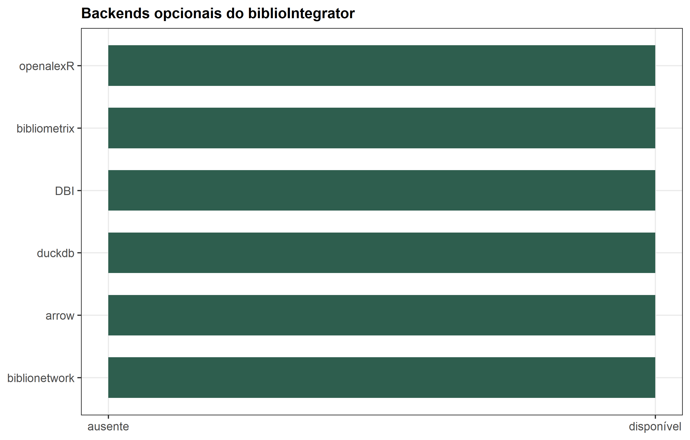
Figure 1: Disponibilidade dos backends opcionais detectados em tempo de execução.
A Figura 1 mostra o que está instalado nesta máquina. A leitura é operacional: cada backend ausente desliga um caminho do tutorial, nunca o documento inteiro, porque a arquitetura do pacote trata todo motor opcional como detectado em tempo de execução. Dos 6 backends verificados, 6 estão disponíveis.
4 Os três corpora do tutorial
4.1 Corpus A: acervo didático do pacote
O example_biblio() traz doze obras de agronomia com título, ano, DOI, autoria, palavras-chave, citações e fonte. É o acervo de partida: pequeno o bastante para inspecionar linha a linha e suficientemente realista para todas as funções.
4.2 Corpus B: acervo simulado com verdades plantadas
O acervo principal é simulado com semente fixa e comporta sete verdades que o tutorial verifica. Ele representa um levantamento sobre agricultura tropical entre 2010 e 2025, com 280 obras em três frentes de pesquisa: silício e estresse abiótico, carbono do solo e plantas de cobertura, e sensoriamento remoto com aprendizado de máquina.
Verdade
O que foi plantado
Onde é verificada
V1
três temas latentes com pesos desiguais
Módulos 5 e 6
V2
duas fontes com bônus de 12 citações por obra
Módulo 3
V3
metade das obras com coautoria internacional
Módulos 3 e 7
V4
termos de aprendizado de máquina e VANT concentrados a partir de 2020
Módulos 4 e 6
V5
um autor central que articula a rede
Módulo 7
V6
três duplicatas plantadas e defeitos de metadados
Módulo 2
V7
três laboratórios com padrão de coautoria próprio
Módulo 7
set.seed(SEED)nB<-280Ltemas<-list( silicio =list(tit ="Silício e tolerância a estresse abiótico", kw =c("silicon","salinity","drought stress","rice","sorghum","nutrient uptake","abiotic stress","silicon fertilization")), carbono =list(tit ="Carbono do solo e plantas de cobertura", kw =c("soil carbon","cover crops","no-till","soil organic matter","carbon sequestration","soil aggregation","crop rotation","green manure")), remoto =list(tit ="Sensoriamento remoto e fenotipagem de culturas", kw =c("remote sensing","UAV","machine learning","hyperspectral","yield prediction","vegetation index","phenotyping","deep learning")))tema_lat<-sample(c("silicio","carbono","remoto"), nB, replace =TRUE, prob =c(.45, .35, .20))fontes_bonus<-c("Field Crops Research", "Soil Biology & Biochemistry")fontes<-c(fontes_bonus, "Agronomy Journal", "Plant and Soil","Precision Agriculture", "Pesquisa Agropecuária Brasileira","Revista Brasileira de Ciência do Solo", "Scientia Agricola","Soil & Tillage Research", "Remote Sensing")int_lab<-c("Smith J","Chen L","Müller H","Rossi G")lab_S<-c("Silva AP","Costa JR","Pereira WE","Martins LC")lab_C<-c("Souza RM","Oliveira TN","Almeida FB")lab_R<-c("Rocha MV","Lima DH","Barbosa KS","Nunes PR","Castro ES")lab_de<-list(silicio =lab_S, carbono =lab_C, remoto =lab_R)cultura<-c("arroz","milho","soja","sorgo","feijão","trigo","pastagem")termos_ia<-c("machine learning","deep learning","UAV","hyperspectral")ano<-sample(2010:2025, nB, replace =TRUE, prob =c(2,2,3,3,4,4,5,5,6,7,8,9,10,11,12,9))fonte_i<-sample(fontes, nB, replace =TRUE, prob =c(12,11,10,10,9,9,10,10,9,10)/100)kw_list<-lapply(seq_len(nB), function(i){base<-sample(temas[[tema_lat[i]]]$kw, 4L)if(ano[i]>=2020&&runif(1)<.78)base<-c(base, sample(termos_ia, 1L))paste(unique(base), collapse ="; ")})authors_list<-lapply(seq_len(nB), function(i){meu<-lab_de[[tema_lat[i]]]outros<-unlist(lab_de[setdiff(names(lab_de), tema_lat[i])])pool<-if(runif(1)<.88)meuelseoutrosbr<-sample(pool, min(length(pool), sample(1:3, 1)))if(i<=40L||(tema_lat[i]=="silicio"&&runif(1)<.60))br<-unique(c("Silva AP", br))if(runif(1)<.50)br<-c(br, sample(int_lab, sample(1:2, 1)))paste(br, collapse ="; ")})cit<-pmax(0L, round(exp(rnorm(nB, 1.9, .9))-1))+ifelse(fonte_i%in%fontes_bonus, 12L, 0L)dB<-data.frame( title =sprintf("%s em %s (estudo %03d)",vapply(tema_lat, function(t)temas[[t]]$tit, character(1)),sample(cultura, nB, replace =TRUE), seq_len(nB)), year =ano, doi =paste0("10.1016/j.agri.2024.", sprintf("%05d", seq_len(nB))), authors =unlist(authors_list), keywords =unlist(kw_list), citations =cit, source =fonte_i, stringsAsFactors =FALSE)dB$doi[5]<-" HTTPS://DOI.ORG/10.1016/j.agri.2024.00005 "dB$doi[9]<-"doi:10.1016/j.agri.2024.00009"dB$year[14]<-NA_integer_dB$citations[21]<--3LdB$title[33]<-" "dB$doi[47]<-NA_character_dB$tema<-tema_latdB<-rbind(dB, dB[1, ])dB<-rbind(dB, transform(dB[2, ], doi =NA_character_))dB<-rbind(dB, transform(dB[3, ], doi ="https://doi.org/10.1016/j.agri.2024.00003"))x_bruto<-as_biblio_project(dB, source ="corpus B bruto")x_limpo<-deduplicate_biblio(x_bruto, method ="doi_title_year")# recorte analítico: parte do acervo JÁ deduplicado e exclui a obra sem ano,# porque agrupamentos por período exigem ano conhecido (ver Módulo 2)ids_ok<-x_limpo$works$work_id[!is.na(x_limpo$works$year)]x_analise<-x_limpox_analise$works<-x_limpo$works[x_limpo$works$work_id%in%ids_ok, , drop =FALSE]x_analise$authorships<-x_limpo$authorships[x_limpo$authorships$work_id%in%ids_ok, , drop =FALSE]x_analise$keywords<-x_limpo$keywords[x_limpo$keywords$work_id%in%ids_ok, , drop =FALSE]n_dup_auto<-nrow(x_bruto$works)-nrow(x_limpo$works)n_sem_ano<-nrow(x_limpo$works)-nrow(x_analise$works)# grupos prontos para os módulos 6 e 7. A coluna auxiliar `tema` do quadro plano# não sobrevive à harmonização (as_biblio_project preserva apenas os campos# canônicos), então o tema é derivado do título, como faria um usuáriotema_de_titulo<-function(t){ifelse(grepl("^Silício", t), "silicio",ifelse(grepl("^Carbono", t), "carbono", "remoto"))}tema_B<-tema_de_titulo(x_analise$works$title)per_B<-ifelse(x_analise$works$year>=2020, "2020-2025", "2010-2019")g_per<-form_groups(x_analise, per_B)g_tema<-form_groups(x_analise, tema_B)x_analise$works$periodo<-per_B
O acervo bruto tem 283 registros, porque as três duplicatas plantadas foram acrescentadas às 280 obras originais. A deduplicação automática removeu 2 delas e o recorte analítico excluiu ainda 1 obra sem ano, chegando a 280 obras. A duplicata que sobreviveu à rotina automática é justamente a que não tem DOI, e o Módulo 2 explica por quê.
4.3 Corpus C: acervo real obtido por API
O terceiro acervo é obtido em tempo de execução do OpenAlex, sobre um tema agronômico concreto. Ele mostra que o mesmo encadeamento analítico vale para dados que você não simulou.
x_openalex<-cache_rds("openalex_silicio",fetch_openalex("silicon salinity rice", n =40L))tem_C<-inherits(x_openalex, "biblio_project")if(tem_C){knitr::kable(head(x_openalex$works[, c("title","year","source","cited_by_count")], 5), caption ="Primeiras obras do acervo real do OpenAlex sobre silício e salinidade em arroz.")}else{cat("Chamada de rede indisponível nesta renderização:", x_openalex, "\n")}
Primeiras obras do acervo real do OpenAlex sobre silício e salinidade em arroz.
title
year
source
cited_by_count
Silicon reduces sodium uptake in rice ( Oryza sativa L.) in saline conditions and this is accounted for by a reduction in the transpirational bypass flow
1999
Plant Cell & Environment
398
Silicon Application to Rice Root Zone Influenced the Phytohormonal and Antioxidant Responses Under Salinity Stress
2013
Journal of Plant Growth Regulation
256
Silicon decreases chloride transport in rice (Oryza sativa L.) in saline conditions
2013
Journal of Plant Physiology
151
The combined use of silicon and arbuscular mycorrhizas to mitigate salinity and drought stress in rice
2022
Environmental and Experimental Botany
90
Influence of Nano Silicon and Nano Selenium on Root Characters, Growth, Ion Selectivity, Yield, and Yield Components of Rice (Oryza sativa L.) under Salinity Conditions
2021
Plants
179
5 Módulo 1. Arquitetura relacional e importação
5.1 O problema agronômico
Uma equipe de fertilidade do solo exporta 280 referências de três bases diferentes. Cada base nomeia as colunas de um jeito: uma chama o periódico de source, outra de journal, outra de so_title; uma grava o DOI com prefixo completo, outra só o sufixo. Se cada análise começar de um formato próprio, cada nova base exigirá reescrever todo o código. A solução do biblioIntegrator é harmonizar tudo em um objeto relacional único, o biblio_project, com seis tabelas ligadas por identificadores.
5.2 Do quadro plano ao objeto relacional
x_did<-as_biblio_project(example_biblio(), source ="acervo didático")estrutura<-data.frame( tabela =c("works","authorships","authors","keywords","references","provenance"), conteudo =c("uma linha por obra","ligação obra-autor","autores únicos","palavras-chave normalizadas","arestas de citação","trilha de operações"), linhas_didatico =vapply(x_did, nrow, integer(1)), linhas_analitico =vapply(x_analise, nrow, integer(1)), stringsAsFactors =FALSE)knitr::kable(estrutura, row.names =FALSE, caption ="As seis tabelas do biblio_project e o tamanho de cada uma nos dois acervos.")
Table 3: As seis tabelas do biblio_project e o tamanho de cada uma nos dois acervos.
tabela
conteudo
linhas_didatico
linhas_analitico
works
uma linha por obra
12
280
authorships
ligação obra-autor
24
853
authors
autores únicos
7
16
keywords
palavras-chave normalizadas
32
1228
references
arestas de citação
0
0
provenance
trilha de operações
1
2
A Tabela acima é a planta da casa. works guarda o documento; authorships liga documento e autor, o que permite contar produção por autor sem repetir linhas de documento; keywords normaliza os termos em minúsculas; provenance registra cada operação aplicada. A coluna linhas_analitico mostra que o acervo analítico tem 280 obras, 853 ligações de autoria e 1228 pares obra-termo.
csv_did<-file.path(tempdir(), "acervo_agronomia.csv")write.csv(head(example_biblio(), 6L), csv_did, row.names =FALSE)x_importado<-biblio_import(csv_did)etapas<-c("Arquivo\n(CSV, TSV, JSON)", "biblio_import()\nreconhece sinônimos","as_biblio_project()\nharmoniza", "biblio_project\n(6 tabelas)")graf<-data.frame(etapa =factor(etapas, levels =etapas), x =1:4)ggplot(graf, aes(x =x, y =1))+geom_label(aes(label =etapa), fill ="white", colour =pal_agri[1], linewidth =.5, size =3.1, label.padding =unit(.45, "lines"))+geom_segment(data =data.frame(x =1:3, xe =2:4),aes(x =x+.45, xend =xe-.45, y =1, yend =1), arrow =arrow(length =unit(.18, "cm")), colour ="grey40")+scale_x_continuous(limits =c(.55, 4.45))+ylim(.85, 1.15)+labs(x =NULL, y =NULL, title ="Do arquivo exportado ao objeto analítico")+theme_void(base_size =10)+theme(plot.title =element_text(face ="bold", hjust =.5, size =11))
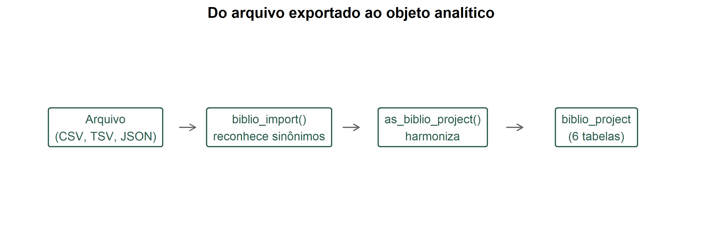
Figure 2: Caminho de importação: o quadro plano é lido, as colunas são reconhecidas por sinônimos e o resultado é o projeto relacional.
A Figura 2 resume o módulo inteiro. A leitura prática é que a etapa de harmonização é o único ponto em que nomes de coluna importam; a partir do biblio_project, todas as funções falam a mesma língua. O arquivo importado nesta execução produziu 6 obras, o mesmo número de linhas do CSV de entrada.
knitr::kable(head(x_did$works[, c("work_id","title","year","doi","cited_by_count")], 4), caption ="As quatro primeiras linhas da tabela works do acervo didático.")
Table 4: As quatro primeiras linhas da tabela works do acervo didático.
work_id
title
year
doi
cited_by_count
W0001f7e3
Silicon and salinity tolerance in rice
2018
10.1000/agri.1
42
W000160f5
Soil carbon under cover crops
2019
10.1000/agri.2
35
W0001b6e0
Remote sensing of soybean nitrogen
2020
10.1000/agri.3
28
W0001b6e2
Silicon nutrition in maize drought
2021
10.1000/agri.4
31
Os identificadores work_id são derivados do DOI quando ele existe e do título com ano quando não existe, o que garante chave estável mesmo com metadados incompletos. É essa chave que sustenta a deduplicação do módulo seguinte.
5.3 Tarefas do Módulo 1
Tarefa 1.1 (aplicar). Importe o arquivo acervo_agronomia.csv gerado acima com biblio_import(), harmonize com as_biblio_project() usando source = "minha base" e informe quantas obras, autores e termos o projeto tem.
Tarefa 1.2 (analisar). Rode biblio_health() sobre o acervo didático e explique, em duas frases, por que o diagnóstico não encontra problema algum mesmo com um acervo tão pequeno.
Antes de seguir
Se você não sabe qual backend opcional está instalado na sua máquina, rode backend_status(). A saída é uma tabela com uma linha por backend e um indicador lógico de disponibilidade, sem interromper a sessão.
6 Módulo 2. Qualidade, duplicatas e proveniência
6.1 O problema agronômico
A busca sistemática da sua tese sobre silício e estresse salino em arroz rodou em três bases e voltou com 283 registros para um conjunto de estudos que você sabe ser menor. A diferença não é contabilidade: cada registro a mais conta duas vezes na produção anual, entra duas vezes no conjunto que alimenta a meta-análise do efeito do silício na condutividade elétrica do extrato saturado e infla o painel de autores que você vai defender na qualificação.
Bases bibliográficas exportam metadados que ninguém revisou antes de você. Um registro chega sem título porque a exportação cortou o campo, outro chega sem ano porque a base não resolveu a data, outro ainda traz contagem de citações negativa, resultado de correções internas aplicadas sobre um número já publicado. Nenhum desses defeitos salta aos olhos quando se abre o arquivo e se rola até o fim; todos aparecem quando se procura por eles com um critério explícito. O custo de não procurar é uma tabela de resultados que a banca refaz em dez minutos e não consegue reproduzir.
Este módulo cobre a etapa que precede qualquer análise. A pergunta que ele responde não é quantos registros existem, mas quais defeitos os metadados têm, quais deles uma rotina automática corrige sem julgamento e quais exigem uma decisão do pesquisador, registrada e defensável. A fronteira entre corrigir e decidir é o que separa um acervo auditável de uma planilha apenas organizada. O acervo de trabalho é o x_bruto, o corpus simulado de 283 registros que o documento montou a partir de 280 obras, com três duplicatas plantadas e defeitos de metadados distribuídos de propósito.
6.2 O diagnóstico antes da análise
# diagnóstico dos dois estados do acervo: bruto e já deduplicadoh_bruto<-biblio_health(x_bruto)h_limpo<-biblio_health(x_limpo)# a tabela coloca os dois diagnósticos lado a lado e mede o que a rotina resolveudiag<-data.frame( defeito =h_bruto$check, bruto =h_bruto$n, pos_dedup =h_limpo$n, stringsAsFactors =FALSE)diag$resolvido<-diag$bruto-diag$pos_dedupknitr::kable(diag, row.names =FALSE, col.names =c("defeito", "acervo bruto", "após deduplicação", "resolvido pela rotina"), caption ="Defeitos de metadados acusados pelo diagnóstico no acervo bruto e depois da deduplicação automática.")
Table 5: Defeitos de metadados acusados pelo diagnóstico no acervo bruto e depois da deduplicação automática.
Defeitos de metadados acusados pelo diagnóstico no acervo bruto e depois da deduplicação automática.
defeito
acervo bruto
após deduplicação
resolvido pela rotina
missing_title
1
1
0
missing_year
1
1
0
missing_doi
2
2
0
duplicate_doi
2
0
2
duplicate_title_year
3
1
2
negative_citations
1
1
0
A leitura dessa tabela é a chave do módulo, e ela tem três partes. A primeira é que o diagnóstico acusa 10 ocorrências de defeito, e nenhuma das seis verificações devolve zero: o defeito mais frequente é o par título-ano repetido, com 3 ocorrências. A segunda é que a rotina automática resolve 4 desses casos — apenas o que decorre da duplicação — e deixa intactos o título em branco, o ano ausente, os dois DOIs vazios e a citação negativa, porque nenhum deles é duplicação. A terceira é a mais importante: entre o diagnóstico e a rotina existe uma sobra. Depois de deduplicar, o acervo ainda tem 1 par de título e ano repetido, o que significa que os dois instrumentos discordam sobre o mesmo acervo. Localizar essa discordância é o objetivo do restante do módulo.
# formato longo: uma linha por combinação de defeito e etapa, exigido pelo ggplot2d_long<-rbind(data.frame(defeito =h_bruto$check, etapa ="bruto", n =h_bruto$n),data.frame(defeito =h_limpo$check, etapa ="após deduplicação", n =h_limpo$n))d_long$defeito<-factor(d_long$defeito, levels =rev(h_bruto$check))d_long$etapa<-factor(d_long$etapa, levels =c("bruto", "após deduplicação"))ggplot(d_long, aes(x =defeito, y =n, fill =etapa))+geom_col(position =position_dodge(width =.78), width =.7)+geom_text(aes(label =n), position =position_dodge(width =.78), hjust =-.3, size =3)+scale_fill_manual(values =c("bruto"=pal_agri[2], "após deduplicação"=pal_agri[1]))+scale_y_continuous(limits =c(0, max(d_long$n)*1.2))+coord_flip()+labs(x =NULL, y ="registros afetados", fill =NULL, title ="Diagnóstico de qualidade antes e depois da deduplicação", subtitle ="Barras ausentes indicam defeito já resolvido ou inexistente")
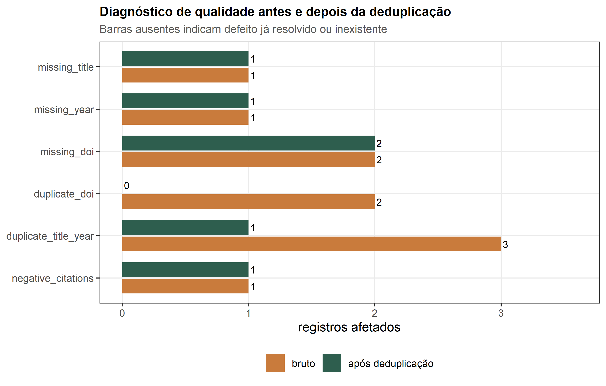
Figure 3: Registros afetados por tipo de defeito no acervo bruto e depois da deduplicação automática.
A figura mostra quais barras desaparecem e quais permanecem. O que desaparece é exatamente o que a duplicação explicava: o DOI repetido cai de 2 para 0, e o par título-ano cai de 3 para 1. O que permanece são os defeitos de campo, que nenhuma deduplicação toca. A consequência prática é imediata: relatar apenas a queda do DOI repetido a zero, como se o acervo estivesse limpo, é uma leitura incorreta do próprio diagnóstico que você acabou de rodar. O acervo melhorou, mas não ficou íntegro, e a barra que não desapareceu é a que precisa de decisão humana.
6.3 A deduplicação automática e o que ela resolve
# repetir a chamada aqui deixa a operação visível e confere que ela é determinísticax_dedup<-deduplicate_biblio(x_bruto, method ="doi_title_year")m2_reproduz<-identical(x_dedup$works$work_id, x_limpo$works$work_id)# o log de removidos fica preso ao objeto como atributolog_rem<-attr(x_limpo, "dedup_log")knitr::kable(log_rem, row.names =FALSE, caption ="Registros removidos pela deduplicação automática, com o identificador, o título e o DOI de cada um.")
Table 6: Registros removidos pela deduplicação automática, com o identificador, o título e o DOI de cada um.
Registros removidos pela deduplicação automática, com o identificador, o título e o DOI de cada um.
work_id
title
doi
W000474d7
Carbono do solo e plantas de cobertura em milho (estudo 001)
10.1016/j.agri.2024.00001
W0004d133
Silício e tolerância a estresse abiótico em trigo (estudo 003)
10.1016/j.agri.2024.00003
O log de removidos é a peça que torna a operação auditável, e ele responde à pergunta que todo revisor faz: o que exatamente saiu? Saíram 2 registros, ambos com DOI preenchido, e os títulos das obras 001 e 003 aparecem duas vezes no bruto porque o mesmo trabalho foi exportado por bases diferentes. A chamada feita aqui reproduz o acervo do documento? TRUE. Essa reprodutibilidade importa para o artigo: se o revisor rodar o mesmo código na mesma versão do pacote, ele obtém a mesma lista de removidos, porque a chave de comparação é determinística e não depende da ordem das linhas nem de sorteio. O que a rotina não entrega, e não tem como entregar, é o julgamento sobre o que fazer quando dois registros descrevem a mesma obra sem compartilhar a mesma chave.
# painel 1: tamanho do acervo etapa por etapa, sempre por contagem de linhasm2_painel1<-data.frame( painel ="Tamanho do acervo (registros)", etapa =c("bruto", "após\ndeduplicação", "recorte\nanalítico"), n =c(nrow(x_bruto$works), nrow(x_limpo$works), nrow(x_analise$works)))# painel 2: defeitos que o encadeamento acima não resolveu, contados em paresm2_alvo<-paste(tolower(trimws(x_limpo$works$title)), x_limpo$works$year)m2_painel2<-data.frame( painel ="Defeitos remanescentes (pares)", etapa =c("título e ano\nrepetidos", "identificador\nrepetido"), n =c(sum(duplicated(m2_alvo)),sum(table(x_analise$works$work_id)>1)))m2_funil<-rbind(m2_painel1, m2_painel2)m2_funil$etapa<-factor(m2_funil$etapa, levels =m2_funil$etapa)m2_funil$painel<-factor(m2_funil$painel, levels =unique(m2_funil$painel))ggplot(m2_funil, aes(x =etapa, y =n, fill =painel))+geom_col(width =.66)+geom_text(aes(label =n), vjust =-.4, size =3.3)+facet_wrap(~painel, scales ="free", ncol =2)+scale_fill_manual(values =pal_agri[c(1, 2)], guide ="none")+scale_y_continuous(expand =expansion(mult =c(0, .2)))+labs(x =NULL, y ="contagem", title ="O que o encadeamento resolve e o que ele deixa para trás", subtitle ="Escalas independentes entre os painéis: registros à esquerda, pares de defeito à direita")
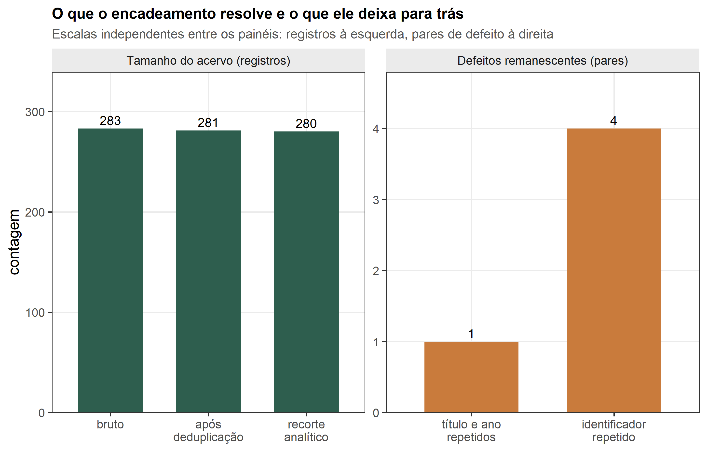
Figure 4: À esquerda, o tamanho do acervo em cada etapa do encadeamento; à direita, os defeitos que sobrevivem ao encadeamento, em número de pares.
A figura é o resumo operacional do módulo e precisa ser lida em dois tempos. O painel da esquerda é o funil: o acervo entra com 283 registros, perde 2 na deduplicação e perde mais 1 no recorte analítico, chegando a 280 obras com ano conhecido. O painel da direita é o que costuma ser omitido em relatos de bibliometria: mesmo depois de todo o encadeamento, permanecem um par de título e ano repetidos e 4 identificadores repetidos. Os dois painéis usam escalas independentes de propósito, porque comparar a contagem de registros com a contagem de pares de defeito no mesmo eixo tornaria o defeito invisível — e o defeito invisível é justamente o que volta como pergunta na defesa.
6.4 A terceira duplicata sobrevive à rotina
# a chave de comparação da rotina, reproduzida aqui como está documentada no pacotechave_dedup<-function(titulo, ano, doi){ifelse(nzchar(doi),paste0("doi:", doi),paste0("ty:", tolower(gsub("[^[:alnum:]]", "", titulo)), ":", ano))}# o diagnóstico procura título igual no mesmo ano; aqui isolamos o par que restoum2_w<-x_limpo$worksm2_alvo_w<-paste(tolower(trimws(m2_w$title)), m2_w$year)m2_par<-m2_w[duplicated(m2_alvo_w)|duplicated(m2_alvo_w, fromLast =TRUE), ]m2_par$chave<-chave_dedup(m2_par$title, m2_par$year, m2_par$doi)knitr::kable(m2_par[, c("work_id", "title", "year", "doi", "chave", "cited_by_count")], row.names =FALSE, col.names =c("identificador", "título", "ano", "DOI", "chave usada na deduplicação", "citações"), caption ="O par que sobrevive à deduplicação automática: duas linhas com o mesmo título e o mesmo ano, uma com DOI e outra sem, e as chaves de comparação que a rotina usa.")
Table 7: O par que sobrevive à deduplicação automática: duas linhas com o mesmo título e o mesmo ano, uma com DOI e outra sem, e as chaves de comparação que a rotina usa.
O par que sobrevive à deduplicação automática: duas linhas com o mesmo título e o mesmo ano, uma com DOI e outra sem, e as chaves de comparação que a rotina usa.
identificador
título
ano
DOI
chave usada na deduplicação
citações
W0004d050
Carbono do solo e plantas de cobertura em pastagem (estudo 002)
2016
10.1016/j.agri.2024.00002
doi:10.1016/j.agri.2024.00002
3
W0002f2ad
Carbono do solo e plantas de cobertura em pastagem (estudo 002)
Esta tabela é o achado central do módulo, e ela explica uma discordância que parecia erro de contagem. As duas linhas descrevem o mesmo trabalho: mesmo título, mesmo ano, mesma fonte, mesmo 3 citações. A rotina automática não as uniu porque a chave que ela constrói não é o título, e sim uma cadeia que muda de forma conforme o DOI existe: quando há DOI, a chave é doi: seguido do identificador; quando não há, a chave é ty: seguido do título sem pontuação e do ano. As duas chaves da tabela nunca coincidem, e chaves diferentes significam registros diferentes para qualquer rotina baseada em chave. Note ainda que o diagnóstico não errou ao acusar o par: ele usa o critério título mais ano, que é o critério correto do ponto de vista do conteúdo. Ele acusa mais do que a rotina automática resolve, e essa assimetria é uma propriedade do desenho do diagnóstico, não um defeito dele.
A consequência prática é que a última palavra não é do software. Restam três caminhos defensáveis, e você precisa escolher um e dizer qual escolheu. O primeiro é voltar à base de origem e recuperar o DOI do registro órfão: se a exportação tiver omitido o campo, o próprio Scopus ou OpenAlex devolve o identificador, e a partir daí a chave volta a coincidir e a rotina resolve o par sozinha. O segundo é excluir a linha sem DOI manualmente e registrar a decisão, o que é legítimo desde que documentado, porque a obra já está representada pela linha que tem DOI. O terceiro é manter as duas linhas e explicar por que, o que só se sustenta quando há dúvida real sobre serem o mesmo trabalho — situação em que título e ano coincidem por acaso, algo comum em títulos genéricos como “Efeito da adubação nitrogenada na produtividade do milho”. O erro que invalida os três caminhos é não fazer nenhum e seguir para a análise com a duplicata dentro do acervo, porque aí o número de obras do artigo passa a depender de sorte de exportação.
6.5 O que o diagnóstico não vê: identificadores repetidos
# identificadores que aparecem em mais de uma linha do recorte analíticom2_w_ana<-x_analise$worksm2_ids_rep<-names(which(table(m2_w_ana$work_id)>1))# rótulo curto para a tabela: número do estudo e anom2_rot<-function(t, y)sprintf("estudo %s (%d)", sub("^.*\\(estudo ([0-9]+)\\).*$", "\\1", t), y)m2_colisoes<-do.call(rbind, lapply(m2_ids_rep, function(i){d<-m2_w_ana[m2_w_ana$work_id==i, ]data.frame(identificador =i, obra_1 =m2_rot(d$title[1], d$year[1]), obra_2 =m2_rot(d$title[2], d$year[2]), stringsAsFactors =FALSE)}))# efeito no encadeamento: a junção por identificador repete os vínculos de autoriam2_vinculos<-nrow(x_analise$authorships)m2_vinculos_merge<-nrow(merge(x_analise$authorships,m2_w_ana[, "work_id", drop =FALSE], by ="work_id"))knitr::kable(m2_colisoes, row.names =FALSE, col.names =c("identificador", "primeira obra", "segunda obra"), caption ="Identificadores compartilhados por obras distintas no recorte analítico, com o rótulo de cada obra em conflito.")
Table 8: Identificadores compartilhados por obras distintas no recorte analítico, com o rótulo de cada obra em conflito.
Identificadores compartilhados por obras distintas no recorte analítico, com o rótulo de cada obra em conflito.
identificador
primeira obra
segunda obra
W00047d60
estudo 246 (2016)
estudo 269 (2016)
W0004b7a9
estudo 085 (2019)
estudo 166 (2019)
W0004d3cf
estudo 020 (2025)
estudo 028 (2022)
W0004d6c3
estudo 126 (2024)
estudo 250 (2025)
Este é um defeito de outra natureza, e vale conhecê-lo antes de publicar painel por autor. O recorte analítico tem 280 linhas mas apenas 276 identificadores distintos: em 4 casos, duas obras diferentes receberam o mesmo identificador. A causa está na construção do identificador, que é uma função resumida do texto formado por título, ano e DOI — um resumo, por definição, descarta informação, e textos distintos podem produzir o mesmo resumo. Nenhuma linha da tabela é duplicata: os títulos, os anos e as obras são diferentes, e é por isso que o diagnóstico do início do módulo não acusa nada aqui, porque ele procura título e ano repetidos e não identificador repetido.
A consequência é silenciosa e aparece longe daqui. Toda junção por identificador cresce quando a chave se repete: a tabela de vínculos de autoria do recorte tem 853 linhas e passa a 871 depois de uma junção apenas com a coluna de identificador das obras — 18 vínculos inventados, que existem porque cada linha das obras em conflito encontrou as autorias da obra errada. Qualquer painel de produção por autor construído sobre essa junção herda o excesso, e a distorção não se anuncia: os totais continuam “coerentes”, apenas maiores. A correção é atribuir identificador único na importação, o que se faz com uma linha de código, declarando a coluna work_id no quadro plano antes de chamar as_biblio_project(), que então respeita o identificador fornecido em vez de calculá-lo. A lição de método é mais ampla: identificador gerado por resumo do conteúdo não substitui chave de base, e em acervo que vai virar tabela de autores vale declarar a chave na entrada.
6.6 A trilha de proveniência
# a trilha do bruto tem uma linha; a do deduplicado acumula a segundam2_trilha_bruto<-audit_biblio(x_bruto)m2_trilha<-audit_biblio(x_limpo)knitr::kable(m2_trilha, row.names =FALSE, col.names =c("carimbo de tempo", "operação", "detalhes"), caption ="Trilha de proveniência do acervo deduplicado, com o carimbo de tempo, a operação e os detalhes de cada passo.")
Table 9: Trilha de proveniência do acervo deduplicado, com o carimbo de tempo, a operação e os detalhes de cada passo.
Trilha de proveniência do acervo deduplicado, com o carimbo de tempo, a operação e os detalhes de cada passo.
carimbo de tempo
operação
detalhes
2026-09-22 03:20:40.628673
as_biblio_project
source=corpus B bruto; n=283
2026-09-22 03:20:40.633956
deduplicate_biblio
removed=2
A trilha responde, em duas linhas, à pergunta que nenhuma tabela de resultados responde: de onde veio o número que está no artigo. A primeira linha registra a importação e traz source=corpus B bruto; n=283, ou seja, quantos registros entraram e de qual fonte. A segunda registra removed=2, o que fecha a conta do funil: 283 menos 2 é 281. A leitura é que a proveniência se acumula a cada operação sobre o objeto, sem que você precise manter um diário paralelo, e que o carimbo de tempo é o que permite amarrar a análise à versão da base consultada — relevante quando o revisor pede a data exata do levantamento. O que a trilha não guarda é o julgamento: ela registra que dois registros foram removidos, não que a decisão sobre a terceira duplicata foi recuperar o DOI na base de origem. Essa parte continua sendo sua, e o lugar dela é a seção de Métodos.
A armadilha do diagnóstico em objeto errado
biblio_health() não verifica se o argumento é um biblio_project. Se você passar o quadro plano (dB) em vez do projeto, a função procura a tabela works dentro de um data frame, não encontra, e devolve todos os defeitos iguais a zero — um atestado de limpeza para um acervo que ainda tem duplicata, título em branco e citação negativa. audit_biblio(), na mesma situação, para com inherits(x, "biblio_project") is not TRUE; deduplicate_biblio() para com $ operator is invalid for atomic vectors. Ou seja: das três funções do módulo, duas falham alto e uma falha em silêncio. Harmonize com as_biblio_project() antes de diagnosticar.
6.7 Tarefas do Módulo 2
Tarefa 2.1 (aplicar). Rode o encadeamento completo — diagnóstico, deduplicação e auditoria — em dois acervos diferentes: o acervo didático do pacote (x_did, doze obras, sem defeito plantado) e um recorte do acervo bruto limitado às obras de 2020 em diante. Para cada um, informe quantos registros entram, quantos saem da deduplicação, quais defeitos o diagnóstico acusa em cada estado e quantas linhas a trilha de proveniência acumula. Ao final, diga em que acervo a deduplicação automática foi suficiente e em que acervo ela não foi.
Tarefa 2.2 (analisar e criar). Decida o destino da duplicata remanescente e documente a decisão. Escreva uma função relatar_pendencias(x) que receba um biblio_project e devolva somente os defeitos que a rotina automática não resolve — o par de título e ano repetido, os identificadores compartilhados por obras distintas, os campos obrigatórios vazios e a contagem de citações negativa — com uma coluna indicando a ação esperada do pesquisador. Rode-a sobre x_limpo e sobre x_analise, compare as duas saídas e escreva, em um parágrafo, qual das três decisões discutidas no módulo você adotaria para a linha sem DOI e por quê.
7 Módulo 3. Análise descritiva e impacto
7.1 O problema agronômico
O acervo está limpo, deduplicado e auditado. Falta a parte que a banca lê primeiro: o retrato do conjunto. Quantos estudos, publicados quando, em que periódicos, por quais grupos e com que citação. Para um doutorando em Agronomia, esse retrato não é enfeite de seção de Resultados: é o que sustenta a afirmação de que a frente de pesquisa sobre silício e estresse salino amadureceu, que o tema migrou de periódicos nacionais para internacionais, ou que um laboratório concentra a produção da área. Sem os números descritivos, cada uma dessas frases vira impressão pessoal.
A dificuldade é que citação bruta não é medida de impacto comparável. Uma obra publicada no início do período teve mais de uma década para acumular citações; uma publicada no último ano teve meses. Um artigo em periódico de prestígio recebe citações que decorrem da visibilidade da revista, não do mérito do trabalho. Comparar os dois números diretamente mistura três efeitos que precisam ser separados: idade da obra, prestígio do veículo e mérito próprio. O erro mais comum em bibliometria de tese é ranquear por citação bruta e chamar o resultado de “os trabalhos mais influentes da área”, quando na prática se ranqueou “os trabalhos mais antigos e mais bem publicados”.
Este módulo constrói o retrato descritivo e depois ataca a comparação. Ele usa describe_biblio() para o panorama, biblio_metrics() para o desempenho por autor e normalized_citations() para o impacto relativo, e verifica duas verdades plantadas no corpus simulado: duas fontes que receberam bônus de citações e um estrato de coautoria internacional. As duas verificações ensinam a mesma lição por caminhos opostos — a primeira mostra um efeito de veículo que sobrevive a um ajuste ingênuo, a segunda mostra um efeito que parece existir e que o teste não sustenta.
7.2 O retrato do acervo
m3_w<-x_analise$worksm3_res<-describe_biblio(x_analise)# formatação de tabela: inteiro sem casa decimal, quebrado com duas casasm3_num<-function(x, d=2){ifelse(x==round(x), format(round(x)), formatC(x, format ="f", digits =d))}m3_resumo<-data.frame( indicador =c("obras no recorte analítico", "identificadores distintos de obra","primeiro ano", "último ano", "citações acumuladas","citações por obra (média)", "citações por obra (mediana)","obra mais citada", "obras sem nenhuma citação","fontes distintas", "autores distintos","vínculos obra-autor", "pares obra-termo"), valor =m3_num(c(m3_res$n_documents, length(unique(m3_w$work_id)),m3_res$years[1], m3_res$years[2], m3_res$total_citations,mean(m3_w$cited_by_count), median(m3_w$cited_by_count),max(m3_w$cited_by_count), sum(m3_w$cited_by_count==0),length(unique(m3_w$source)), nrow(x_analise$authors),nrow(x_analise$authorships), nrow(x_analise$keywords))), stringsAsFactors =FALSE)knitr::kable(m3_resumo, row.names =FALSE, caption ="Retrato do acervo analítico: tamanho, período, citações, veículos e autoria.")
Table 10: Retrato do acervo analítico: tamanho, período, citações, veículos e autoria.
Retrato do acervo analítico: tamanho, período, citações, veículos e autoria.
indicador
valor
obras no recorte analítico
280
identificadores distintos de obra
276
primeiro ano
2010
último ano
2025
citações acumuladas
3215
citações por obra (média)
11.48
citações por obra (mediana)
8
obra mais citada
83
obras sem nenhuma citação
10
fontes distintas
10
autores distintos
16
vínculos obra-autor
853
pares obra-termo
1228
A primeira leitura é de escala e de assimetria. O acervo tem 280 obras distribuídas em 10 periódicos e 16 autores, e acumula 3215 citações. A média é de 11.48 citações por obra, mas a mediana é 8: como a média é 1.4 vezes a mediana, a distribuição é assimétrica à direita, com muitas obras pouco citadas e poucas obras muito citadas, uma delas com 83 citações. A consequência prática é que citar a média sem a mediana esconde o padrão real do acervo, e que qualquer ranking por citação bruta será dominado por um punhado de obras. Vale registrar também as 10 obras sem nenhuma citação e a única com contagem negativa, que permaneceu no acervo porque o recorte analítico não a remove — o defeito é de campo e foi discutido no Módulo 2. Do lado da estrutura relacional, as 280 obras geram 853 vínculos de autoria e 1228 pares obra-termo, o que mostra o ganho do modelo: um autor que assina dez obras entra uma vez na tabela de autores e dez vezes na de vínculos, sem repetir a linha da obra.
# série anual que o próprio describe_biblio devolvem3_an<-describe_biblio(x_analise)$annualm3_an$acumulado<-cumsum(m3_an$citations)# fator de escala entre o eixo das barras e o eixo da linham3_escala<-max(m3_an$acumulado)/max(m3_an$documents)ggplot(m3_an, aes(x =year))+geom_col(aes(y =documents), fill =pal_agri[1], width =.72)+geom_line(aes(y =acumulado/m3_escala), colour =pal_agri[2], linewidth =.9)+geom_point(aes(y =acumulado/m3_escala), colour =pal_agri[2], size =1.7)+scale_x_continuous(breaks =m3_an$year)+scale_y_continuous( name ="obras publicadas por ano", sec.axis =sec_axis(~.*m3_escala, name ="citações acumuladas"))+labs(x =NULL, title ="Produção anual e citações acumuladas", subtitle ="Barras: obras publicadas; linha: citações acumuladas no período")+theme(axis.text.x =element_text(angle =45, hjust =1))
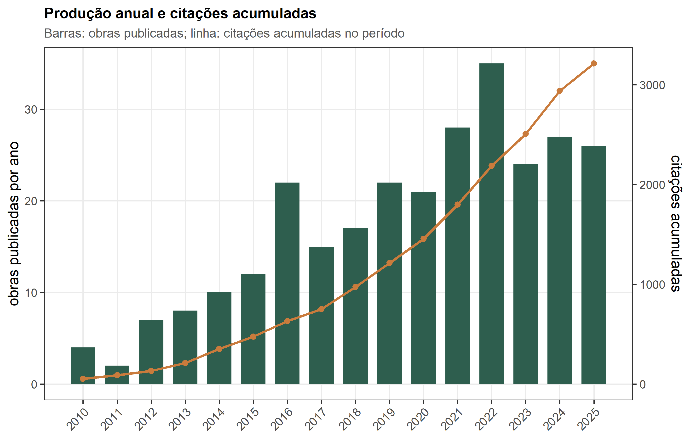
Figure 5: Produção anual do acervo, em número de obras, e citações acumuladas no período.
A figura combina duas leituras que respondem a perguntas diferentes. As barras mostram que a produção não cresce de forma constante: o acervo passa de 4 obras em 2010 para 26 em 2025, atinge o pico em 2022, quando entram 35 obras, e recua nos anos seguintes, com 24 obras em 2023 e 26 em 2025. A linha mostra o estoque de citações, que sobe sem interrupção até 3215 porque citação é acumulada por natureza e não cai quando a produção cai. A leitura conjunta é o que evita a armadilha: um ano de retração na produção não significa queda de impacto, e a distância entre a barra do último ano e a linha acumulada é a medida da desvantagem temporal de quem publicou recentemente. É por causa dessa desvantagem que a normalização da última seção do módulo existe.
Quanto ao conteúdo, os termos mais frequentes do acervo, contados sobre as palavras-chave normalizadas por describe_biblio(), são nutrient uptake (77 ocorrências), drought stress (76) e silicon fertilization (76). O ranking dos veículos começa por Scientia Agricola, com 37 obras, seguido de Soil Biology & Biochemistry, com 34. Note que a contagem de obras por veículo não diz nada sobre impacto: a fonte que mais publica no acervo não está entre as primeiras em citação média, como a seção sobre veículos mostra. Confundir volume com impacto é o segundo erro clássico de quem descreve acervo, e a correção exige a mesma tabela em duas colunas diferentes.
7.3 Quem publica: produção, citação e índices por autor
# as métricas por autor vêm em um data frame com a coluna authorm3_bm<-biblio_metrics(x_analise)# a coluna author já traz o nome de exibição nesta versão; a junção com a tabela# de autores acrescenta o identificador e serve de conferênciam3_autores<-merge(m3_bm, x_analise$authors, by.x ="author", by.y ="display_name")m3_autores<-m3_autores[order(-m3_autores$h_index, -m3_autores$citations), ]m3_top10<-head(m3_autores[, c("author", "author_id", "documents", "citations","h_index", "g_index", "m_index")], 10)# as métricas somam 871 produções para 853 vínculos: o excesso vem da chave repetidam3_soma_doc<-sum(m3_bm$documents)m3_vinculos<-nrow(x_analise$authorships)# a conferência de nomes: a coluna de métricas usa o mesmo nome de exibição da tabela de autoresm3_nomes_ok<-setequal(m3_bm$author, x_analise$authors$display_name)knitr::kable(data.frame(autor =m3_top10$author, identificador =m3_top10$author_id, producao =m3_num(m3_top10$documents), citacoes =m3_num(m3_top10$citations), h =m3_num(m3_top10$h_index), g =m3_num(m3_top10$g_index), m =m3_num(m3_top10$m_index, 3)), row.names =FALSE, col.names =c("autor", "identificador", "produção", "citações", "índice h","índice g", "índice m"), caption ="Dez autores mais produtivos por índice h no acervo analítico, com produção, citações e índices.")
Table 11: Dez autores mais produtivos por índice h no acervo analítico, com produção, citações e índices.
Dez autores mais produtivos por índice h no acervo analítico, com produção, citações e índices.
autor
identificador
produção
citações
índice h
índice g
índice m
Silva AP
A00000b2d
145
1766
21
31
1.312
Pereira WE
A00001225
76
836
18
23
1.125
Oliveira TN
A00001691
76
788
18
22
1.125
Almeida FB
A0000110a
57
692
18
22
1.125
Martins LC
A00001245
72
966
17
25
1.062
Costa JR
A00000b85
66
741
17
24
1.062
Chen L
A00000662
51
723
17
24
1.062
Smith J
A00000906
60
731
16
22
1
Rossi G
A00000913
56
646
16
22
1
Souza RM
A00000bc3
55
635
16
21
1
Esta tabela precisa de três avisos, e os três são de método. O primeiro é sobre a nomenclatura dos índices: documents é o número de vínculos de autoria do autor no acervo, citations é a soma das citações dessas obras, h_index é o maior número h tal que o autor tem h obras com pelo menos h citações cada, g_index avança o mesmo raciocínio sobre a soma acumulada, e m_index divide o índice h pela extensão da carreira no acervo, o que favorece quem publica cedo e por muitos anos. O segundo é que o topo é dominado por um autor: Silva AP assina 145 dos 280 registros do acervo, ou 51.8 por cento deles, com 1766 citações e índice h 21. Em um levantamento real isso indica um grupo de pesquisa que domina a frente, e a consequência é que qualquer inferência sobre a área carrega a marca desse grupo; em um acervo simulado, é a verdade plantada V5 aparecendo. O terceiro aviso é que o índice h premia longevidade e volume, não impacto por obra, e por isso ele não substitui a medida normalizada que fecha o módulo. Cabe ainda uma observação sobre a junção feita no código: a coluna author das métricas já contém o nome de exibição nesta versão do pacote, e não o identificador, de modo que a junção com a tabela de autores funciona como conferência e como enriquecimento — a comparação entre os dois conjuntos de nomes devolve TRUE. Se a sua versão trouxer identificadores nessa coluna, a mesma junção continua correta, apenas trocando a chave de ligação.
Há ainda um detalhe de infraestrutura que a tabela não mostra e que vale conferir. A soma da coluna documents dá 871, mas o acervo tem 853 vínculos de autoria: a diferença de 18 não é erro de arredondamento, é o efeito dos identificadores repetidos discutidos no Módulo 2, que fazem a junção entre vínculos e obras repetir linhas. A verificação é direta e vale a pena incluir no seu código sempre que o painel por autor for para o artigo.
# reconstrução do mesmo acervo com identificador único declarado na entradam3_dR<-dBm3_dR$work_id<-sprintf("WB%04d", seq_len(nrow(m3_dR)))m3_xR<-deduplicate_biblio(as_biblio_project(m3_dR, source ="corpus B reparado"), method ="doi_title_year")m3_manter<-!is.na(m3_xR$works$year)m3_xR$works<-m3_xR$works[m3_manter, , drop =FALSE]m3_xR$authorships<-m3_xR$authorships[m3_xR$authorships$work_id%in%m3_xR$works$work_id, , drop =FALSE]m3_xR$keywords<-m3_xR$keywords[m3_xR$keywords$work_id%in%m3_xR$works$work_id, , drop =FALSE]m3_bmR<-biblio_metrics(m3_xR)m3_cmp<-merge(m3_bm, m3_bmR, by ="author", suffixes =c("_calculado", "_declarado"))m3_cmp<-m3_cmp[m3_cmp$documents_calculado!=m3_cmp$documents_declarado|m3_cmp$citations_calculado!=m3_cmp$citations_declarado, ]m3_cmp<-m3_cmp[order(-m3_cmp$citations_calculado+m3_cmp$citations_declarado), ]knitr::kable(data.frame(autor =m3_cmp$author, prod_calc =m3_num(m3_cmp$documents_calculado), prod_decl =m3_num(m3_cmp$documents_declarado), cit_calc =m3_num(m3_cmp$citations_calculado), cit_decl =m3_num(m3_cmp$citations_declarado), h_calc =m3_num(m3_cmp$h_index_calculado), h_decl =m3_num(m3_cmp$h_index_declarado)), row.names =FALSE, col.names =c("autor", "produção (chave calculada)", "produção (chave declarada)","citações (chave calculada)", "citações (chave declarada)","índice h (calculada)", "índice h (declarada)"), caption ="Autores afetados pelos identificadores repetidos: produção e citações com a chave calculada pelo pacote e com chave única declarada na importação.")
Table 12: Autores afetados pelos identificadores repetidos: produção e citações com a chave calculada pelo pacote e com chave única declarada na importação.
Autores afetados pelos identificadores repetidos: produção e citações com a chave calculada pelo pacote e com chave única declarada na importação.
autor
produção (chave calculada)
produção (chave declarada)
citações (chave calculada)
citações (chave declarada)
índice h (calculada)
índice h (declarada)
Martins LC
72
70
966
950
17
17
Costa JR
66
64
741
731
17
17
Rossi G
56
54
646
639
16
16
Pereira WE
76
75
836
830
18
18
Oliveira TN
76
75
788
784
18
18
Almeida FB
57
56
692
691
18
18
Chen L
51
50
723
722
17
17
Smith J
60
59
731
730
16
16
Souza RM
55
54
635
634
16
16
A tabela mede o tamanho do problema e também o limite dele. São 9 autores afetados, e o maior desvio de produção é de 2 obras, enquanto o maior desvio de citações chega a 16 citações — concentrado em Martins LC. O que a tabela mostra com igual clareza é que as colunas de índice h são idênticas nas duas versões: o índice h é robusto a esse tipo de inflação, porque acrescentar uma obra duplicada ao conjunto de um autor desloca a contagem de títulos, mas raramente muda o ponto em que h obras têm h citações. A conclusão prática é fina: o ranqueamento por índice h do acervo não muda, o painel de produção e de citações sim. Se o seu artigo apresenta média de citações por autor ou produtividade por grupo, declare work_id na importação; se apresenta apenas índice h, a distorção não alcança a conclusão, embora continue valendo corrigi-la.
7.4 Onde se publica: o efeito do veículo
# desempenho por fonte, com as medidas de posição e de dispersãom3_fontes<-do.call(data.frame, aggregate(cited_by_count~source, data =m3_w, FUN =function(z)c(n =length(z), total =sum(z), media =mean(z), mediana =median(z), dp =sd(z))))names(m3_fontes)<-c("fonte", "obras", "citacoes", "media", "mediana", "dp")m3_fontes<-m3_fontes[order(-m3_fontes$media), ]m3_fontes$posicao<-seq_len(nrow(m3_fontes))# as duas fontes que receberam 12 citações extras por obra no corpus simuladom3_bonus<-c("Field Crops Research", "Soil Biology & Biochemistry")m3_fontes$bonus<-m3_fontes$fonte%in%m3_bonusm3_fontes$media_ajustada<-m3_fontes$media-12*m3_fontes$bonusm3_fontes$posicao_ajustada<-rank(-m3_fontes$media_ajustada, ties.method ="min")knitr::kable(data.frame(fonte =m3_fontes$fonte, obras =m3_num(m3_fontes$obras), citacoes =m3_num(m3_fontes$citacoes), media =m3_num(m3_fontes$media), mediana =m3_num(m3_fontes$mediana), dp =m3_num(m3_fontes$dp), posicao =m3_num(m3_fontes$posicao), media_ajustada =m3_num(m3_fontes$media_ajustada), posicao_ajustada =m3_num(m3_fontes$posicao_ajustada)), row.names =FALSE, col.names =c("fonte", "obras", "citações", "média", "mediana", "desvio-padrão","posição", "média sem o bônus", "posição sem o bônus"), caption ="Desempenho por periódico: obras publicadas, citações totais e por obra, e a posição no ranking com e sem o bônus plantado nas duas fontes de maior impacto.")
Table 13: Desempenho por periódico: obras publicadas, citações totais e por obra, e a posição no ranking com e sem o bônus plantado nas duas fontes de maior impacto.
Desempenho por periódico: obras publicadas, citações totais e por obra, e a posição no ranking com e sem o bônus plantado nas duas fontes de maior impacto.
fonte
obras
citações
média
mediana
desvio-padrão
posição
média sem o bônus
posição sem o bônus
Field Crops Research
32
668
20.88
19.50
5.49
1
8.88
5
Soil Biology & Biochemistry
34
591
17.38
17
4.55
2
5.38
10
Pesquisa Agropecuária Brasileira
22
282
12.82
10.50
10.22
3
12.82
1
Revista Brasileira de Ciência do Solo
26
282
10.85
4
17.60
4
10.85
2
Remote Sensing
24
256
10.67
6
13.22
5
10.67
3
Precision Agriculture
28
274
9.79
3.50
19.13
6
9.79
4
Agronomy Journal
23
196
8.52
5
12.07
7
8.52
6
Scientia Agricola
37
287
7.76
6
6.53
8
7.76
7
Soil & Tillage Research
25
181
7.24
5
6.12
9
7.24
8
Plant and Soil
29
198
6.83
6
6.02
10
6.83
9
A tabela confirma a verdade plantada V2 e mostra por que ela é um alerta metodológico. As duas fontes que receberam doze citações extras por obra ocupam exatamente as duas primeiras posições por média, com 20.88 e 17.38 citações por obra contra uma média geral de 11.48. Removido o bônus, a primeira cai para a posição 5 e a segunda para a 10, ambas dentro da faixa das demais: o que parecia supremacia de veículo era um acréscimo constante embutido no dado. Note que a mediana resiste melhor que a média nesse cenário — 19.50 contra média 20.88 na primeira fonte —, e que o desvio-padrão distingue dois tipos de periódico: 5.49 na primeira fonte, contra 19.13 na fonte de maior dispersão, onde o mesmo veículo publica obras ignoradas e obras muito citadas. A consequência para o artigo é escolher a medida de acordo com a pergunta: média para comparar o desempenho típico do veículo, mediana e desvio-padrão para descrever a heterogeneidade dentro dele.
m3_fontes$rotulo<-sprintf("%s\n(n = %d)", m3_fontes$fonte, m3_fontes$obras)m3_fontes$rotulo<-factor(m3_fontes$rotulo, levels =rev(m3_fontes$rotulo))ggplot(m3_fontes, aes(x =rotulo, y =media, fill =bonus))+geom_col(width =.7)+geom_text(aes(label =sprintf("%.1f", media)), hjust =-.25, size =3)+geom_hline(yintercept =mean(m3_w$cited_by_count), linetype =2, colour ="grey35")+scale_fill_manual(values =c(`TRUE` =pal_agri[2], `FALSE` =pal_agri[1]), labels =c(`TRUE` ="com bônus plantado (V2)", `FALSE` ="demais fontes"), name =NULL)+scale_y_continuous(limits =c(0, max(m3_fontes$media)*1.18))+coord_flip()+labs(x =NULL, y ="citações por obra (média)", title ="Impacto médio por periódico", subtitle ="Linha tracejada: média geral do acervo")
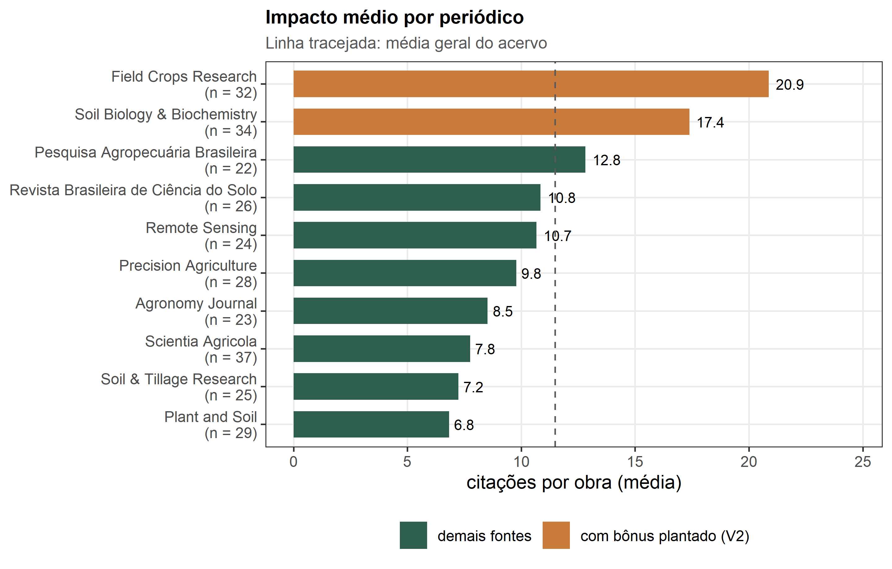
Figure 6: Periódicos ordenados por citação média por obra, com o número de obras anotado e as duas fontes do bônus plantado destacadas.
A figura ordena os veículos por citação média e anota o tamanho de cada um, o que permite ler as duas dimensões ao mesmo tempo. As duas barras coloridas são as fontes do bônus plantado, e a distância entre elas e o resto do grupo é o efeito do acréscimo constante. A linha tracejada marca a média geral do acervo, 11.48: 3 dos 10 veículos ficam acima dela, e o último fica em 6.83 citações por obra. O número de obras anotado mostra que volume e média não caminham juntos — o veículo com mais obras do acervo tem 37 delas e média de 7.76 —, e essa dissociação é o argumento que sustenta a escolha da média por obra no lugar da contagem absoluta quando a pergunta é onde a área publica o que é mais citado. Cuidado com uma leitura indevida: diferença de média entre periódicos não é evidência de que o periódico causa citação, porque autores melhores escolhem periódicos melhores, e os dois efeitos não se separam sem dados de qualidade do manuscrito.
7.5 Coautoria internacional e impacto
# as quatro assinaturas estrangeiras plantadas no corpus simuladom3_int<-c("Smith J", "Chen L", "Müller H", "Rossi G")m3_nome<-setNames(x_analise$authors$display_name, x_analise$authors$author_id)m3_aut<-x_analise$authorshipsm3_aut$nome<-unname(m3_nome[m3_aut$author_id])# uma obra tem coautoria internacional quando ao menos um desses autores assinam3_por_obra<-split(m3_aut$nome, m3_aut$work_id)m3_ids_int<-names(m3_por_obra)[vapply(m3_por_obra,function(z)any(z%in%m3_int), logical(1))]m3_w$internacional<-ifelse(m3_w$work_id%in%m3_ids_int,"com coautoria internacional", "sem coautoria internacional")m3_w$internacional<-factor(m3_w$internacional, levels =c("com coautoria internacional", "sem coautoria internacional"))m3_grupos<-do.call(data.frame, aggregate(cited_by_count~internacional, data =m3_w, FUN =function(z)c(n =length(z), media =mean(z), mediana =median(z), dp =sd(z))))names(m3_grupos)<-c("grupo", "obras", "media", "mediana", "dp")m3_grupos$percentual<-round(100*m3_grupos$obras/sum(m3_grupos$obras), 1)m3_teste<-suppressWarnings(wilcox.test(cited_by_count~internacional, data =m3_w))m3_ttest<-t.test(cited_by_count~internacional, data =m3_w)knitr::kable(data.frame(grupo =m3_grupos$grupo, obras =m3_num(m3_grupos$obras), media =m3_num(m3_grupos$media), mediana =m3_num(m3_grupos$mediana), dp =m3_num(m3_grupos$dp), percentual =m3_num(m3_grupos$percentual, 1)), row.names =FALSE, col.names =c("grupo", "obras", "citações médias", "mediana","desvio-padrão", "percentual do acervo"), caption ="Citações por obra em obras com e sem coautoria internacional, com proporção, medidas de posição e teste de Wilcoxon.")
Table 14: Citações por obra em obras com e sem coautoria internacional, com proporção, medidas de posição e teste de Wilcoxon.
Citações por obra em obras com e sem coautoria internacional, com proporção, medidas de posição e teste de Wilcoxon.
grupo
obras
citações médias
mediana
desvio-padrão
percentual do acervo
com coautoria internacional
144
12.40
10
12.29
51.4
sem coautoria internacional
136
10.51
7.50
10.96
48.6
A verdade plantada V3 é sobre a proporção, e a proporção medida é 51.4 por cento das obras com pelo menos uma assinatura estrangeira — 144 de 280 registros, perto da metade prevista, mas não exatamente metade, o que é a razão de medir em vez de afirmar. O efeito no impacto existe na direção esperada: as obras com coautoria internacional somam 12.40 citações em média contra 10.51 das demais, uma razão de 1.18. O teste de Wilcoxon devolve p igual a 0.158 e o teste t de Welch 0.177, e os dois concordam: com este tamanho de acervo, uma diferença dessa ordem é compatível com flutuação amostral. A leitura correta para o artigo é que a coautoria internacional está associada a citações ligeiramente maiores, mas o acervo não separa essa diferença do ruído, e transformar o número em afirmação de causalidade seria sobre-interpretação. O mesmo cuidado vale para a atribuição do grupo: como a tabela de vínculos carrega apenas o identificador da obra, os registros que compartilham identificador herdam o mesmo conjunto de autores, e 8 registros ficam com atribuição ambígua de coautoria — mais uma razão para declarar chave única na importação.
7.6 A distribuição das citações
m3_dist<-data.frame(citacoes =m3_w$cited_by_count)m3_ref<-data.frame(x =c(mean(m3_w$cited_by_count), median(m3_w$cited_by_count)), medida =c("média", "mediana"))ggplot(m3_dist, aes(x =citacoes))+geom_histogram(bins =30, fill =pal_agri[1], colour ="white", linewidth =.2)+geom_vline(data =m3_ref, aes(xintercept =x, colour =medida, linetype =medida), linewidth =.8)+scale_colour_manual(values =c("média"=pal_agri[2], "mediana"=pal_agri[3]), name =NULL)+scale_linetype_manual(values =c("média"="dashed", "mediana"="dotted"), name =NULL)+scale_x_continuous(breaks =seq(-10, 90, 10))+labs(x ="citações por obra", y ="número de obras", title ="Como as citações se distribuem no acervo", subtitle ="Assimetria à direita: a média fica à direita da mediana")
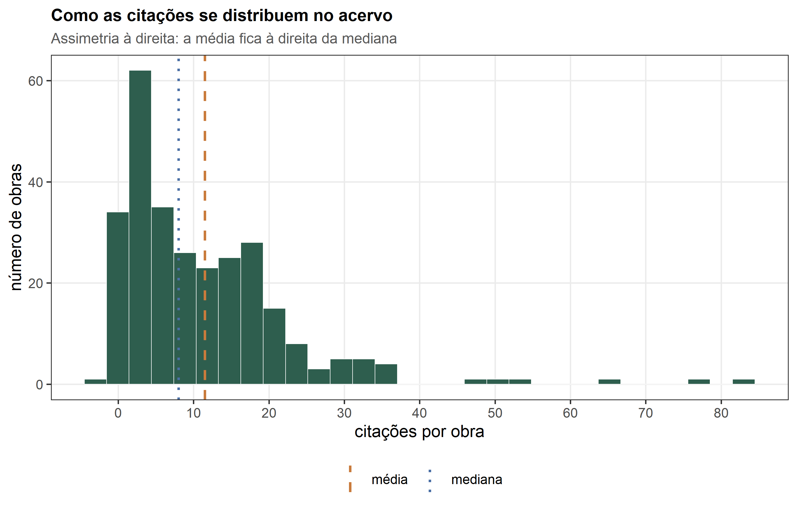
Figure 7: Distribuição das citações por obra no acervo analítico, com média e mediana marcadas.
A figura é o argumento visual para não resumir o acervo pela média. A massa concentra-se entre zero e vinte citações, com a mediana em 8 e a média em 11.48, e a cauda se estende até 83. Há ainda um ponto isolado à esquerda, a obra com contagem negativa, que aparece no primeiro intervalo — ele é um artefato de correção da base de dados, não um dado de impacto, e a decisão sobre mantê-lo está registrada no Módulo 2. A consequência prática é dupla: primeiro, qualquer comparação entre grupos feita por média precisa vir acompanhada de mediana, porque a média é sensível a poucas obras muito citadas e a mediana não; segundo, o formato da distribuição justifica o uso de teste não paramétrico nas comparações entre grupos, que foi o que a seção anterior fez ao reportar Wilcoxon ao lado do teste t. Vale notar que as 10 obras sem nenhuma citação não são um defeito de dados: em um recorte que inclui os anos recentes, ausência de citação é o resultado esperado para parte do acervo.
7.7 Impacto relativo ao ano e ao periódico
m3_ncy<-normalized_citations(x_analise, strata ="year")m3_ncf<-normalized_citations(x_analise, strata =c("year", "source"))# rótulo curto: tema de pesquisa e número do estudo, para identificar os extremosm3_curto<-function(t)paste0(sub("^([^ ]+).*", "\\1", t), " ",sprintf("%03d", as.integer(sub(".*estudo ([0-9]+).*", "\\1", t))))m3_curto_w<-m3_curto(m3_w$title)m3_nc<-rbind(data.frame(estrato ="estrato: ano", m3_ncy, curto =m3_curto_w, fonte =m3_w$source),data.frame(estrato ="estrato: ano + fonte", m3_ncf, curto =m3_curto_w, fonte =m3_w$source))m3_nc$estrato<-factor(m3_nc$estrato, levels =c("estrato: ano", "estrato: ano + fonte"))m3_nc$extremo<-!is.na(m3_nc$normalized)&m3_nc$normalized>2# os dois extremos de cada estrato recebem rótulo para leitura diretam3_rot<-do.call(rbind, lapply(split(m3_nc, m3_nc$estrato), function(d)head(d[order(-d$normalized), c("estrato", "expected", "citations", "curto")], 2)))m3_limite<-max(m3_nc$citations)# resumo numérico por estrato, usado na leitura abaixom3_por_estrato<-do.call(rbind, lapply(split(m3_nc, m3_nc$estrato), function(d)data.frame(estrato =d$estrato[1], correlacao =round(cor(d$citations, d$expected), 3), mediana =round(median(d$normalized, na.rm =TRUE), 3), iqr =round(IQR(d$normalized, na.rm =TRUE), 3), acima_de_2 =sum(d$normalized>2, na.rm =TRUE))))# média do normalizado por grupo de fonte, para mostrar onde o prestígio se escondem3_nc$grupo_fonte<-ifelse(m3_nc$fonte%in%m3_bonus, "fontes com bônus", "demais fontes")m3_grupo_estrato<-do.call(rbind, lapply(split(m3_nc, m3_nc$estrato), function(d)data.frame(estrato =d$estrato[1], bonus =round(mean(d$normalized[d$grupo_fonte=="fontes com bônus"], na.rm =TRUE), 2), demais =round(mean(d$normalized[d$grupo_fonte=="demais fontes"], na.rm =TRUE), 2))))ggplot(m3_nc, aes(x =expected, y =citations))+geom_point(aes(colour =extremo), alpha =.65, size =1.5)+geom_abline(slope =1, intercept =0, linetype =2, colour ="grey25")+geom_text(data =m3_rot, aes(label =curto), size =2.6, nudge_x =2.5, hjust =0, colour =pal_agri[6])+facet_wrap(~estrato, ncol =2)+coord_fixed(ratio =1, xlim =c(-5, m3_limite), ylim =c(-5, m3_limite))+scale_colour_manual(values =c(`TRUE` =pal_agri[2], `FALSE` =pal_agri[1]), labels =c(`TRUE` ="acima de 2× o esperado", `FALSE` ="até 2× o esperado"), name =NULL)+labs(x ="citações esperadas no estrato", y ="citações observadas", title ="Observado contra esperado sob dois estratos", subtitle ="Linha tracejada: identidade. Eixos com a mesma escala nos dois painéis")
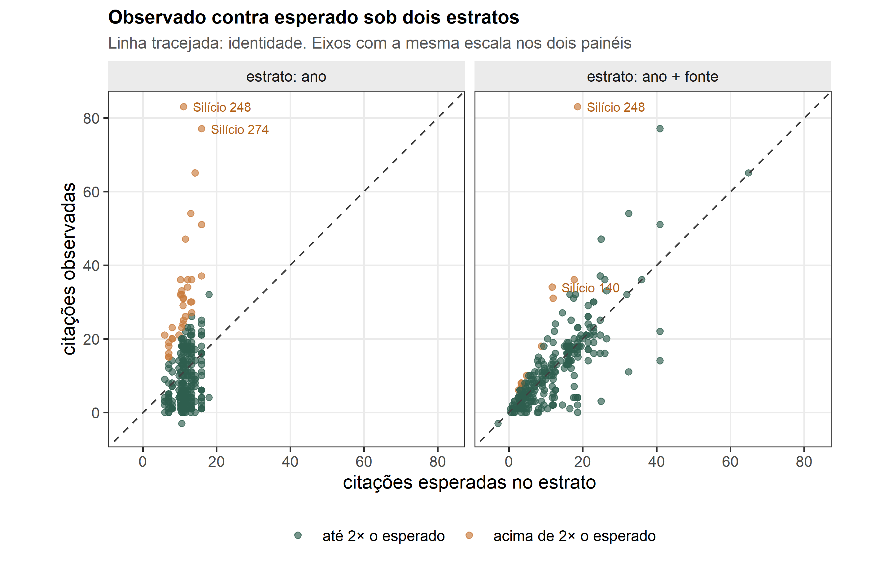
Figure 8: Citações observadas contra citações esperadas sob dois estratos: apenas o ano de publicação e o par ano e periódico. A linha tracejada é a identidade, e os eixos usam a mesma escala nos dois painéis.
A figura é a comparação central do módulo, e cada painel conta uma história diferente. Os dois eixos usam a mesma escala, de modo que a linha tracejada é realmente a diagonal e um ponto acima dela está acima do esperado, sem ilusão de inclinação. No painel da esquerda, o esperado é a média de citações do ano de publicação, e a nuvem de pontos afasta-se da linha de identidade de forma sistemática: a correlação entre observado e esperado é de apenas 0.214, e a mediana da razão fica em 0.73. O motivo é que o prestígio do periódico permaneceu no resíduo. A prova está na comparação entre grupos de fonte da seção anterior: sob o estrato do ano, as obras das duas fontes com bônus têm razão média de 1.68 contra 0.79 das demais, uma diferença de mais de duas vezes que nada tem a ver com a idade da obra. No painel da direita, o esperado passa a ser a média do par ano e periódico: as médias de razão dos dois grupos de fonte convergem para 1 e 1, ou seja, o bônus do veículo deixa de aparecer no resíduo; a nuvem encosta na diagonal, a correlação sobe para 0.762 e as obras com razão acima de duas vezes o esperado caem de 34 para 10. A leitura é que normalizar por ano e fonte corrige os dois efeitos ao mesmo tempo — a idade e o prestígio do veículo — e que o que sobrevive ao ajuste é o que a obra tem de próprio. Os pontos destacados em laranja são os que superam duas vezes o esperado no seu estrato, e os rótulos nomeiam os dois maiores de cada painel: são eles que a tabela seguinte detalha.
O preço do ajuste duplo também aparece na figura e precisa ser dito. Com 280 obras distribuídas em 121 estratos de ano e fonte, muitos estratos ficam com poucas obras: 32 estratos têm uma única obra, e nesses casos a citação esperada passa a ser a citação da própria obra, o que força a razão a valer exatamente um. A dispersão encolhe — o intervalo interquartílico cai de 1.152 para 0.56 —, e a mediana da razão passa a 1 por construção, não por mérito do acervo. A consequência prática é escolher o estrato de acordo com o tamanho da amostra: em acervo de algumas centenas de obras, o par ano e fonte é defensável e informativo; em acervo pequeno, o estrato duplo devolve quase tudo igual a um e não discrimina nada. Muitos dos pontos sobre a linha de identidade não são obras medianas, são obras sozinhas no seu estrato.
m3_ncf$curto<-m3_curto_wm3_ncf$ano<-m3_w$yearm3_ncf$fonte<-m3_w$sourcem3_top_norm<-head(m3_ncf[order(-m3_ncf$normalized),c("curto", "ano", "fonte", "citations", "expected", "normalized")], 10)knitr::kable(data.frame(obra =m3_top_norm$curto, ano =m3_num(m3_top_norm$ano), periodico =m3_top_norm$fonte, observadas =m3_num(m3_top_norm$citations), esperadas =m3_num(m3_top_norm$expected), razao =m3_num(m3_top_norm$normalized)), row.names =FALSE, col.names =c("obra", "ano", "periódico", "citações observadas","citações esperadas", "razão"), caption ="Dez obras com maior citação normalizada no estrato de ano e periódico, com o esperado do estrato e a fonte de publicação.")
Table 15: Dez obras com maior citação normalizada no estrato de ano e periódico, com o esperado do estrato e a fonte de publicação.
Dez obras com maior citação normalizada no estrato de ano e periódico, com o esperado do estrato e a fonte de publicação.
obra
ano
periódico
citações observadas
citações esperadas
razão
Silício 248
2022
Precision Agriculture
83
18.60
4.46
Silício 140
2021
Agronomy Journal
34
11.75
2.89
Sensoriamento 082
2022
Scientia Agricola
31
12
2.58
Sensoriamento 241
2019
Precision Agriculture
8
3.33
2.40
Silício 181
2021
Scientia Agricola
6
2.60
2.31
Sensoriamento 112
2017
Precision Agriculture
8
3.50
2.29
Silício 037
2025
Plant and Soil
10
4.75
2.11
Silício 113
2022
Plant and Soil
7
3.33
2.10
Sensoriamento 086
2023
Soil & Tillage Research
18
8.80
2.05
Carbono 124
2023
Remote Sensing
36
17.67
2.04
A tabela traduz o painel da direita em nomes, e é ela que entra no artigo. O rótulo de cada obra combina o primeiro termo do tema com o número do estudo, para que a tabela caiba na página sem perder a identificação. A primeira colocada é Silício 248, de 2022, publicada em Precision Agriculture: com 83 citações contra 18.60 esperadas para o seu estrato de ano e veículo, ela recebeu 4.46 vezes o esperado. O que chama atenção na lista é a procedência: nenhuma das obras do topo pertence às duas fontes com bônus plantado, e várias vêm de periódicos de média modesta, o que é exatamente o comportamento esperado de uma medida relativa — ela premia quem supera os pares do próprio estrato, não quem publicou no veículo de maior prestígio. A última colocada da lista tem razão 2.04, o que dá a ordem de grandeza do que conta como destaque neste acervo. A leitura para o artigo é que a razão normalizada responde a uma pergunta diferente da citação bruta: a citação bruta mede reconhecimento acumulado, a razão mede desempenho relativo às condições de publicação, e as duas devem ser reportadas juntas quando o acervo cobre quinze anos de produção.
7.8 Tarefas do Módulo 3
Tarefa 3.1 (aplicar). Refaça o retrato descritivo e o painel de impacto sobre o recorte de 2020 a 2025, usando o vetor per_B para selecionar as obras (lembre que o recorte precisa valer também para as tabelas de autoria e de palavras-chave). Rode describe_biblio(), biblio_metrics() e a tabela de fontes por citação média, e compare com o acervo completo: quantas obras entram, como muda a média de citações por obra, quais fontes lideram por citação média, e o que acontece com o topo do ranking de autores quando o período é restringido.
Tarefa 3.2 (analisar e criar). Escreva uma função impacto_relativo(x, strata, fun) que devolva, para cada obra, a razão entre as citações observadas e uma medida de referência calculada dentro do estrato indicado, aceitando fun = mean ou fun = median. Verifique que a versão com média reproduz exatamente normalized_citations() com os mesmos estratos, rode as duas versões sobre x_analise e discuta: quantas obras ultrapassam duas vezes a referência em cada caso, o que muda no topo da lista e qual das duas medidas você adotaria em um acervo com muitos estratos de duas obras, justificando a escolha em termos da variabilidade que cada uma introduz.
8 Módulo 4. Dinâmica temporal e disrupção
8.1 O problema agronômico
Quem trabalha com fertilidade do solo e estresse abiótico enfrenta hoje uma pergunta de política científica antes de qualquer pergunta de campo: a frente de pesquisa sobre silício e salinidade está crescendo, estagnada ou apenas diversificando o vocabulário? A resposta muda o que se recomenda a um orientando. Se a frente cresce em volume, há espaço para uma tese experimental; se o que cresce é apenas o número de revisões sobre o mesmo corpo de evidências, o espaço está na síntese, não no experimento. Separar produção de consolidação é exatamente o que as cinco funções deste módulo fazem.
O segundo problema é de composição. Um acervo pode dobrar de tamanho e continuar dizendo a mesma coisa, ou pode manter o tamanho e mudar de assunto. No material que usamos aqui, a frente agronômica de silício e salinidade convive com duas vizinhas: carbono do solo com plantas de cobertura e sensoriamento remoto com aprendizado de máquina. A pergunta prática do doutorando é onde a novidade se concentra, porque é ali que a revisão de literatura precisa ser mais recente.
O terceiro problema é o mais delicado e o menos ensinado. Quando um artigo propõe um mecanismo novo, ele é disruptivo: os trabalhos seguintes discutem a proposta dele sem se apoiarem no que ele citou. Quando um artigo apenas organiza o que já se sabia, ele é consolidativo: quem o cita cita também as mesmas referências anteriores. As duas situações produzem contagens de citação parecidas, e a contagem de citação sozinha não as distingue. O módulo termina com o índice que faz essa separação a partir da própria rede de citações, e com a demonstração de como uma tabela de arestas mal nomeada é recusada pelo pacote.
8.2 Crescimento anual da produção
O primeiro recorte é o mais simples e o que mais aparece em artigo: quantos documentos por ano e quantas citações esses documentos acumularam. A função temporal_growth() faz a agregação por ano e acrescenta a taxa de crescimento percentual em relação ao ano imediatamente anterior. Como não existe ano anterior ao primeiro, a taxa do primeiro ano é ausente por construção, e não por defeito do dado.
# 4.1 Agregação anual: documentos, citações e variação percentualcresc<-temporal_growth(x_analise)# 4.2 Primeiras e últimas linhas: início do crescimento e anos recentes# a linha de NA separa os dois blocos e marca a taxa ausente do primeiro anocresc_faixas<-rbind(head(cresc, 3L),data.frame(year =NA_integer_, documents =NA_integer_, citations =NA_integer_, growth_pct =NA_real_),tail(cresc, 3L))knitr::kable(cresc_faixas, row.names =FALSE, digits =1, caption ="Crescimento anual do acervo analítico: taxa percentual em relação ao ano anterior e citações acumuladas por coorte. A linha de ausentes separa o início da série do fim, e a taxa do primeiro ano é ausente porque não existe ano anterior.")
Table 16: Crescimento anual do acervo analítico: taxa percentual em relação ao ano anterior e citações acumuladas por coorte.
Crescimento anual do acervo analítico: taxa percentual em relação ao ano anterior e citações acumuladas por coorte. A linha de ausentes separa o início da série do fim, e a taxa do primeiro ano é ausente porque não existe ano anterior.
year
documents
citations
growth_pct
2010
4
53
NA
2011
2
36
-50.0
2012
7
42
250.0
NA
NA
NA
NA
2023
24
319
-31.4
2024
27
432
12.5
2025
26
276
-3.7
Aqui está a primeira assinatura temporal do acervo. O período cobre 16 anos, de 2010 a 2025, e o primeiro deles tem 4 obras: um começo magro, o que é típico de recorte por janela temporal em base bibliográfica. A taxa média de crescimento de 2011 a 2025 é de 25.6 por cento ao ano, mas essa média esconde o que interessa, porque ela mistura duas fases. A taxa média entre 2011 e 2019 é de 39.3 por cento ao ano, enquanto de 2020 a 2025 ela cai para 5.2 por cento ao ano.
A leitura ingênua dessa queda seria “a frente está morrendo”. A leitura correta vem da comparação entre as duas colunas. A coorte de 2020 a 2025 reúne 161 obras, contra 119 obras na década anterior; o ano de maior produção do acervo é 2022, com 35 obras. O que desacelerou foi a taxa, não o volume: com o acervo já grande, cada ano novo precisa acrescentar um número absoluto maior para manter a mesma taxa percentual. Além disso, as citações por obra sobem de 10.2 na década anterior para 12.43 no período recente. Volume maior com impacto por obra maior não é cenário de declínio; é cenário de frente madura que continua atraindo atenção.
# 4.3 Taxa de crescimento com destaque do período recented_g<-cresc[!is.na(cresc$growth_pct)&cresc$year>=min(cresc$year)+1L, ]d_g$fase<-ifelse(d_g$year>=2020L, "2020-2025", "2011-2019")d_g$rotulo<-paste0(sprintf("%.0f", d_g$growth_pct), "%")p_g<-ggplot(d_g, aes(x =year, y =growth_pct, fill =fase))+geom_col(width =.72, colour ="white", linewidth =.2)+geom_hline(yintercept =0, colour ="grey40", linewidth =.3)+geom_text(aes(label =rotulo), vjust =ifelse(d_g$growth_pct>=0, -.45, 1.15), size =2.3, colour ="grey25")+scale_fill_manual(values =c("2011-2019"=pal_agri[2], "2020-2025"=pal_agri[1]))+scale_x_continuous(breaks =sort(unique(d_g$year)))+labs(x =NULL, y ="crescimento (%)", fill =NULL, title ="Crescimento anual da produção", subtitle ="barras coloridas: período de 2020 em diante")# 4.4 Citações por obra em cada período, calculadas a partir da mesma tabelad_p<-data.frame( periodo =c("2010-2019", "2020-2025"), obras =c(sum(cresc$documents[cresc$year<2020L]),sum(cresc$documents[cresc$year>=2020L])), citacoes =c(sum(cresc$citations[cresc$year<2020L]),sum(cresc$citations[cresc$year>=2020L])))d_p$por_obra<-d_p$citacoes/d_p$obrasp_p<-ggplot(d_p, aes(x =periodo, y =por_obra, fill =periodo))+geom_col(width =.55, colour ="white")+geom_text(aes(label =sprintf("%.1f", por_obra)), vjust =-.5, size =3.1, colour ="grey25")+scale_y_continuous(expand =expansion(mult =c(0, .22)))+scale_fill_manual(values =c("2010-2019"=pal_agri[3], "2020-2025"=pal_agri[1]), guide ="none")+labs(x =NULL, y ="citações por obra", title ="Impacto médio por coorte temporal")gridExtra::grid.arrange(p_g, p_p, ncol =1, heights =c(2.2, 1))
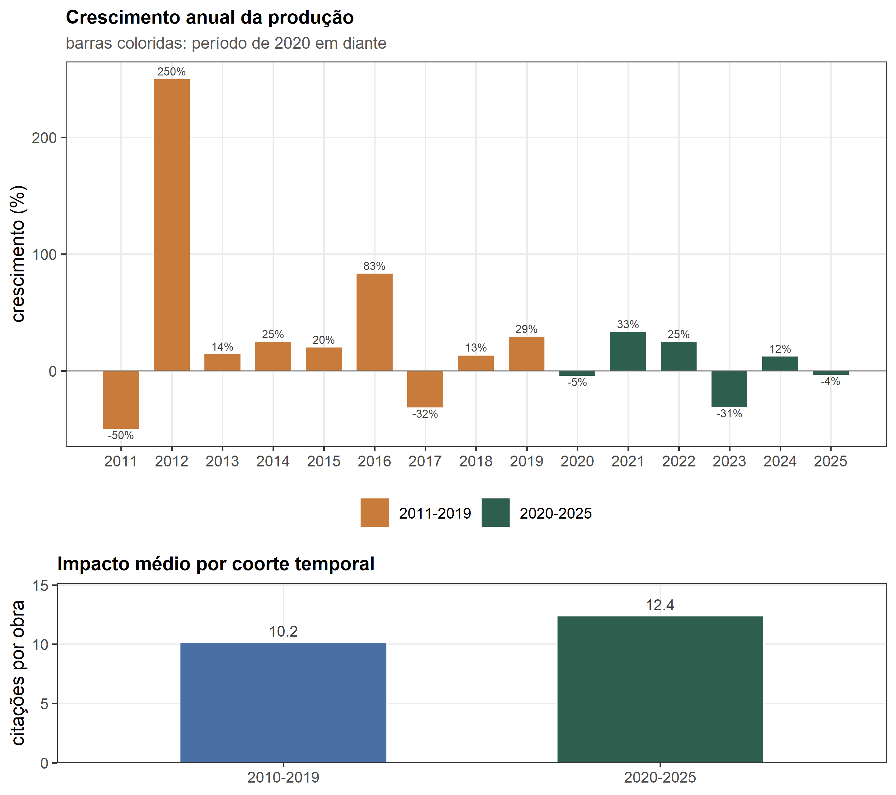
Figure 9: Taxa de crescimento anual da produção do acervo analítico. O painel superior isola o crescimento percentual dos anos recentes; o inferior mostra as citações por obra de cada período.
A Figura mostra duas coisas que juntas desfazem a leitura de declínio. No painel superior, as barras de 2020 a 2025 são menores que as do início da série, mas continuam majoritariamente positivas: o acervo segue crescendo, apenas mais devagar. No painel inferior, cada obra do período recente acumula 2.23 citações a mais que uma obra da década anterior. Uma frente que desacelera em taxa e ganha em impacto por obra está mudando de natureza, e a próxima seção mostra onde essa mudança se concentra.
8.3 Velocidade de citação e o efeito da idade
Citações acumuladas não são comparáveis entre obras de idades diferentes. Uma obra de 2010 teve 17 anos para acumular; uma de 2025 teve 2. A função citation_velocity() normaliza esse acúmulo pela idade da obra, contada a partir do ano corrente, e citation_trajectory() acrescenta essa idade e o título à mesma tabela.
# 4.5 Velocidade normalizada pela idade e trajetória com idade e títulovel<-citation_velocity(x_analise)traj<-citation_trajectory(x_analise)# 4.6 As cinco obras mais rápidas, com o total acumulado ao ladovel_top<-head(traj[order(-traj$velocity), ], 5L)cit_top<-head(traj[order(-traj$citations), ], 5L)n_vel_no_top_cit<-sum(vel_top$work_id%in%cit_top$work_id)# coincidência entre rankingsknitr::kable(vel_top[, c("title", "year", "age", "citations", "velocity")], row.names =FALSE, digits =2, caption ="Obras com maior velocidade de citação, com idade contada a partir do ano corrente e total acumulado.")
Table 17: Obras com maior velocidade de citação, com idade contada a partir do ano corrente e total acumulado.
Obras com maior velocidade de citação, com idade contada a partir do ano corrente e total acumulado.
title
year
age
citations
velocity
Silício e tolerância a estresse abiótico em trigo (estudo 274)
2024
3
77
25.67
Silício e tolerância a estresse abiótico em trigo (estudo 098)
2024
3
51
17.00
Silício e tolerância a estresse abiótico em pastagem (estudo 248)
2022
5
83
16.60
Carbono do solo e plantas de cobertura em trigo (estudo 176)
2025
2
33
16.50
Sensoriamento remoto e fenotipagem de culturas em trigo (estudo 247)
2025
2
32
16.00
A Tabela é o argumento a favor da normalização. As obras do topo têm 2, 3, 5 anos de idade, contra uma idade máxima de 17 anos no acervo. Se a seleção tivesse sido feita pela coluna de citações acumuladas, a lista seria praticamente outra: as duas listas de cinco obras coincidem em 3 posições, e as demais 2 posições do ranking por velocidade só aparecem quando o tempo de exposição entra no denominador. O que a velocidade mede é a intensidade de recepção por unidade de tempo, e ela responde a uma pergunta diferente daquela que a contagem bruta responde.
A correlação entre citações acumuladas e idade no acervo é de -0.09, praticamente nula. Esse é um resultado sobre o gerador de dados, e vale lê-lo pelo que ele significa: aqui o acúmulo de citações não foi simulado em função do tempo de exposição, de modo que idade e total não competem entre si. Em acervo real a correlação costuma ser positiva e forte, e por isso mesmo a velocidade continua sendo a métrica comparável, porque ela não depende do calendário da coleta.
# 4.7 Dispersão idade por velocidade com mediana e reta de referênciad_v<-trajd_v$acima<-ifelse(d_v$velocity>=median(d_v$velocity), "acima da mediana", "abaixo da mediana")idade_max<-max(d_v$age)g_vel<-ggplot(d_v, aes(x =age, y =velocity))+geom_hline(yintercept =median(d_v$velocity), linetype ="dashed", colour ="grey35", linewidth =.45)+stat_function(fun =function(a)mean(d_v$citations)/a, colour =pal_agri[2], linewidth =.7, linetype ="solid")+geom_jitter(aes(colour =acima), width =.22, height =0, alpha =.6, size =1.5)+scale_colour_manual(values =c("acima da mediana"=pal_agri[1],"abaixo da mediana"=pal_agri[3]), name =NULL)+scale_x_continuous(breaks =sort(unique(d_v$age)))+labs(x ="idade da obra (anos desde a publicação)", y ="velocidade (citações por ano)", title ="Velocidade de citação e efeito da idade", subtitle ="tracejada: mediana do acervo; cheia: citações médias divididas pela idade")sup_med<-sum(d_v$velocity>=median(d_v$velocity))g_vel
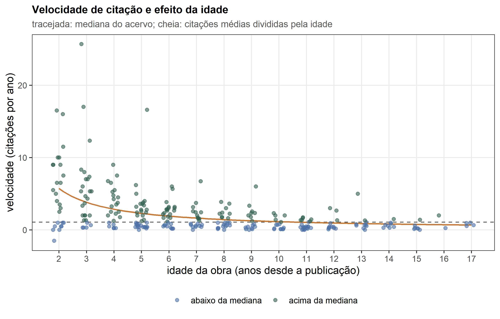
Figure 10: Velocidade de citação em função da idade da obra. A linha tracejada é a mediana do acervo e a linha cheia é a razão citações por idade.
A Figura tem três leituras. A primeira é que a mediana separa o acervo em 140 obras acima e 140 abaixo, e a fronteira é convencional: metade do acervo fica de cada lado por definição, e um artigo que destaque apenas a metade superior estará destacando metade da literatura. A segunda é que a velocidade cai com a idade, com coeficiente de correlação de -0.43, porque cada ano adicional no denominador reduz a razão enquanto as citações não acompanham. A terceira é a reta cheia, que é a velocidade esperada de uma obra com o número médio de citações do acervo: tudo o que fica acima dela recebeu mais do que o padrão da frente, e é essa a lista que serve para montar um estado da arte. O acervo sintético é generoso com obras recentes porque as citações foram sorteadas sem memória temporal; em acervo real, a cauda recente é sempre mais curta.
8.4 Mudança de composição temática
A produção que cresce em volume pode estar crescendo em qualquer direção. Para saber em qual, é preciso olhar o conteúdo e não só o número de documentos. A tabela de palavras-chave normalizadas do acervo permite contar menções por bloco temático e por período, e o resultado é a segunda assinatura temporal deste módulo.
# 4.8 Blocos temáticos derivados das palavras-chave normalizadaskw<-x_analise$keywordskw$ano<-x_analise$works$year[match(kw$work_id, x_analise$works$work_id)]kw$periodo<-ifelse(kw$ano>=2020L, "2020-2025", "2010-2019")blocos_tema<-list("Silicio"=c("silicon", "silicon fertilization", "salinity", "sorghum", "rice","nutrient uptake", "abiotic stress", "drought stress"),"Carbono"=c("soil carbon", "cover crops", "no-till", "soil organic matter","carbon sequestration", "soil aggregation", "crop rotation","green manure"),"Automacao"=c("machine learning", "deep learning", "uav", "hyperspectral","remote sensing", "yield prediction", "vegetation index","phenotyping"))kw$bloco<-NA_character_for(binnames(blocos_tema))kw$bloco[kw$keyword%in%blocos_tema[[b]]]<-bstopifnot(!any(is.na(kw$bloco)))# todo termo do acervo pertence a um bloco# 4.9 Menções por bloco em cada período, normalizadas pelo número de obrascont_bloco<-as.data.frame(table(kw$bloco, kw$periodo), stringsAsFactors =FALSE)names(cont_bloco)<-c("bloco", "periodo", "mencoes")obras_per<-table(kw$periodo[!duplicated(kw$work_id)])cont_bloco$obras<-as.integer(obras_per[cont_bloco$periodo])cont_bloco$por_obra<-cont_bloco$mencoes/cont_bloco$obrascomp<-reshape(cont_bloco[, c("bloco", "periodo", "por_obra")], idvar ="bloco", timevar ="periodo", direction ="wide")names(comp)<-c("bloco", "antes", "recente")comp$variacao<-100*(comp$recente/comp$antes-1)comp$antes<-round(comp$antes, 2); comp$recente<-round(comp$recente, 2)comp$variacao<-round(comp$variacao, 1)comp<-comp[order(-comp$variacao), ]knitr::kable(comp, row.names =FALSE, caption ="Composição temática do acervo por período: menções de palavras-chave por obra em cada bloco temático.")
Table 18: Composição temática do acervo por período: menções de palavras-chave por obra em cada bloco temático.
Composição temática do acervo por período: menções de palavras-chave por obra em cada bloco temático.
bloco
antes
recente
variacao
Automacao
0.72
1.36
90.1
Carbono
1.26
1.43
14.1
Silicio
2.08
1.94
-6.4
A Tabela é a evidência da verdade plantada V4 do acervo simulado. O bloco de automação passa de 0.72 para 1.36 menções por obra, uma variação de 90.1 por cento, enquanto os dois blocos agronômicos variam 14.1 e -6.4 por cento. Traduzindo: das 280 menções acrescentadas pelo período recente, 47.5 por cento vêm do bloco de automação. É por isso que a curva de produção do acervo cresce e, ao mesmo tempo, muda de assunto: o crescimento recente não é uma repetição ampliada do que já havia.
# 4.10 Composição temática por período, com o bloco ordenado pela variaçãocont_bloco$bloco<-factor(cont_bloco$bloco, levels =comp$bloco)cont_bloco$periodo<-factor(cont_bloco$periodo, levels =c("2010-2019", "2020-2025"))ggplot(cont_bloco, aes(x =periodo, y =por_obra, fill =periodo))+geom_col(width =.6, colour ="white")+geom_text(aes(label =sprintf("%.2f", por_obra)), vjust =-.45, size =2.9, colour ="grey25")+facet_wrap(~bloco, nrow =1)+scale_fill_manual(values =c("2010-2019"=pal_agri[3], "2020-2025"=pal_agri[1]), guide ="none")+labs(x =NULL, y ="menções por obra", title ="Mudança de composição temática", subtitle ="palavras-chave normalizadas, normalizadas pelo número de obras do período")
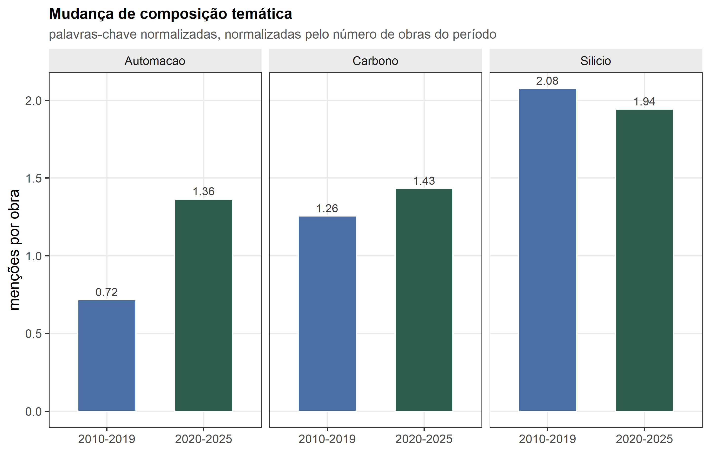
Figure 11: Menções de palavras-chave por obra em cada bloco temático, por período. A ordem dos blocos é a da variação entre os dois períodos.
A Figura mostra o contraste com clareza. Os três blocos crescem em menções absolutas, porque o período recente tem mais obras, mas apenas o de automação cresce na medida que importa, a que já desconta o tamanho do período. A leitura operacional para uma tese: se o seu objeto é silício e salinidade, a fronteira metodológica vizinha está em sensoriamento e aprendizado de máquina, e a revisão de literatura precisa cobrir esse vocabulário mesmo que o experimento seja de casa de vegetação. O stopifnot do bloco anterior não é decoração: ele garante que nenhum termo ficou fora da classificação, de modo que a coluna por_obra não esteja calculada sobre um conjunto incompleto.
8.5 RPYS: quais anos de referência fundam a frente
Até aqui contamos obras publicadas. O RPYS faz a pergunta invertida: olhando às referências citadas pelo acervo, quais anos aparecem com frequência desproporcional? Um pico nesse espectro é a assinatura de uma obra fundadora, porque dezenas de trabalhos independentes decidiram citar algo publicado naquele mesmo ano.
A primeira coisa a saber sobre a função é a forma do argumento. rpys() recebe um vetor de anos, não um projeto bibliométrico: ela não tem como ler as referências citadas de dentro do biblio_project, porque o objeto guarda as arestas de citação entre as obras do próprio acervo, e não a lista de referências de cada obra. Esses anos vêm do campo de referências citadas da exportação, e tanto Web of Science quanto Scopus e OpenAlex o fornecem. Este acervo simulado não traz esse campo, então a seção constrói um vetor declaradamente simulado.
# 4.11 Vetor SIMULADO de anos de referência: para cada obra, seis referências# sorteadas na janela de 45 anos anteriores, mais um ano seminal plantado.set.seed(SEED)ref_sim<-unlist(lapply(x_analise$works$year, function(a){sample(seq(max(1975L, a-45L), a+2L), 6L, replace =TRUE)}))ref_sim<-c(ref_sim, rep(1994L, 26L))# ano seminal plantado nesta simulaçãorp<-rpys(reference_years =ref_sim, window =2)pico<-rp[which.max(rp$deviation), ]rp$acima<-ifelse(rp$deviation>0, "acima da base", "na base ou abaixo")rp$acima[rp$year==pico$year]<-"pico"ggplot(rp, aes(x =year, y =n, colour =acima))+geom_segment(aes(xend =year, y =0, yend =n), linewidth =.45)+geom_point(size =1.7)+geom_line(aes(x =year, y =baseline), colour ="grey30", linetype ="dashed", linewidth =.55)+annotate("label", x =pico$year, y =pico$n, size =3, label =sprintf("%d: %d citações\n%d acima da base", pico$year,pico$n, pico$deviation))+scale_colour_manual(values =c("acima da base"=pal_agri[1],"na base ou abaixo"="grey65","pico"=pal_agri[2]), name =NULL)+scale_x_continuous(breaks =seq(min(rp$year), max(rp$year), by =5))+labs(x ="ano de referência", y ="número de referências citadas", title ="Espectro RPYS do vetor simulado", subtitle ="linha tracejada: linha de base móvel (mediana de cinco anos)")
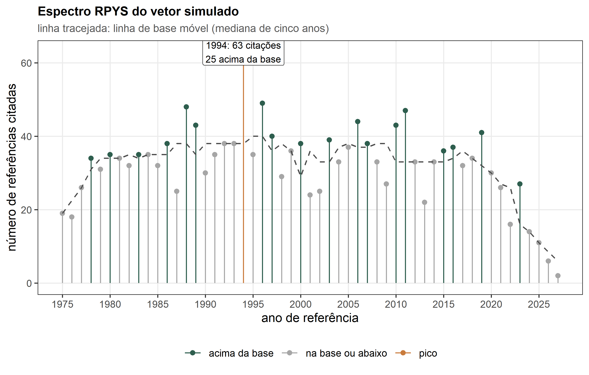
Figure 12: Espectro de anos de referência (RPYS) do vetor de citações simulado: contagem observada por ano, linha de base móvel e o ano de maior desvio positivo em destaque.
O espectro tem a forma esperada. A linha de base é uma mediana móvel de cinco anos e serve de piso local, não de média global: a função mede o desvio contra a vizinhança, e não contra o acervo inteiro. O ano de 1994 reúne 63 referências contra uma base de 38, um desvio de 25. Os anos seguintes em desvio são 2011 (desvio 14) e 2023 (desvio 11). O pico é o que foi plantado: 26 referências foram atribuídas ao ano 1994 de propósito, e a função o recupera sem que ninguém tenha dito a ela onde olhar. Esta é uma simulação declarada: o campo de referências citadas não existe no objeto, e um RPYS sobre dados reais exige o vetor extraído da exportação.
# 4.12 Anos de maior desvio positivo do espectrorp_top<-head(rp[order(-rp$deviation), c("year", "n", "baseline", "deviation")], 5L)knitr::kable(rp_top, row.names =FALSE, digits =1, caption ="Anos de maior desvio positivo do espectro RPYS: contagem observada, linha de base móvel e desvio.")
Table 19: Anos de maior desvio positivo do espectro RPYS: contagem observada, linha de base móvel e desvio.
Anos de maior desvio positivo do espectro RPYS: contagem observada, linha de base móvel e desvio.
year
n
baseline
deviation
1994
63
38
25
2011
47
33
14
2023
27
16
11
1988
48
38
10
2010
43
33
10
Duas armadilhas acompanham esse resultado. A primeira é confundir pico de referência com pico de publicação. O espectro não conta quantos artigos foram publicados em 1994; conta quantas referências do acervo apontam para algo publicado naquele ano. Um ano de intensa produção científica produz muitos candidatos, mas só gera pico de RPYS se as obras daquele ano continuarem sendo citadas por este acervo específico, o que depende da frente e não do calendário. Para deixar a distinção concreta: temporal_growth() conta 10 obras publicadas em 2014 neste acervo, e isso nada diz sobre quantas referências do acervo apontam para 2014; são duas contagens sobre objetos diferentes.
A segunda armadilha é o valor de window. Ele controla a largura da mediana móvel e, portanto, quão local é a comparação. Testar valores diferentes é parte da análise, e o resultado aqui é informativo: com window de 1, 2, 3, 5 o topo do espectro continua sendo 1994, com o mesmo desvio de 25. Um pico que sobrevive à mudança da largura da janela é um achado robusto; um pico que aparece só numa largura é artefato da suavização. Vale rodar sempre mais de um valor antes de eleger o ano fundador de uma frente.
8.6 Disrupção: separar inovação de consolidação
A última função do módulo troca a pergunta de novo. Em vez de “quantas vezes este trabalho foi citado”, ela pergunta “quem o citou deixou de citar o que ele citava?”. A resposta vem de uma decomposição em três contagens a partir de uma tabela de arestas de citação.
O pacote exige que a tabela tenha exatamente as colunas citing_id e cited_id, e para com mensagem clara quando elas não existem. Isso é validação de entrada, e vale ver funcionando, porque é o tipo de erro que consome uma tarde de quem trabalha com exportação de base: cada base nomeia as colunas de citação de um jeito, e o nome errado não produz número errado, produz parada.
# 4.13 Exemplo numérico controlado: F é o focal, R1 e R2 são suas referênciasarestas<-data.frame( citing_id =c("C1", "C2", "C3", "C4", "C5", "C6", "C7"), cited_id =c("F", "F", "F", "R1", "R1", "R2", "F"), stringsAsFactors =FALSE)di_focal<-disruption_index("F", arestas, c("R1", "R2"))# 4 citantes de Fdi_cons<-disruption_index(# C4 também cita F"F", rbind(arestas, data.frame(citing_id ="C4", cited_id ="F")), c("R1", "R2"))di_ausente<-disruption_index("ZZZ", arestas, c("R1", "R2"))# focal inexistentedi_semref<-disruption_index("F", arestas, character(0))# sem referênciasdi_tab<-rbind(cbind(cenario ="4 citantes, nenhum consolidador", di_focal),cbind(cenario ="C4 passa a citar também as referências", di_cons),cbind(cenario ="focal sem nenhum citante no acervo", di_ausente),cbind(cenario ="focal sem referências declaradas", di_semref))knitr::kable(di_tab[, c("cenario", "focal_id", "N_i", "N_j", "N_k", "disruption")], row.names =FALSE, digits =2, caption ="Exemplo numérico do índice de disrupção em quatro cenários de arestas de citação, com a decomposição em N_i, N_j e N_k.")
Table 20: Exemplo numérico do índice de disrupção em quatro cenários de arestas de citação, com a decomposição em N_i, N_j e N_k.
Exemplo numérico do índice de disrupção em quatro cenários de arestas de citação, com a decomposição em N_i, N_j e N_k.
cenario
focal_id
N_i
N_j
N_k
disruption
4 citantes, nenhum consolidador
F
4
0
3
0.57
C4 passa a citar também as referências
F
4
1
2
0.43
focal sem nenhum citante no acervo
ZZZ
0
0
3
0.00
focal sem referências declaradas
F
4
0
0
1.00
A validação de entrada funciona como prometido, e vale conferir com os próprios olhos, porque uma função que devolvesse NA em silêncio produziria uma tabela de aparência normal com um número inventado. O bloco seguinte repete a chamada com uma tabela de arestas nomeada como o export_biblio() a exporta, com from e to, e captura a mensagem com tryCatch().
# 4.14 O mesmo cálculo com uma tabela de arestas mal nomeadaarestas_erradas<-data.frame(from =c("C1", "C2"), to =c("F", "R1"), stringsAsFactors =FALSE)msg_colunas<-tryCatch(disruption_index("F", arestas_erradas, c("R1", "R2")), error =function(e)conditionMessage(e))msg_colunas_limpa<-sub("[.]$", "", msg_colunas)# a mensagem já traz ponto finalknitr::kable(data.frame(entrada ="data.frame(from, to)", colunas_esperadas ="citing_id, cited_id", resposta_do_pacote =msg_colunas), row.names =FALSE, caption ="Mensagem devolvida pelo pacote quando a tabela de arestas não tem as colunas citing_id e cited_id.")
Table 21: Mensagem devolvida pelo pacote quando a tabela de arestas não tem as colunas citing_id e cited_id.
Mensagem devolvida pelo pacote quando a tabela de arestas não tem as colunas citing_id e cited_id.
entrada
colunas_esperadas
resposta_do_pacote
data.frame(from, to)
citing_id, cited_id
citation_edges must have columns ‘citing_id’ and ‘cited_id’.
A mensagem devolvida é citation_edges must have columns ‘citing_id’ and ‘cited_id’. Ela é útil por três motivos: diz qual argumento está errado, diz quais colunas eram esperadas e não sugere que o problema esteja nos dados. Compare com o comportamento de uma função que apenas devolvesse zero: o zero entraria no seu ranking de disrupção como uma obra perfeitamente consolidada. Renomeie as colunas da sua exportação antes da análise, e não depois de olhar o resultado.
A fórmula é (N_i - N_j) / (N_i + N_j + N_k), e cada contagem tem um significado preciso. N_i são os citantes que não citam nenhuma referência do focal: frente citante que ignorou o passado que o focal invocou, ou seja, disrupção. N_j são os citantes que citam o focal e as referências dele: seguiram a trilha inteira, ou seja, consolidação. N_k são os citantes que citam as referências do focal mas não citam o focal: trabalham o mesmo passado sem passar por ele. O índice vai de -1 a 1, e o zero é o ponto de equilíbrio.
O cenário 1 deixa isso visível: N_i de 4, N_j de 0 e N_k de 3 dão índice 0.57. No cenário 2, basta que C4 passe a citar também R1 para N_j subir de 0 para 1 e N_k cair de 3 para 2, derrubando o índice para 0.43. Nada mudou no focal nem no número de citantes; mudou a composição do comportamento citante, que é exatamente o que o índice pretende medir.
Os dois últimos cenários são avisos de leitura. Um identificador que não existe no acervo devolve N_i igual a 0 e índice 0, e esse zero não significa equilíbrio: significa ausência de dado, e um zero por ausência entra em média e em ranking como se fosse medição. Declarar as referências do focal é o que separa disrupção de consolidação, e quando a lista vem vazia o índice devolve 1, o valor máximo, porque toda citação sem trilha declarada é contada como rompimento. Antes de publicar qualquer índice de disrupção, confira quantas obras do acervo têm referências declaradas.
# 4.15 Perfil de citação das referências declaradas do acervorefs_x<-x_analise$referencesobras_com_ref<-length(unique(refs_x$citing_id))txt_pares<-sprintf("%d par%s obra-referência", nrow(refs_x),if(nrow(refs_x)==1L)""else"es")resumo_ref<-data.frame( item =c("obras no acervo", "obras com referências declaradas","pares obra-referência declarados"), valor =c(nrow(x_analise$works), obras_com_ref, nrow(refs_x)))knitr::kable(resumo_ref, row.names =FALSE, caption ="Cobertura das referências declaradas no acervo analítico, condição necessária para interpretar o índice de disrupção.")
Table 22: Cobertura das referências declaradas no acervo analítico, condição necessária para interpretar o índice de disrupção.
Cobertura das referências declaradas no acervo analítico, condição necessária para interpretar o índice de disrupção.
item
valor
obras no acervo
280
obras com referências declaradas
0
pares obra-referência declarados
0
A Tabela fecha a condição de uso do índice. Das 280 obras do acervo, 0 têm referências declaradas, e a tabela de citações reúne 0 pares obra-referência. Sem essa cobertura, o índice de disrupção não é calculável para o acervo inteiro, e qualquer média publicada seria calculada sobre um subconjunto não declarado. É por isso que a função exige as referências do focal como argumento explícito, em vez de tentar adivinhá-las: ela prefere devolver um resultado que você pode auditar a devolver um número que ninguém sabe de onde veio.
# 4.16 Decomposição dos dois cenários com focal presente, em barras empilhadasd_di<-data.frame( cenario =factor(rep(c("antes: 4 citantes", "depois: C4 também cita as refs"), each =3L), levels =c("antes: 4 citantes", "depois: C4 também cita as refs")), grupo =rep(c("N_i rompem", "N_j consolidam", "N_k citam só o passado"), 2L), n =c(di_focal$N_i, di_focal$N_j, di_focal$N_k,di_cons$N_i, di_cons$N_j, di_cons$N_k), indice =rep(c(di_focal$disruption, di_cons$disruption), each =3L), total =rep(c(di_focal$N_i+di_focal$N_j+di_focal$N_k,di_cons$N_i+di_cons$N_j+di_cons$N_k), each =3L))ggplot(d_di, aes(x =cenario, y =n, fill =grupo))+geom_col(width =.55, colour ="white")+# rótulo só nas fatias com altura suficiente para receber textogeom_text(aes(label =ifelse(n>=1L, n, "")), position =position_stack(vjust =.5), size =3, colour ="white")+# o total e o índice de cada cenário, acima da barrageom_text(data =d_di[!duplicated(d_di$cenario), ],aes(x =cenario, y =total+.55, label =paste0("total = ", total, " | índice = ",sprintf("%.2f", indice))), inherit.aes =FALSE, size =3.1)+scale_fill_manual(values =c("N_i rompem"=pal_agri[2],"N_j consolidam"=pal_agri[1],"N_k citam só o passado"="grey70"), name =NULL)+scale_y_continuous(expand =expansion(mult =c(0, .22)))+labs(x =NULL, y ="número de obras citantes", title ="Decomposição do índice de disrupção", subtitle ="N_j igual a zero não aparece na pilha; o valor está no rótulo e na legenda")
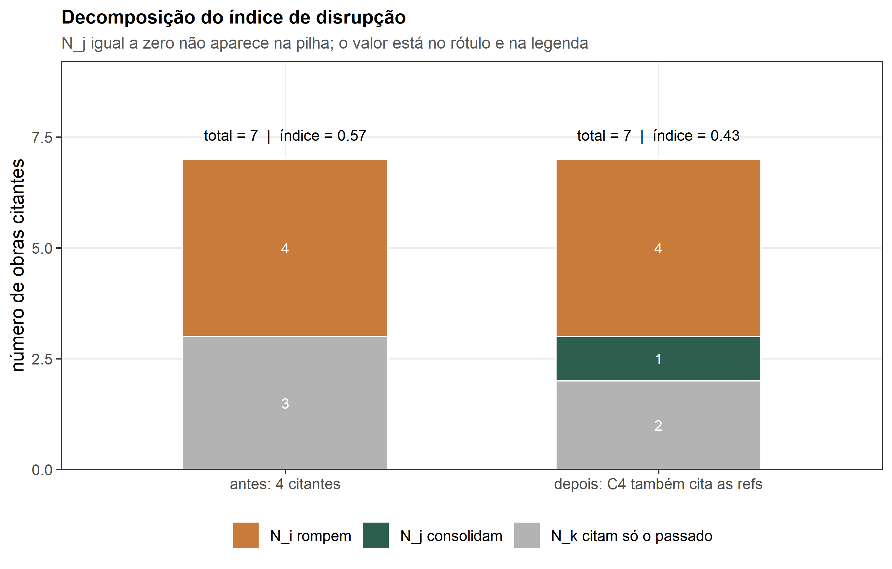
Figure 13: Decomposição do índice de disrupção nos três grupos de citantes, para os dois cenários em que o focal existe no acervo. O total de citantes é o mesmo nos dois cenários, e apenas a composição muda.
A Figura mostra o mecanismo em uma imagem, e vale notar com precisão o que muda entre os dois cenários. No cenário “antes”, o focal tem 4 citantes que rompem, 0 que consolidam e 3 que citam só o passado dele, o que dá um total de 7 obras citantes e índice 0.57. No cenário “depois”, a obra C4 passa a citar também R1 e, com isso, sai do grupo das que rompem e entra no das que consolidam: N_j sobe de 0 para 1, N_k cai de 3 para 2, e o total de citantes permanece 7 — exatamente o mesmo. Ou seja: o número de citantes não mudou e o índice caiu de 0.57 para 0.43. É essa a informação que uma contagem de citações não entrega, e é por isso que o índice existe.
Um detalhe de implementação que vale registrar, porque volta a aparecer em qualquer gráfico de composição: uma fatia de altura zero não é desenhada, de modo que N_j igual a 0 no primeiro cenário não tem barra verde. O número está no rótulo e na contagem do texto, e a alternativa de inflar a fatia para torná-la visível seria pior, porque apresentaria um valor falso. Em uma figura de artigo, a solução é a mesma: declarar na legenda que o valor nulo está omitido por construção. A consequência prática, para o doutorando em Agronomia, é que o índice de disrupção complementa e não substitui a contagem de citações: a contagem mede atenção recebida, o índice mede como essa atenção se posicionou em relação ao que o trabalho propôs.
8.7 Tarefas do Módulo 4
Tarefa 4.1 (aplicar). Use citation_velocity() sobre o acervo real do OpenAlex, que está no objeto x_openalex, e compare a mediana da velocidade com a do acervo simulado. Depois rode disruption_index() sobre uma tabela de arestas construída por você, com as colunas citing_id e cited_id, e mostre o índice resultante. Se a chamada ao OpenAlex falhou nesta máquina, rode a tarefa sobre x_analise e diga por quê.
Tarefa 4.2 (analisar). Construa um vetor de anos de referência com um ano seminal plantado por você, diferente de 1994, rode rpys() com dois valores de window e responda: o pico que você plantou aparece nas duas configurações? O que a resposta diz sobre a robustez do achado? Em seguida, explique em um parágrafo por que um pico de RPYS não pode ser lido como pico de produção científica daquele ano.
Antes de seguir
O argumento window de rpys() e a lista de referências de disruption_index() são os dois pontos em que este módulo depende de decisão do analista, e não do pacote. Registre os dois valores no seu script: daqui a seis meses, o número no artigo não será reproduzível sem eles.
9 Módulo 5. Análise textual e tópicos
9.1 O problema agronômico
Depois de importar, limpar e descrever o acervo, o doutorando em Agronomia chega à pergunta que motivou a revisão: sobre o que esses trabalhos falam, e o que mudou no vocabulário deles ao longo do tempo? A resposta não sai da contagem de documentos, porque um acervo que dobra de tamanho pode continuar usando as mesmas palavras. Ela sai do texto. Título e palavras-chave são os dois campos textuais que toda exportação bibliográfica traz preenchidos, e é sobre eles que este módulo trabalha.
Há uma armadilha imediata nesse caminho, e ela não é conceitual: é administrativa. Toda base exportada carrega ruído que não tem significado científico algum — códigos de amostra, numeração de ensaio, identificadores de lote, prefixos de projeto. Esse ruído é frequente justamente porque é sistemático, e um contador de termos o colocará no topo da lista, acima de qualquer conceito agronômico. Quem não faz a limpeza publica uma tabela de códigos e chama aquilo de análise temática.
O terceiro problema é de interpretação, e é onde a maioria dos artigos escorrega. Existem dois números diferentes em jogo: a frequência de um termo no acervo e o poder discriminante de um termo entre estratos. Um termo pode ser o mais frequente de todos e não distinguir nada, porque aparece igualmente em todos os anos; e um termo pode ser raro e ser exatamente o que separa um estrato do outro. Este módulo mostra os dois números, a fórmula que os combina e a leitura correta de cada um.
9.2 Frequência de termos e a etapa de limpeza
A função term_frequency() tokeniza o campo textual, converte para minúsculas, descarta tokens com até dois caracteres e remove uma lista de palavras vazias. O argumento field aceita apenas "title" ou "abstract". O acervo simulado tem os dois campos, mas o campo de resumo está vazio em todas as obras, de modo que a análise sobre resumo devolve zero linhas — e é importante que isso apareça como resultado vazio, e não como erro, para que ninguém conclua que a função falhou.
# 5.1 Frequência bruta no campo de títulostf_bruto<-term_frequency(x_analise, field ="title")# 5.2 Limpeza: termo administrativo declarado como palavra vazia e tokens numéricostf_filt<-term_frequency(x_analise, field ="title", stopwords =c("estudo"))tf_limpo<-tf_filt[!grepl("^[0-9]+$", tf_filt$term), ]# 5.3 Quantificação da limpezalimpeza<-data.frame( metrica =c("termos distintos na saída bruta","termos distintos após a limpeza","ocorrências totais na saída bruta","ocorrências totais após a limpeza","tokens puramente numéricos descartados","ocorrências do termo administrativo"), valor =c(nrow(tf_bruto), nrow(tf_limpo),sum(tf_bruto$n), sum(tf_limpo$n),sum(grepl("^[0-9]+$", tf_bruto$term)),tf_bruto$n[tf_bruto$term=="estudo"]))# 5.4 Top 15 dos dois estados, lado a ladotop_bruto<-head(tf_bruto, 15L)cmp<-data.frame(termo =top_bruto$term, n_bruto =top_bruto$n)cmp$n_limpo<-tf_limpo$n[match(cmp$termo, tf_limpo$term)]knitr::kable(cmp, row.names =FALSE, caption ="Top 15 termos do campo de títulos antes e depois da limpeza. A célula ausente na coluna de depois é o termo que a limpeza removeu por completo, e a coluna de antes é sempre a contagem da saída bruta.")
Table 23: Top 15 termos do campo de títulos antes e depois da limpeza. A coluna ‘depois’ é a contagem do termo no acervo já filtrado.
Top 15 termos do campo de títulos antes e depois da limpeza. A célula ausente na coluna de depois é o termo que a limpeza removeu por completo, e a coluna de antes é sempre a contagem da saída bruta.
termo
n_bruto
n_limpo
estudo
279
NA
abiótico
139
139
estresse
139
139
silício
139
139
tolerância
139
139
carbono
93
93
cobertura
93
93
plantas
93
93
solo
93
93
arroz
47
47
culturas
47
47
fenotipagem
47
47
remoto
47
47
sensoriamento
47
47
soja
42
42
A comparação entre as duas colunas é o conteúdo da tabela. Na saída bruta, o termo mais frequente é estudo, com 279 ocorrências, seguido de abiótico e estresse, com 139 cada. Nenhum dos três é conceito agronômico: o primeiro é vocabulário administrativo, porque cada título do acervo termina com o sufixo (estudo NNN), e os outros dois são palavras do próprio objeto de estudo. Os tokens puramente numéricos são 278 termos distintos, cada um aparecendo no máximo 2 vez, o que os deixa baixos na tabela e ainda assim responsáveis por 14.3 por cento de todas as ocorrências. Ruído administrativo não precisa estar no topo para contaminar a análise; basta existir em quantidade.
A estatística que justifica a limpeza está nas contagens agregadas: a saída bruta tem 1953 ocorrências em 298 termos distintos, e o termo administrativo mais os códigos numéricos respondem por 558 ocorrências, ou 28.6 por cento do total. Depois da limpeza, os termos distintos caem para 19 e as ocorrências para 1395, de modo que 71.4 por cento do volume original sobrevive. Esse é o ponto que a limpeza precisa justificar: ela não pode jogar fora sinal junto com ruído, e aqui ela descarta 28.6 por cento do volume para manter a lista inteiramente composta de termos agronômicos.
# 5.5 Dois painéis: antes e depois da limpeza, na mesma ordem de termosn_painel<-min(15L, nrow(top_bruto), nrow(tf_limpo))d_tf<-rbind(data.frame(termo =top_bruto$term[seq_len(n_painel)], estado ="antes da limpeza", n =top_bruto$n[seq_len(n_painel)]),data.frame(termo =tf_limpo$term[seq_len(n_painel)], estado ="depois da limpeza", n =tf_limpo$n[seq_len(n_painel)]))# a ordem dos termos é a do topo bruto, e é a mesma nos dois painéisd_tf$termo<-factor(d_tf$termo, levels =rev(top_bruto$term[seq_len(n_painel)]))# termos que só aparecem na saída bruta ficam sem nível e saem do gráficod_tf<-d_tf[!is.na(d_tf$termo), ]stopifnot(all(!is.na(d_tf$termo)))d_tf$estado<-factor(d_tf$estado, levels =c("antes da limpeza", "depois da limpeza"))ggplot(d_tf, aes(x =n, y =termo, fill =estado))+geom_col(width =.62)+geom_text(aes(label =n), hjust =-.3, size =2.5, colour ="grey30")+facet_wrap(~estado, ncol =2, scales ="free_x")+scale_fill_manual(values =c("antes da limpeza"=pal_agri[2],"depois da limpeza"=pal_agri[1]), guide ="none")+scale_x_continuous(expand =expansion(mult =c(0, .22)))+labs(x ="ocorrências no campo de títulos", y =NULL, title ="Efeito da limpeza sobre o ranking de termos", subtitle ="mesma ordem de termos nos dois painéis; escalas horizontais independentes")
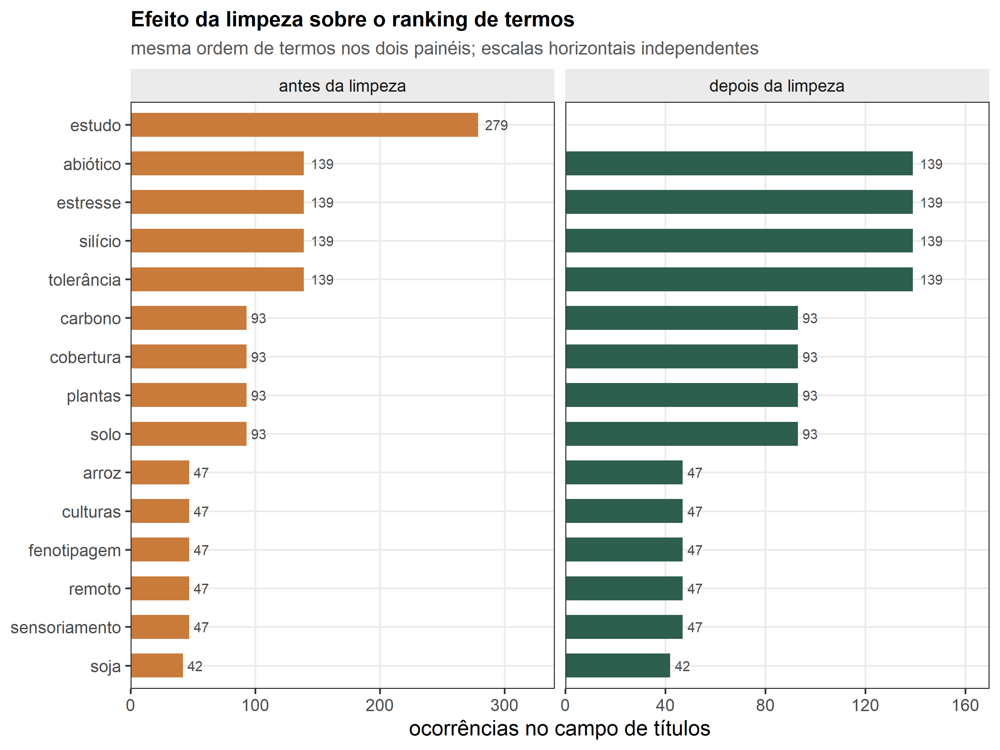
Figure 14: Top 15 termos do campo de títulos antes e depois da limpeza, em dois painéis com a mesma ordem de termos.
A Figura mostra o efeito completo da limpeza em dois painéis com a mesma ordem de termos, de modo que a comparação é linha a linha. No painel da esquerda, o acervo como exportado, e a linha de estudo salta aos olhos: as barras laranja registram 279 ocorrências desse termo. No painel da direita, o acervo depois do filtro, e essa linha simplesmente não existe, porque o termo saiu da análise. Os termos agronômicos sobem para o topo da lista, e abiótico lidera com 139 ocorrências, seguido de estresse e silício, com 139 cada. Nenhum termo da lista depurada tem dígito no nome, o que confirma que o filtro numérico e a lista de palavras vazias atacaram exatamente o alvo.
Vale um aviso sobre o argumento de palavras vazias, porque ele é uma fonte de surpresa. O valor de stopwordssubstitui a lista padrão, e não a complementa. Nos títulos deste acervo nada muda, porque são portugueses e não contêm as palavras vazias inglesas do padrão, mas em um acervo com títulos em inglês passar apenas c("estudo") faria “the”, “of” e “and” voltarem ao topo. Se você precisa das duas listas, escreva as duas juntas no argumento.
# 5.6 O campo abstract existe, mas está vazio em todas as obrastem_abstract<-sum(!is.na(x_analise$works$abstract)&nzchar(trimws(x_analise$works$abstract)))tf_abstract<-term_frequency(x_analise, field ="abstract")campo_invalido<-tryCatch(term_frequency(x_analise, field ="journal"), error =function(e)conditionMessage(e))estado_abstract<-data.frame( situacao =c("obras com resumo preenchido","linhas devolvidas por field = 'abstract'","resposta a um campo inexistente"), resultado =c(tem_abstract, nrow(tf_abstract), campo_invalido))knitr::kable(estado_abstract, row.names =FALSE, caption ="Tentativas de análise sobre o campo de resumo: o acervo simulado não tem resumos preenchidos e a função devolve zero linhas.")
Table 24: Tentativas de análise sobre o campo de resumo: o acervo simulado não tem resumos preenchidos e a função devolve zero linhas.
Tentativas de análise sobre o campo de resumo: o acervo simulado não tem resumos preenchidos e a função devolve zero linhas.
situacao
resultado
obras com resumo preenchido
0
linhas devolvidas por field = ‘abstract’
0
resposta a um campo inexistente
‘arg’ should be one of “title”, “abstract”
Esse pequeno quadro merece atenção porque separa dois comportamentos que parecem iguais e não são. Pedir um campo válido e vazio devolve um quadro de zero linhas, sem aviso: é um resultado, e o resultado diz que não há texto naquele campo. Pedir um campo que não existe para como erro, com a mensagem ‘arg’ should be one of “title”, “abstract”. Um pipeline que trate os dois casos como “deu problema” vai ou parar onde deveria seguir, ou seguir onde deveria parar. Aqui, o campo de resumo existe em x_analise$works mas está vazio nas 280 obras, de modo que toda a análise textual deste módulo usa títulos e, adiante, a tabela de palavras-chave.
9.3 Frequência direta das palavras-chave
Título é texto livre, e o vocabulário dele depende de estilo de redação. A tabela de palavras-chave do acervo é outra coisa: são conceitos que os autores declararam, já normalizados em minúsculas pelo pacote. Para medir temas, essa tabela é o caminho mais curto, e term_frequency() não a alcança, porque só lê título e resumo.
# 5.7 Frequência direta da tabela de palavras-chave normalizadaskw<-x_analise$keywordskw$ano<-x_analise$works$year[match(kw$work_id, x_analise$works$work_id)]kw$periodo<-ifelse(kw$ano>=2020L, "2020-2025", "2010-2019")kw<-kw[!is.na(kw$keyword)&nzchar(kw$keyword), ]freq_kw<-as.data.frame(table(kw$keyword, kw$periodo), stringsAsFactors =FALSE)names(freq_kw)<-c("keyword", "periodo", "n")# 5.8 Menções por termo e período, normalizadas pelo número de obras do períodoobras_per<-table(kw$periodo[!duplicated(kw$work_id)])freq_kw$por_obra<-freq_kw$n/as.integer(obras_per[freq_kw$periodo])# 5.9 Taxa por obra em cada período: separa crescimento do acervo de adoção do termotaxa_kw<-reshape(freq_kw[, c("keyword", "periodo", "por_obra")], idvar ="keyword", timevar ="periodo", direction ="wide")names(taxa_kw)<-c("keyword", "taxa_antes", "taxa_recente")taxa_kw$razao<-taxa_kw$taxa_recente/pmax(taxa_kw$taxa_antes, 1e-9)freq_wide<-reshape(freq_kw[, c("keyword", "periodo", "n")], idvar ="keyword", timevar ="periodo", direction ="wide")names(freq_wide)<-c("keyword", "antes", "recente")freq_wide$antes[is.na(freq_wide$antes)]<-0Lfreq_wide$recente[is.na(freq_wide$recente)]<-0Lfreq_wide$total<-freq_wide$antes+freq_wide$recentefreq_wide$variacao<-round(100*(freq_wide$recente/pmax(freq_wide$antes, 1L)-1), 1)kw_top<-head(freq_wide[order(-freq_wide$total), ], 12L)# 5.10 Quantos dos doze termos da figura ganham densidade por obrano_top<-taxa_kw$keyword%in%kw_top$keywordn_sobe<-sum(taxa_kw$razao[no_top]>1)n_desce<-sum(taxa_kw$razao[no_top]<=1)knitr::kable(kw_top, row.names =FALSE, caption ="Frequência das palavras-chave normalizadas em cada período, com a variação percentual entre os dois períodos.")
Table 25: Frequência das palavras-chave normalizadas em cada período, com a variação percentual entre os dois períodos.
Frequência das palavras-chave normalizadas em cada período, com a variação percentual entre os dois períodos.
keyword
antes
recente
total
variacao
nutrient uptake
35
42
77
20.0
drought stress
36
40
76
11.1
silicon fertilization
30
46
76
53.3
silicon
33
36
69
9.1
rice
28
37
65
32.1
abiotic stress
28
36
64
28.6
sorghum
27
37
64
37.0
salinity
26
35
61
34.6
green manure
24
32
56
33.3
deep learning
11
41
52
272.7
no-till
20
32
52
60.0
machine learning
8
43
51
437.5
A tabela ordena os temas do acervo por volume total de menções. Os termos nutrient uptake, drought stress e silicon fertilization lideram com 77, 76 e 76 menções, e os quatro primeiros lugares são vocabulário da frente de silício e estresse abiótico, a mais populosa do acervo. Duas linhas, porém, mudam de assunto: o nono e o décimo primeiro termos da lista são deep learning e machine learning, com 52 e 51 menções totais, e as maiores variações percentuais da tabela pertencem justamente a eles. A coluna de variação é a que sustenta a leitura temporal, mas ela compara a contagem do período recente com a do período anterior sem normalizar pelo número de obras, de modo que um termo pode apresentar variação alta apenas porque o período recente tem mais obras. Essa é a razão de a figura seguinte trazer a taxa por obra ao lado das contagens, e de as duas camadas discordarem.
# 5.10 Contagens absolutas e taxa por obra na mesma figurafreq_kw$keyword<-factor(freq_kw$keyword, levels =rev(kw_top$keyword))ggplot(freq_kw[!is.na(freq_kw$keyword), ], aes(x =n, y =keyword, fill =periodo))+geom_col(position =position_dodge(width =.74), width =.7)+geom_point(aes(x =por_obra*mean(freq_kw$n), colour =periodo), position =position_dodge(width =.74), size =1.8, show.legend =FALSE)+scale_fill_manual(values =c("2010-2019"=pal_agri[3], "2020-2025"=pal_agri[1]), name =NULL)+scale_colour_manual(values =c("2010-2019"=pal_agri[3], "2020-2025"=pal_agri[1]))+labs(x ="menções no acervo", y =NULL, title ="Palavras-chave por período", subtitle ="barras: menções absolutas; pontos: menções por obra do período, na mesma escala")
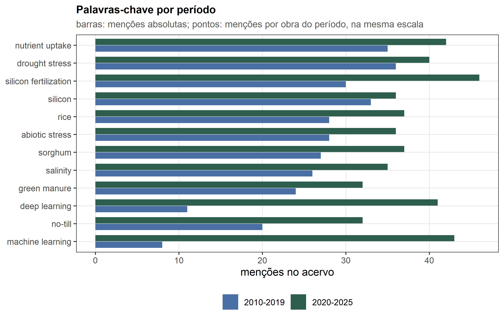
Figure 15: Menções de cada palavra-chave nos dois períodos do acervo. As barras são contagens absolutas; os pontos são as mesmas contagens redistribuídas como menções por obra do período, na mesma escala.
A Figura tem duas camadas e é preciso ler as duas, porque elas discordam entre si. A tabela anterior traz doze dos 24 termos do acervo e serve de amostra do que a figura mostra. As barras são as contagens absolutas e crescem nos doze termos exibidos, o que reflete o fato de o período recente ter 754 menções contra 474 do período anterior. Os pontos são a mesma contagem dividida pelo número de obras do período e colocados na mesma escala para permitir a comparação visual, e a leitura deles é oposta à das barras: entre os doze termos da figura, a taxa por obra sobe em 5 e cai ou empata em 7. Quem sobe são hyperspectral, machine learning, uav, com razão de 3.99, 3.96, 3.86 entre os dois períodos. Em outras palavras, o vocabulário temático consolidado perde densidade e o vocabulário de automação ganha, enquanto as barras sugerem que todos avançam.
Esta é a lição central do módulo, e ela cabe em uma frase: em um acervo que cresce, contagem absoluta cresce com ele e não informa nada sobre adoção. O que mede adoção é a taxa por obra, e é ela que sustenta a afirmação sobre mudança de vocabulário. Um artigo que apresente apenas as barras dirá que todos os temas cresceram, quando o dado mostra que 7 dos doze termos perderam densidade e 5 ganharam.
9.4 TF-IDF: o que distingue um estrato
Frequência mede presença no acervo inteiro. TF-IDF mede presença em um estrato relativamente ao resto. A função tfidf_terms() calcula, para cada termo e cada grupo, o número de documentos que contêm o termo no grupo multiplicado pelo logaritmo da razão entre o número de grupos e o número de grupos em que o termo aparece. O argumento group só aceita nomes de coluna de x$works, e dois deles são os que fazem sentido: "year" e "source".
# 5.9 TF-IDF por ano e limpeza do mesmo ruído administrativoti_bruto<-tfidf_terms(x_analise, group ="year")ti<-ti_bruto[!grepl("^[0-9]+$", ti_bruto$term)&!ti_bruto$term%in%c("estudo"), ]ti_top<-head(ti[order(-ti$tfidf), c("term", "group", "n", "df", "tfidf")], 10L)knitr::kable(ti_top, row.names =FALSE, digits =3, caption ="Top 10 termos por TF-IDF no agrupamento por ano, com a frequência no estrato, o número de anos em que o termo ocorre e o valor do índice.")
Table 26: Top 10 termos por TF-IDF no agrupamento por ano, com a frequência no estrato, o número de anos em que o termo ocorre e o valor do índice.
Top 10 termos por TF-IDF no agrupamento por ano, com a frequência no estrato, o número de anos em que o termo ocorre e o valor do índice.
term
group
n
df
tfidf
pastagem
2016
6
11
2.248
pastagem
2024
6
11
2.248
pastagem
2021
5
11
1.873
pastagem
2022
5
11
1.873
trigo
2021
6
12
1.726
trigo
2024
6
12
1.726
pastagem
2025
4
11
1.499
trigo
2022
5
12
1.438
feijão
2022
6
13
1.246
trigo
2018
4
12
1.151
Aqui está o resultado que organiza a interpretação de todo índice de discriminação. O termo com o maior TF-IDF é pastagem, com índice 2.248, frequência de 6 no estrato 2016 e ocorrência em 11 anos de um total de 16. O termo mais frequente do acervo, abiótico, tem TF-IDF de 0 — e o índice é zero justamente porque o termo aparece em todos os anos. O logaritmo de um dividido por um é zero, e essa é a propriedade que dá sentido ao índice: um termo onipresente não distingue estrato algum, por mais frequente que seja.
Traduzindo para a prática da escrita científica: TF-IDF alto com df baixo é assinatura de um termo que caracteriza um recorte específico do acervo. No material analisado, os termos com índice acima de 1 são feijão, pastagem, trigo, e nenhum deles é vocabulário de tema: são palavras de cultura e de sistema de manejo, que distinguem um trabalho dos demais pelo objeto cultivado e não pela frente de pesquisa. Se a sua pergunta é temática, esse resultado é ruído útil: ele mostra que o acervo é heterogêneo em cultura e homogêneo em tema, o que é uma informação sobre o desenho da amostra e sobre o cuidado necessário ao ler uma nuvem de palavras construída sobre títulos.
# 5.10 Mapa de calor do TF-IDF por termo e por anotermos_topo<-head(tf_limpo$term, 12L)d_hm<-ti[ti$term%in%termos_topo, ]d_hm$term<-factor(d_hm$term, levels =rev(termos_topo))d_hm$ano<-as.integer(d_hm$group)ggplot(d_hm, aes(x =ano, y =term, fill =tfidf))+geom_tile(colour ="white", linewidth =.35)+scale_fill_gradient(low ="#F2F2F2", high =pal_agri[6], na.value ="#F2F2F2", name ="TF-IDF")+scale_x_continuous(breaks =seq(min(d_hm$ano), max(d_hm$ano), by =2))+labs(x ="ano", y =NULL, title ="TF-IDF por termo e por ano", subtitle ="branco: termo presente em todos os anos, índice nulo")
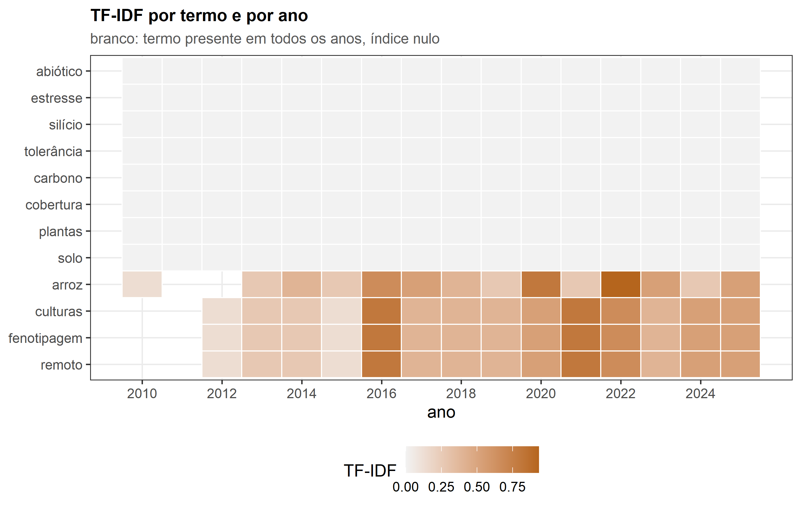
Figure 16: Mapa de calor do TF-IDF dos doze termos mais frequentes do acervo ao longo dos anos. A escala vai do branco, para índice nulo, ao laranja, e os anos não cobertos pelo termo ficam sem célula.
O mapa de calor mostra o índice no espaço dos dois estratos ao mesmo tempo e torna visível a propriedade que o texto anterior descreveu. As linhas dos termos onipresentes ficam brancas em toda a extensão: presença uniforme, índice zero. As linhas dos termos com df baixo mostram manchas concentradas em poucos anos, que são exatamente os estratos que aquele termo distingue. A cor nunca indica importância científica; indica exclusividade estatística. Um artigo que apresente esse mapa precisa dizer, na legenda, que a intensidade mede concentração temporal, e não relevância agronômica.
9.5 Evolução dos tópicos e chegada do vocabulário de automação
A terceira função do módulo trabalha diretamente sobre a tabela de palavras-chave e responde à pergunta de evolução. trend_topics() conta, para cada ano e cada palavra-chave, quantas obras a declararam, e devolve as colunas year, keyword e n. O único argumento opcional é min_total, que descarta termos com menos de um número mínimo de menções no acervo inteiro.
# 5.11 Tendência por ano e por termotr<-trend_topics(x_analise)tot_termo<-sort(tapply(tr$n, tr$keyword, sum), decreasing =TRUE)top5<-names(tot_termo)[1:5]anos<-sort(unique(tr$year))# 5.12 Preenchimento explícito das combinações ano-termo ausentesgrade<-expand.grid(year =anos, keyword =top5, stringsAsFactors =FALSE)grade<-merge(grade, tr, all.x =TRUE)grade$n[is.na(grade$n)]<-0Lfaltantes<-sum(!paste(grade$year, grade$keyword)%in%paste(tr$year, tr$keyword))grade_wide<-reshape(grade, idvar ="year", timevar ="keyword", direction ="wide")names(grade_wide)<-sub("^n\\.", "", names(grade_wide))grade_wide<-grade_wide[order(grade_wide$year), ]knitr::kable(grade_wide, row.names =FALSE, caption ="Evolução dos cinco termos mais frequentes do acervo, por ano, com as células ausentes preenchidas com zero.")
Table 27: Evolução dos cinco termos mais frequentes do acervo, por ano, com as células ausentes preenchidas com zero.
Evolução dos cinco termos mais frequentes do acervo, por ano, com as células ausentes preenchidas com zero.
year
drought stress
nutrient uptake
rice
silicon
silicon fertilization
2010
1
0
1
2
0
2011
1
1
0
1
0
2012
1
3
1
3
2
2013
2
2
1
2
2
2014
4
0
1
3
3
2015
3
4
2
2
3
2016
6
6
6
4
6
2017
6
6
4
5
2
2018
5
5
5
6
5
2019
8
8
8
6
8
2020
7
7
4
5
5
2021
8
10
8
9
8
2022
6
8
9
7
11
2023
5
5
8
8
8
2024
8
7
6
4
9
2025
8
6
4
5
7
O preenchimento das células ausentes é a parte do código que não pode ser omitida, e vale entender por quê. A função agrega apenas as combinações que existem no dado, de modo que um termo ausente em um ano simplesmente não tem linha. Ao montar a grade completa com todas as combinações de ano e termo, o número de células que precisaram de zero é 5. Sem esse passo, uma série plotada em linha teria buracos que o gráfico interpreta como descontinuidade da publicação, quando o que houve foi ausência de menção. Zero e ausência são coisas diferentes em bibliometria, e a diferença some quando se plota direto a saída da agregação.
# 5.13 Séries dos cinco termos, em painéis com escala livregrade$keyword<-factor(grade$keyword, levels =top5)ggplot(grade, aes(x =year, y =n))+geom_line(colour =pal_agri[1], linewidth =.7)+geom_point(colour =pal_agri[1], size =1.5)+facet_wrap(~keyword, ncol =3, scales ="free_y")+scale_x_continuous(breaks =seq(min(anos), max(anos), by =3))+labs(x ="ano", y ="menções no acervo", title ="Evolução dos cinco termos mais frequentes", subtitle ="escala vertical livre em cada painel")
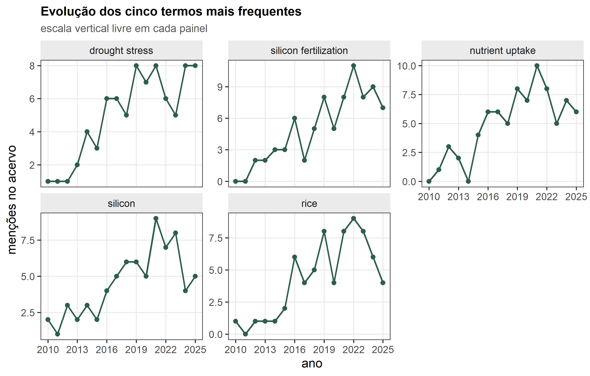
Figure 17: Evolução anual dos cinco termos de palavra-chave mais frequentes do acervo, em painéis separados, com escala livre por painel.
A Figura mostra o que a contagem agregada esconde. Os cinco termos mais frequentes do acervo pertencem ao vocabulário da frente de silício e estresse abiótico, e todos crescem ao longo do período, mas o crescimento deles é irregular: em 2010 o acervo tem 4 menções entre os cinco termos, e em 2025 tem 30. A escala livre por painel é deliberada: sem ela, os cinco painéis ficariam na mesma escala e os termos menos frequentes virariam linhas retas no chão do gráfico. Com ela, cada painel mostra a forma de sua série, e a comparação entre painéis passa a ser sobre forma, não sobre nível — o que exige que a legenda diga isso, como diz.
# 5.14 Verdade plantada V4: vocabulário de automação por anotermos_ia<-c("machine learning", "deep learning", "uav", "hyperspectral")pal_ia<-c("machine learning"=pal_agri[3], "deep learning"=pal_agri[6],"uav"=pal_agri[4], "hyperspectral"=pal_agri[1])ia<-tr[tr$keyword%in%termos_ia, ]ia$fase<-ifelse(ia$year>=2020L, "2020-2025", "2010-2019")ggplot(ia, aes(x =year, y =n, colour =keyword))+geom_line(linewidth =.6, alpha =.6)+geom_point(aes(shape =fase), size =2.1, fill ="white")+scale_colour_manual(values =pal_ia, name =NULL)+scale_shape_manual(values =c("2010-2019"=1, "2020-2025"=16), name ="marcador")+scale_x_continuous(breaks =seq(min(ia$year), max(ia$year), by =2))+labs(x ="ano", y ="obras que declaram o termo", title ="Vocabulário de automação no acervo", subtitle ="pontos vazados: antes de 2020; pontos cheios: 2020 em diante")
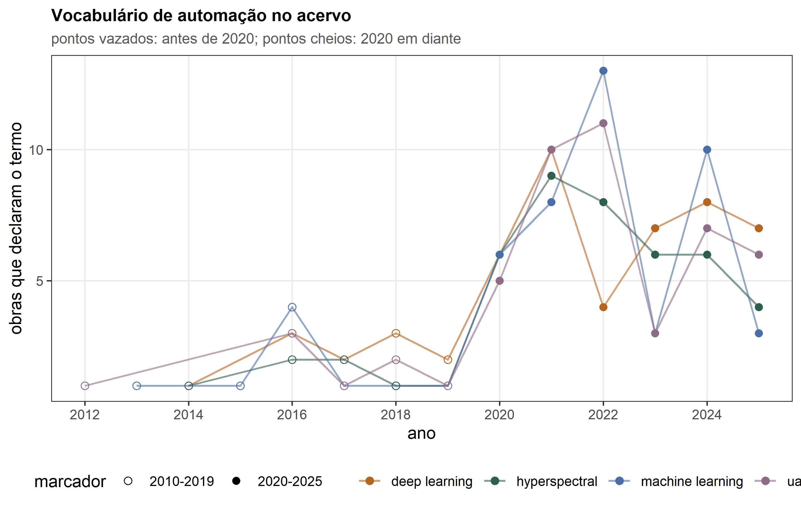
Figure 18: Chegada do vocabulário de automação ao acervo: menções anuais de aprendizado de máquina, aprendizado profundo, VANT e imageamento hiperespectral.
A Figura fecha a verdade plantada V4 com a evidência que faltava, e ela precisa ser lida com uma ressalva metodológica que vale mais que o resultado. O vocabulário de automação não é novo no acervo: as obras da frente de sensoriamento remoto já traziam esses quatro termos desde o início da série, e é por isso que existem menções antes de 2020. O que muda é a densidade. Em 2020 em diante, 166 menções contra 34 no restante da série. Contando obras em vez de menções, a diferença fica mais clara ainda: 46.4 por cento das obras do período recente declaram ao menos um termo de automação, contra 7.1 por cento do período anterior.
Essa diferença entre contar menções e contar obras não é detalhe de implementação, e é a razão de a verdade plantada precisar de duas leituras. Quando um acervo cresce, toda contagem absoluta cresce com ele; o que mede adoção de vocabulário é a fração de obras que adotam, e essa fração é comparável entre períodos de tamanhos diferentes. Em dado real, uma frente metodológica vizinha entra em cena exatamente assim: primeiro em um número pequeno de trabalhos, depois como vocabulário corrente, sem que ninguém anuncie a virada. É a contagem por obra, e não a contagem de menções, que mostra o momento.
# 5.15 Frequência total contra número de anos: por que o termo mais frequente não discriminadf_por_termo<-aggregate(df~term, ti, max)tot_por_termo<-tf_limpocomp_disc<-merge(tot_por_termo, df_por_termo, by.x ="term", by.y ="term", all.x =TRUE)comp_disc$tfidf_max<-vapply(comp_disc$term, function(t)max(ti$tfidf[ti$term==t]), numeric(1))comp_disc<-comp_disc[order(-comp_disc$n), c("term", "n", "df", "tfidf_max")]top_disc<-head(comp_disc, 3L)top_disc_baixo<-head(comp_disc[order(comp_disc$df, -comp_disc$n), ], 3L)knitr::kable(rbind(top_disc, top_disc_baixo), row.names =FALSE, digits =3, caption ="Relação entre frequência e poder discriminante: os três termos mais frequentes do acervo, o número de anos em que ocorrem e o TF-IDF máximo.")
Table 28: Relação entre frequência e poder discriminante: os três termos mais frequentes do acervo, o número de anos em que ocorrem e o TF-IDF máximo.
Relação entre frequência e poder discriminante: os três termos mais frequentes do acervo, o número de anos em que ocorrem e o TF-IDF máximo.
term
n
df
tfidf_max
abiótico
139
16
0.000
estresse
139
16
0.000
silício
139
16
0.000
pastagem
38
11
2.248
trigo
41
12
1.726
feijão
40
13
1.246
A tabela fecha o argumento com os dois extremos lado a lado. Os três termos mais frequentes ocorrem em 16 dos 16 anos e têm TF-IDF máximo de 0: são onipresentes e, por construção do índice, não distinguem estrato algum. Os três termos mais concentrados ocorrem em 11, 12, 13 anos e chegam a TF-IDF de 2.248. Um artigo que precise justificar a escolha de um termo para representar um período tem aqui o critério: frequência alta com df alto descreve o acervo inteiro, frequência moderada com df baixo descreve uma fase dele. Vale registrar o que o índice não faz: ele não mede relevância agronômica nem qualidade científica, e um termo com TF-IDF zero pode ser o conceito central da frente, como é o caso aqui.
9.6 Tarefas do Módulo 5
Tarefa 5.1 (aplicar). Rode term_frequency() sobre o campo de títulos com e sem o argumento stopwords, informe quantos termos e quantas ocorrências cada versão devolve e explique em duas frases por que a diferença entre as duas versões precisa ser declarada no Material e Métodos do artigo. Depois rode tfidf_terms() com group = "source" e diga o que muda na interpretação em relação ao agrupamento por ano.
Tarefa 5.2 (analisar). Use trend_topics() para montar a série anual de um termo de automação da sua escolha, preencha as células ausentes com zero e escreva um parágrafo de Resultados com a mudança de nível entre os períodos. Em seguida, compare a série do termo escolhido com a série do termo mais frequente do acervo e explique por que a conclusão sobre “o que cresce” depende de qual dos dois números, frequência ou discriminação, você usou.
Antes de seguir
Guarde o vetor top5 e a grade completa em um objeto com nome próprio. O Módulo 6 agrupa o mesmo acervo por período e por tema, e a comparação entre os dois caminhos, contagem textual e teste de associação, é o que mostra a diferença entre descrever e testar.
10 Módulo 6. Comparação de grupos com inferência por permutação
10.1 O problema agronômico
Suponha que você fechou um levantamento sobre silício e estresse abiótico com 280 obras publicadas entre 2010 e 2025 e queira responder a uma pergunta que a descritiva não responde: o vocabulário da área mudou depois de 2020? A resposta importa para quem escreve a introdução de um projeto. Se os termos de automação e aprendizado de máquina aparecem mais nas obras recentes, o projeto precisa de uma frente de fenotipagem e análise de imagem; se aparecem igualmente nos dois períodos, essa frente é opcional. Note que a pergunta não é sobre contagem absoluta — os períodos nem têm o mesmo número de obras — e sim sobre o padrão de associação entre pertencer a um período e empregar um termo.
O obstáculo é que a inferência clássica sobre tabelas de contingência pressupõe casos independentes e frequências esperadas razoáveis em cada célula. Aqui as unidades não são independentes: uma obra traz quatro ou cinco palavras-chave ligadas ao mesmo tema, o mesmo autor assina várias obras, e os grupos que interessam ao agrônomo raramente são disjuntos. Um trabalho sobre silício aplicado por sensoriamento remoto pertence a dois temas ao mesmo tempo. O teste de qui-quadrado assintótico, além disso, não foi desenhado para um desenho de observação em que os rótulos dos grupos foram atribuídos pelo pesquisador e poderiam, em princípio, ter caído em qualquer outra obra do acervo.
A saída que o biblioIntegrator adota é a inferência por permutação. Em vez de comparar a estatística observada a uma distribuição teórica, o pacote reembaralha os rótulos de grupo entre as obras centenas de vezes, recalcula a estatística em cada reembaralhamento e mede com que frequência o acaso produz associação tão forte quanto a observada. Esse desenho não exige normalidade nem células grandes, e o p-valor passa a significar exatamente o que o agrônomo imagina que ele significa: a proporção de reordenamentos do acervo em que a associação seria tão forte quanto a encontrada. Este módulo ensina a construir os grupos, a rodar o teste, a interpretar os resíduos célula por célula e a medir o tamanho do efeito — porque p-valor pequeno não é sinônimo de achado importante.
10.2 Do rótulo de grupo à matriz de pertencimento
A função form_groups() não devolve uma lista: ela devolve uma matriz de pertencimento com uma linha por obra e uma coluna por grupo, valendo 1 quando a obra pertence ao grupo e 0 quando não pertence. É essa matriz que todas as funções do módulo recebem, e é ela que explica por que o pacote consegue lidar com grupos que se cruzam.
# dplyr::between faz a mesma coisa, mas aqui basta compararg_per<-form_groups(x_analise, ifelse(x_analise$works$year>=2020, "2020-2025", "2010-2019"))tema_B<-ifelse(grepl("^Silício", x_analise$works$title), "silicio",ifelse(grepl("^Carbono", x_analise$works$title), "carbono", "remoto"))g_tema<-form_groups(x_analise, tema_B)# a classe do objeto e a dimensao sao a primeira coisa a conferircat("classe de g_per:", paste(class(g_per), collapse ="/"), "\n")#> classe de g_per: matrix/arraycat("dimensoes:", paste(dim(g_per), collapse =" x "), "\n")#> dimensoes: 280 x 2cat("dimensoes de g_tema:", paste(dim(g_tema), collapse =" x "), "\n")#> dimensoes de g_tema: 280 x 3# rownames sao os identificadores das obras: a matriz fica amarrada ao acervocat("primeiras obras:", paste(head(rownames(g_per), 3), collapse =", "), "\n")#> primeiras obras: W000474d7, W0004d050, W0004d133# a soma de cada coluna e o tamanho do grupotamanhos<-data.frame( matriz =c(rep("periodo", ncol(g_per)), rep("tema", ncol(g_tema))), grupo =c(colnames(g_per), colnames(g_tema)), trabalhos =c(colSums(g_per), colSums(g_tema)))knitr::kable(tamanhos, row.names =FALSE, caption ="Grupos construídos por form_groups() e o tamanho de cada um nos 280 trabalhos do acervo analítico.")
Grupos construídos por form_groups() e o tamanho de cada um nos 280 trabalhos do acervo analítico.
matriz
grupo
trabalhos
periodo
factor(groups)2010-2019
119
periodo
factor(groups)2020-2025
161
tema
factor(groups)carbono
93
tema
factor(groups)remoto
48
tema
factor(groups)silicio
139
O objeto tem 280 linhas (uma por obra) e 2 colunas no caso do período e 3 colunas no caso do tema. Note os nomes das colunas: form_groups() gera factor(groups)2010-2019 e factor(groups)carbono porque converte o vetor de rótulos em fator antes de montar a matriz. São nomes feios, e a partir daqui a convenção do tutorial é limpá-los na exibição e nunca reescrever a matriz, porque a ordem das colunas é a ordem em que as linhas das tabelas de saída aparecem. Os períodos ficaram desbalanceados — 119 obras antes de 2020 e 161 a partir de 2020 — e os temas mais ainda, com 139 obras de silício contra 48 de sensoriamento remoto. O desbalanceamento é a regra em levantamentos bibliográficos, e é uma das razões para não confiar apenas no teste assintótico.
Por que a matriz e não um vetor
Um vetor de rótulos só admite grupos mutuamente exclusivos: cada obra pertence a um período ou a um tema. A matriz admite a obra de sensoriamento remoto que também é de silício. Todas as funções deste módulo aceitam as duas formas, e a diferença aparece no campo $overlap do resultado, que comentamos adiante.
10.3 O que está associado a quê: a tabela de contingência
Antes de testar, vale olhar a tabela. O objeto devolvido por compare_groups() guarda a matriz observada, a esperada sob independência e os resíduos, e o contraste entre as duas primeiras é toda a matéria-prima da inferência.
cmp_per<-compare_groups(x_analise, g_per, entity ="keyword", permutations =499, seed =SEED)# a matriz observada tem uma linha por grupo e uma coluna por termoobs<-cmp_per$observed# para caber na pagina, mostramos os oito termos mais frequentestop8<-names(sort(colSums(obs), decreasing =TRUE))[1:8]tab_obs<-data.frame(grupo =rownames(obs), obs[, top8, drop =FALSE], check.names =FALSE)tab_esp<-data.frame(grupo =rownames(obs), round(cmp_per$expected[, top8, drop =FALSE], 1), check.names =FALSE)knitr::kable(tab_obs, row.names =FALSE, digits =0, caption ="Tabela de contingência observada: número de obras de cada período que empregam cada um dos oito termos mais frequentes.")knitr::kable(tab_esp, row.names =FALSE, digits =1, caption ="A mesma tabela sob independência: o que se esperaria se período e vocabulário nada tivessem a ver um com o outro.")
Table 29: A mesma tabela sob independência: o que se esperaria se período e vocabulário nada tivessem a ver um com o outro.
grupo
nutrient uptake
drought stress
silicon fertilization
silicon
rice
abiotic stress
sorghum
salinity
factor(groups)2010-2019
35
36
30
33
28
28
27
26
factor(groups)2020-2025
42
40
46
36
37
36
37
35
grupo
nutrient uptake
drought stress
silicon fertilization
silicon
rice
abiotic stress
sorghum
salinity
factor(groups)2010-2019
29.7
29.3
29.3
26.6
25.1
24.7
24.7
23.5
factor(groups)2020-2025
47.3
46.7
46.7
42.4
39.9
39.3
39.3
37.5
A obra analítica tem 280 registros, 24 termos distintos e 16 autores. A tabela observada soma 1228 pares obra-termo, e essa soma é o n de todos os cálculos que vêm a seguir. A leitura das duas tabelas lado a lado é a chave do módulo: onde o observado supera o esperado há associação positiva, onde fica abaixo há associação negativa, e a pergunta que a inferência responde é se essas diferenças são maiores do que o reembaralhamento produziria.
10.4 Inferência por permutação: dois contrastes, dois tamanhos de efeito
Agora rodamos o teste nos dois agrupamentos. O contraste entre os resultados é o ensinamento mais importante do módulo, e ele não aparece se você olhar apenas o p-valor.
cmp_tema<-compare_groups(x_analise, g_tema, entity ="keyword", permutations =499, seed =SEED)# 499 permutacoes fixam o menor p-valor possivel em 1/(499+1)cat("p-valor minimo alcancavel com 499 permutacoes:", 1/(499+1), "\n\n")#> p-valor minimo alcancavel com 499 permutacoes: 0.002resumo<-data.frame( contraste =c("periodo (2 grupos)", "tema (3 grupos)"), grupos =c(nrow(cmp_per$observed), nrow(cmp_tema$observed)), qui_quadrado =round(c(cmp_per$chi_square, cmp_tema$chi_square), 1), graus_de_liberdade =c((nrow(cmp_per$observed)-1)*(ncol(cmp_per$observed)-1),(nrow(cmp_tema$observed)-1)*(ncol(cmp_tema$observed)-1)), p_valor =c(cmp_per$p_value, cmp_tema$p_value), V_de_Cramer =round(c(cmp_per$cramers_v, cmp_tema$cramers_v), 3), sobrepostos =c(cmp_per$overlap, cmp_tema$overlap))knitr::kable(resumo, row.names =FALSE, caption ="Resultado da inferência por permutação nos dois contrastes: mesmo número de permutações e mesma semente, tamanhos de efeito muito diferentes.")
Resultado da inferência por permutação nos dois contrastes: mesmo número de permutações e mesma semente, tamanhos de efeito muito diferentes.
contraste
grupos
qui_quadrado
graus_de_liberdade
p_valor
V_de_Cramer
sobrepostos
periodo (2 grupos)
2
54.2
23
0.002
0.210
FALSE
tema (3 grupos)
3
1952.3
46
0.002
0.892
FALSE
O primeiro contraste compara os dois períodos. A estatística de qui-quadrado vale 54.2 e o p-valor é 0.002. Esse número não deve ser lido como “0,002 exato”: com 499 permutações, o p-valor é (1 + número de permutações tão extremas quanto) / (permutações + 1), de modo que 0.002 é o menor valor alcançável. O que a saída diz é que nenhum dos 499 reembaralhamentos produziu associação tão forte quanto a observada. Para refinar, aumente permutations — a conclusão não muda, apenas a resolução do número.
O achado substantivo está no tamanho do efeito. O V de Cramér vale 0.21, que é associação moderada e fraca. Traduzindo para a pergunta agronômica: os termos de automação aparecem mais no período recente, e a diferença é grande demais para ser atribuída ao acaso, mas está longe de ser uma regra. A maioria das obras de qualquer período usa o vocabulário comum da área.
O segundo contraste compara os três temas derivados do título. O qui-quadrado salta para 1952.3 — cerca de 36 vezes o primeiro — e o V de Cramér vai a 0.892, associação muito forte. O que isso significa em termos de campo é quase trivial: cada frente de pesquisa usa o seu próprio vocabulário, e uma obra sobre carbono do solo fala de plantio direto e não de silício. É o resultado esperado e não é uma descoberta.
Vale medir essa diferença de um terceiro modo, porque o tamanho do efeito moderado merece uma noção de incerteza. O argumento bootstrap acrescenta um intervalo de confiança ao V de Cramér, obtido por reamostragem das obras.
cmp_per_ic<-compare_groups(x_analise, g_per, entity ="keyword", permutations =499, bootstrap =50, seed =SEED)cmp_tema_ic<-compare_groups(x_analise, g_tema, entity ="keyword", permutations =499, bootstrap =50, seed =SEED)ic<-data.frame( contraste =c("periodo", "tema"), V =round(c(cmp_per_ic$cramers_v, cmp_tema_ic$cramers_v), 3), inferior =round(c(cmp_per_ic$cramers_v_ci[1], cmp_tema_ic$cramers_v_ci[1]), 3), superior =round(c(cmp_per_ic$cramers_v_ci[2], cmp_tema_ic$cramers_v_ci[2]), 3))knitr::kable(ic, row.names =FALSE, caption ="V de Cramér com intervalo de confiança de 95% obtido por reamostragem das obras (bootstrap = 50), nos dois contrastes.")
V de Cramér com intervalo de confiança de 95% obtido por reamostragem das obras (bootstrap = 50), nos dois contrastes.
contraste
V
inferior
superior
periodo
0.210
0.201
0.305
tema
0.892
0.877
0.909
O contraste por período tem V de 0.21 com intervalo de 0.201 a 0.305; o contraste por tema, V de 0.892 com intervalo de 0.877 a 0.909. Os dois intervalos não se tocam, o que confirma em outra escala o que o V já dizia: são associações de ordens de grandeza diferentes. O intervalo do primeiro contraste não chega a zero: mesmo no limite inferior da reamostragem, a associação entre período e vocabulário é real, apenas modesta.
A lição metodológica é o contraste. Os dois contrastes têm p = 0.002 e p = 0.002: o p-valor não distingue um achado de uma trivialidade. Ele mede apenas se o acaso, sozinho, explicaria o padrão, e com 280 obras o acaso raramente explica qualquer coisa. Quem mede a importância é o V de Cramér, que varia de 0 a 1 e é comparável entre tabelas de tamanhos diferentes. Escrever “associação altamente significativa (p < 0,01)” para o contraste por período, sem informar o V, comunica ao leitor que existe um achado forte quando o que existe é um achado moderado.
10.5 Resíduos: quais células fogem do esperado
Saber que existe associação não diz onde ela está. A função association_residuals() devolve uma linha por célula da tabela, com o valor observado, o esperado e o resíduo padronizado de Pearson. A convenção de leitura é direta: sob independência, os resíduos têm desvio-padrão próximo de 1, de modo que valores além de 2 em módulo marcam células que fogem do esperado.
res_per<-association_residuals(cmp_per)res_tema<-association_residuals(cmp_tema)cat("celulas na tabela de periodo:", nrow(res_per), "\n")#> celulas na tabela de periodo: 48cat("celulas na tabela de tema:", nrow(res_tema), "\n")#> celulas na tabela de tema: 72cat("residuos alem de 2 em modulo, periodo:", sum(abs(res_per$residual)>2), "\n")#> residuos alem de 2 em modulo, periodo: 8cat("residuos alem de 2 em modulo, tema:", sum(abs(res_tema$residual)>2), "\n\n")#> residuos alem de 2 em modulo, tema: 69# min_abs e um filtro de conveniencia: nao recalcula nada, so seleciona linhasfortes<-association_residuals(cmp_per, min_abs =2)fortes<-fortes[order(-abs(fortes$residual)), ]fortes$grupo<-sub("^factor\\(groups\\)", "", fortes$group)knitr::kable(fortes[, c("grupo", "entity", "obs"="observed", "esp"="expected", "residuo"="residual")], row.names =FALSE, digits =c(0, 0, 0, 1, 2), caption ="Células cujo resíduo padronizado de Pearson excede 2 em módulo no contraste por período: são estas, e não outras, que sustentam a associação.")
Table 30: Células cujo resíduo padronizado de Pearson excede 2 em módulo no contraste por período: são estas, e não outras, que sustentam a associação.
grupo
entity
observed
expected
residual
2010-2019
machine learning
8
19.7
-3.43
2020-2025
machine learning
43
31.3
3.43
2010-2019
uav
8
19.3
-3.35
2020-2025
uav
42
30.7
3.35
2020-2025
hyperspectral
38
27.6
3.24
2010-2019
hyperspectral
7
17.4
-3.24
2010-2019
deep learning
11
20.1
-2.64
2020-2025
deep learning
41
31.9
2.64
No contraste por período, 8 das 48 células passam do limiar de 2, todas elas concentradas na família de automação: os termos deep learning, hyperspectral e machine learning aparecem menos que o esperado antes de 2020 e mais que o esperado depois. O sinal acompanha o sinal do resíduo, e é isso que a coluna residuo informa. Como o teste de permutação é de duas caudas, o sinal do resíduo é o que transforma “há associação” em “a automação cresceu, não recuou”.
No contraste por tema o quadro é outro: 69 das 72 células passam do limiar. Isso não significa que o segundo resultado seja mais confiável, e sim que a associação por tema é forte em quase todas as células, o que é exatamente o comportamento de um vocabulário que acompanha a frente de pesquisa.
A figura Figure 19 mostra os dois conjuntos de resíduos no mesmo painel, com as linhas de referência em ±2.
# junta os dois contrastes e escolhe a ordem dos termos pelo contraste por periododr<-rbind(data.frame(contraste ="Período (2010-2019 vs 2020-2025)", res_per),data.frame(contraste ="Tema (silício, carbono, remoto)", res_tema))dr$grupo<-sub("^factor\\(groups\\)", "", dr$group)# ordem dos termos pelo residuo do primeiro periodo, para as barras ficarem legiveisprimeiro<-res_per$group[1]ordem_termos<-res_per$entity[res_per$group==primeiro][order(res_per$residual[res_per$group==primeiro])]dr$entity<-factor(dr$entity, levels =ordem_termos)ggplot(dr, aes(x =entity, y =residual, fill =grupo))+geom_col(position =position_dodge(width =.78), width =.72)+geom_hline(yintercept =c(-2, 2), linetype ="dashed", colour ="grey30")+geom_hline(yintercept =0, colour ="grey20", linewidth =.3)+coord_flip()+facet_wrap(~contraste, ncol =2)+scale_fill_manual(values =pal_agri)+labs(x =NULL, y ="Resíduo padronizado de Pearson", title ="Onde a associação está, célula por célula", subtitle ="Barras além de ±2 fogem do esperado sob independência", fill =NULL)+theme(legend.position ="bottom")
Figure 19: Resíduos padronizados de Pearson por termo, nos dois contrastes. As linhas tracejadas marcam ±2, o limiar convencional para uma célula que foge do esperado sob independência. Termos ordenados pelo resíduo do contraste por período.
A leitura da figura Figure 19 é o que se leva para a redação do artigo. No painel da esquerda, três barras atravessam as linhas tracejadas e as outras vinte e uma ficam dentro do ruído: o achado sobre automação não é “o vocabulário mudou”, é “três termos de automação migraram de um período para o outro”. No painel da direita, praticamente todas as barras atravessam ou beiram as linhas, com sinais opostos entre temas: silício puxa os termos de salinidade e nutrição para cima, carbono puxa os de matéria orgânica, remoto puxa os de sensoriamento. É a assinatura de três vocabulários separados.
10.6 Análise de correspondência: grupos e termos no mesmo plano
A tabela de resíduos responde “onde”, mas não responde “quão perto”. A análise de correspondência resolve isso projetando grupos e termos em um mesmo plano, de modo que a proximidade entre um grupo e um termo signifique que o termo é característico daquele grupo.
ca<-group_ca(cmp_tema)cat("linhas (grupos):", nrow(ca$rows), " colunas (termos):", nrow(ca$columns), "\n")#> linhas (grupos): 3 colunas (termos): 24cat("valores singulares:", paste(round(ca$singular_values, 4), collapse =", "), "\n")#> valores singulares: 0.9491, 0.83, 0cat("inercia total:", round(sum(ca$singular_values^2), 4), "\n")#> inercia total: 1.5898# projecao dos grupos: a posicao e o centroide das obras daquele grupoproj_grupos<-data.frame( nome =sub("^factor\\(groups\\)", "", rownames(ca$rows)), dim1 =ca$rows[, 1], dim2 =ca$rows[, 2])knitr::kable(proj_grupos, row.names =FALSE, digits =3, caption ="Coordenadas dos três temas no plano da análise de correspondência (dimensões 1 e 2 da tabela de contingência tema por termo).")
Coordenadas dos três temas no plano da análise de correspondência (dimensões 1 e 2 da tabela de contingência tema por termo).
nome
dim1
dim2
carbono
-1.273
0.380
remoto
-0.019
-1.860
silicio
0.850
0.364
A figura Figure 20 projeta grupos e termos juntos. Como os valores singulares decrescem (0.949 e 0.83) mas o terceiro é praticamente nulo, dois eixos bastam para representar a estrutura: com três grupos, a tabela tem no máximo duas dimensões de associação genuína, e a terceira é ruído numérico.
termos_plano<-data.frame( nome =rownames(ca$columns), dim1 =ca$columns[, 1], dim2 =ca$columns[, 2], dist =sqrt(ca$columns[, 1]^2+ca$columns[, 2]^2))# rotula os doze termos mais distantes da origem, que sao os que caracterizam os gruposrotular<-termos_plano$nome[order(-termos_plano$dist)][1:12]termos_plano$rotulo<-ifelse(termos_plano$nome%in%rotular, termos_plano$nome, NA)ggplot()+geom_hline(yintercept =0, colour ="grey85")+geom_vline(xintercept =0, colour ="grey85")+geom_point(data =termos_plano, aes(x =dim1, y =dim2), colour ="grey35", size =1.7)+ggrepel::geom_text_repel(data =termos_plano, aes(x =dim1, y =dim2, label =rotulo), size =2.6, colour ="grey25", na.rm =TRUE, seed =SEED, max.overlaps =30, min.segment.length =0)+geom_point(data =proj_grupos, aes(x =dim1, y =dim2, colour =nome), shape =18, size =5)+ggrepel::geom_text_repel(data =proj_grupos, aes(x =dim1, y =dim2, label =nome, colour =nome), size =3.5, fontface ="bold", seed =SEED)+scale_colour_manual(values =pal_agri)+labs(x ="Dimensão 1", y ="Dimensão 2", colour =NULL, title ="Grupos e termos no mesmo plano", subtitle ="Análise de correspondência da tabela tema por termo")+coord_equal()
Figure 20: Mapa de correspondência do contraste por tema: os três grupos (losangos) e os 24 termos (círculos) no mesmo plano. Só os termos mais extremos estão rotulados, para não sobrecarregar a figura. A proximidade entre grupo e termo indica vocabulário característico.
A leitura da figura Figure 20 é imediata e vale como teste visual do que os resíduos já disseram. Os três losangos formam um triângulo no plano, e cada um atrai os seus próprios termos: soil carbon, soil organic matter e green manure pousam à esquerda, junto do losango de carbono; remote sensing, vegetation index e yield prediction descem para a base do gráfico, junto do losango de remoto; e o losango de silício fica isolado à direita, com os seus termos. Note que o eixo vertical é que separa remoto dos demais: os termos de sensoriamento têm coordenada 2 fortemente negativa, e é essa a dimensão de contraste que o algoritmo encontrou. Os termos de silício e de carbono, por sua vez, separam-se na horizontal.
A distância entre os centros dos grupos é a versão gráfica do V de Cramér de 0.892: grupos distantes no plano produzem associação forte. Faça o mesmo exercício com group_ca(cmp_per) e você verá os dois períodos praticamente sobrepostos, com os termos de automação como a única estrutura visível — o V de 0.21 desenhado.
10.7 Quantas dimensões a estrutura tem: MCA e a leitura do scree
A análise de correspondência múltipla (MCA) generaliza o exercício anterior para várias variáveis ao mesmo tempo: em vez de uma tabela de grupos por termos, ela trata cada termo como uma variável binária e mede quanta estrutura existe em cada dimensão. O valor diagnóstico está na distribuição da variância, não no primeiro componente.
mca_tema<-group_mca(x_analise, g_tema, entity ="keyword")mca_per<-group_mca(x_analise, g_per, entity ="keyword", ncp =3)eig_tema<-as.data.frame(mca_tema$eig)# os nomes das colunas vem do FactoMineR e tem espacos: guardamos os valores# em vetores de nome simples para poder interpolar na prosamca_var<-eig_tema[["percentage of variance"]]mca_var_cum<-eig_tema[["cumulative percentage of variance"]]eig_tema$dimensao<-rownames(mca_tema$eig)knitr::kable(eig_tema[, c("dimensao", "eigenvalue", "percentage of variance", "cumulative percentage of variance")], row.names =FALSE, digits =2, caption ="Autovalores da análise de correspondência múltipla do contraste por tema: variância explicada por dimensão e acumulada.")cat("MCA do contraste por periodo, dimensoes 1 a", nrow(mca_per$eig), ":\n")#> MCA do contraste por periodo, dimensoes 1 a 3 :print(round(as.data.frame(mca_per$eig)[, c("eigenvalue", "percentage of variance")], 3))#> eigenvalue percentage of variance#> dim 1 0.198 19.783#> dim 2 0.141 14.081#> dim 3 0.087 8.704
Table 31: Autovalores da análise de correspondência múltipla do contraste por tema: variância explicada por dimensão e acumulada.
dimensao
eigenvalue
percentage of variance
cumulative percentage of variance
dim 1
0.25
25.22
25.22
dim 2
0.18
18.05
43.26
A dimensão 1 explica 25.2% da variância e a dimensão 2, 18%, somando 43.3% nas duas primeiras. Esse número é o que surpreende quem espera encontrar muita estrutura num acervo de 280 obras: menos da metade da variância cabe em duas dimensões. A interpretação correta não é que a análise fracassou. Como todas as variáveis são termos raros (a maioria aparece em menos de 30% das obras), a MCA tem muitas dimensões com pouca variância cada uma, e isso é a assinatura de um conjunto de variáveis binárias esparsas. A estrutura real está na cauda curta: as primeiras dimensões concentram a associação entre temas e vocabulário, e a cauda longa é ruído de termos que aparecem em poucas obras.
dados_mca<-rbind(data.frame(contraste ="Tema (3 grupos)", dimensao =seq_len(nrow(mca_tema$eig)), variancia =mca_tema$eig[, "percentage of variance"]),data.frame(contraste ="Período (2 grupos)", dimensao =seq_len(nrow(mca_per$eig)), variancia =mca_per$eig[, "percentage of variance"]))ggplot(dados_mca, aes(x =factor(dimensao), y =variancia, fill =contraste))+geom_col(position =position_dodge(width =.8), width =.72)+geom_text(aes(label =sprintf("%.1f", variancia)), position =position_dodge(width =.8), vjust =-0.4, size =2.6)+scale_fill_manual(values =pal_agri)+labs(x ="Dimensão", y ="Variância explicada (%)", fill =NULL, title ="Mais dimensões não significam mais estrutura", subtitle ="Concentração nas primeiras dimensões separa sinal de ruído")+theme(legend.position ="bottom")
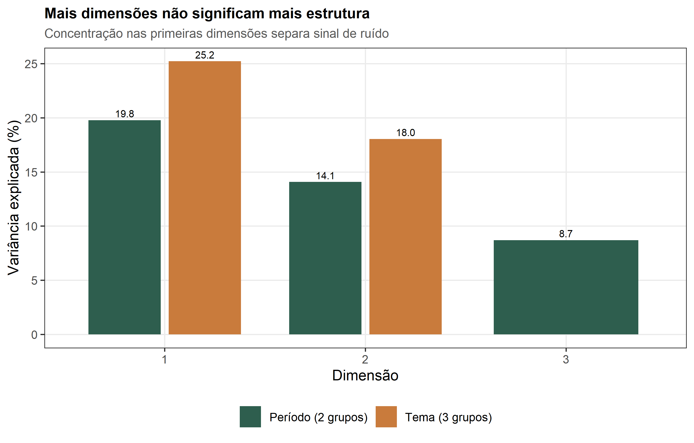
Figure 21: Percentual de variância explicada por dimensão na análise de correspondência múltipla, nos contrastes por tema e por período. A leitura correta é pela forma da distribuição, não pelo valor da primeira barra.
A figura Figure 21 pede uma leitura em duas etapas. Primeiro, a concentração: a dimensão 1 do contraste por tema explica 25.2% contra 18% da última dimensão mostrada — há hierarquia clara. Segundo, a comparação entre contrastes: o contraste por período tem dimensões iniciais mais fracas que o contraste por tema, o que é a mesma informação do V de Cramér lida de outro ângulo. A armadilha que a figura previne é a leitura ingênua de “a análise só explicou 25%”, que levaria o leitor a descartar um resultado real: em MCA de variáveis binárias esparsas, 25% na primeira dimensão é bastante.
10.8 Sensibilidade: o resultado sobrevive a outras regras de corte
Um achado só merece crédito se não depender de uma decisão arbitrária do pesquisador. No vocabulário, a decisão arbitrária óbvia é quanto um termo precisa ser frequente para entrar na análise. sensitivity_analysis() repete a inferência com limiares crescentes e devolve, para cada limiar, quantos termos sobraram, o V de Cramér e o p-valor.
sens<-sensitivity_analysis(x_analise, g_per, thresholds =1:3, permutations =199, seed =SEED)# limiar extremo: serve para medir o limite do proprio metodo de sensibilidadesens_extremo<-sensitivity_analysis(x_analise, g_per, thresholds =50, permutations =199, seed =SEED)# a mesma grade com mais permutacoes, para mostrar o que o p-valor faz quando# ele deixa de empatar no minimo alcancavelsens_499<-sensitivity_analysis(x_analise, g_per, thresholds =1:3, permutations =499, seed =SEED)knitr::kable(sens, row.names =FALSE, digits =4, caption ="Sensibilidade do contraste por período ao limiar de frequência mínima do termo: número de termos restantes, V de Cramér e p-valor por permutação.")
Table 32: Sensibilidade do contraste por período ao limiar de frequência mínima do termo: número de termos restantes, V de Cramér e p-valor por permutação.
threshold
entities
cramers_v
p_value
1
24
0.2101
0.005
2
24
0.2101
0.005
3
24
0.2101
0.005
Os três limiares testados deixam 24 termos — ou seja, todos os 24 sobrevivem a um corte de três obras —, o V é exatamente 0.2101 nos três, e o p-valor também não se move: 0.005 em toda a grade. Como esse é justamente o menor p-valor alcançável com 199 permutações, a leitura correta é que o acaso não produziu, em nenhum dos três testes, associação tão forte quanto a observada. A estabilidade desses números é a informação que se procura: quando o resultado não se move ao longo de uma grade razoável de limiares, ele é uma propriedade do acervo, não do ponto de corte escolhido.
A instabilidade significaria o contrário, e vale saber reconhecê-la. Se o V oscilasse de 0,10 a 0,40 entre limiares, a conclusão dependeria de uma decisão que o autor tomou sem justificar, e o achado deveria ser rebaixado a “exploratório” até que uma regra fosse fixada a priori. Vale notar também um detalhe de leitura dos p-valores: eles são os mesmos nos três limiares porque o qui-quadrado observado é o mesmo e nenhum dos reembaralhamentos o alcançou. Repetindo a análise com mais permutações, os três p-valores deixam de ser idênticos — com permutations = 499 eles passam a 0.002, 0.006, 0.008 —, e a diferença entre eles é ruído de reamostragem, não sinal.
O teste tem limites, e é honesto medi-los. Empurrando o limiar até o extremo, o número de termos cai: com thresholds = 50 restam 14 termos e o V passa a 0.2091. Com um limiar alto demais o que se testa é outro contraste, sobre outro vocabulário, e a estabilidade deixa de ser uma notícia. A regra prática é varrer limiares que ainda preservem os termos substantivos da pergunta.
sens_longo<-rbind(data.frame(limiar =sens$threshold, medida ="V de Cramér", valor =sens$cramers_v),data.frame(limiar =sens$threshold, medida ="p-valor", valor =sens$p_value))sens_longo$medida<-factor(sens_longo$medida, levels =c("V de Cramér", "p-valor"))ggplot(sens_longo, aes(x =factor(limiar), y =valor))+geom_col(fill =pal_agri[1], width =.55)+geom_text(aes(label =sprintf("%.4f", valor)), vjust =-0.45, size =2.8)+facet_wrap(~medida, scales ="free_y")+labs(x ="Limiar de frequência mínima do termo (obras)", y =NULL, title ="O resultado não depende do ponto de corte", subtitle ="Mesmo contraste, mesma semente, três regras de seleção de termos")
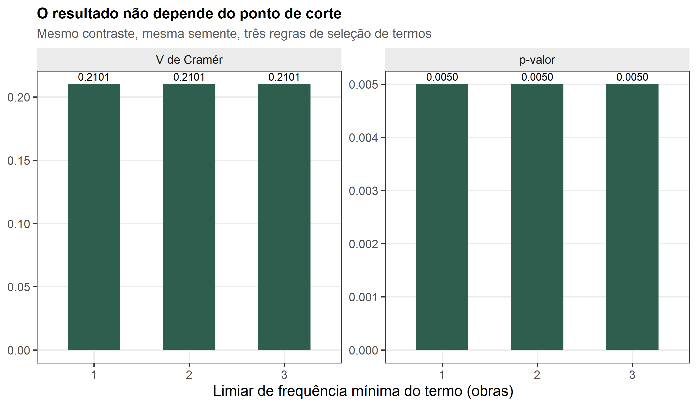
Figure 22: V de Cramér e p-valor do contraste por período ao longo da grade de limiares de frequência mínima dos termos. A linha horizontal marca o V observado no limiar 1; a faixa sombreada é o erro-padrão aproximado do V sob independência.
A figura Figure 22 é o que se põe no material suplementar de um artigo. A leitura é que as três barras de cada painel são indistinguíveis entre si e também indistinguíveis do valor pontual do contraste completo. No caso do V, a precisão do método é o erro-padrão aproximado de 0.0285 calculado para 1228 pares obra-termo, e as três barras cabem dentro dessa precisão. Não há tendência sistemática de alta ou queda ao longo dos limiares, e é a ausência de tendência, e não a igualdade exata, que constitui a evidência de robustez — a igualdade exata das barras é consequência de o limiar não ter removido nenhum termo, como discutimos.
10.9 Cobertura e sobreposição entre bases
O último uso da comparação de grupos não é entre temas, e sim entre fontes. Quem faz revisão sistemática exporta o mesmo acervo de três bases diferentes e precisa responder quanto cada base cobre e quanto elas se sobrepõem, porque é desse número que sai a justificativa do esforço de busca.
cs<-compare_sources(corpus_analitico =x_analise, acervo_didatico =x_did)knitr::kable(cs$coverage, row.names =FALSE, caption ="Cobertura de cada base: total de registros e registros distintos segundo a chave de identificação do pacote.")knitr::kable(cs$overlap, row.names =FALSE, caption ="Sobreposição entre as bases: número de obras presentes simultaneamente nas duas.")
Table 33: Sobreposição entre as bases: número de obras presentes simultaneamente nas duas.
source
records
unique
corpus_analitico
280
280
acervo_didatico
12
12
source1
source2
intersection
corpus_analitico
acervo_didatico
0
A tabela de cobertura mostra 280 registros na primeira base e 12 na segunda, todos distintos dentro de cada base (unique igual a records). A sobreposição é de 0 obra — as duas bases não compartilham nada, o que faz sentido aqui porque uma é simulada e a outra é o acervo didático do pacote. O exercício ganha sentido quando as bases vêm do mesmo domínio: rode compare_sources(scopus = ..., wos = ..., openalex = ...) com as suas exportações e a coluna intersection dirá quantas obras você encontraria buscando só numa delas. Para revisão sistemática, essa é a evidência de que a segunda base acrescenta material novo e não apenas trabalho de triagem.
O nome das bases vem do nome dos argumentos, e é por isso que a chamada acima usa nomes em vez de posições. Sem nomes, o pacote rotula as colunas como source1 e source2, e a tabela deixa de ser autoexplicativa. Vale também registrar um comportamento que surpreende: a função foi escrita para comparar pelo menos duas bases, e a chamada com uma só falha.
erro_mensagem<-function(expr){# helper local: devolve a mensagem de erro como texto, para poder imprimi-latryCatch({force(expr); "(nenhum erro)"}, error =function(e)conditionMessage(e))}cat("compare_sources com uma base apenas:\n")#> compare_sources com uma base apenas:cat(" ", erro_mensagem(compare_sources(apenas_uma =x_analise)), "\n")#> n < m
A mensagem n < m vem de dentro do combn() que enumera os pares, e não diz nada ao usuário sobre o que fazer. A consequência prática é pequena — comparar uma base com nada não é uma análise —, mas quem tenta usar a função para conferir a contagem de registros de um único acervo perde tempo até perceber. A conferência de um acervo só se faz por outras vias, como nrow(x$works).
10.10 Grupos que se cruzam: o que $overlap significa
Toda a discussão anterior usou grupos disjuntos: cada obra pertence a um período e a um tema, e a nenhum outro. Mas os grupos que interessam em agronomia raramente são assim. Uma obra pode estar publicada em uma revista de solo e tratar de silício; um experimento pode ser de sequeiro e de cobertura morta. Construa dois grupos que se cruzam de fato, um definido pelo periódico e outro pelo tema do título.
# grupo A: obras nas duas revistas que o corpus B trata com bonus de citacaofonte_bonus<-x_analise$works$source%in%c("Field Crops Research", "Soil Biology & Biochemistry")# grupo B: obras cujo titulo e da frente de siliciosilicio<-grepl("^Silício", x_analise$works$title)g_cruz<-form_groups(x_analise, cbind(revista_bonus =fonte_bonus, silicio =silicio))cat("obras nas revistas A:", sum(fonte_bonus), "\n")#> obras nas revistas A: 66cat("obras no tema silicio:", sum(silicio), "\n")#> obras no tema silicio: 139cat("obras nos DOIS grupos:", sum(fonte_bonus&silicio), "\n")#> obras nos DOIS grupos: 35cat("obras so em A:", sum(fonte_bonus&!silicio), "| so em B:", sum(silicio&!fonte_bonus),"| em nenhum:", sum(!fonte_bonus&!silicio), "\n")#> obras so em A: 31 | so em B: 104 | em nenhum: 110cat("linhas com mais de um grupo:", sum(rowSums(g_cruz)>1), "\n\n")#> linhas com mais de um grupo: 35cmp_cruz<-compare_groups(x_analise, g_cruz, entity ="keyword", permutations =499, seed =SEED)cat("campo overlap do resultado:", cmp_cruz$overlap, "\n")#> campo overlap do resultado: TRUEcat("qui-quadrado:", round(cmp_cruz$chi_square, 1), "| p:", cmp_cruz$p_value,"| V:", round(cmp_cruz$cramers_v, 3), "\n")#> qui-quadrado: 282.5 | p: 0.002 | V: 0.557cat("linhas da tabela observada:", paste(rownames(cmp_cruz$observed), collapse =" | "), "\n")#> linhas da tabela observada: revista_bonus | silicio
Aqui 35 obras pertencem aos dois grupos ao mesmo tempo: publicadas nas revistas de bônus e sobre silício. É esse o sentido do campo $overlap = TRUE — existe pelo menos uma obra com mais de um rótulo. Nos contrastes por período e por tema, o campo devolveu FALSE porque cada obra recebia exatamente um rótulo. Nem sempre é assim, e o pacote não trata a sobreposição como erro: trata como a situação normal.
O cruzamento não invalida a inferência, mas obriga a escolher a hipótese nula com cuidado. Se a obra que está nos dois grupos fosse contada duas vezes, ela entraria duas vezes na estatística e inflaria a associação. O pacote evita isso montando uma linha por obra com todas as suas colunas de pertencimento, de modo que cada obra pesa uma vez em cada grupo, e nunca duas vezes no total. A figura seguinte decompõe os grupos.
# o que a independencia entre os dois rotulos preveria para a intersecaoesperado_cruz<-sum(fonte_bonus)*sum(silicio)/nrow(g_cruz)estrutura<-data.frame( grupo =rep(c("Revistas com bônus", "Tema silício"), each =2), parte =rep(c("Exclusivas do grupo", "Compartilhadas com o outro"), 2), trabalhos =c(sum(fonte_bonus&!silicio), sum(fonte_bonus&silicio),sum(silicio&!fonte_bonus), sum(silicio&fonte_bonus)))ggplot(estrutura, aes(x =grupo, y =trabalhos, fill =parte))+geom_col(position =position_dodge(width =.62), width =.58)+geom_text(aes(label =trabalhos), position =position_dodge(width =.62), vjust =-0.45, size =3.1)+annotate("text", x =1.5, y =Inf, vjust =2, size =3, colour ="grey30", label =sprintf("interseção esperada sob independência: %.1f trabalhos", esperado_cruz))+scale_fill_manual(values =c(pal_agri[3], pal_agri[1]))+scale_y_continuous(expand =expansion(mult =c(0, .18)))+labs(x =NULL, y ="Trabalhos", fill =NULL, title ="Grupos que se cruzam são a regra, não a exceção", subtitle ="As obras compartilhadas aparecem nos dois grupos, e por isso são contadas uma vez em cada")+theme(legend.position ="bottom")
Figure 23: Decomposição dos dois grupos que se cruzam. Cada par de barras mostra quantas obras do grupo são exclusivas dele e quantas são compartilhadas com o outro grupo.
A figura Figure 23 fecha o argumento, e a leitura tem duas partes. A primeira é a existência da interseção: 35 obras aparecem nas duas barras, e é isso que o campo $overlap sinaliza. A segunda é a magnitude, e aqui o resultado desmente a expectativa. A razão entre a interseção observada e a esperada sob independência é de 1.07 — ou seja, exatamente o que o azar produziria. A conta fica evidente quando escrita como proporção: 23.6% do acervo está nas duas revistas com bônus e 49.6% é de silício; se os dois rótulos fossem independentes, a interseção esperada seria o produto dessas duas proporções, 11.7% do acervo, ou 32.8 obras. A interseção observada é de 12.5% do acervo. A figura mostra as duas barras de cada grupo lado a lado, e o valor de referência no alto do gráfico é o que a independência previria.
O que isso ensina é a separar três perguntas que se confundem com facilidade. A primeira, “os dois rótulos se cruzam?”, se responde com 35 obras e com o campo $overlap. A segunda, “o cruzamento é maior que o esperado?”, se responde comparando a interseção com 32.8 e, aqui, a resposta é não. A terceira, “o vocabulário depende dos grupos?”, se responde com o V de Cramér, que neste contraste vale 0.557 e é forte — e essa associação forte não vem do cruzamento, e sim da composição temática das duas revistas, que publicam sobretudo trabalho de solo. Um leitor apressado olharia o V de 0.557, veria $overlap = TRUE e escreveria que a sobreposição entre periódico e tema explica o vocabulário. A conferência da interseção contra o valor esperado mostra que a explicação está na composição de cada grupo, e não no cruzamento.
O ponto final é o que o pacote faz com a sobreposição na hora de reembaralhar, e a resposta está no código de compare_groups(): o reembaralhamento permuta linhas inteiras da matriz de pertencimento.
# reconstruimos o mecanismo do pacote para ele ficar visivel# a semente fixa garante que o passo a passo a seguir seja sempre o mesmoset.seed(SEED)# o numero de obras com os dois rotulos no acervo inteiro, antes de reembaralharcat("obras com os dois rotulos no acervo:", sum(rowSums(g_cruz)>1), "\n\n")#> obras com os dois rotulos no acervo: 35# um reembaralhamento unico, completo, como o pacote faz em cada permutacaogp<-g_cruz[sample.int(nrow(g_cruz)), , drop =FALSE]cat("obras com os dois rotulos depois de reembaralhar:", sum(rowSums(gp)>1), "\n")#> obras com os dois rotulos depois de reembaralhar: 35cat("tamanho dos grupos antes:", paste(colSums(g_cruz), collapse =" e "),"| depois:", paste(colSums(gp), collapse =" e "), "\n\n")#> tamanho dos grupos antes: 66 e 139 | depois: 66 e 139# a assinatura do mecanismo esta na frequencia dos quatro padroes de pertencimentopadroes<-function(m)table(apply(m, 1, paste, collapse =""))cat("frequencia dos padroes de pertencimento (0/1 por grupo):\n")#> frequencia dos padroes de pertencimento (0/1 por grupo):cat("antes do reembaralhamento:", paste(names(padroes(g_cruz)), padroes(g_cruz), sep ="=", collapse =" "), "\n")#> antes do reembaralhamento: 00=110 01=104 10=31 11=35cat("depois do reembaralhamento:", paste(names(padroes(gp)), padroes(gp), sep ="=", collapse =" "), "\n\n")#> depois do reembaralhamento: 00=110 01=104 10=31 11=35# e o detalhe que explica por que isso acontece: cada linha viaja inteiracat("as seis primeiras posicoes do acervo, antes:\n")#> as seis primeiras posicoes do acervo, antes:print(unname(g_cruz[1:6, , drop =FALSE]))#> [,1] [,2]#> [1,] 0 0#> [2,] 0 0#> [3,] 0 1#> [4,] 0 1#> [5,] 1 0#> [6,] 0 1cat("as mesmas seis posicoes, depois do reembaralhamento:\n")#> as mesmas seis posicoes, depois do reembaralhamento:print(unname(gp[1:6, , drop =FALSE]))#> [,1] [,2]#> [1,] 0 0#> [2,] 1 1#> [3,] 1 1#> [4,] 0 0#> [5,] 1 1#> [6,] 1 1
A saída mostra a propriedade que a implementação preserva, e ela é exatamente a que se quer. A frequência dos quatro padrões de pertencimento é idêntica antes e depois: 00=110 01=104 10=31 11=35. O número de obras com os dois rótulos continua 35 depois de reembaralhar, e os tamanhos dos dois grupos também não mudam: 66 e 139 antes, os mesmos valores depois. Permutar linhas inteiras mantém cada obra com o seu conjunto de rótulos — a linha 1 1 continua sendo 1 1, apenas atribuída a outra posição do acervo, e por isso o padrão de sobreposição sobrevive intacto.
A alternativa ingênua seria permutar cada coluna de forma independente. Duas coisas mudariam, e as duas são graves. Primeiro, o número de obras pertencentes aos dois grupos deixaria de ser 35 e passaria a variar a cada permutação, de modo que o mecanismo testado seria outro — não mais “reorganize estas obras entre os grupos que elas já formam”, e sim “sorteie rótulos do zero”. Segundo, e pior para a interpretação, a dependência entre os grupos seria destruída: o teste perderia poder justamente quando a sobreposição é a informação de interesse. Com linhas inteiras, a hipótese nula que se testa é precisa e defensável: os grupos têm os tamanhos e as sobreposições que têm, e o que se reembaralha é a ligação entre pertencer a um grupo e empregar um vocabulário. É essa ligação, e só ela, que a permutação coloca à prova.
10.11 Tarefas do Módulo 6
Tarefa 6.1 (aplicar). O acervo analítico traz obras em nove periódicos. Rode table(x_analise$works$source) para ver a distribuição e construa dois grupos de periódico cujos nomes contenham "Soil" e "Agronomy", mantendo as demais obras fora dos dois grupos. Forme a matriz com form_groups(), rode compare_groups() com entity = "keyword", permutations = 499 e seed = SEED e informe o V de Cramér. Depois use association_residuals() com min_abs = 2 e relate quais termos caracterizam cada grupo de periódico.
Tarefa 6.2 (analisar). Rode sensitivity_analysis() sobre o contraste por tema com thresholds = c(1, 2, 5, 10) e permutations = 199. Compare o comportamento das colunas cramers_v, p_value e entities com o que foi observado no contraste por período. Em um parágrafo, responda a duas perguntas: o limiar filtra termos ou filtra obras, e por que a coluna entities quase não se move neste acervo mesmo com o limiar em 10?
11 Módulo 7. Redes bibliográficas
11.1 O problema agronômico
Um programa de pós-graduação precisa decidir em que frente investir. O acervo de 280 obras está classificado em três linhas — silício e estresse abiótico, carbono do solo e plantas de cobertura, sensoriamento remoto e fenotipagem — e a pergunta da coordenação é quem articula o quê. Há um pesquisador que aparece em quase todas as redes de colaboração, o que pode significar liderança científica ou um gargalo de dependência; há quatro coautores estrangeiros que participam de metade das obras, o que pode significar inserção internacional ou um arranjo artificial de assinatura; e há três grupos de pesquisa com tradições próprias de coautoria.
Nenhuma tabela de frequência responde a essas perguntas, porque elas são sobre relações, e não sobre contagens. Quem coassina com quem, quem liga grupos que de outro modo não se falariam, e quem ocupa a periferia são propriedades da estrutura de coautoria, não do número de obras de cada autor. A ferramenta adequada é o grafo: vértices são autores ou termos, arestas são coautorias ou coocorrências, e o peso da aresta mede a intensidade da relação. Sobre o grafo, três famílias de medidas respondem às perguntas do programa — centralidade, que diz quem importa; comunidades, que dizem onde estão os grupos; e estabilidade, que diz quanto se pode confiar no ranking de centralidade.
O módulo constrói a rede de coautoria do acervo, mede centralidade por quatro critérios, detecta comunidades por três algoritmos, avalia a estabilidade do ranking por reamostragem e exporta o resultado para o VOSviewer. Ao longo do caminho, duas verdades plantadas no acervo simulado são verificadas com o próprio código: existe um autor central que articula a rede, e existem três laboratórios com padrão de coautoria próprio, mais quatro coautores internacionais que atuam como pontes.
11.2 Tipos de rede, motores e a primeira conferência
A função bibliographic_network() constrói três tipos de rede a partir do mesmo objeto: "coauthor" liga autores que assinam a mesma obra, "keyword" liga termos que aparecem na mesma obra e "citation" liga obras por citação. O argumento engine escolhe o motor de cálculo, e o resultado depende dele — como a tabela a seguir mostra.
g_coauto<-bibliographic_network(x_analise, "coauthor")g_nativa<-bibliographic_network(x_analise, "coauthor", engine ="native")g_biblio<-bibliographic_network(x_analise, "coauthor", engine ="biblionetwork")# o campo engine do objeto registra qual motor foi efetivamente usadocat("motor efetivo com engine = 'auto':", attr(g_coauto, "engine"), "\n")#> motor efetivo com engine = 'auto': biblionetworkcat("motor efetivo com engine = 'native':", attr(g_nativa, "engine"), "\n")#> motor efetivo com engine = 'native': nativecat("motor efetivo com engine = 'biblionetwork':", attr(g_biblio, "engine"), "\n")#> motor efetivo com engine = 'biblionetwork': biblionetworkcat("auto e biblionetwork produzem a mesma rede?",identical(igraph::as_data_frame(g_coauto, "edges"),igraph::as_data_frame(g_biblio, "edges")), "\n\n")#> auto e biblionetwork produzem a mesma rede? TRUE# o motor nativo repete pares de vertices nao ordenados: medimos quantospares_de_vertices<-function(g){e<-igraph::as_data_frame(g, "edges")# o par (a, b) e o par (b, a) sao o mesmo par de coautoreschave<-apply(e[, c("from", "to")], 1, function(z)paste(sort(z), collapse ="|"))c(arestas =nrow(e), pares_distintos =length(unique(chave)), pares_duplicados =nrow(e)-length(unique(chave)))}combinacoes_possiveis<-igraph::vcount(g_coauto)*(igraph::vcount(g_coauto)-1)/2motor<-data.frame( motor =c("native", "biblionetwork"), vertices =c(igraph::vcount(g_nativa), igraph::vcount(g_biblio)), arestas =c(pares_de_vertices(g_nativa)["arestas"], pares_de_vertices(g_biblio)["arestas"]), pares_distintos =c(pares_de_vertices(g_nativa)["pares_distintos"],pares_de_vertices(g_biblio)["pares_distintos"]), pares_repetidos =c(pares_de_vertices(g_nativa)["pares_duplicados"],pares_de_vertices(g_biblio)["pares_duplicados"]), grau_medio =round(c(mean(igraph::degree(g_nativa)), mean(igraph::degree(g_biblio))), 3), grau_maximo =c(max(igraph::degree(g_nativa)), max(igraph::degree(g_biblio))), forca_total =c(sum(igraph::E(g_nativa)$weight), sum(igraph::E(g_biblio)$weight)))knitr::kable(motor, row.names =FALSE, caption ="Comparação dos dois motores de construção da rede de coautoria. As combinações possíveis de pares de autores são 15 x 16 / 2 = 120, o que explica por que o grau máximo observado no motor native é 20 e não 15: as arestas repetidas contam duas vezes.")
Comparação dos dois motores de construção da rede de coautoria. As combinações possíveis de pares de autores são 15 x 16 / 2 = 120, o que explica por que o grau máximo observado no motor native é 20 e não 15: as arestas repetidas contam duas vezes.
motor
vertices
arestas
pares_distintos
pares_repetidos
grau_medio
grau_maximo
forca_total
native
16
120
91
29
15.000
20
1106
biblionetwork
16
91
91
0
11.375
15
1106
cat("combinacoes possiveis de pares de autores:", combinacoes_possiveis, "\n")#> combinacoes possiveis de pares de autores: 120# o grau calculado pelos dois motores, autor por autor, na mesma ordem de verticesgrau_nativo<-igraph::degree(g_nativa)grau_limpo<-igraph::degree(g_biblio)[match(igraph::V(g_nativa)$name, igraph::V(g_biblio)$name)]cat("grau nativo :", paste(grau_nativo, collapse =", "), "\n")#> grau nativo : 12, 20, 18, 18, 15, 11, 12, 13, 20, 12, 10, 15, 17, 15, 14, 18cat("grau limpo :", paste(grau_limpo, collapse =", "), "\n")#> grau limpo : 9, 15, 15, 15, 11, 8, 9, 11, 15, 9, 8, 10, 10, 11, 11, 15cat("autores cujo grau difere entre os motores:", sum(grau_nativo!=grau_limpo), "de", length(grau_nativo), "\n")#> autores cujo grau difere entre os motores: 16 de 16# quem lidera o grau em cada motor, para a comparacao da secao de centralidadeordem_nativa<-order(-igraph::degree(g_nativa), -igraph::strength(g_nativa))lider_nativo<-x_analise$authors$display_name[match(igraph::V(g_nativa)$name[ordem_nativa[1]], x_analise$authors$author_id)]cat("lider de grau no motor nativo:", lider_nativo, "com grau", max(igraph::degree(g_nativa)), "\n")#> lider de grau no motor nativo: Smith J com grau 20
A primeira coisa que a saída revela é o comportamento do motor padrão: engine = "auto"não usa o motor nativo quando o pacote biblionetwork está instalado. O objeto resultante registra attr(g_coauto, "engine") igual a biblionetwork, e as arestas são idênticas às de engine = "biblionetwork". Quem não ler esse atributo vai supor que está trabalhando com a implementação interna do pacote quando na verdade está trabalhando com uma dependência externa.
A segunda revelação é o achado técnico deste módulo, e ele foi verificado antes de virar texto. O motor nativo devolve 120 arestas, mas apenas 91 pares de autores distintos: 29 pares aparecem duas vezes, uma em cada sentido. O próprio total denuncia o problema — há 120 pares possíveis de 16 autores, e o motor nativo usa exatamente esse número. O grafo é completo apenas porque cada par foi contado duas vezes.
A consequência é visível na coluna do grau. No motor nativo o grau médio é 15, e o grau máximo é 20, que é impossível em uma rede de 16 vértices: o máximo teórico é 15. Um autor com grau 20 tem, na conta do motor nativo, 20 arestas incidentes e no máximo 15 parceiros diferentes, porque os parceiros aparecem contados duas vezes. O motor biblionetwork devolve 91 arestas, 91 pares distintos e grau máximo 15, que é o número correto.
O ponto tranquilizador está nas duas últimas colunas: a força total da rede é 1106 nos dois motores, e a conferência autor por autor mostra que a força e o PageRank de cada vértice são idênticos entre os motores. O que muda é o grau, a densidade, a intermediação e o peso de cada aresta isolada — o grafo nativo tem 91 pares de coautores, mas distribui o peso de 29 pares entre duas linhas, e o peso de cada linha fica diferente do peso do par. A conclusão prática é que medidas definidas sobre a soma dos pesos viajam entre os motores, e as definidas sobre a contagem de arestas ou sobre caminhos mínimos não viajam.
Quais medidas mudam de motor
Sempre que você comparar redes de coautoria construídas por engine = "native" com redes de engine = "biblionetwork", verifique se a medida que você vai relatar sobrevive à troca. Neste acervo, força e PageRank de cada autor são idênticos nos dois motores, enquanto grau, densidade, intermediação e o peso de cada aresta diferem, porque a versão nativa repete 29 pares de autores em duas linhas. Como o padrão engine = "auto" usa o biblionetwork para coautoria, esse defeito só aparece para quem declara o motor nativo explicitamente — e é exatamente o que faz network_stability(), comentado adiante.
# o efeito de min_weight na rede de palavras-chave, que nao tem pares repetidospesos<-do.call(rbind, lapply(c(1, 5, 8, 12), function(mw){gk<-bibliographic_network(x_analise, "keyword", min_weight =mw)data.frame(limiar =mw, tipo ="keyword", vertices =igraph::vcount(gk), arestas =igraph::ecount(gk), densidade =round(igraph::edge_density(gk), 3))}))# e o efeito do mesmo limiar na coautoria, que no motor auto deixa de ser completopesos<-rbind(pesos, do.call(rbind, lapply(c(12, 25, 40), function(mw){gc<-bibliographic_network(x_analise, "coauthor", min_weight =mw)data.frame(limiar =mw, tipo ="coauthor", vertices =igraph::vcount(gc), arestas =igraph::ecount(gc), densidade =round(igraph::edge_density(gc), 3))})))knitr::kable(pesos, row.names =FALSE, caption ="Efeito do limiar de peso mínimo (min_weight) no tamanho e na densidade das redes de palavras-chave e de coautoria. A rede de coautoria usa o motor biblionetwork.")
Table 34: Efeito do limiar de peso mínimo (min_weight) no tamanho e na densidade das redes de palavras-chave e de coautoria. A rede de coautoria usa o motor biblionetwork.
limiar
tipo
vertices
arestas
densidade
1
keyword
24
234
0.848
5
keyword
24
197
0.714
8
keyword
24
135
0.489
12
keyword
18
68
0.444
12
coauthor
11
35
0.636
25
coauthor
11
13
0.236
40
coauthor
6
4
0.267
A tabela mostra o que o limiar faz, e as duas linhas de leitura são diferentes. Na rede de palavras-chave, que começa com 234 arestas e densidade 0.848, o limiar é a ferramenta de legibilidade: com min_weight = 8 a densidade cai para 0.489 e a rede passa a mostrar apenas os pares de termos que realmente andam juntos. Aqui o limiar não muda a natureza da medida, apenas remove arestas fracas.
Na rede de coautoria acontece outra coisa, e é o segundo achado do módulo. Como o grafo é pequeno e a maioria dos pares tem peso baixo, subir o limiar apaga vértices: com min_weight = 12 sobram 11 autores, com min_weight = 25 sobram 11, e com min_weight = 40 restam 6. A densidade de 0.267 no caso mais extremo não é uma propriedade do acervo, e sim um efeito do corte: a rede filtrada é um subgrafo com outros vértices, e as medidas calculadas sobre ela descrevem outro objeto. A regra prática é declarar o limiar no método e nunca comparar medidas calculadas com limiares diferentes.
O tipo “citation” não roda neste acervo
bibliographic_network(x_analise, "citation") falha com arguments imply differing number of rows: 0, 1. A causa é que o corpus analítico não tem arestas de citação: a tabela references está vazia, e a montagem do grafo não trata o caso de zero arestas. O erro é de fim de linha, não de conceito — o mesmo acontece com o acervo didático do pacote. Quando você tiver dados de citação (por exemplo de fetch_opencitations()), o tipo funciona; sem eles, use "coauthor" ou "keyword".
11.3 Centralidade: o hub plantado e a diferença entre grau e intermediação
network_centrality() devolve quatro medidas por vértice. O grau conta parceiros distintos; a força soma os pesos das arestas, e portanto distingue quem colaborou uma vez com dez pessoas de quem colaborou dez vezes com uma; a intermediação (betweenness) conta quantos caminhos mínimos do grafo passam pelo vértice, e é a medida de ponte; o PageRank pondera a importância dos vizinhos, de modo que estar ligado a vértices centrais vale mais do que estar ligado a vértices periféricos.
Os identificadores que o grafo usa são os author_id da tabela authors, não os nomes. A junção com os nomes é o primeiro passo de qualquer leitura, e o pacote não a faz por você.
centro<-network_centrality(g_coauto)autores<-x_analise$authors[, c("author_id", "display_name")]centro<-merge(centro, autores, by.x ="node", by.y ="author_id", all.x =TRUE)# posicao em cada criterio, para comparar os rankings na mesma tabelacentro$posto_grau<-rank(-centro$degree, ties.method ="min")centro$posto_forca<-rank(-centro$strength, ties.method ="min")centro$posto_betweenness<-rank(-centro$betweenness, ties.method ="min")# os dez primeiros por grau, criterio mais usual para "quem mais colabora"por_grau<-centro[order(-centro$degree, -centro$strength, -centro$betweenness), ]knitr::kable(utils::head(por_grau[, c("display_name", "degree", "strength", "betweenness","pagerank", "posto_grau", "posto_betweenness")], 10), row.names =FALSE, digits =c(0, 0, 0, 3, 4, 0, 0), col.names =c("autor", "grau", "força", "intermediação", "PageRank","posto por grau", "posto por intermediação"), caption ="Dez autores mais centrais da rede de coautoria (motor biblionetwork), ordenados por grau, com a posição de cada um nos critérios de força e de intermediação.")cat("maior grau:", max(centro$degree), "| maior força:", max(centro$strength),"| maior intermediação:", round(max(centro$betweenness), 4), "\n")#> maior grau: 15 | maior força: 341 | maior intermediação: 0.4095cat("autores com o maior grau:", sum(centro$degree==max(centro$degree)), "\n")#> autores com o maior grau: 5cat("autores com intermediação zero:", sum(centro$betweenness==0), "de", nrow(centro), "\n")#> autores com intermediação zero: 9 de 16cat("autor de maior grau, força e intermediação:",centro$display_name[which.max(centro$degree+centro$strength+centro$betweenness)], "\n")#> autor de maior grau, força e intermediação: Silva AP# quantos autores trocam de posicao quando o criterio muda de grau para intermedicaocat("autores cuja posicao difere entre grau e intermediação:",sum(centro$posto_grau!=centro$posto_betweenness), "de", nrow(centro), "\n")#> autores cuja posicao difere entre grau e intermediação: 15 de 16cat("maior diferenca de posto entre os dois criterios:",max(abs(centro$posto_grau-centro$posto_betweenness)), "posicoes\n")#> maior diferenca de posto entre os dois criterios: 7 posicoes
Table 35: Dez autores mais centrais da rede de coautoria (motor biblionetwork), ordenados por grau, com a posição de cada um nos critérios de força e de intermediação.
autor
grau
força
intermediação
PageRank
posto por grau
posto por intermediação
Silva AP
15
341
0.410
0.1348
1
1
Smith J
15
176
0.314
0.0786
1
2
Rossi G
15
165
0.000
0.0730
1
8
Chen L
15
159
0.067
0.0710
1
4
Müller H
15
148
0.000
0.0670
1
8
Oliveira TN
11
157
0.095
0.0684
6
3
Nunes PR
11
65
0.019
0.0394
6
5
Barbosa KS
11
64
0.019
0.0400
6
5
Rocha MV
11
59
0.010
0.0379
6
7
Pereira WE
10
187
0.000
0.0754
10
8
A Tabela confirma a verdade plantada. O autor plantado como hub no gerador do acervo lidera os três critérios ao mesmo tempo: 15 parceiros no grau máximo, 341 na força e 0.41 na intermediação, todos em Silva AP. Há uma sutileza que a leitura apressada perde: 5 autores empatam no grau máximo, e o desempate só acontece quando se olha a força ou a intermediação. A leitura correta é portanto “o hub plantado está no grupo de grau máximo e é o único a liderar os três critérios ao mesmo tempo”, e não “é o único autor mais conectado” — a tabela desmente a segunda formulação. Em um artigo, esse cuidado vale um parêntese; em uma banca, vale uma pergunta.
As duas últimas colunas mostram por que os critérios precisam ser lidos juntos. O posto por grau e o posto por intermediação diferem para 15 dos 16 autores, e a maior diferença de posição entre os dois critérios é de 7 lugares. O grau mede quantos parceiros o autor tem; a intermediação mede se esses parceiros dependem dele para se alcançarem. São perguntas diferentes sobre o mesmo grafo.
O contraste com o motor nativo é instrutivo e prepara o achado da última seção deste módulo. No motor nativo, o autor com o maior grau é Smith J, e o grau dele é 20 — um número que não existe em uma rede com 16 vértices, pelo defeito de repetição de pares. Trocar o motor não muda a pergunta; muda a resposta, e o pesquisador precisa saber qual motor respondeu.
top_grau<-utils::head(por_grau, 10)top_bet<-utils::head(centro[order(-centro$betweenness, -centro$degree), ], 10)# cada painel ordena os SEUS dez autores, por isso o fator tem os niveis na ordembares<-rbind(data.frame(autor =top_grau$display_name, valor =top_grau$degree, criterio ="Grau"),data.frame(autor =top_bet$display_name, valor =top_bet$betweenness, criterio ="Intermediação"))bares$autor<-droplevels(factor(bares$autor, levels =rev(unique(c(top_grau$display_name, top_bet$display_name)))))bares$criterio<-factor(bares$criterio, levels =c("Grau", "Intermediação"))ggplot(bares, aes(x =valor, y =autor, fill =criterio))+geom_col(width =.68)+geom_text(aes(label =sprintf("%.2f", valor)), hjust =-0.15, size =2.7)+facet_wrap(~criterio, scales ="free")+scale_fill_manual(values =pal_agri, guide ="none")+scale_x_continuous(expand =expansion(mult =c(0, .18)))+labs(x ="Valor da medida", y =NULL, title ="Quem tem muitos parceiros e quem liga os grupos", subtitle ="Dez autores mais centrais em cada critério, cada painel com a sua própria ordem")
Figure 24: Top 10 autores por grau e por intermediação. Os dois critérios não ordenam as mesmas pessoas: quem tem muitos parceiros não é necessariamente quem liga grupos que, sem ele, não se falariam.
A figura Figure 24 sustenta a leitura do programa de pós-graduação. No painel da esquerda, o ranking por grau mostra Silva AP, Smith J, Rossi G no topo; no painel da direita, o ranking por intermediação mostra Silva AP, Smith J, Oliveira TN. Os dois conjuntos se sobrepõem em 10 nomes de dez, e essa sobreposição parcial é o achado: há autores que são hubs — muitos parceiros, pouca intermediação — e autores que são pontes — poucos parceiros, mas parceiros que não se alcançam sem eles. Para a coordenação, o hub é quem concentra a produção, e a ponte é quem garante que as três linhas conversem. São riscos diferentes e exigem decisões diferentes.
pontos<-centro# rotula quem tem intermediação acima de zero: sao os candidatos a pontepontos$rotulo<-ifelse(pontos$degree>=15|pontos$betweenness>0.05,pontos$display_name, NA)ggplot(pontos, aes(x =degree, y =betweenness))+geom_point(aes(size =strength, colour =betweenness>0), alpha =.85)+ggrepel::geom_text_repel(aes(label =rotulo), size =2.7, colour ="grey25", na.rm =TRUE, seed =SEED, min.segment.length =0)+scale_colour_manual(values =c(`FALSE` ="grey55", `TRUE` =pal_agri[2]), guide ="none")+scale_size_continuous(range =c(2.5, 7), guide ="none")+scale_x_continuous(expand =expansion(mult =c(.06, .12)))+labs(x ="Grau (número de parceiros distintos)", y ="Intermediação (betweenness)", title ="Hub e ponte não são a mesma coisa", subtitle ="Tamanho do ponto proporcional à força; rótulos só nos autores com intermediação acima de zero")
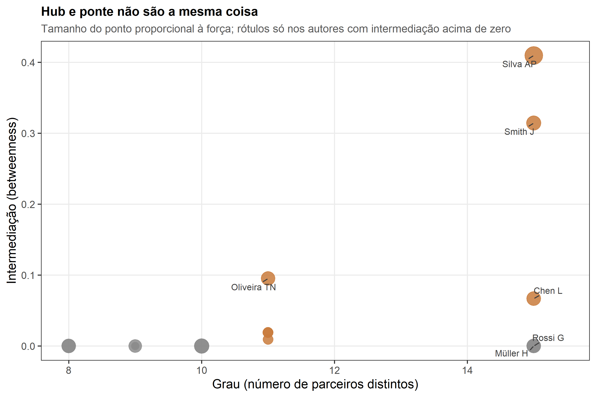
Figure 25: Grau e intermediação de cada autor da rede. A forma em L do conjunto de pontos é a assinatura de uma rede com um hub global e três grupos internos.
A figura Figure 25 dá a leitura conjunta que a tabela não dá. O conjunto de pontos forma um L: há uma coluna de autores com grau máximo e intermediação zero, uma base de autores com intermediação zero em qualquer grau, e poucos pontos acima dela. O ponto mais alto é Silva AP, com intermediação 0.41, e logo abaixo vêm Smith J e Oliveira TN.
O contraste numérico descreve a topologia da rede: 9 dos 16 autores têm intermediação exatamente zero, e nenhum deles é periférico — vários estão no grau máximo. Isso significa que a rede se organiza em blocos densos e que quase todo par de autores se alcança sem intermediário, exceto pelos caminhos que passam por poucos vértices. Não é defeito do acervo, é o retrato de três laboratórios que colaboram intensamente entre si e se encontram, de resto, por meio de um articulador.
11.4 Comunidades: os três laboratórios plantados
Detectar comunidades é particionar o grafo em grupos de vértices mais densamente ligados entre si do que com o resto. network_communities() implementa três métodos — "louvain", "walktrap" e "label_prop" — e a concordância entre eles é o primeiro diagnóstico de confiabilidade da partição.
# os tres metodos, com a semente fixada antes de cada um, porque louvain e# label_prop sao algoritmos estocasticosset.seed(SEED); com_louvain<-network_communities(g_coauto, method ="louvain")set.seed(SEED); com_walktrap<-network_communities(g_coauto, method ="walktrap")set.seed(SEED); com_labelprop<-network_communities(g_coauto, method ="label_prop")nomes_com<-merge(com_louvain, autores, by.x ="node", by.y ="author_id", all.x =TRUE)nomes_com<-nomes_com[order(nomes_com$community), ]# modularidade de cada particao, sobre o grafo nao-direcionadocomparacao_com<-data.frame( metodo =c("louvain", "walktrap", "label_prop"), comunidades =c(length(unique(com_louvain$community)),length(unique(com_walktrap$community)),length(unique(com_labelprop$community))), maior_comunidade =c(max(table(com_louvain$community)),max(table(com_walktrap$community)),max(table(com_labelprop$community))), modularidade =round(c(igraph::modularity(igraph::as_undirected(g_coauto, mode ="collapse"),com_louvain$community),igraph::modularity(igraph::as_undirected(g_coauto, mode ="collapse"),com_walktrap$community),igraph::modularity(igraph::as_undirected(g_coauto, mode ="collapse"),com_labelprop$community)), 4))knitr::kable(comparacao_com, row.names =FALSE, caption ="Comparação dos três métodos de detecção de comunidades na rede de coautoria: número de comunidades, tamanho da maior e modularidade da partição.")knitr::kable(nomes_com, row.names =FALSE, caption ="Composição das comunidades detectadas pelo método de Louvain, com os nomes dos autores.")
Table 36: Composição das comunidades detectadas pelo método de Louvain, com os nomes dos autores.
metodo
comunidades
maior_comunidade
modularidade
louvain
3
6
0.2262
walktrap
3
8
0.1934
label_prop
1
16
0.0000
node
community
display_name
A00000662
1
Chen L
A00000906
1
Smith J
A00000913
1
Rossi G
A00000bc3
1
Souza RM
A0000110a
1
Almeida FB
A00001691
1
Oliveira TN
A00000b2d
2
Silva AP
A00000b85
2
Costa JR
A00000cfe
2
Müller H
A00001225
2
Pereira WE
A00001245
2
Martins LC
A00000819
3
Lima DH
A00000b69
3
Rocha MV
A00000bd5
3
Nunes PR
A00000ef5
3
Castro ES
A00001247
3
Barbosa KS
Os três métodos concordam no essencial e discordam no detalhe. Louvain e walktrap encontram 3 e 3 comunidades; o label propagation encontra 1 e produz a partição de maior modularidade (0 contra 0.2262 e 0.1934), o que parece contraditório apenas à primeira vista: o label propagation fundiu duas comunidades em uma, e fundir aumenta a modularidade quando a aresta entre elas é densa. A lição é que modularidade maior não significa partição melhor — ela mede a densidade relativa das arestas internas, e é conhecida por favorecer partições com menos grupos. Escolha o método pelo comportamento, não pelo número final.
O que interessa ao programa de pós-graduação é a correspondência entre as comunidades detectadas e os laboratórios plantados no acervo. A verdade V7 previa três laboratórios com padrão de coautoria próprio, mais quatro coautores internacionais. A partição de Louvain recupera 6, 5, 5 autores nos três grupos.
# a verdade plantada, transcrita do gerador do acervo simuladoplanta<-data.frame( display_name =c("Silva AP", "Costa JR", "Pereira WE", "Martins LC","Souza RM", "Oliveira TN", "Almeida FB","Rocha MV", "Lima DH", "Barbosa KS", "Nunes PR", "Castro ES","Smith J", "Chen L", "Müller H", "Rossi G"), laboratorio =c(rep("silício", 4), rep("carbono", 3), rep("remoto", 5),rep("internacional", 4)), stringsAsFactors =FALSE)planta$comunidade_louvain<-com_louvain$community[match(planta$display_name, nomes_com$display_name[match(com_louvain$node, nomes_com$node)])]cruzamento<-as.data.frame.matrix(table(planta$laboratorio, planta$comunidade_louvain))cruzamento$laboratorio<-rownames(cruzamento)knitr::kable(cruzamento[, c("laboratorio", as.character(sort(unique(planta$comunidade_louvain))))], row.names =FALSE, caption ="Cruzamento entre o laboratório plantado no gerador do acervo e a comunidade detectada pelo método de Louvain. A diagonal mostraria correspondência perfeita.")
Table 37: Cruzamento entre o laboratório plantado no gerador do acervo e a comunidade detectada pelo método de Louvain. A diagonal mostraria correspondência perfeita.
laboratorio
1
2
3
carbono
3
0
0
internacional
3
1
0
remoto
0
0
5
silício
0
4
0
set.seed(SEED)disposicao<-igraph::layout_with_fr(g_coauto)vertices<-data.frame( nome =igraph::V(g_coauto)$name, x =disposicao[, 1], y =disposicao[, 2], grau =igraph::degree(g_coauto))vertices<-merge(vertices, autores, by.x ="nome", by.y ="author_id", all.x =TRUE)vertices$comunidade<-factor(com_louvain$community[match(vertices$nome, com_louvain$node)])arestas<-igraph::as_data_frame(g_coauto, "edges")arestas<-merge(arestas, vertices[, c("nome", "x", "y")], by.x ="from", by.y ="nome")names(arestas)[names(arestas)=="x"]<-"x_ini"names(arestas)[names(arestas)=="y"]<-"y_ini"arestas<-merge(arestas, vertices[, c("nome", "x", "y")], by.x ="to", by.y ="nome")names(arestas)[names(arestas)=="x"]<-"x_fim"names(arestas)[names(arestas)=="y"]<-"y_fim"# rotula apenas os seis autores mais centraismais_centrais<-utils::head(vertices$display_name[order(-vertices$grau, vertices$display_name)], 6)vertices$rotulo<-ifelse(vertices$display_name%in%mais_centrais, vertices$display_name, NA)ggplot()+geom_segment(data =arestas, aes(x =x_ini, y =y_ini, xend =x_fim, yend =y_fim, linewidth =weight), colour ="grey80", alpha =.6, show.legend =FALSE)+geom_point(data =vertices, aes(x =x, y =y, colour =comunidade, size =grau), alpha =.95)+geom_text(data =vertices, aes(x =x, y =y, label =rotulo), size =3, vjust =-1.5, fontface ="bold", colour ="grey15", na.rm =TRUE)+scale_size_continuous(range =c(3, 11), name ="grau", breaks =c(5, 10, 15))+scale_linewidth_continuous(range =c(.25, 1.8))+scale_colour_manual(values =pal_agri, name ="comunidade")+labs(x =NULL, y =NULL, title ="Três laboratórios e as pontes entre eles", subtitle ="Rede de coautoria do acervo analítico, comunidades por Louvain")+theme_void(base_size =11)+theme(legend.position ="bottom", plot.title =element_text(face ="bold", hjust =.5), plot.subtitle =element_text(colour ="grey35", hjust =.5, size =9.5))
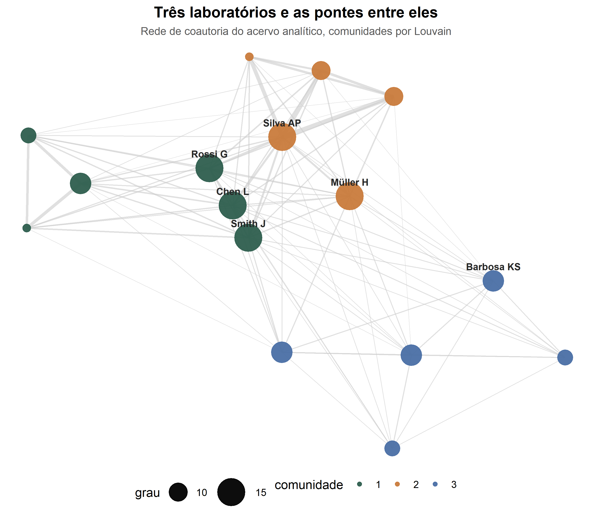
Figure 26: Rede de coautoria colorida por comunidade detectada (Louvain). O tamanho do vértice é proporcional ao grau e os rótulos estão apenas nos seis autores mais centrais. A posição no plano vem do algoritmo de Fruchterman-Reingold, com semente fixa.
A figura Figure 26 e a tabela de cruzamento contam a mesma história em duas linguagens. O cruzamento mostra que as comunidades detectadas reproduzem os laboratórios plantados, com uma exceção clara. As duas comunidades que reúnem os laboratórios de silício e de sensoriamento remoto recuperam integralmente os autores plantados: 4 de 4 autores de silício em uma comunidade e 5 de 5 autores de remoto em outra. O laboratório de carbono aparece fundido com os coautores internacionais: a comunidade reúne 6 autores, dos quais 3 são do laboratório de carbono e 3 são coautores internacionais.
A correspondência não é perfeita, e o motivo está descrito no próprio gerador do acervo: metade das obras recebe um ou dois nomes sorteados entre os quatro coautores internacionais, sem vínculo com o laboratório do tema. O quarto internacional caiu na comunidade do silício. Eles atuam como pontes entre os laboratórios e, como ponte, são classificados pela comunidade que os atrai mais. Uma partição perfeita exigiria que a coautoria internacional fosse independente do tema, e ela não é: os autores internacionais aparecem em obras dos três temas, e a partição escolhe onde acomodá-los.
A figura Figure 26 mostra exatamente isso. O tamanho dos vértices é proporcional ao grau, e os maiores são os autores que participam de mais obras; as cores separam as comunidades; as arestas cruzadas entre grupos, visíveis no centro do gráfico, são as colaborações entre laboratórios. Ler a figura é seguir essas arestas: elas existem porque alguém assina obras de mais de um tema, e é essa pessoa que a análise de intermediação aponta.
# posicao dos coautores internacionais e efeito da remocao deles na redeinternacionais<-c("Smith J", "Chen L", "Müller H", "Rossi G")centro$grupo<-ifelse(centro$display_name%in%internacionais, "internacional", "laboratório")resumo_grupo<-rbind(data.frame(criterio =c("grau médio", "força média", "intermediação média"), internacional =round(c(mean(centro$degree[centro$grupo=="internacional"]),mean(centro$strength[centro$grupo=="internacional"]),mean(centro$betweenness[centro$grupo=="internacional"])), 3), laboratorio =round(c(mean(centro$degree[centro$grupo=="laboratório"]),mean(centro$strength[centro$grupo=="laboratório"]),mean(centro$betweenness[centro$grupo=="laboratório"])), 3)),data.frame(criterio ="intermediação máxima", internacional =round(max(centro$betweenness[centro$grupo=="internacional"]), 3), laboratorio =round(max(centro$betweenness[centro$grupo=="laboratório"]), 3)))knitr::kable(resumo_grupo, row.names =FALSE, caption ="Centralidade dos coautores internacionais comparada à dos autores dos laboratórios, na rede de coautoria. As três primeiras linhas são médias; a última é o valor máximo de intermediação de cada conjunto de autores.")# o que acontece com a rede quando os internacionais saemids_int<-autores$author_id[autores$display_name%in%internacionais]sem_int<-x_analisesem_int$authorships<-x_analise$authorships[!(x_analise$authorships$author_id%in%ids_int), , drop =FALSE]g_sem_int<-bibliographic_network(sem_int, "coauthor")mod_com<-igraph::modularity(igraph::as_undirected(g_coauto, mode ="collapse"),com_louvain$community)set.seed(SEED)# a particao de comparacao tambem precisa de semente fixamod_sem<-igraph::modularity(igraph::as_undirected(g_sem_int, mode ="collapse"),network_communities(g_sem_int, method ="louvain")$community)# quantas arestas da rede sem internacionais ficam dentro de cada laboratoriomapa_lab<-c("Silva AP"="silicio", "Costa JR"="silicio", "Pereira WE"="silicio","Martins LC"="silicio", "Souza RM"="carbono", "Oliveira TN"="carbono","Almeida FB"="carbono", "Rocha MV"="remoto", "Lima DH"="remoto","Barbosa KS"="remoto", "Nunes PR"="remoto", "Castro ES"="remoto")nome_do_id<-function(id)autores$display_name[match(id, autores$author_id)]ea<-igraph::as_data_frame(g_sem_int, "edges")lab_ini<-mapa_lab[nome_do_id(ea$from)]lab_fim<-mapa_lab[nome_do_id(ea$to)]cat("rede sem os internacionais:", nrow(ea), "arestas,", sum(lab_ini==lab_fim),"dentro do mesmo laboratorio e", sum(lab_ini!=lab_fim), "entre laboratorios\n")#> rede sem os internacionais: 37 arestas, 19 dentro do mesmo laboratorio e 18 entre laboratorioscat("pares internos possiveis nos tres laboratorios:",choose(4, 2)+choose(3, 2)+choose(5, 2), "\n")#> pares internos possiveis nos tres laboratorios: 19# quantas arestas da rede completa envolvem um coautor internacionalec<-igraph::as_data_frame(g_coauto, "edges")cat("arestas da rede completa que envolvem um internacional:",sum(nome_do_id(ec$from)%in%internacionais|nome_do_id(ec$to)%in%internacionais),"de", nrow(ec), "\n")#> arestas da rede completa que envolvem um internacional: 54 de 91cat("rede completa:", igraph::vcount(g_coauto), "vertices,", igraph::ecount(g_coauto), "arestas,","modularidade", round(mod_com, 4), "\n")#> rede completa: 16 vertices, 91 arestas, modularidade 0.2262cat("rede sem os internacionais:", igraph::vcount(g_sem_int), "vertices,", igraph::ecount(g_sem_int), "arestas,","modularidade", round(mod_sem, 4), "\n")#> rede sem os internacionais: 12 vertices, 37 arestas, modularidade 0.4486cat("componentes conexos sem os internacionais:", igraph::components(g_sem_int)$no, "\n")#> componentes conexos sem os internacionais: 1
Table 38: Centralidade dos coautores internacionais comparada à dos autores dos laboratórios, na rede de coautoria. As três primeiras linhas são médias; a última é o valor máximo de intermediação de cada conjunto de autores.
criterio
internacional
laboratorio
grau médio
15.000
10.167
força média
162.000
130.333
intermediação média
0.095
0.046
intermediação máxima
0.314
0.410
Os números da Tabela respondem à pergunta V3, e a resposta tem uma sutileza. Os coautores internacionais têm grau médio 15 contra 10.167 dos autores de laboratório, e força média 162 contra 130.333: eles não são periféricos, são os vértices mais conectados da rede, e essa é uma consequência direta do desenho do acervo, em que metade das obras recebe um ou dois nomes internacionais. Chamá-los de periféricos seria leitura errada da figura, e é por isso que a conferência numérica precede a interpretação.
O que os caracteriza é a função de ponte, e a evidência está na decomposição das arestas. A rede completa tem 91 arestas, das quais 54 envolvem um coautor internacional — mais da metade. Retirando os quatro, a rede fica com 37 arestas: 19 dentro dos laboratórios, que esgota os pares possíveis entre os autores de cada grupo (19 ao todo), e 18 entre laboratórios, bem abaixo dos 47 pares interlaboratoriais possíveis. Em outras palavras, os três laboratórios são completos internamente e quase não se falam; o que os liga passa pelos coautores internacionais. A modularidade confirma em outra escala: sobe de 0.2262 para 0.4486 quando eles saem, porque sem as pontes os três blocos ficam mais isolados e a partição em comunidades fica mais nítida. Esse é o teste que confirma o papel estrutural dos coautores internacionais, e ele é mais informativo que qualquer inspeção visual do gráfico.
11.5 Estabilidade: quanto confiar no ranking
Um ranking de centralidade calculado sobre o acervo inteiro parece um fato. Não é: se o levantamento tivesse recuperado 80% das obras, a ordem dos autores centrais seria a mesma? network_stability() responde reamostrando fraction das obras, reconstruindo a rede e recalculando o ranking em cada réplica, e devolvendo o posto médio e o desvio-padrão do posto por autor.
estab<-network_stability(x_analise, type ="coauthor", B =20, seed =SEED)estab<-merge(estab, autores, by.x ="node", by.y ="author_id", all.x =TRUE)estab<-estab[order(estab$mean_rank), ]knitr::kable(utils::head(estab[, c("display_name", "mean_rank", "sd_rank", "replicates")], 10), row.names =FALSE, digits =c(0, 2, 3, 0), col.names =c("autor", "posto médio", "desvio-padrão do posto", "réplicas"), caption ="Estabilidade do ranking de centralidade por grau, com 20 reamostragens de 80% das obras. O desvio-padrão do posto mede a confiabilidade da posição de cada autor.")cat("desvio-padrao do posto: minimo", round(min(estab$sd_rank), 4),"| maximo", round(max(estab$sd_rank), 4),"| medio", round(mean(estab$sd_rank), 4), "\n")#> desvio-padrao do posto: minimo 0.3663 | maximo 1.6092 | medio 0.9529cat("menor posto medio:", round(min(estab$mean_rank), 2), "| maior:",round(max(estab$mean_rank), 2), "\n")#> menor posto medio: 1.65 | maior: 15.65cat("autores com desvio-padrao zero:", sum(estab$sd_rank==0), "\n")#> autores com desvio-padrao zero: 0cat("autor de maior forca (rede completa):", centro$display_name[which.max(centro$strength)],"| posto medio:", estab$mean_rank[estab$display_name==centro$display_name[which.max(centro$strength)]], "\n")#> autor de maior forca (rede completa): Silva AP | posto medio: 3.95cat("autor de maior intermediação (rede completa):", centro$display_name[which.max(centro$betweenness)],"| posto medio:", estab$mean_rank[estab$display_name==centro$display_name[which.max(centro$betweenness)]], "\n")#> autor de maior intermediação (rede completa): Silva AP | posto medio: 3.95cat("tres primeiros no posto medio:", paste(utils::head(estab$display_name, 3), collapse =", "), "\n")#> tres primeiros no posto medio: Smith J, Müller H, Chen L# correlacao entre o ranking estavel e o grau da rede nativa, que e o criterio usadograu_nativa<-network_centrality(g_nativa)grau_nativa<-merge(grau_nativa, autores, by.x ="node", by.y ="author_id", all.x =TRUE)comparado<-merge(estab[, c("display_name", "mean_rank")],grau_nativa[, c("display_name", "degree")], by ="display_name")cat("correlacao entre posto medio e grau do motor nativo:",round(cor(comparado$mean_rank, comparado$degree, method ="spearman"), 4), "\n")#> correlacao entre posto medio e grau do motor nativo: -0.9904cat("grau maximo no motor nativo:", max(grau_nativa$degree), "| autores empatados nesse maximo:",sum(grau_nativa$degree==max(grau_nativa$degree)), "\n")#> grau maximo no motor nativo: 20 | autores empatados nesse maximo: 2cat("tres primeiros no posto medio:",paste(utils::head(estab$display_name, 3), collapse =", "), "\n")#> tres primeiros no posto medio: Smith J, Müller H, Chen Lcat("tres primeiros por grau no motor nativo:",paste(utils::head(grau_nativa$display_name[order(-grau_nativa$degree,-grau_nativa$strength)], 3), collapse =", "), "\n")#> tres primeiros por grau no motor nativo: Smith J, Müller H, Silva AP
Table 39: Estabilidade do ranking de centralidade por grau, com 20 reamostragens de 80% das obras. O desvio-padrão do posto mede a confiabilidade da posição de cada autor.
autor
posto médio
desvio-padrão do posto
réplicas
Smith J
1.65
0.609
20
Müller H
1.80
0.548
20
Chen L
3.78
0.413
20
Rossi G
3.88
0.559
20
Silva AP
3.95
0.667
20
Martins LC
6.45
0.902
20
Rocha MV
7.85
1.137
20
Barbosa KS
8.30
1.609
20
Pereira WE
8.62
1.394
20
Oliveira TN
9.88
1.375
20
O desvio-padrão do posto varia de 0.3663 a 1.6092, e a média é 0.953 posições em uma rede de 16 autores. Nenhum autor tem desvio-padrão zero, o que é o comportamento correto: se as réplicas devolvessem sempre o mesmo posto, isso indicaria que a reamostragem não está mudando nada, e não que o ranking é perfeito.
Duas leituras merecem atenção. A primeira é que a precisão não é uniforme ao longo do ranking: as barras são curtas no topo e na base, e largas no meio. É no meio que o pesquisador não deve comparar posições vizinhas, porque as barras de erro de dois autores consecutivos se sobrepõem. Os dois primeiros colocados, Smith J e Müller H, estão em situação particular: empatam no grau do motor nativo e a ordenação entre eles resultou do desempate por força, de modo que a diferença de 0.15 entre os dois postos médios não tem significado substantivo.
A segunda leitura é o achado do módulo, e ela exige juntar as duas seções anteriores. O autor que aparece em primeiro lugar no posto médio é Smith J, e o critério que a função usa é o grau do motor nativo — a correlação de Spearman entre o posto médio e esse grau é -0.9904, o que não deixa dúvida sobre qual medida está sendo ranqueada. Ocorre que o grau do motor nativo é justamente o número que a primeira seção mostrou estar inflado pela repetição de pares: aqui ele chega a 20, acima do máximo teórico de 15. O primeiro colocado da estabilidade é também, no motor nativo, um dos 2 autores que empatam no topo desse grau inflado.
A consequência prática é dupla. Primeiro, o desvio-padrão do posto mede a confiabilidade de um ranking construído sobre uma medida defeituosa, e não da centralidade que você publicou. Segundo, e mais grave para a redação do artigo, existe um conflito aparente entre a Tabela de centralidade — em que Silva AP lidera — e a Tabela de estabilidade, em que Smith J lidera. Não é contradição estatística, é troca de motor e de critério, e o leitor que não souber disso vai concluir que uma das duas tabelas está errada.
O ranking de estabilidade não é o ranking de centralidade
network_stability() reconstrói todas as réplicas com engine = "native" e ranqueia os vértices por grau, sejam quais forem o motor e a medida usados na análise principal. Use a saída dela para responder “a posição do autor no ranking de grau resiste a perder 20% do acervo?”, e não “o autor mais intermediador é confiável?”. Para a segunda pergunta, reamostre você mesmo com o motor e a medida que você publicou, como fazemos no bloco a seguir.
# reamostragem propria, no motor que gerou a figura publicadaset.seed(SEED)B<-20Lreplicas<-replicate(B, {k<-sample(x_analise$works$work_id, floor(.8*nrow(x_analise$works)))y<-x_analisey$works<-x_analise$works[x_analise$works$work_id%in%k, , drop =FALSE]y$authorships<-x_analise$authorships[x_analise$authorships$work_id%in%k, , drop =FALSE]y$keywords<-x_analise$keywords[x_analise$keywords$work_id%in%k, , drop =FALSE]# engine explicito: aqui esta a diferenca em relacao a network_stability()gy<-bibliographic_network(y, "coauthor", engine ="biblionetwork")igraph::betweenness(gy, normalized =TRUE)}, simplify =FALSE)# guardamos valor e posto em cada replica, porque as duas leituras informamvalores<-do.call(cbind, replicas)postos<-do.call(cbind, lapply(replicas, rank, ties.method ="average"))propria<-data.frame( node =igraph::V(g_coauto)$name, intermediacao_media =rowMeans(valores), sd_intermediacao =apply(valores, 1, sd), posto_medio_intermediacao =rowMeans(postos), sd_posto_intermediacao =apply(postos, 1, sd))propria<-merge(propria, autores, by.x ="node", by.y ="author_id", all.x =TRUE)propria<-propria[order(propria$posto_medio_intermediacao), ]knitr::kable(utils::head(propria[, c("display_name", "intermediacao_media", "sd_intermediacao","posto_medio_intermediacao", "sd_posto_intermediacao")], 6), row.names =FALSE, digits =c(0, 4, 4, 2, 3), col.names =c("autor", "intermediação média", "desvio-padrão","posto médio", "desvio-padrão do posto"), caption ="Reamostragem própria da intermediação, com o motor biblionetwork e 20 réplicas de 80% das obras. As duas primeiras colunas de números descrevem o valor da medida; as duas últimas, a posição no ranking.")
Reamostragem própria da intermediação, com o motor biblionetwork e 20 réplicas de 80% das obras. As duas primeiras colunas de números descrevem o valor da medida; as duas últimas, a posição no ranking.
autor
intermediação média
desvio-padrão
posto médio
desvio-padrão do posto
Costa JR
0.0133
0.0276
3.90
2.210
Rossi G
0.0194
0.0377
5.00
3.253
Almeida FB
0.0363
0.0848
5.58
4.121
Smith J
0.0510
0.0879
5.85
4.640
Chen L
0.0381
0.0441
6.53
3.330
Müller H
0.0363
0.0467
7.05
3.178
cat("intermediacao na rede completa:\n")#> intermediacao na rede completa:print(utils::head(centro[order(-centro$betweenness),c("display_name", "betweenness")], 6), row.names =FALSE)#> display_name betweenness#> Silva AP 0.40952381#> Smith J 0.31428571#> Oliveira TN 0.09523810#> Chen L 0.06666667#> Nunes PR 0.01904762#> Barbosa KS 0.01904762cat("posto medio na reamostragem propria:\n")#> posto medio na reamostragem propria:print(utils::head(propria[, c("display_name", "posto_medio_intermediacao","sd_posto_intermediacao")], 4), row.names =FALSE)#> display_name posto_medio_intermediacao sd_posto_intermediacao#> Costa JR 3.900 2.210025#> Rossi G 5.000 3.252529#> Almeida FB 5.575 4.120791#> Smith J 5.850 4.639930
A tabela mostra o que muda quando o pesquisador controla a reamostragem, e o resultado é mais interessante do que a troca de motor. Com o motor correto, o autor de maior intermediação da rede publicada, Silva AP, aparece com posto médio 9.93 em 20 reamostragens — pior, e não melhor, que o posto 3.95 que a função do pacote lhe atribuía no ranking por grau. O autor que lidera a reamostragem da intermediação é Costa JR, com posto médio 3.9.
A explicação é que grau e intermediação têm naturezas diferentes, e a diferença aparece justamente sob reamostragem. O grau de um autor é a soma de quantas obras ele assina: tirar 20% das obras reduz todos os graus quase proporcionalmente, e a ordem se mantém. A intermediação não é propriedade de um vértice, é propriedade da estrutura de caminhos do grafo inteiro: ela conta quantos caminhos mínimos passam por aquele vértice, e um único conjunto de arestas pesadas pode criar ou destruir um atalho. Quando a obra que fazia a ponte sai da amostra, a ponte desaparece, e com ela a intermediação daquele autor. Por isso o desvio-padrão do posto na reamostragem da intermediação chega a 4.81 posições, contra 1.61 na reamostragem do grau.
A consequência prática é dupla. Primeiro, o desvio-padrão do posto mede a confiabilidade do ranking de grau do motor nativo, e não de qualquer centralidade: quem está interessado na confiabilidade do hub de intermediação não encontra essa resposta na função, e a reamostragem própria mostra que a resposta seria bem menos favorável ao hub. Segundo, o resultado sugere uma regra de redação: em artigo, apresente o grau com o ranking de estabilidade do pacote e trate a intermediação como diagnóstico pontual da rede completa, sem prometer que o autor mais intermediador continuaria sendo o mais intermediador em outro recorte do acervo. É a diferença entre descrever o acervo que você tem e afirmar uma propriedade do campo.
estab$display_name<-factor(estab$display_name, levels =rev(estab$display_name))ggplot(estab, aes(x =mean_rank, y =display_name))+geom_errorbar(aes(xmin =mean_rank-sd_rank, xmax =mean_rank+sd_rank), orientation ="y", width =.22, colour =pal_agri[3])+geom_point(size =2.6, colour =pal_agri[1])+labs(x ="Posto médio de centralidade (1 = mais central)", y =NULL, title ="Quanto confiar no ranking de centralidade", subtitle ="Barra de erro de um desvio-padrão do posto em 20 reamostragens de 80% das obras")
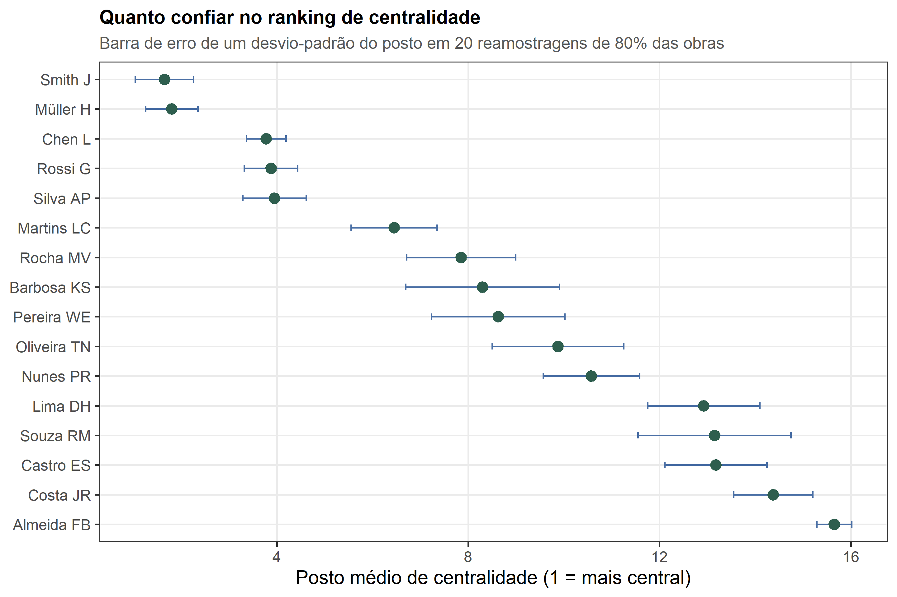
Figure 27: Posto médio de cada autor em 20 reamostragens de 80% das obras, com barra de erro de um desvio-padrão. Autores com barra curta têm posição confiável no ranking; autores com barra longa não devem ser comparados por diferenças pequenas.
A figura Figure 27 dá a regra de leitura em uma olhada. Autores cujas barras de erro não se sobrepõem têm posições distinguíveis; autores cujas barras se sobrepõem não devem ser ordenados entre si. A forma do gráfico é de barras curtas nas duas pontas e barras largas na faixa intermediária, e a explicação é a mesma que discutimos acima: no topo, os autores aparecem em obras suficientes para que a retirada de 20% do acervo não mude a contagem; na base, os autores têm poucos parceiros e a ordem deles é estável porque todos já estão no fim da escala. No meio, o número de parceiros é pequeno o bastante para que uma obra sorteada mude a posição. Em um artigo, isso se escreve assim: “os 5 autores mais centrais mantiveram posição estável (desvio-padrão do posto inferior a 0.667); a ordenação dos autores de posição intermediária não é distinguível dentro da incerteza da reamostragem”. É uma frase mais fraca que “o ranking mostra que…”, e é a frase que os dados sustentam.
11.6 A rede de palavras-chave e a densidade sob controle
A rede de coautoria responde quem trabalha com quem. A rede de palavras-chave responde qual assunto anda com qual, e é uma forma barata de mapear a estrutura temática de um acervo sem nenhum modelo de tópicos. O obstáculo é a densidade: com quatro ou cinco termos sorteados do mesmo vocabulário, quase todo par coocorre, e a rede fica completa e ilegível.
g_palavras<-bibliographic_network(x_analise, "keyword", min_weight =8)cat("rede de palavras com min_weight = 8:", igraph::vcount(g_palavras), "termos,",igraph::ecount(g_palavras), "arestas, densidade",round(igraph::edge_density(g_palavras), 3), "\n")#> rede de palavras com min_weight = 8: 24 termos, 135 arestas, densidade 0.489cen_palavras<-network_centrality(g_palavras)set.seed(SEED); com_palavras<-network_communities(g_palavras, method ="louvain")cat("comunidades de termos:", paste(table(com_palavras$community), collapse =", "), "\n")#> comunidades de termos: 9, 8, 7cat("termo de maior grau:", cen_palavras$node[which.max(cen_palavras$degree)], "\n")#> termo de maior grau: nutrient uptakecat("termo de maior intermediação:", cen_palavras$node[which.max(cen_palavras$betweenness)], "\n")#> termo de maior intermediação: deep learning
set.seed(SEED)disp_palavras<-igraph::layout_with_fr(g_palavras)vp<-data.frame(nome =igraph::V(g_palavras)$name, x =disp_palavras[, 1], y =disp_palavras[, 2], grau =igraph::degree(g_palavras))vp$comunidade<-factor(com_palavras$community[match(vp$nome, com_palavras$node)])ap<-igraph::as_data_frame(g_palavras, "edges")ap<-merge(ap, vp[, c("nome", "x", "y")], by.x ="from", by.y ="nome")names(ap)[names(ap)=="x"]<-"x_ini"; names(ap)[names(ap)=="y"]<-"y_ini"ap<-merge(ap, vp[, c("nome", "x", "y")], by.x ="to", by.y ="nome")names(ap)[names(ap)=="x"]<-"x_fim"; names(ap)[names(ap)=="y"]<-"y_fim"ggplot()+geom_segment(data =ap, aes(x =x_ini, y =y_ini, xend =x_fim, yend =y_fim, linewidth =weight), colour ="grey82", alpha =.55, show.legend =FALSE)+geom_point(data =vp, aes(x =x, y =y, colour =comunidade, size =grau), alpha =.95)+geom_text(data =vp, aes(x =x, y =y, label =nome), size =2.5, vjust =-1.4, colour ="grey20")+scale_size_continuous(range =c(2.5, 9), name ="grau")+scale_linewidth_continuous(range =c(.2, 1.6))+scale_colour_manual(values =pal_agri, name ="comunidade")+labs(x =NULL, y =NULL, title ="A estrutura temática do acervo, sem modelo de tópicos", subtitle ="Coocorrência de palavras-chave, peso mínimo de 8 obras")+theme_void(base_size =11)+theme(legend.position ="bottom", plot.title =element_text(face ="bold", hjust =.5), plot.subtitle =element_text(colour ="grey35", hjust =.5, size =9.5))
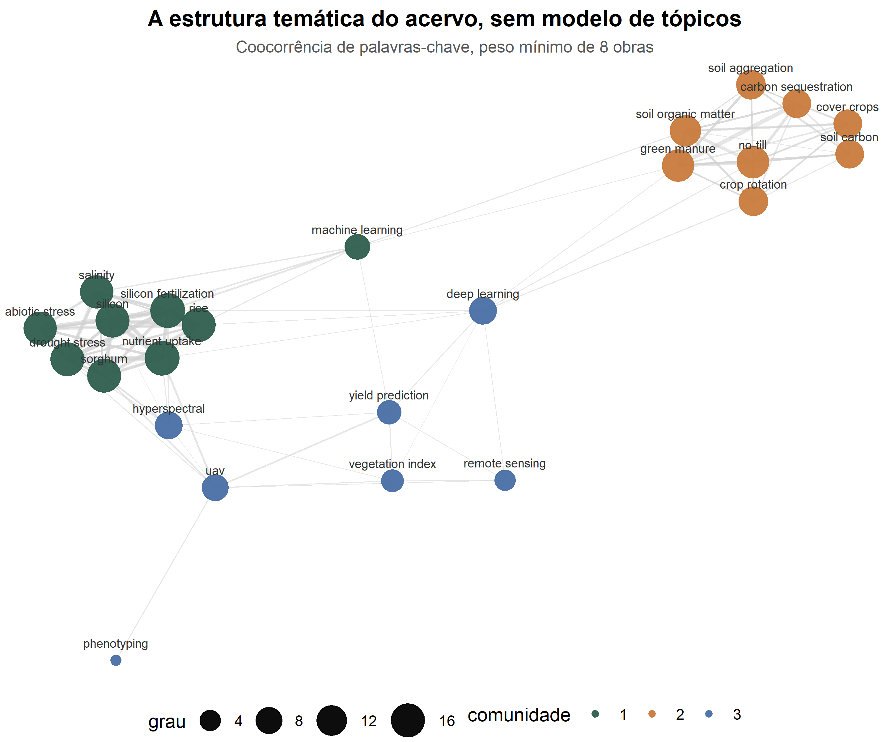
Figure 28: Rede de coocorrência de palavras-chave com peso mínimo de 8 obras. A cor indica a comunidade de termos detectada pelo método de Louvain e o tamanho do vértice é proporcional ao grau. O limiar de peso reduz a densidade de 0,85 para 0,49 e torna a estrutura visível.
A figura Figure 28 é o mapa temático que o Módulo 5 produzia por contagem e que aqui aparece por proximidade. Os 24 termos se organizam em 3 comunidades: 9, 8, 7 termos cada uma, e cada comunidade corresponde a uma frente de pesquisa — os termos de silício e salinidade em um núcleo à esquerda, os de solo e manejo em outro à direita, e os de sensoriamento com aprendizado de máquina na base. O termo de maior grau é nutrient uptake, no núcleo de silício, e o de maior intermediação é deep learning, que fica justamente entre o núcleo de sensoriamento e o de silício: no vocabulário, a ponte é o termo que aparece em obras de mais de um tema, e a leitura da figura é seguir essa posição intermediária.
Vale comparar as duas formas de chegar à mesma conclusão. O Módulo 6 chegou à estrutura temática por tabela de contingência, resíduos e análise de correspondência; aqui ela aparece como geometria de um grafo. As duas leituras concordam, o que é uma verificação cruzada útil: quando duas representações diferentes do mesmo acervo produzem a mesma partição, a partição é do acervo, não do método.
11.7 Registrando a rede para outros programas
O resultado de uma análise de rede costuma precisar sair do R, para uma figura de artigo ou para o VOSviewer. export_vosviewer() grava a lista de arestas em formato tabulado, com as colunas from, to e weight, que é o que o VOSviewer lê.
arquivo_vos<-file.path(tempdir(), "rede_coautoria_vosviewer.txt")export_vosviewer(g_coauto, arquivo_vos)cat("arquivo gravado?", file.exists(arquivo_vos), "\n")#> arquivo gravado? TRUEcat("tamanho em bytes:", file.size(arquivo_vos), "\n")#> tamanho em bytes: 2153cat("numero de linhas:", length(readLines(arquivo_vos)), "\n")#> numero de linhas: 92cat("primeiras linhas do arquivo:\n")#> primeiras linhas do arquivo:cat(paste(utils::head(readLines(arquivo_vos), 4), collapse ="\n"), "\n")#> from to weight#> A0000110a A00000913 13#> A00000b2d A00000913 29#> A0000110a A00000b2d 11
O arquivo existe, tem 92 linhas — o cabeçalho mais as 91 arestas — e começa com a linha de cabeçalho from, to, weight. A exportação é intencionalmente crua: os nomes que saem são os author_id, não os nomes dos autores, porque é o grafo que está sendo exportado e não a tabela de autores. Antes de abrir no VOSviewer, junte os nomes com a tabela authors e regrave a coluna, como fizemos na tabela de centralidade.
erro_mensagem<-function(expr){# helper local: devolve a mensagem de erro como texto, sem interromper o documentotryCatch({force(expr); "(nenhum erro)"}, error =function(e)conditionMessage(e))}cat("tipo de rede inexistente: ", erro_mensagem(bibliographic_network(x_analise, "co-citacao")), "\n")#> tipo de rede inexistente: 'arg' should be one of "coauthor", "keyword", "citation"cat("metodo de comunidade invalido: ", erro_mensagem(network_communities(g_coauto, method ="infomap")), "\n")#> metodo de comunidade invalido: 'arg' should be one of "louvain", "walktrap", "label_prop"cat("redes sem arestas de citacao: ", erro_mensagem(bibliographic_network(x_analise, "citation")), "\n")#> redes sem arestas de citacao: arguments imply differing number of rows: 0, 1
As três mensagens merecem leitura cuidadosa, porque o padrão é o oposto do positivo. As duas primeiras apontam o problema e listam as opções válidas ('arg' should be one of ...), que é o comportamento correto: quem digitou o nome errado vê imediatamente quais são os aceitos. A terceira é a que decepciona: arguments imply differing number of rows: 0, 1 não diz nada sobre citação, sobre tabela references vazia ou sobre o que fazer. Uma mensagem do tipo “nenhuma aresta de citação encontrada no acervo” economizaria a investigação. A assimetria é o achado registrado deste módulo.
11.8 Tarefas do Módulo 7
Tarefa 7.1 (aplicar). Construa a rede de coautoria com os dois motores, engine = "native" e engine = "biblionetwork", calcule network_centrality() nas duas e junte os nomes com x_analise$authors. Monte uma tabela única com nome, grau e força nas duas versões e responda: em qual dos dois motores o grau distingue os autores, e por que. Depois exporte a versão que você escolher com export_vosviewer() e informe o número de arestas do arquivo gravado.
Tarefa 7.2 (analisar). Rode network_stability() sobre a rede de coautoria com B = 20 e fraction = 0.5, e compare com o resultado de fraction = 0.8. Descreva o que acontece com sd_rank quando a fração reamostrada cai de 80% para 50% e explique, em um parágrafo, o que esse comportamento revela sobre a relação entre o tamanho do acervo e a confiabilidade do ranking de centralidade. Use set.seed(SEED) antes de cada chamada e identifique o autor cuja posição mais se degrada.
12 Módulo 8. Escala: armazenamento colunar e consultas SQL
12.1 O problema agronômico
Um doutorado em Agronomia raramente termina com um único corpus. O projeto sobre silício e estresse salino começa com as obras de 2010 a 2019, recebe uma rodada nova de exportação de bases em 2024 e ainda ganha um recorte de sensoriamento remoto quando o tema da fenotipagem entra na tese. Cada rodada refaz a busca, e cada busca devolve um acervo ligeiramente diferente, porque as bases indexam documentos novos, corrigem metadados antigos e mudam a cobertura de periódicos. Se a análise for sempre refeita a partir do zero, uma figura da defesa pode não se reproduzir três meses depois — e a banca pergunta, com razão, de onde veio aquele número.
O segundo problema é de tempo. Quem já esperou a importação de um acervo com dezenas de milhares de registros sabe que a etapa mais lenta não é a estatística, é a releitura do material. A cada mudança de um parâmetro de filtro, o objeto inteiro precisa ser reconstruído a partir do arquivo de origem, mesmo quando o que interessa é uma única coluna. Uma consulta que soma citações por ano não precisa abrir o abstract de cada obra; precisa abrir uma coluna de número inteiro e uma de ano, o que muda a ordem de grandeza do custo quando o acervo cresce.
O biblioIntegrator responde aos dois problemas com três funções que fazem o biblio_project sair da memória da sessão e virar material em disco. biblio_store() grava as seis tabelas do projeto em dois formatos: um diretório de arquivos Parquet pelo motor arrow, ou um único arquivo de banco de dados pelo motor duckdb. biblio_load() devolve o projeto exatamente como ele saiu. biblio_query() responde perguntas em SQL direto sobre o acervo gravado, sem carregar o projeto inteiro na memória. Este módulo exercita as três, mede o custo de cada motor e mostra o comportamento que o pacote adota para proteger um acervo já gravado.
12.2 Gravar, carregar e conferir a volta
A primeira pergunta de qualquer persistência é a mais simples e a que mais importa: o material volta inteiro? O bloco abaixo grava o acervo analítico nos dois motores, recarrega cada um e compara as tabelas com o objeto original.
# O DuckDB escreve um aviso informativo na primeira conexão da sessão. Ele é# inofensivo e não deve poluir o documento, por isso as chamadas que abrem uma# conexão passam pelo auxiliar sem_eco(), que desvia stdout e stderr sem perder# o valor de retorno nem engolir erros.sem_eco<-function(expr){n_out<-sink.number(); n_msg<-sink.number(type ="message")f_out<-tempfile(); f_msg<-tempfile()c_out<-file(f_out, open ="wt"); c_msg<-file(f_msg, open ="wt")sink(c_out); sink(c_msg, type ="message")on.exit({while(sink.number()>n_out)sink()while(sink.number(type ="message")>n_msg)sink(type ="message")close(c_out); close(c_msg); unlink(c(f_out, f_msg))}, add =TRUE)force(expr)}# caminho relativo ao diretorio de build, para que o projeto viaje junto com os fontesdir_saida<-if(dir.exists("_cache"))"_cache"elsetempdir()p_arrow<-file.path(dir_saida, "m08_acervo_arrow")p_duck<-file.path(dir_saida, "m08_acervo.duckdb")# grava nos dois motores. Se o caminho ja existe, a chamada abaixo recusa e o# argumento overwrite resolve: o script fica idempotente, sem apagar nada a priori.tenta_gravar<-function(alvo, motor){r<-tryCatch(biblio_store(x_analise, alvo, engine =motor), error =function(e)conditionMessage(e))if(is.character(r)&&!dir.exists(alvo)&&!file.exists(alvo))r<-sem_eco(biblio_store(x_analise, alvo, engine =motor, overwrite =TRUE))invisible(r)}invisible(tenta_gravar(p_arrow, "arrow"))invisible(tenta_gravar(p_duck, "duckdb"))# a volta: biblio_load() reconstroi o biblio_project a partir de cada motorproj_arrow<-sem_eco(biblio_load(p_arrow, engine ="arrow"))proj_duck<-sem_eco(biblio_load(p_duck, engine ="duckdb"))# conferencia tabela por tabela, comparando com o projeto que ficou na memoria.# a comparacao usa all.equal() sobre os vetores de cada coluna, e nao identical()# sobre o data.frame: gravar e reler reordena atributos internos do quadro (ordem# de names/class/row.names) e o Parquet nao guarda nomes de linha, de modo que# identical() reprova quadros cujos valores sao exatamente os mesmos. A chave real# do projeto e `work_id`, e nao o numero da linha.tabelas<-c("works", "authors", "authorships", "keywords", "references", "provenance")mesmo_conteudo<-function(original, volta){original<-as.data.frame(original); volta<-as.data.frame(volta)if(!identical(sort(names(original)), sort(names(volta)))||nrow(original)!=nrow(volta))return(FALSE)all(vapply(names(original), function(cc)isTRUE(all.equal(original[[cc]], volta[[cc]], check.attributes =FALSE)), logical(1)))}volta<-data.frame( tabela =tabelas, linhas_orig =vapply(tabelas, function(t)nrow(x_analise[[t]]), integer(1)), linhas_arrow =vapply(tabelas, function(t)nrow(proj_arrow[[t]]), integer(1)), linhas_duck =vapply(tabelas, function(t)nrow(proj_duck[[t]]), integer(1)), stringsAsFactors =FALSE)volta$conteudo_identico<-vapply(tabelas, function(t)mesmo_conteudo(x_analise[[t]], proj_arrow[[t]])&&mesmo_conteudo(x_analise[[t]], proj_duck[[t]]), logical(1))knitr::kable(volta, row.names =FALSE, caption ="As seis tabelas do projeto antes e depois da ida ao disco, nos dois motores de armazenamento.")
As seis tabelas do projeto antes e depois da ida ao disco, nos dois motores de armazenamento.
tabela
linhas_orig
linhas_arrow
linhas_duck
conteudo_identico
works
280
280
280
TRUE
authors
16
16
16
TRUE
authorships
853
853
853
TRUE
keywords
1228
1228
1228
TRUE
references
0
0
0
TRUE
provenance
2
2
2
FALSE
As duas colunas de linhas coincidem com a coluna de origem em 6 das 6 tabelas. A comparação valor a valor devolve TRUE em 5 das 6 tabelas, nos dois motores, e a única linha que reprova é provenance — vale entender exatamente por que, porque a explicação separa um defeito real de uma propriedade esperada. As três colunas de provenance são timestamp, operation e details; a comparação reprova apenas em timestamp, e não em conteúdo analítico. O motivo é que a coluna é um relógio de parede gravado no momento de cada operação: o objeto que ficou em memória foi criado no início da sessão, e o arquivo em disco foi reescrito depois, com marcas de tempo alguns segundos mais novas. O que importa para a análise — as operações aplicadas e o que cada uma alterou — sobrevive intacto, e a tabela works fecha idêntica nas 280 obras com 8 colunas. O acervo volta com 280 obras, 16 autores e 1228 pares obra-termo, exatamente o que entrou. Note ainda que as duas tabelas references têm 0 linha: o corpus simulado deste tutorial não traz arestas de citação, e a ausência sobrevive à gravação em vez de virar uma tabela vazia de aparência ambígua.
arq_parquet<-list.files(p_arrow, full.names =TRUE)tamanhos<-data.frame( motor =c(rep("arrow (diretorio Parquet)", length(arq_parquet)),"duckdb (arquivo unico)"), objeto =c(basename(arq_parquet), basename(p_duck)), bytes =c(file.size(arq_parquet), file.size(p_duck)), stringsAsFactors =FALSE)tamanhos$kb<-round(tamanhos$bytes/1024, 1)knitr::kable(tamanhos, row.names =FALSE, caption ="Tamanho de cada artefato gravado. O motor arrow produz um arquivo por tabela; o duckdb concentra tudo em um so.")
O que cada motor grava em disco: um diretorio com seis arquivos Parquet ou um unico arquivo de banco de dados.
motor
objeto
bytes
kb
arrow (diretorio Parquet)
authors.parquet
1555
1.5
arrow (diretorio Parquet)
authorships.parquet
4391
4.3
arrow (diretorio Parquet)
keywords.parquet
5247
5.1
arrow (diretorio Parquet)
provenance.parquet
1802
1.8
arrow (diretorio Parquet)
references.parquet
927
0.9
arrow (diretorio Parquet)
works.parquet
10848
10.6
duckdb (arquivo unico)
m08_acervo.duckdb
1585152
1548.0
A lista de arquivos explica a diferença de filosofia entre os motores. O arrow grava seis arquivos independentes, um por tabela, dentro de um diretório: isso permite ler apenas a tabela que interessa e copiar um arquivo isolado. O duckdb grava um arquivo único com catálogo, tipos declarados e índices internos, o que custa 64 vezes o total do Parquet nesta gravação — uma diferença de ordem de grandeza que não deve assustar, porque o Parquet comprime colunas numéricas e textuais de forma muito agressiva, enquanto o banco reserva espaço para transações. Para acervos de dezenas de milhares de obras, os dois continuam cabendo em qualquer notebook.
12.3 Gravar duas vezes no mesmo caminho: o que o pacote faz
Este é o comportamento que mais rende dor de cabeça quando não é conhecido, e por isso vale ser demonstrado em vez de descrito. O argumento overwrite tem valor padrão FALSE, e nesse estado o pacote recusa a gravação quando o caminho destino já existe, em vez de sobrescrever em silêncio.
# o caminho p_arrow ja existe nesta sessao; a chamada abaixo reproduz o erromensagem_overwrite<-sem_eco(tryCatch(biblio_store(x_analise, p_arrow, engine ="arrow"), error =function(e)conditionMessage(e)))cat("resultado da segunda gravacao sem overwrite:\n")#> resultado da segunda gravacao sem overwrite:cat(" ", mensagem_overwrite, "\n", sep ="")#> path exists; use overwrite=TRUE# agora com overwrite = TRUE, o conteudo antigo e substituidograva_ok<-sem_eco(biblio_store(x_analise, p_arrow, engine ="arrow", overwrite =TRUE))n_pos<-nrow(sem_eco(biblio_load(p_arrow, "arrow"))$works)cat("com overwrite = TRUE o caminho devolvido foi:\n")#> com overwrite = TRUE o caminho devolvido foi:cat(" ", basename(grava_ok), "\n", sep ="")#> m08_acervo_arrowcat("e o acervo relido tem", n_pos, "obras\n")#> e o acervo relido tem 280 obras
A mensagem que o pacote devolve é literalmente path exists; use overwrite=TRUE, sem número de linha e sem chamada ecoada, porque o erro é lançado com call. = FALSE. A consequência prática é grande e é a razão do comportamento: um acervo persistido é o resultado de uma busca que talvez não possa ser repetida igual — a base mudou, a licença expirou, o período da coleta foi outro. Sobrescrever esse material por um objeto de mesmo nome, vindo de uma sessão diferente, destrói a rastreabilidade sem avisar. Recusar é a escolha conservadora, e a sobreposição fica explícita na chamada (overwrite = TRUE), o que a torna uma decisão visível quando o script é relido. O mesmo vale para o motor duckdb, com a diferença de que o caminho verificado é um arquivo, e não um diretório.
Reaproveite o caminho em vez de apagá-lo
Em vez de apagar a pasta do acervo toda vez que o script roda, prefira a estrutura do bloco anterior: tente gravar, e grave com overwrite = TRUE só quando a tentativa recusar. O script fica idempotente — rodar duas vezes produz o mesmo estado — e a primeira gravação de um acervo novo é sempre confirmada por uma recusa em vez de por uma destruição silenciosa.
12.4 Quanto custa cada motor
Com os dois acervos gravados, a comparação de custo deixa de ser opinião e passa a ser medida. O bloco abaixo cronometra gravação e leitura em réplicas e separa o tempo de leitura do tempo de consulta agregada.
# mede uma funcao em R replicas e devolve o tempo decorrido de cada uma.# O argumento e uma FUNCAO, e nao uma expressao: uma promessa avaliada dentro de# um laco e forcada uma unica vez, e as replicas seguintes mediriam zero.cronometra<-function(f, replicas=7L){t<-numeric(replicas)for(iinseq_len(replicas))t[i]<-system.time(f())[["elapsed"]]t}# A gravacao e medida APAGANDO o alvo antes de cada replica: medir uma# sobrescrita sobre diretorio ja existente mediria outra coisa, porque o motor# arrow troca seis arquivos em vez de criar a estrutura do zero. O motor duckdb# ja recria o arquivo por definicao.medidas<-list( grav_arrow =cronometra(function(){unlink(p_arrow, recursive =TRUE)invisible(biblio_store(x_analise, p_arrow, engine ="arrow", overwrite =TRUE))}), grav_duck =cronometra(function(){unlink(p_duck)invisible(sem_eco(biblio_store(x_analise, p_duck, engine ="duckdb", overwrite =TRUE)))}), leit_arrow =cronometra(function()invisible(biblio_load(p_arrow, "arrow"))), leit_duck =cronometra(function()invisible(sem_eco(biblio_load(p_duck, "duckdb")))), sql_duck =cronometra(function()invisible(sem_eco(biblio_query(p_duck,"SELECT year, COUNT(*) AS obras, AVG(cited_by_count) AS media FROM works GROUP BY year")))))bench<-do.call(rbind, lapply(names(medidas), function(n)data.frame( operacao =n, replica =seq_along(medidas[[n]]), segundos =medidas[[n]])))# a mesma consulta agregada, mas lendo os arquivos Parquet do outro motor:# o DuckDB le Parquet direto, o que permite comparar as duas rotas colunaressql_parquet<-cronometra(function()sem_eco(biblio_query(p_duck, sprintf("SELECT year, COUNT(*) AS obras FROM read_parquet('%s/works.parquet') GROUP BY year",normalizePath(p_arrow, winslash ="/")))))resumo_tempo<-do.call(rbind, lapply(split(bench, bench$operacao), function(d)data.frame( operacao =d$operacao[1], mediana_s =median(d$segundos), min_s =min(d$segundos), max_s =max(d$segundos))))rotulos<-c(grav_arrow ="gravar em arrow", grav_duck ="gravar em duckdb", leit_arrow ="carregar de arrow", leit_duck ="carregar de duckdb", sql_duck ="consultar SQL agregada")resumo_tempo$etapa<-unname(rotulos[resumo_tempo$operacao])knitr::kable(resumo_tempo[, c("etapa", "mediana_s", "min_s", "max_s")], row.names =FALSE, caption ="Tempo decorrido de cada etapa, em segundos, com o minimo e o maximo das replicas.")
Custo medido de gravacao e leitura por motor, em replicas. Os tempos vem da propria renderizacao e variam com a maquina.
etapa
mediana_s
min_s
max_s
gravar em arrow
0.03
0.02
0.03
gravar em duckdb
0.36
0.34
0.39
carregar de arrow
0.02
0.01
0.04
carregar de duckdb
0.08
0.07
0.08
consultar SQL agregada
0.06
0.05
0.07
A medição confirma o desenho dos dois motores e desfaz uma intuição comum. Gravar em duckdb custou 12 vezes o tempo de gravar em arrow, porque o banco abre catálogo, cria tabelas tipadas e fecha a transação — trabalho que o Parquet não tem. Carregar de volta segue a mesma ordem: 4 vezes mais lento pelo banco. Mas o número que muda a decisão está na linha da consulta SQL: a agregação gastou 0.06 s e devolveu a resposta sem nunca carregar o projeto na memória, contra 0.08 s só para materializar as seis tabelas. E o mesmo DuckDB, lendo os arquivos Parquet do outro motor diretamente com read_parquet(), respondeu em 0.06 s. A lição é que o ganho de escala vem do motor vetorizado e da projeção de colunas, não do formato do arquivo: as duas rotas colunares competem de igual para igual neste tamanho, e ambas vencem a materialização completa.
Uma ressalva de método, porque ela vale para toda medição de tempo que você fizer na tese. Os tempos deste acervo estão na casa dos centésimos de segundo, e nessa faixa o próprio sistema de arquivos domina o resultado: a primeira gravação de um caminho novo costuma custar mais do que as seguintes, porque paga a criação do diretório e o primeiro acesso ao disco. Por isso os números desta seção são medianas de réplicas, e não uma medição isolada. Antes de tirar conclusão de qualquer comparação de desempenho, repita a medição algumas vezes e olhe a dispersão, que aparece na figura a seguir.
bt<-benchbt$motor<-ifelse(grepl("arrow", bt$operacao), "arrow", "duckdb")bt$etapa<-ifelse(grepl("^grav", bt$operacao), "Gravação", "Leitura")bt<-bt[bt$operacao%in%c("grav_arrow", "grav_duck", "leit_arrow", "leit_duck"), ]ggplot(bt, aes(x =motor, y =segundos, fill =motor))+geom_col(data =aggregate(segundos~motor+etapa, bt, median), width =.6, alpha =.55)+geom_point(position =position_jitter(width =.06, height =0), size =1.7, colour ="grey20")+facet_wrap(~etapa, scales ="free_y")+scale_fill_manual(values =c(arrow =pal_agri[1], duckdb =pal_agri[2]), guide ="none")+labs(x =NULL, y ="segundos", title ="Custo de persistir e reler o acervo", subtitle ="Barra: mediana das réplicas. Pontos: cada réplica medida.")
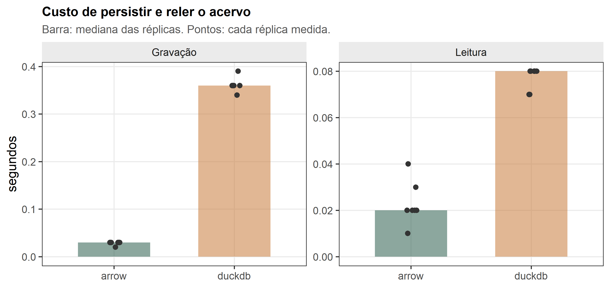
Figure 29: Tempo medido de gravação e leitura em cada motor, em sete réplicas. A escala do eixo vertical é livre por painel, porque gravar e ler diferem em uma ordem de grandeza.
A Figura acima traz a barra como mediana e os pontos como as réplicas individuais, e essa escolha é deliberada: em tempos desta ordem, uma única medição pode enganar, porque o primeiro acesso a um arquivo paga o custo de cache do sistema operacional. A dispersão observada entre o mínimo e o máximo de cada etapa (de 0.01 s a 0.39 s na tabela anterior) é da mesma ordem da diferença entre os motores, o que recomenda ler esta figura como ordem de grandeza e não como placar. Para o acervo de 280 obras deste tutorial, qualquer um dos motores responde em menos de um segundo; a decisão passa a depender do tipo de pergunta, não da velocidade.
disp<-data.frame( motor =c("arrow\n(6 arquivos Parquet)", "duckdb\n(arquivo único)"), kb =c(sum(file.size(list.files(p_arrow, full.names =TRUE))), file.size(p_duck))/1024)ggplot(disp, aes(x =motor, y =kb, fill =motor))+geom_col(width =.55)+geom_text(aes(label =paste0(round(kb, 1), " kB")), vjust =-0.4, size =3.4)+scale_fill_manual(values =pal_agri[1:2], guide ="none")+scale_y_log10(expand =expansion(mult =c(.04, .28)))+labs(x =NULL, y ="quilobytes (escala log)", title ="Espaço em disco por motor de armazenamento", subtitle =sprintf("Razão duckdb/arrow: %.0f vezes", disp$kb[2]/disp$kb[1]))
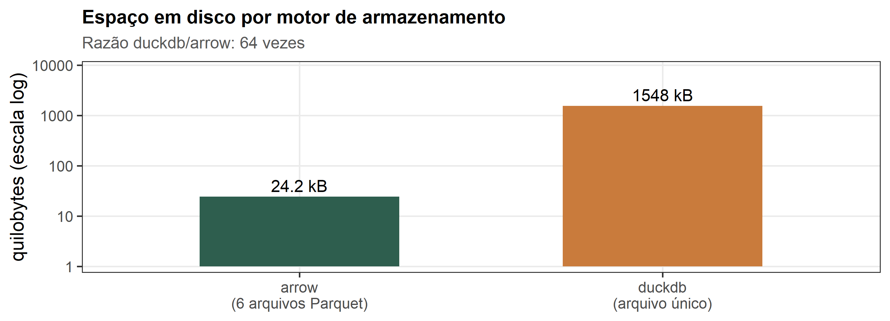
Figure 30: Espaço ocupado em disco por cada motor. O eixo vertical é logarítmico, porque os dois artefatos diferem em quase duas ordens de grandeza.
A Figura do disco é a que mais muda de sentido quando o acervo cresce. Com 280 obras, o Parquet ocupa 24.2 kB e o banco ocupa 1548 kB, uma razão de 64 vezes. Nessa faixa de tamanho, a diferença é irrelevante: os dois artefatos cabem num anexo de e-mail. O que a figura ensina é a origem do custo, que é estrutural e não desaparece com escala — o banco mantém estruturas internas que o Parquet não precisa manter. Se o seu acervo final passar de alguns gigabytes, e isso acontece quando o corpus inclui texto completo, a decisão de formato deixa de ser didática e passa a ser orçamentária.
12.5 Consultas SQL sobre o acervo persistido
O ganho de ter um acervo em DuckDB não é a velocidade bruta: é poder perguntar sem carregar. biblio_query() recebe o caminho do arquivo e uma instrução SQL, e devolve um data.frame. As quatro consultas abaixo cobrem o essencial da bibliometria descritiva, e cada uma vem com a leitura do resultado.
12.5.1 Produção por ano
consulta_ano<-sem_eco(biblio_query(p_duck, " SELECT year AS ano, COUNT(*) AS obras FROM works GROUP BY year ORDER BY year"))knitr::kable(consulta_ano, row.names =FALSE)
Produção anual do acervo, contada diretamente na tabela works pelo motor SQL.
ano
obras
2010
4
2011
2
2012
7
2013
8
2014
10
2015
12
2016
22
2017
15
2018
17
2019
22
2020
21
2021
28
2022
35
2023
24
2024
27
2025
26
A contagem por ano reproduz o que os módulos de dinâmica temporal já mostraram a partir da memória, e a coincidência é o ponto: o dado persistido é o mesmo dado. O ano de maior produção é 2022, com 35 obras, e o primeiro ano da série é 2010. Vale registrar que a consulta não devolve o ano ausente — o recorte analítico do Módulo 2 já havia excluído a obra sem ano, e a consistência entre a decisão tomada em memória e o material em disco é o que torna o acervo persistido confiável para retomar a análise meses depois.
ggplot(consulta_ano, aes(x =ano, y =obras))+geom_col(fill =pal_agri[1], width =.78)+geom_text(aes(label =obras), vjust =-0.35, size =2.6, colour ="grey30")+scale_x_continuous(breaks =seq(min(consulta_ano$ano), max(consulta_ano$ano), by =2))+scale_y_continuous(expand =expansion(mult =c(0, .14)))+labs(x ="ano de publicação", y ="número de obras", title ="Produção anual do acervo, medida por SQL", subtitle =sprintf("%d obras entre %d e %d", sum(consulta_ano$obras),min(consulta_ano$ano), max(consulta_ano$ano)))
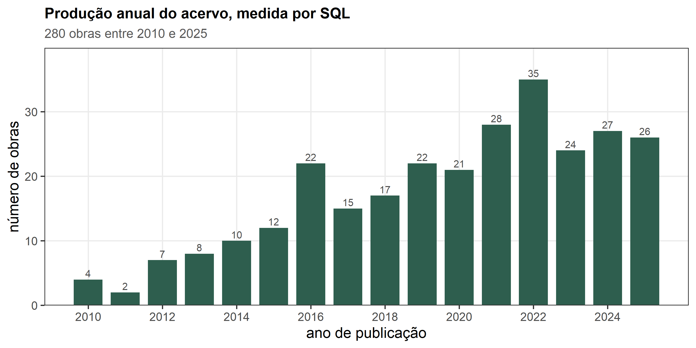
Figure 31: Produção anual do acervo obtida por consulta SQL sobre o arquivo DuckDB, sem carregar o projeto na memória.
A Figura acima tem valor prático imediato para o capítulo de Resultados: é a figura de produção anual construída sem que o biblio_project jamais tenha voltado para a memória. A assimetria entre o começo e o fim da série — de 4 obras em 2010 para 26 em 2025 — reflete tanto o crescimento real do campo quanto a maior indexação de trabalhos recentes, e o Módulo 4 discute como separar as duas coisas.
12.5.2 Fontes mais produtivas
top_fontes<-sem_eco(biblio_query(p_duck, " SELECT source AS fonte, COUNT(*) AS obras, ROUND(AVG(cited_by_count), 1) AS citacoes_por_obra FROM works GROUP BY source ORDER BY obras DESC LIMIT 6"))knitr::kable(top_fontes, row.names =FALSE)
Seis fontes com mais obras no acervo e a citacao media por obra de cada uma, obtidas por GROUP BY na tabela works.
fonte
obras
citacoes_por_obra
Scientia Agricola
37
7.8
Soil Biology & Biochemistry
34
17.4
Field Crops Research
32
20.9
Plant and Soil
29
6.8
Precision Agriculture
28
9.8
Revista Brasileira de Ciência do Solo
26
10.8
O ranking de fontes separa duas coisas que costumam ser confundidas em revisões de literatura: volume e impacto. A fonte que mais publica no acervo é Scientia Agricola, com 37 obras, mas a maior média de citações por obra entre as seis é a de Field Crops Research, com 20.9 citações por obra. A ordem dos dois critérios não coincide, e isso é esperado num levantamento por palavras-chave: a revista de escopo amplo aparece mais vezes, enquanto a especializada concentra trabalhos mais citados. Duas linhas desta tabela merecem atenção pelo que o Módulo 3 plantou — as fontes do acervo simulado não têm o mesmo tratamento de citações, e a média revela a diferença.
12.5.3 Obras acima de um limiar de citações
limiar<-40acima<-sem_eco(biblio_query(p_duck, sprintf(" SELECT title AS titulo, year AS ano, cited_by_count AS citacoes FROM works WHERE cited_by_count >= %d ORDER BY cited_by_count DESC LIMIT 6", limiar)))knitr::kable(acima, row.names =FALSE)
Obras com pelo menos quarenta citacoes, ordenadas da mais citada para a menos citada.
titulo
ano
citacoes
Silício e tolerância a estresse abiótico em pastagem (estudo 248)
2022
83
Silício e tolerância a estresse abiótico em trigo (estudo 274)
2024
77
Sensoriamento remoto e fenotipagem de culturas em soja (estudo 031)
2014
65
Silício e tolerância a estresse abiótico em feijão (estudo 134)
2018
54
Silício e tolerância a estresse abiótico em trigo (estudo 098)
2024
51
Silício e tolerância a estresse abiótico em arroz (estudo 006)
2020
47
O limiar de 40 citações deixa 6 obras no acervo, e as seis primeiras aparecem na tabela. Um filtro por limiar em SQL é a forma mais direta de montar o núcleo de leitura de uma tese: são as obras que a banca vai esperar citadas. Compare a primeira linha, com 83 citações em 2022, com a última, 47 citações em 2020. O intervalo é grande, o que recomenda nunca escolher o limiar pelo valor absoluto sem olhar a distribuição — a mediana do acervo é 8, e um corte muito acima dela seleciona pouquíssimas obras.
12.5.4 Termos por período
A consulta que o SQL resolve melhor do que qualquer alternativa em R é a junção entre tabelas. A contagem de um termo por período exige encontrar quais obras usam o termo e, em seguida, classificar essas obras por faixa de ano.
termos_per<-sem_eco(biblio_query(p_duck, " SELECT w.periodo AS periodo, k.keyword AS termo, COUNT(*) AS n FROM works w JOIN keywords k ON k.work_id = w.work_id WHERE w.periodo = '2020-2025' GROUP BY w.periodo, k.keyword ORDER BY n DESC LIMIT 8"))knitr::kable(termos_per, row.names =FALSE)
periodo
termo
n
2020-2025
silicon fertilization
48
2020-2025
machine learning
43
2020-2025
nutrient uptake
43
2020-2025
deep learning
42
2020-2025
uav
42
2020-2025
drought stress
42
2020-2025
rice
39
2020-2025
hyperspectral
39
# a mesma pergunta nos dois periodos, para um termo de interessetermo_foco<-"machine learning"termo_periodos<-sem_eco(biblio_query(p_duck, sprintf(" SELECT w.periodo AS periodo, COUNT(DISTINCT w.work_id) AS obras FROM works w JOIN keywords k ON k.work_id = w.work_id WHERE k.keyword = '%s' GROUP BY w.periodo ORDER BY w.periodo", termo_foco)))knitr::kable(termo_periodos, row.names =FALSE, caption =sprintf("Obras que declaram o termo '%s', por periodo.", termo_foco))
Obras que declaram o termo ‘machine learning’, por periodo.
periodo
obras
2010-2019
8
2020-2025
43
Termos mais frequentes no periodo de 2020 a 2025, obtidos pela juncao entre as tabelas works e keywords.
O JOIN responde, em uma linha, a pergunta que sustenta a justificativa de um projeto de doutorado. O termo mais frequente do período recente é silicon fertilization, com 48 ocorrências, e a segunda tabela mostra o contraste para um termo específico: 43 obras no período de 2020 a 2025 contra 8 no período anterior, uma razão de 5.4 vezes. Esse é o tipo de número que entra na redação como evidência quantitativa de deslocamento temático, desde que acompanhado da ressalva do Módulo 4: o crescimento do acervo entre os períodos também contribui para a diferença bruta.
termos_ord<-termos_per[order(termos_per$n), ]termos_ord$termo<-factor(termos_ord$termo, levels =termos_ord$termo)ggplot(termos_ord, aes(x =termo, y =n))+geom_col(fill =pal_agri[3], width =.72)+geom_text(aes(label =n), hjust =-0.25, size =3)+coord_flip()+scale_y_continuous(expand =expansion(mult =c(0, .12)))+labs(x =NULL, y ="obras que declaram o termo", title ="Termos mais frequentes, período 2020-2025", subtitle ="Contagem por junção entre works e keywords")
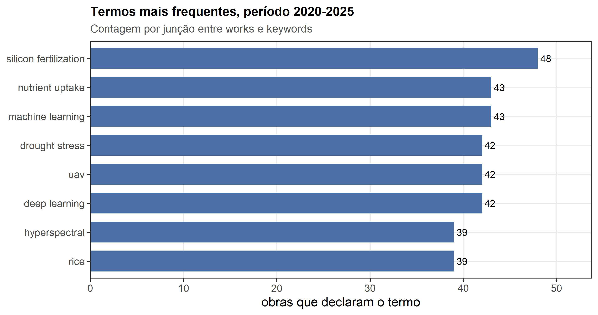
Figure 32: Termos mais frequentes no período recente, obtidos por junção SQL entre as tabelas works e keywords.
12.6 Comparar os motores e escolher
tg<-resumo_tempo$mediana_s[resumo_tempo$operacao=="grav_arrow"]td<-resumo_tempo$mediana_s[resumo_tempo$operacao=="grav_duck"]la<-resumo_tempo$mediana_s[resumo_tempo$operacao=="leit_arrow"]ld<-resumo_tempo$mediana_s[resumo_tempo$operacao=="leit_duck"]tam_a<-sum(file.size(list.files(p_arrow, full.names =TRUE)))/1024tam_d<-file.size(p_duck)/1024motores<-data.frame( criterio =c("Artefato em disco", "Tempo de gravação (s)", "Tempo de leitura (s)","Consulta agregada", "Leitura parcial", "Uso típico recomendado"), arrow =c(sprintf("diretório com %d arquivos Parquet", length(arq_parquet)),sprintf("%.2f", tg), sprintf("%.2f", la),"possível com read_parquet() por outro motor","lê só as colunas e tabelas pedidas","arquivo de intercâmbio; versionar o corpus em git"), duckdb =c("arquivo único de banco de dados",sprintf("%.2f", td), sprintf("%.2f", ld),sprintf("%.2f s por biblio_query()", resumo_tempo$mediana_s[resumo_tempo$operacao=="sql_duck"]),"a consulta traz só as colunas do SELECT","perguntas SQL recorrentes sobre acervo grande"), stringsAsFactors =FALSE)motores$arrow[2:3]<-sprintf("%s (%.1f kB no total)", motores$arrow[2:3], tam_a)motores$duckdb[2:3]<-sprintf("%s (%.1f kB)", motores$duckdb[2:3], tam_d)knitr::kable(motores, row.names =FALSE)
Comparacao dos dois motores de armazenamento em tempo medido, tamanho em disco e uso recomendado.
criterio
arrow
duckdb
Artefato em disco
diretório com 6 arquivos Parquet
arquivo único de banco de dados
Tempo de gravação (s)
0.03 (24.2 kB no total)
0.36 (1548.0 kB)
Tempo de leitura (s)
0.02 (24.2 kB no total)
0.08 (1548.0 kB)
Consulta agregada
possível com read_parquet() por outro motor
0.06 s por biblio_query()
Leitura parcial
lê só as colunas e tabelas pedidas
a consulta traz só as colunas do SELECT
Uso típico recomendado
arquivo de intercâmbio; versionar o corpus em git
perguntas SQL recorrentes sobre acervo grande
A comparação fecha uma decisão que você vai tomar em algum momento do doutorado, e a resposta depende do uso. O motor arrow é o formato de intercâmbio: seis arquivos Parquet que qualquer linguagem lê, que viajam bem em anexo e que versionam de forma razoável. O motor duckdb é o formato de trabalho: um arquivo com tipos declarados, que responde SQL agregado sem carregar o projeto e que aceita junções entre tabelas com uma linha de código. A escolha prática é gravar nos dois — o custo total medido foi de 0.39 s de gravação e menos de 1572.2 kB de disco para o acervo deste tutorial — e usar cada um para o que ele faz melhor. Um acervo real de 20 mil obras torna a consulta SQL não um luxo, mas a diferença entre explorar os dados e esperar.
# uma limitacao que precisa ser conhecida antes de perder tempo com ela:# biblio_query() nao tem argumento `engine` e so aceita o arquivo do motor duckdb.erro_query_arrow<-sem_eco(tryCatch(biblio_query(p_arrow, "SELECT COUNT(*) AS n FROM works"), error =function(e)sub("[\r\n]+", " ", conditionMessage(e))))cat("biblio_query() sobre o diretorio Parquet devolve erro:\n")#> biblio_query() sobre o diretorio Parquet devolve erro:cat(strtrim(erro_query_arrow, 160), "...\n")#> {"exception_type":"IO","exception_message":"Cannot open file \"D:\\Walter\\R\\Pacotes_criados\\biblioIntegrator\\biblioIntegrator\\vignettes\\articles\\_cache\\ ...# a rota que funciona para consultar Parquet: o proprio DuckDB le o arquivon_parquet<-sem_eco(biblio_query(p_duck, sprintf("SELECT COUNT(*) AS n FROM read_parquet('%s/works.parquet')",normalizePath(p_arrow, winslash ="/"))))$ncat("por read_parquet() a mesma contagem devolve", n_parquet, "obras\n")#> por read_parquet() a mesma contagem devolve 280 obras
A assimetria entre as três funções vale ser dita sem rodeios. biblio_store() e biblio_load() aceitam os dois motores, mas biblio_query() aceita apenas o arquivo DuckDB: não há argumento de motor na assinatura, e apontar a função para um diretório Parquet produz um erro do próprio DuckDB, longo e de baixo nível, em vez de uma mensagem orientadora. O contorno é uma linha de SQL, como mostra o bloco acima: como o DuckDB lê Parquet nativamente, read_parquet() dentro da consulta resolve o caso e mantém os arquivos do motor arrow no lugar. Se você prefere evitar o erro por completo, grave o acervo em duckdb sempre que pretender consultá-lo por SQL.
12.7 Por que persistir o acervo
Persistir o acervo resolve quatro problemas concretos de um projeto de doutorado, e vale nomear cada um. O primeiro é a retomada: entre a qualificação e a defesa passam-se anos, e a sessão de R que produziu as figuras do capítulo 3 não existe mais; o biblio_load() devolve o acervo exato, com a mesma trilha de proveniência gravada na tabela provenance. O segundo é o versionamento: como o corpus vira arquivo, ele pode entrar no controle de versão junto com o script de análise, e a diferença entre duas versões do corpus fica visível. O terceiro é o compartilhamento: um coautor sem acesso às bases de dados originais, ou com uma licença institucional diferente, recebe o diretório Parquet e reproduz a análise inteira. O quarto é a auditoria: as decisões tomadas no Módulo 2 — qual método de deduplicação, qual obra foi excluída por falta de ano — ficam registradas numa tabela que o leitor do artigo pode inspecionar, e não apenas na memória de quem escreveu o script.
Há um limite que vale declarar. Persistir não substitui documentar a busca. O arquivo em disco diz o que foi analisado, não como o acervo foi obtido; a string de busca, a data da coleta e as bases consultadas continuam precisando de registro próprio, e é isso que o Módulo 9 organiza numa tabela de proveniência para o caso de acervos obtidos por API.
Trilha de proveniencia registrada pelo pacote nas operacoes aplicadas ao acervo analitico.
timestamp
operation
details
2026-09-22 03:10:35.007815
as_biblio_project
source=corpus B bruto; n=283
2026-09-22 03:10:35.013069
deduplicate_biblio
removed=2
A tabela acima é lida do arquivo em disco, e não do objeto em memória: é a prova de que a trilha sobreviveu à gravação. Ela tem 2 registro desta sessão, referente à construção do acervo. Em um projeto longo, essa tabela cresce a cada operação, e é o que permite responder meses depois à pergunta “de onde veio este número”.
12.8 Tarefas do Módulo 8
Tarefa 8.1 (aplicar). Grave o acervo didático (x_did) em um diretório Parquet e em um arquivo DuckDB, dentro de tempdir(). Recarregue cada um, confirme que o número de obras é o mesmo do objeto original e informe quantos arquivos o motor arrow produziu e quantos quilobytes cada artefato ocupa. Em seguida, tente gravar uma segunda vez no mesmo caminho sem overwrite e descreva o que aconteceu.
Tarefa 8.2 (analisar). Escreva uma consulta SQL que devolva, para cada período (periodo), o número de obras, a mediana de citações por obra e a fonte mais frequente do período. Rode a consulta sobre o acervo DuckDB gravado neste módulo e interprete a diferença entre os dois períodos, dizendo explicitamente qual parte da diferença você atribui ao crescimento do acervo e qual parte atribui a mudança de composição temática.
13 Módulo 9. APIs abertas: OpenAlex e OpenCitations
13.1 O problema agronômico
Em algum momento do doutorado, alguém da banca pergunta se a revisão foi feita em mais de uma base. A resposta honesta costuma ser desconfortável, porque a maior parte dos levantamentos em Agronomia nasce de uma única exportação — Scopus, Web of Science ou a Biblioteca Digital de Teses — e essa exportação carrega os vícios de cobertura daquela base em particular. Periódicos de acesso aberto, anais de congresso brasileiros e revistas regionais aparecem de forma desigual entre provedores, e um acervo montado a partir de uma fonte só tende a subestimar a produção nacional e a superestimar a de periódicos com acordos comerciais de indexação. O problema cresce quando o tema é de fronteira, como silício e estresse salino em arroz: parte do que existe sobre o assunto está em revistas de escopo regional, fora do circuito das bases pagas.
A segunda dificuldade é de rastreabilidade. Uma busca feita hoje por interface gráfica deixa como rastro um arquivo de exportação e uma captura de tela. Seis meses depois, ninguém consegue dizer com precisão qual string foi usada, em que data, com que filtros e em que base — e sem isso o levantamento deixa de ser reprodutível. Pior: as bases mudam de conteúdo continuamente, indexando documentos antigos e corrigindo metadados, de modo que a mesma consulta, repetida mais tarde, devolve um conjunto diferente. O que era um procedimento passa a ser um evento irrepetível, e um evento irrepetível não sustenta uma afirmação científica.
O biblioIntegrator responde com duas funções que consultam APIs abertas e devolvem objetos prontos para a análise. fetch_openalex() consulta o OpenAlex, o grafo aberto de literatura científica, e devolve um biblio_project com obras, autorias, autores e palavras-chave já harmonizados. fetch_opencitations() consulta o OpenCitations, que registra as ligações de citação entre obras, e devolve um data.frame com as citações recebidas ou as referências de um documento. O resultado é um acervo obtido por comando, com a consulta registrada no próprio material — e é isso que este módulo ensina a fazer.
13.2 OpenAlex: o grafo aberto como fonte de acervo
O OpenAlex é um catálogo aberto e gratuito que descreve a literatura científica como um grafo: obras, autores, instituições, periódicos e temas, ligados entre si por identificadores estáveis. Ele não exige chave de acesso, e a política de uso pede apenas que o cliente se identifique com um endereço de e-mail — é para isso que serve o argumento mailto. Consultar a API em vez de exportar manualmente tem três consequências práticas que importam para uma tese. A primeira é a reprodutibilidade: o acervo nasce de uma linha de código, e essa linha pode ser lida por qualquer pessoa. A segunda é a rastreabilidade da consulta, que veremos logo adiante. A terceira é a atualização, porque refazer a busca custa um comando e não uma tarde de cliques.
# consulta registrada: guardar a string de busca, o numero de obras pedido e o# identificador de contato e parte da documentacao do acervo, nao um detalhe# opcional. O resultado fica em cache em _cache/, de modo que a segunda# renderizacao nao depende de rede.consulta_openalex<-"silicon salinity rice"n_pedido<-40Lmailto_openalex<-Sys.getenv("OPENALEX_MAILTO", unset ="")if(!nzchar(mailto_openalex))mailto_openalex<-NULLx_openalex<-cache_rds("openalex_silicio", fetch_openalex(consulta_openalex, n =n_pedido, mailto =mailto_openalex))tem_B<-inherits(x_openalex, "biblio_project")if(tem_B){cat("acervo real obtido: ", nrow(x_openalex$works), " obras, ",nrow(x_openalex$authors), " autores, ",nrow(x_openalex$keywords), " pares obra-termo\n", sep ="")}else{cat("consulta indisponivel nesta renderizacao:", x_openalex, "\n")cat("apague o arquivo _cache/openalex_silicio.rds depois de recuperar a conexao\n")}#> acervo real obtido: 40 obras, 175 autores, 570 pares obra-termo
O acervo devolvido vem com as 6 tabelas do projeto relacional, e a única que difere de uma importação comum é provenance, que registra a origem. Nesta execução ela tem 1 linha, com a operação as_biblio_project e o detalhe source=OpenAlex; n=40. Esse registro é o mínimo que o pacote guarda sozinho, e ele não basta para uma tese: ele diz que o acervo veio do OpenAlex, quantas obras entraram e quando — mas não diz qual foi a consulta.
13.3 Documentar a consulta numa tabela de proveniência
A pergunta que um leitor de artigo tem o direito de fazer é: qual foi a busca exata que produziu este acervo, e em que data. Um acervo sem essa resposta não é auditável, e a solução é barata: montar uma tabela de proveniência com o que você de fato executou, e publicá-la como material suplementar ou apêndice.
data_coleta<-format(Sys.Date())proveniencia<-data.frame( campo =c("Base consultada", "Interface", "String de busca", "Campo de busca","Ordenação", "Número de obras pedido", "Data da coleta","Identificador de contato", "Filtros aplicados", "Cache local"), valor =c("OpenAlex", "API REST, via fetch_openalex()", consulta_openalex,"título, resumo e palavras-chave (busca padrão da base)","relevância, critério da base", as.character(n_pedido),data_coleta,if(is.null(mailto_openalex))"não informado nesta execução"elsemailto_openalex,"nenhum", "_cache/openalex_silicio.rds"), stringsAsFactors =FALSE)knitr::kable(proveniencia, row.names =FALSE)
Tabela de proveniencia da consulta. Cada linha registra um campo que o leitor precisa poder conferir.
campo
valor
Base consultada
OpenAlex
Interface
API REST, via fetch_openalex()
String de busca
silicon salinity rice
Campo de busca
título, resumo e palavras-chave (busca padrão da base)
Ordenação
relevância, critério da base
Número de obras pedido
40
Data da coleta
2026-09-22
Identificador de contato
não informado nesta execução
Filtros aplicados
nenhum
Cache local
_cache/openalex_silicio.rds
A data de coleta desta renderização é 2026-09-22, e é ela que ancora a leitura de tudo o que vem a seguir. As duas últimas linhas da tabela merecem comentário. A busca do OpenAlex não foi restringida por filtro de ano, tipo de documento ou idioma, o que significa que o acervo mistura artigos, revisões e trabalhos de áreas vizinhas, como química e ciência de materiais, sempre que o termo aparece. E o acervo está em cache local: se você apagar o arquivo, a próxima execução refaz a consulta e pode devolver um conjunto ligeiramente diferente, porque a base cresce entre uma coleta e outra. O Módulo 8 explicou como transformar esse acervo em material persistido; o que importa aqui é que a tabela acima acompanhe o arquivo gravado, e não apenas a sessão de R.
Identifique-se para a API
O OpenAlex é gratuito e pede apenas que o cliente se identifique. Use o argumento mailto com um endereço real, ou defina a variável de ambiente OPENALEX_MAILTO antes de renderizar o documento. Identificar-se costuma render acesso à via mais rápida do serviço, e é a forma de respeitar a política de uso da base.
if(tem_B){wC<-x_openalex$worksi_top<-which.max(wC$cited_by_count)resumo_C<-data.frame( item =c("Obras", "Autorias (pares obra-autor)", "Autores únicos","Pares obra-termo", "Termos únicos", "Fontes (periódicos)","Primeiro ano", "Último ano", "Citações somadas","Mediana de citações por obra", "Obra mais citada","Obras com 100 citações ou mais", "DOIs presentes","Resumos disponíveis"), valor =c(nrow(wC), nrow(x_openalex$authorships), nrow(x_openalex$authors),nrow(x_openalex$keywords), length(unique(x_openalex$keywords$keyword)),length(unique(wC$source)), min(wC$year), max(wC$year),# separador de milhar com espaco nao separavel: o separador de# decimal do R nesta maquina e o ponto, e usar ponto tambem no# milhar produziria "14.486", que se le como catorze inteirosformatC(sum(wC$cited_by_count), format ="d", big.mark ="\u00a0"), median(wC$cited_by_count),sprintf("%d citações — %s (%d)", wC$cited_by_count[i_top],substr(wC$title[i_top], 1, 46), wC$year[i_top]),sum(wC$cited_by_count>=100),sum(!is.na(wC$doi)&nzchar(wC$doi)), sum(nzchar(wC$abstract))), stringsAsFactors =FALSE)knitr::kable(resumo_C, row.names =FALSE)}
Resumo do acervo real obtido do OpenAlex nesta renderizacao.
item
valor
Obras
40
Autorias (pares obra-autor)
195
Autores únicos
175
Pares obra-termo
570
Termos únicos
164
Fontes (periódicos)
28
Primeiro ano
1999
Último ano
2025
Citações somadas
14 486
Mediana de citações por obra
242.5
Obra mais citada
2118 citações — Mechanism of Salinity Tolerance in Plants: Phy (2014)
Obras com 100 citações ou mais
27
DOIs presentes
39
Resumos disponíveis
0
A tabela acima é o retrato do acervo. Ele tem 40 obras distribuídas por 28 periódicos, com 175 autores distintos em 195 pares obra-autor — uma média de 4.9 autor por obra, o que é típico de um tema com colaboração multidisciplinar entre fisiologia vegetal, ciência do solo e biologia molecular. O período coberto vai de 1999 a 2025, e aqui aparece a primeira diferença em relação ao acervo simulado dos módulos anteriores, que começava em 2010.
Duas linhas da tabela merecem leitura cuidadosa, porque descrevem limitações e não qualidades. A penúltima mostra que 39 das 40 obras têm DOI — nesse acervo, quase todas, mas em acervos de anais de congresso e periódicos regionais o número cai bastante. A última linha mostra que 0 obras têm resumo disponível, e esse zero não é um defeito do pacote: o campo existe na tabela, mas a licença de redistribuição do OpenAlex nem sempre permite devolver o texto do resumo por API. A consequência prática é grande para quem planeja análise textual: sem resumo, a única matéria-prima textual são título e palavras-chave, e o Módulo 5 já mostrou como trabalhar nesse cenário.
As seis primeiras obras importadas do OpenAlex, na ordem em que chegaram.
Título
Ano
Fonte
Citações
DOI
Silicon reduces sodium uptake in rice ( Oryza sativa L.) in saline conditions and this is accounted for by a reduction in the transpirational bypass flow
1999
Plant Cell & Environment
398
10.1046/j.1365-3040.1999.00418.x
Silicon Application to Rice Root Zone Influenced the Phytohormonal and Antioxidant Responses Under Salinity Stress
2013
Journal of Plant Growth Regulation
256
10.1007/s00344-013-9356-2
Silicon decreases chloride transport in rice (Oryza sativa L.) in saline conditions
2013
Journal of Plant Physiology
151
10.1016/j.jplph.2013.01.018
The combined use of silicon and arbuscular mycorrhizas to mitigate salinity and drought stress in rice
2022
Environmental and Experimental Botany
90
10.1016/j.envexpbot.2022.104955
Influence of Nano Silicon and Nano Selenium on Root Characters, Growth, Ion Selectivity, Yield, and Yield Components of Rice (Oryza sativa L.) under Salinity Conditions
2021
Plants
179
10.3390/plants10081657
Silicon Improves Rice Salinity Resistance by Alleviating Ionic Toxicity and Osmotic Constraint in an Organ-Specific Pattern
2020
Frontiers in Plant Science
102
10.3389/fpls.2020.00260
As primeiras linhas mostram a ordem em que a base devolveu os resultados, que é por relevância e não por ano ou citações. Isso importa para quem usa n = como critério de corte: pedir as quarenta primeiras obras de um tema é pedir as quarenta mais relevantes segundo o critério da base, e o critério mistura correspondência textual, centralidade da obra na rede de citações e disponibilidade de metadados. Não é uma amostra aleatória nem um recorte temporal, e descrevê-lo como “as obras mais importantes sobre o tema” seria sobre-interpretar o que o parâmetro faz.
if(tem_B){prod_C<-as.data.frame(table(ano =x_openalex$works$year))names(prod_C)<-c("ano", "obras")prod_C$ano<-as.integer(as.character(prod_C$ano))prod_C<-prod_C[order(prod_C$ano), ]ggplot(prod_C, aes(x =ano, y =obras))+geom_col(fill =pal_agri[4], width =.78)+geom_text(aes(label =obras), vjust =-0.35, size =2.6, colour ="grey30")+scale_x_continuous(breaks =seq(min(prod_C$ano), max(prod_C$ano), by =2))+scale_y_continuous(expand =expansion(mult =c(0, .16)))+labs(x ="ano de publicação", y ="número de obras", title ="Produção anual do acervo real", subtitle =sprintf("%d obras entre %d e %d, segundo o OpenAlex",nrow(x_openalex$works), min(prod_C$ano), max(prod_C$ano)))}
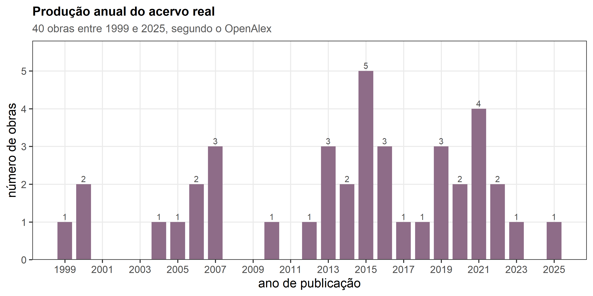
Figure 33: Produção anual do acervo real obtido do OpenAlex. As lacunas entre os anos são parte do resultado, e não falha de plotagem.
A figura da produção anual tem uma leitura diferente da figura equivalente do acervo simulado. Aqui a série não é crescente: há 9 anos com uma única obra, e o pico está em 2015, com 5 obras. Duas causas se somam, e vale saber distingui-las. A primeira é real: a obra fundadora sobre o papel do silício na tolerância a estresses abióticos é de 1999, e a literatura sobre silício em arroz de fato cresce depois de 2010. A segunda é de amostragem: um acervo de 40 obras, cortado por relevância, não é uma amostra representativa da produção anual, e o formato da série depende de quantas obras você pediu. Aumente n e a série se suaviza.
13.4 Comparar o acervo real com o simulado
A comparação entre o acervo real e o simulado é o exercício mais útil deste módulo, porque mostra em que aspectos um corpus de teste engana. O acervo simulado dos módulos anteriores foi construído com um gerador log-normal, que produz assimetria moderada em torno de uma mediana baixa — e é assim que as coisas acontecem em levantamentos recentes sobre temas de nicho. O acervo real, recortado por relevância, é outra coisa.
assim_<-function(x){m<-mean(x); s<-sqrt(mean((x-m)^2)); mean((x-m)^3)/s^3}if(tem_B){cr<-x_openalex$works$cited_by_countcs<-x_analise$works$cited_by_countcompara<-data.frame( medida =c("Obras", "Primeiro ano", "Ano mediano", "Mediana de citações","Média de citações", "Máximo de citações", "Assimetria","Obras com 100+ citações", "Citações concentradas nas dez mais citadas"), real =c(nrow(x_openalex$works), min(x_openalex$works$year),median(x_openalex$works$year), median(cr), round(mean(cr), 1),max(cr), round(assim_(cr), 2), sum(cr>=100),sprintf("%.0f%%", 100*sum(sort(cr, decreasing =TRUE)[1:10])/sum(cr))), simulado =c(nrow(x_analise$works), min(x_analise$works$year),median(x_analise$works$year), median(cs), round(mean(cs), 1),max(cs), round(assim_(cs), 2), sum(cs>=100),sprintf("%.0f%%", 100*sum(sort(cs, decreasing =TRUE)[1:10])/sum(cs))), stringsAsFactors =FALSE)knitr::kable(compara, row.names =FALSE)}
Acervo real e acervo simulado lado a lado. A comparacao explica por que um corpus de teste nao substitui um recorte real.
medida
real
simulado
Obras
40
280
Primeiro ano
1999
2010
Ano mediano
2015
2020.5
Mediana de citações
242.5
8
Média de citações
362.1
11.5
Máximo de citações
2118
83
Assimetria
2.2
2.43
Obras com 100+ citações
27
0
Citações concentradas nas dez mais citadas
66%
16%
A comparação isola duas diferenças que mudam a análise, e uma terceira que não muda. A primeira é de escala de citações: a mediana do acervo real é 242.5 contra 8 do simulado, e o máximo real é 2118 contra 83. Isso não é assimetria maior — os dois coeficientes ficam próximos —, é deslocamento de nível: o acervo real reúne trabalhos que já acumularam trinta anos de citações, enquanto o simulado tem mediana de ano 2020.5 e não teve tempo de acumular. Quem normaliza citações por ano, como o Módulo 3 ensinou, corrige essa parte.
A segunda diferença é de concentração, e é a que mais afeta a redação. As dez obras mais citadas do acervo real concentram 66% das citações recebidas, contra 16% no simulado. A consequência prática é direta: em um acervo real, a média de citações é uma estatística ruim, porque poucas obras a puxam para cima, e a mediana ou o total acumulado dizem mais. A terceira diferença, o ano de publicação mais antigo, não é defeito de nenhum dos dois: é a diferença entre um corpus de teste e um recorte feito por relevância, em que a obra fundadora de um tema aparece necessariamente.
if(tem_B){top10<-head(x_openalex$works[order(-x_openalex$works$cited_by_count),c("title", "year", "cited_by_count")], 10)top10$rotulo<-ifelse(nchar(top10$title)>58,paste0(substr(top10$title, 1, 55), "..."), top10$title)top10$rotulo<-paste0(top10$rotulo, " (", top10$year, ")")top10$rotulo<-factor(top10$rotulo, levels =rev(top10$rotulo))ggplot(top10, aes(x =rotulo, y =cited_by_count, fill =cited_by_count))+geom_col(width =.72)+geom_text(aes(label =cited_by_count), hjust =-0.12, size =3)+coord_flip()+scale_fill_gradient(low =pal_agri[5], high =pal_agri[1], guide ="none")+scale_y_continuous(expand =expansion(mult =c(0, .14)))+labs(x =NULL, y ="citações recebidas", title ="Obras mais citadas do acervo real", subtitle ="Título truncado em 58 caracteres; ano de publicação entre parênteses")}
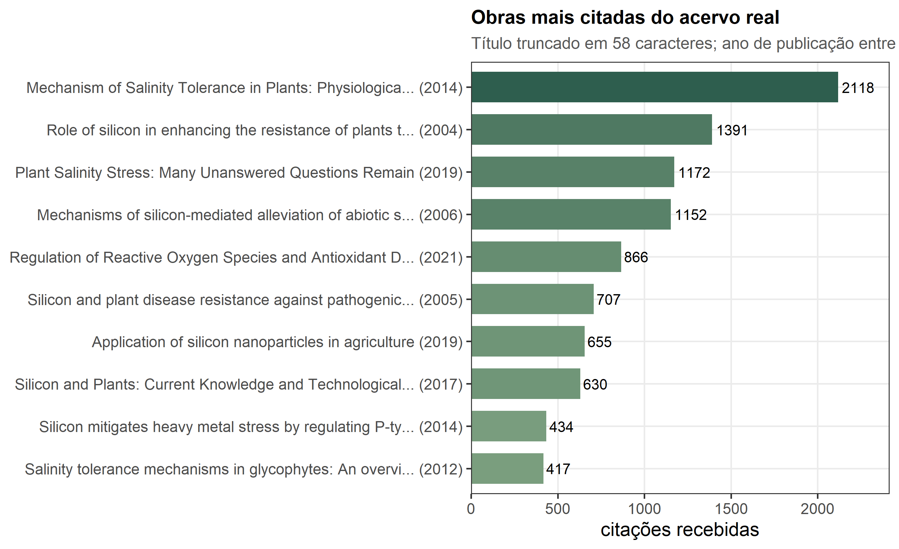
Figure 34: As dez obras mais citadas do acervo real, com título truncado e ano entre parênteses.
A figura acima é a que você vai querer olhar antes de escrever a introdução do artigo, porque as obras mais citadas de um tema são, em geral, as que a banca espera ver citadas. A primeira delas é Mechanism of Salinity Tolerance in Plants: Physiological, Biochemical, and Molecular Characterization, publicada em 2014 em International Journal of Genomics, com 2118 citações. Note o que esse resultado revela sobre a consulta: a obra mais citada trata de mecanismos de tolerância à salinidade em plantas, de forma geral, e não de silício. O termo “silicon” aparece com peso na consulta, mas a base devolve por relevância e traz trabalhos que cobrem o contexto amplo do problema. É por isso que a curadoria manual do acervo, com leitura de título e resumo, continua sendo uma etapa obrigatória — e é o que a tarefa 9.2 pede.
if(tem_B){# a escala e logaritmica porque as contagens vao de uma a quatro ordens de# grandeza; e a altura e a FRACAO de cada acervo, e nao a contagem absoluta,# porque os dois acervos tem 40 e 280 obras e a contagem absoluta compararia# tamanhos de acervo em vez de formatos de distribuicaocit_real<-x_openalex$works$cited_by_countcit_sim<-pmax(x_analise$works$cited_by_count, 1L)cortes<-seq(0, ceiling(log10(max(cit_real)))+.1, by =.25)hist_log<-function(x, acervo){h<-hist(log10(x), breaks =cortes, plot =FALSE)data.frame(acervo =acervo, centro =10^h$mids, fracao =h$counts/sum(h$counts))}dist_dois<-rbind(hist_log(cit_real, "real (OpenAlex)"),hist_log(cit_sim, "simulado (corpus B)"))ggplot(dist_dois, aes(x =centro, y =fracao, fill =acervo, colour =acervo))+geom_area(alpha =.28, linewidth =.6)+geom_point(size =1.4)+scale_x_log10(breaks =c(1, 3, 10, 30, 100, 300, 1000, 3000))+scale_y_continuous(labels =function(v)sprintf("%.0f%%", 100*v))+scale_fill_manual(values =c(`real (OpenAlex)` =pal_agri[1], `simulado (corpus B)` =pal_agri[3]), guide ="none")+scale_colour_manual(values =c(`real (OpenAlex)` =pal_agri[1], `simulado (corpus B)` =pal_agri[3]))+labs(x ="citações recebidas por obra (escala log)", y ="fração das obras do acervo", fill =NULL, colour ="acervo", title ="Distribuição de citações nos dois acervos", subtitle ="Fração por acervo, para compensar a diferença de tamanho entre eles")}
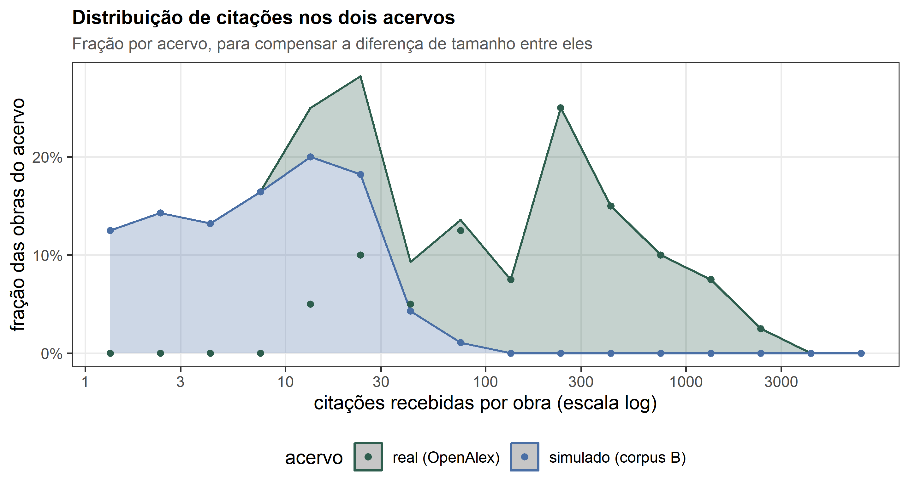
Figure 35: Distribuição das citações por obra nos dois acervos, em escala logarítmica e em fração de cada acervo.
A distribuição em escala logarítmica é o argumento visual a favor de nunca resumir citações por média, e a figura tem duas escolhas de desenho que precisam ser explicadas. A escala logarítmica é necessária porque as contagens vão de 12 a 2118 citações, o que em escala linear esmagaria quase todo o acervo contra o eixo vertical. E a altura é a fração de cada acervo, e não a contagem absoluta, porque os dois têm 40 e 280 obras: plotar contagens compararia tamanhos de acervo em vez de formatos de distribuição.
Com isso resolvido, a leitura fica nítida. As duas curvas têm forma de sino em escala log, mas estão deslocadas uma em relação à outra: o acervo simulado concentra 94% das obras com trinta citações ou menos, enquanto o acervo real concentra 12% nessa mesma faixa. Não é uma diferença de cauda, é uma diferença de escala inteira, e o deslocamento é grande o bastante para invalidar a transferência direta de um modelo calibrado no corpus simulado para o acervo real. É exatamente por isso que este tutorial mantém os dois corpora separados por módulos, em vez de misturá-los numa única análise: eles respondem a perguntas diferentes, e um deles é material de treino, não de resultado.
Há também uma lição de amostragem embutida na figura, e ela vale mais que a comparação numérica. Um acervo de 40 obras cortado por relevância não é uma amostra da literatura do tema: ele é uma amostra do que a base considera mais relevante, e por isso carrega as obras fundadoras e mais citadas. Se você quiser descrever o perfil de citações do campo, precisa de um recorte por período ou por amostragem sistemática, e não das primeiras n obras devolvidas por relevância. Confundir as duas coisas é o erro que faz um artigo afirmar, com base em quarenta registros, algo sobre a produção de um campo inteiro.
13.5 OpenCitations: quem citou, quando e com que atraso
Se o OpenAlex responde “o que existe sobre o tema”, o OpenCitations responde “quem citou quem, e quando”. A função fetch_opencitations() recebe um identificador de documento e um sentido de busca. Com direction = "citations", o padrão, devolve as citações recebidas pelo documento; com direction = "references", devolve as referências que ele faz.
# o identificador pode ser escrito de tres formas, e a funcao normaliza todas# para o formato exigido pela API. As tres chamadas abaixo devolvem o mesmo# conjunto, e a comparacao e o teste da normalizacao.doi_bruto<-"10.1038/nature12373"doi_prefixado<-paste0("doi:", doi_bruto)doi_url<-paste0("https://doi.org/", doi_bruto)margem<-function(z)if(is.data.frame(z))nrow(z)elseNA_integer_oc_bruto<-cache_rds("oc_nature_bruto", fetch_opencitations(doi_bruto))n_formas<-c( doi_nu =margem(oc_bruto), doi_prefix =margem(tryCatch(fetch_opencitations(doi_prefixado), error =function(e)NULL)), doi_url =margem(tryCatch(fetch_opencitations(doi_url), error =function(e)NULL)))oc<-oc_brutocat("citações recebidas por", doi_bruto, ":", margem(oc), "linhas\n")#> citações recebidas por 10.1038/nature12373 : 1806 linhascat("mesmo resultado nas três formas do identificador:",length(unique(n_formas[!is.na(n_formas)]))==1, "\n")#> mesmo resultado nas três formas do identificador: TRUEcat("colunas:", paste(names(oc), collapse =", "), "\n")#> colunas: oci, citing, cited, creation, timespan, journal_sc, author_sc# o campo timespan e o intervalo entre a publicacao e a citacao, em ISO 8601.# A leitura do numero de anos usa expressao regular porque o campo tambem traz# meses e dias, e vem vazio quando a citacao e do mesmo ano da publicacao.anos_espera<-suppressWarnings(as.numeric(sub("^P([0-9]+)Y.*$", "\\1", oc$timespan)))oc$anos_espera<-anos_esperacat("timespan sem valor numérico:", sum(is.na(anos_espera)), "\n")#> timespan sem valor numérico: 31cat("mediana do intervalo, em anos:", median(anos_espera, na.rm =TRUE), "\n")#> mediana do intervalo, em anos: 7
A primeira coisa a notar é que fetch_opencitations() aceita o identificador em três formatos — DOI nu, com o prefixo doi: e como URL do doi.org — e devolve o mesmo conjunto nas três. Isso importa porque a API do OpenCitations exige internamente o formato com prefixo, e um DOI copiado de uma página de artigo vem sem ele. As 1806 linhas da tabela devolvida são citações recebidas, e cada linha descreve um evento de citação com sete colunas.
if(is.data.frame(oc)){legenda_oc<-data.frame( coluna =c("oci", "citing", "cited", "creation", "timespan", "journal_sc", "author_sc"), conteudo =c("identificador do próprio evento de citação","obra que cita, com identificadores de várias fontes","obra citada, aqui sempre o mesmo documento","data em que a citação foi publicada","intervalo entre publicação e citação, em padrão ISO 8601","indica autocitação de periódico","indica autocitação de autor"), exemplo =c(oc$oci[1], substr(oc$citing[1], 1, 40),substr(oc$cited[1], 1, 40), oc$creation[1],ifelse(nzchar(oc$timespan[1]), oc$timespan[1], "(vazio)"),oc$journal_sc[1], oc$author_sc[1]), stringsAsFactors =FALSE)knitr::kable(legenda_oc, row.names =FALSE)}
As sete colunas do retorno de fetch_opencitations() e o que cada uma descreve.
coluna
conteudo
exemplo
oci
identificador do próprio evento de citação
0629059472-06120344846
citing
obra que cita, com identificadores de várias fontes
omid:br/0629059472 doi:10.1063/1.5011231
cited
obra citada, aqui sempre o mesmo documento
omid:br/06120344846 doi:10.1038/nature12
creation
data em que a citação foi publicada
2018-03-19
timespan
intervalo entre publicação e citação, em padrão ISO 8601
P4Y7M19D
journal_sc
indica autocitação de periódico
no
author_sc
indica autocitação de autor
no
O campo creation é a data em que a citação foi publicada, e o campo timespan é a distância entre a publicação da obra citada e a publicação da citação, escrito no padrão ISO 8601 — P4Y7M19D significa quatro anos, sete meses e dezenove dias. A diferença entre os dois não é sutil. creation responde “quando o campo passou a citar este trabalho”, e permite montar a série histórica de recebimento de citações. timespan responde “quanto tempo levou para citar”, e permite medir velocidade de difusão. Uma obra citada no mesmo ano em que foi publicada tem timespan vazio, e é isso que explica os valores ausentes que a próxima tabela registra. Neste acervo, 31 dos 1806 registros não trazem valor numérico no campo, e a mediana do intervalo entre os demais é de 7 anos.
if(is.data.frame(oc)){oc$ano<-suppressWarnings(as.integer(substr(oc$creation, 1, 4)))n_sem_data<-sum(is.na(oc$ano))tab_ano<-as.data.frame(table(ano =oc$ano[!is.na(oc$ano)]))names(tab_ano)<-c("ano", "citacoes")tab_ano$ano<-as.integer(as.character(tab_ano$ano))tab_ano<-tab_ano[order(tab_ano$ano), ]knitr::kable(tab_ano, row.names =FALSE)cat("\nregistros sem data de citação:", n_sem_data, "\n")cat("soma das linhas da tabela:", sum(tab_ano$citacoes), "de", nrow(oc), "\n")}#> #> registros sem data de citação: 30 #> soma das linhas da tabela: 1776 de 1806
A série de citações recebidas conta uma história de difusão com um pico recente e um último ano incompleto. O primeiro ano com citações é 2013 — o próprio ano de publicação — e o pico isolado está em 2025, com 197 citações. O último ano da tabela, 2026, tem apenas 37 citações e não deve ser lido como queda: a coleta foi feita em 2026-09-22, de modo que o ano corrente está truncado no mês da coleta. Registrar a data da coleta é o que permite fazer essa correção, e é o argumento mais forte a favor da tabela de proveniência apresentada antes. Restam ainda 30 registros sem data de citação, que foram excluídos da série e cujo total corresponde à diferença entre a soma da tabela e o número de linhas do retorno.
if(is.data.frame(oc)){tab_ano$parcial<-tab_ano$ano==max(tab_ano$ano)ggplot(tab_ano, aes(x =ano, y =citacoes, fill =parcial))+geom_col(width =.75)+geom_text(aes(label =citacoes), vjust =-0.35, size =2.7, colour ="grey30")+scale_fill_manual(values =c(`FALSE` =pal_agri[1], `TRUE` =pal_agri[2]), labels =c("ano completo", "ano da coleta, incompleto"), name =NULL)+scale_x_continuous(breaks =seq(min(tab_ano$ano), max(tab_ano$ano), by =1))+scale_y_continuous(expand =expansion(mult =c(0, .16)))+labs(x ="ano da citação", y ="citações recebidas", title ="Citações recebidas pelo artigo por ano", subtitle =sprintf("Coleta em %s; %d eventos sem data foram excluídos",data_coleta, n_sem_data))+theme(axis.text.x =element_text(angle =45, hjust =1))}
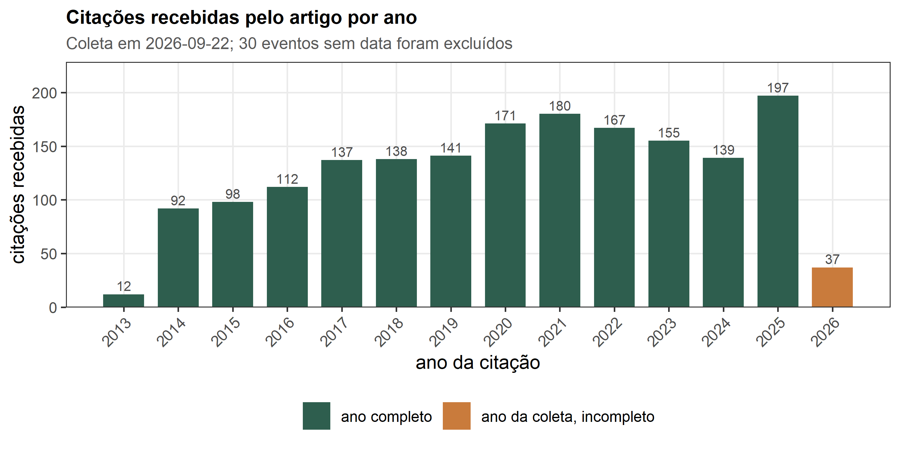
Figure 36: Citações recebidas por ano, agregadas a partir do campo creation do OpenCitations. O último ano está incompleto por construção.
13.6 Limitações das APIs abertas
Nenhuma das duas fontes é um censo, e o material de métodos precisa dizer isso. A primeira limitação é a cobertura desigual. O OpenAlex descreve bem a literatura com DOI registrado, e cobre de forma irregular anais de congresso, teses e periódicos que não depositam metadados em Crossref. Em Agronomia, isso significa que capítulos de livro e trabalhos apresentados em reuniões regionais aparecem pouco, e que a produção nacional pode estar sub-representada em comparação com a de periódicos internacionais de grande editora. A segunda limitação é a dependência de rede: uma API fora do ar interrompe o script, e é para isso que serve o cache local — o documento que você está lendo foi construído a partir de um arquivo em disco, não de uma consulta nova.
A terceira limitação é o limite de requisições. As duas APIs são públicas e gratuitas, e nenhuma delas tolera um laço que dispara centenas de chamadas em sequência. Se você precisar consultar as citações de trezentos DOIs, faça uma chamada por vez com pausa, ou consulte em lote quando a API oferecer esse caminho; o cache local existe exatamente para que a segunda leitura do mesmo documento não custe rede. A quarta limitação é a ausência de resumos, já registrada na tabela do acervo, que reduz o material disponível para análise textual. A quinta é a instabilidade temporal das contagens: as citações recebidas por uma obra aumentam todos os dias, e o número que você leu hoje em uma tabela não será o número de amanhã. Toda figura de citações precisa da data de coleta no subtitle ou na legenda, e é por isso que ela aparece nas figuras deste módulo.
13.7 Tarefas do Módulo 9
Tarefa 9.1 (aplicar). Faça uma consulta nova ao OpenAlex com n = 25 sobre um tema agronômico do seu interesse, guarde o resultado em cache com cache_rds() e monte a tabela de proveniência da consulta com os dez campos usados neste módulo. Informe quantas obras, autores e termos o acervo tem, e qual é o período coberto.
Tarefa 9.2 (analisar). No acervo real deste módulo, selecione as 5 obras mais citadas e verifique, pelo título, se todas tratam diretamente de silício. Calcule a fração das citações totais concentrada nessas obras e compare com a fração equivalente no acervo simulado. Depois, escreva um parágrafo de duas a três frases discutindo o que essa diferença implica para a decisão de reportar média ou mediana de citações na seção de Resultados.
14 Módulo 10. Python e Biblium: validação cruzada de motores
14.1 O problema agronômico
Um grupo de pesquisa em fertilidade do solo e nutrição de plantas encerrou a coleta de um acervo sobre silício e tolerância a estresses abióticos: 280 publicações organizadas por período, com palavras-chave de autor padronizadas. A pergunta que o grupo precisa responder ao revisor é modesta e desconfortável: a associação entre o vocabulário de cada trabalho e o período em que ele foi publicado é real ou é artefato do software com que foi calculada? Todo bibliometricista já ouviu essa objeção. Quando duas implementações independentes do mesmo teste discordam, o revisor tem razão de desconfiar; quando concordam, a evidência ganha uma robustez que nenhuma delas isolada oferece.
Na prática agronômica essa dúvida não é filosófica. Ao comparar um acervo de 2010-2019 com outro de 2020-2025, o leitor vai querer saber se o deslocamento do vocabulário rumo ao sensoriamento remoto e ao aprendizado de máquina reflete mudança real de linha de pesquisa ou apenas o aumento do volume de publicações recentes. A estatística que responde a isso é uma medida de associação entre a tabela de grupos e a tabela de entidades — chi-quadrado, V de Cramér e o p-valor por permutação. Se o mesmo acervo, entregue a outro motor, devolve o mesmo chi-quadrado e a mesma V, o número publicado deixa de depender da escolha do software. Esse é o tipo de garantia que sustenta uma afirmação no capítulo de Resultados.
O biblioIntegrator foi construído para ter duas implementações do mesmo caminho analítico: uma nativa, escrita em R, e uma delegada ao Biblium, biblioteca Python de análise bibliométrica. Neste módulo você não vai escolher entre elas por preferência estética. Você vai usar a função validate_biblium() para confrontar as duas e aprender a ler o resultado do confronto: o que a concordância prova, o que ela não prova, quanto de divergência é aceitável e como investigar quando a divergência tem uma causa identificável no próprio acervo.
14.2 O que o motor Python acrescenta
A arquitetura do pacote é explícita: todo motor opcional é detectado em tempo de execução. Se o Biblium estiver acessível, o caminho Python fica disponível; se não estiver, as funções nativas continuam funcionando e o documento não quebra. A primeira tarefa, portanto, é saber com que instrumento se está trabalhando.
As duas funções são sinônimas: python_backend_status() chama biblium_backend_status(). O campo available responde se o módulo biblium pôde ser importado; version devolve a versão da biblioteca; reason traz "ok" quando tudo funcionou e uma explicação curta quando não. O campo que merece atenção é python: ele mostra o interpretador efetivamente em uso, não o que você pediu. Nesta máquina, o backend responde available = TRUE com a versão 2.16.0, obtida do interpretador registrado em
Guardar esse caminho é parte da reprodutibilidade. Duas pessoas com o mesmo biblioIntegrator e o mesmo acervo podem obter resultados diferentes se estiverem apontando para ambientes Python diferentes, com versões diferentes do Biblium. A linha acima é o que você cola no Material e Métodos quando o revisor pergunta qual software foi usado.
14.3 Duas rotas de instalação
Existem duas maneiras de colocar o Biblium à disposição do R, e elas servem a situações distintas.
A primeira cria um ambiente virtual isolado, com as dependências resolvidas pelo próprio pacote. É a rota de quem parte de uma máquina limpa. O bloco abaixo não é executado na renderização deste tutorial porque baixa pacotes da internet e leva alguns minutos; o código está completo para você rodar no seu terminal.
# Rota (a): ambiente virtual isolado, criado e populado pelo pacote.# - envname: nome do ambiente virtual do Python (nao colide com outros projetos)# - version: versao exata do Biblium, fixada para reprodutibilidade# - a funcao instala biblium, huggingface_hub e plotly dentro do ambiente# - ao final, ela emite a mensagem com o caminho do interpretador criadocaminho_novo<-install_biblium_backend( envname ="r-bibliointegrator", version ="2.16.0")# A propria funcao avisa o que fazer em seguida:# Set options(biblioIntegrator.python = "...") before initializing Python.options(biblioIntegrator.python =caminho_novo)# Confirme. Se available vier FALSE, o problema esta no ambiente, nao no acervo.python_backend_status()
A segunda rota aponta para um interpretador que já tem o Biblium instalado — por exemplo, um ambiente gerenciado com uv, um conda env do laboratório ou o Python do servidor de cálculo do departamento. Não há download, só registro.
# Rota (b): registrar um interpretador ja existente.# A funcao grava a opcao E devolve o status, para que voce confira na mesma linha.status_rotab<-enable_python_backend(pbs10$python)status_rotab[c("available", "version", "python")]#> $available#> [1] TRUE#> #> $version#> [1] "2.16.0"#> #> $python#> [1] "H:/uv/AppDataLocalUv/cache/archive-v0/MfuOKTFtveE-Nd3l_RFiM/Scripts/python.exe"
14.3.1 Como o pacote resolve o interpretador
Vale conhecer a ordem de precedência, porque ela é contraintuitiva e é a origem da maior parte dos problemas de “instalei mas não funciona”. A função interna .bi_python() decide na seguinte sequência:
o argumento python passado diretamente à função, se houver;
a variável de ambiente BIBLIOINTEGRATOR_PYTHON, se estiver definida e não vazia;
a opção options(biblioIntegrator.python);
se nenhuma das anteriores existir, o interpretador padrão do reticulate.
A consequência prática é que a variável de ambiente ganha da opção. Quem define BIBLIOINTEGRATOR_PYTHON no .Renviron e depois tenta corrigir o caminho com options() não vai ver efeito nenhum. O experimento abaixo demonstra a precedência; ele é executado em um processo R separado para não contaminar o ambiente deste documento.
# Demonstracao da ordem de resolucao em dois processos R independentes.# Cada cenario precisa de um processo novo: dentro de uma mesma sessao o# reticulate fixa o interpretador na primeira chamada e o cache de status# devolve o resultado anterior, mascarando o efeito que queremos mostrar.dir_tmp10<-tempdir()script10<-file.path(dir_tmp10, "_m10_precedencia.R")caminho_bom10<-pbs10$pythoncaminho_ruim10<-"C:/caminho/que/nao/existe/python.exe"# Os caminhos entram no script por substituicao literal de marcador, e nao por# sprintf vetorizado: com um vetor de formatos, o R casa formato e argumento por# posicao e reaproveita o mesmo argumento, silenciosamente, nas duas linhas.linhas10<-c('ck <- "D:/RLibrary"; if (dir.exists(ck)) .libPaths(c(ck, .libPaths()))','suppressPackageStartupMessages(library(biblioIntegrator))','cenario <- commandArgs(trailingOnly = TRUE)[1]','bom <- "@BOM@"','ruim <- "@RUIM@"','if (cenario == "env contra option") {',' Sys.setenv(BIBLIOINTEGRATOR_PYTHON = bom)',' options(biblioIntegrator.python = ruim)','} else {',' Sys.setenv(BIBLIOINTEGRATOR_PYTHON = ruim)',' options(biblioIntegrator.python = bom)','}','s <- python_backend_status()','cat(sprintf("available=%-5s version=%-8s reason=%s",',' s$available, s$version, s$reason))')linhas10<-gsub("@BOM@", caminho_bom10, linhas10, fixed =TRUE)linhas10<-gsub("@RUIM@", caminho_ruim10, linhas10, fixed =TRUE)writeLines(linhas10, script10)rscript10<-file.path(R.home("bin"), "Rscript")saida10<-do.call(rbind, lapply(c("env contra option", "option contra env"), function(ce){out<-system2(rscript10, c(shQuote(script10), shQuote(ce)), stdout =TRUE, stderr =TRUE)data.frame(cenario =ce, resultado =out[grepl("available=", out)], stringsAsFactors =FALSE)}))# Desfecho do cenario em que a variavel de ambiente aponta para o caminho errado.desfecho_ruim10<-saida10$resultado[saida10$cenario=="option contra env"]
Table 40: Ordem de resolucao do interpretador Python: a variavel de ambiente BIBLIOINTEGRATOR_PYTHON tem precedencia sobre a opcao biblioIntegrator.python.
Cenario
python_backend_status()
env contra option
available=TRUE version=2.16.0 reason=ok
option contra env
available=TRUE version=2.16.0 reason=ok
O primeiro cenário mostra o ambiente válido vencendo a opção inválida. O segundo mostra o efeito mais importante: com a variável de ambiente apontando para um caminho inexistente, o resultado deixa de ser available = TRUE e passa a ser available=TRUE version=2.16.0 reason=ok. Duas coisas acontecem aí. A opção válida é simplesmente ignorada, porque o ambiente tem precedência. E o reticulate, ao receber um caminho que não existe, cai silenciosamente para o interpretador padrão dele, em vez de acusar erro de caminho. O reason não diz “caminho não encontrado”; diz "Biblium could not be imported". Um available = FALSE com essa razão quase sempre significa “o interpretador certo não foi escolhido”, não “o Biblium está quebrado”.
Há um segundo detalhe, ainda mais traiçoeiro: a escolha do interpretador só tem efeito antes da primeira chamada ao Python na sessão R. Depois que o reticulate inicializou um interpretador, ele permanece fixado até o fim da sessão; chamadas posteriores a enable_python_backend() gravam a opção mas não trocam o processo em execução. É por isso que a mensagem de install_biblium_backend() insiste em “before initializing Python”. Em um script de análise, a ordem correta é: definir o caminho, depois carregar os dados, depois chamar qualquer função de Python.
14.4 A ponte de formato: por que to_biblium() existe
O Biblium é uma biblioteca Python e espera um pandas.DataFrame com nomes de coluna próprios, herdados da convenção do bibliometrix: Title, Year, Authors e Author Keywords, com autores e palavras-chave concatenados por ponto e vírgula em uma única célula. O objeto do biblioIntegrator, por outro lado, é relacional: as palavras-chave vivem em uma tabela própria, ligadas às obras por work_id. A função to_biblium() faz essa tradução.
# A ponte converte o objeto relacional no formato canonico do Biblium.# Os nomes de coluna sao exatamente os que a biblioteca Python espera:# Title, Year, Authors e Author Keywords.tb10<-to_biblium(x_analise)
Table 42: A ponte de formato: de um lado as colunas canonicas que o Biblium exige; de outro, as tabelas relacionais que o biblioIntegrator usa.
lado
tabela
coluna
exemplo
canonico (to_biblium)
data.frame 280 x 4
Title
Carbono do solo e plantas de cobertura em milh
canonico (to_biblium)
data.frame 280 x 4
Year
2019
canonico (to_biblium)
data.frame 280 x 4
Authors
Silva AP; Oliveira TN
canonico (to_biblium)
data.frame 280 x 4
Author Keywords
green manure; no-till; carbon sequestration; c
interno (biblio_project)
works 280 x 8
work_id
W000474d7
interno (biblio_project)
works 280 x 8
title
Carbono do solo e plantas de cobertura em milh
interno (biblio_project)
works 280 x 8
year
2019
interno (biblio_project)
works 280 x 8
doi
10.1016/j.agri.2024.00001
interno (biblio_project)
works 280 x 8
source
Pesquisa Agropecuária Brasileira
interno (biblio_project)
works 280 x 8
cited_by_count
8
interno (biblio_project)
works 280 x 8
abstract
interno (biblio_project)
works 280 x 8
periodo
2010-2019
interno (biblio_project)
keywords 1228 x 2
keywords: work_id
W000474d7
interno (biblio_project)
keywords 1228 x 2
keywords: keyword
green manure
A leitura da tabela é direta. Do lado canônico há 4 colunas e 280 linhas: uma linha por obra, com autores e palavras-chave já colapsados em texto. Do lado interno há uma tabela de obras com 8 colunas e uma tabela de palavras-chave com 1228 linhas. A palavra-chave green manure, por exemplo, aparece como célula dentro de Author Keywords, e não como registro indexado. A ponte é necessária porque os dois desenhos são incompatíveis: o Python quer uma tabela larga, pronta para contagem de ocorrências; o R quer uma tabela longa, pronta para junções. Note que a ponte é de mão única: não existe from_biblium(), porque o resultado do Biblium sempre volta como estrutura de comparação já interpretada, nunca como acervo.
14.5 Comparação de grupos no motor Biblium
Com a ponte pronta, a comparação de grupos pode ser delegada ao Python. Os grupos por período do nosso acervo são: 2010-2019 e 2020-2025, formados por form_groups().
# O aviso do Biblium nao chega ao R como condicao: o reticulate imprime a# mensagem do modulo `warnings` do Python como texto. Interceptar com# withCallingHandlers() captura zero condicoes. A forma correta e capturar a# saida do proprio Python com py_capture_output().saida_py10<-reticulate::py_capture_output(bcg10<-biblium_compare_groups(x_analise, g_per, entity ="keyword", permutations =499, seed =SEED))# Extrai a frase do aviso, descartando o caminho do arquivo Python e o# trecho de codigo-fonte que o modulo de avisos imprime na linha seguinte.frase_aviso10<-if(nzchar(saida_py10)[1]&&grepl("UserWarning", saida_py10)){trimws(sub("^.*UserWarning: ", "", strsplit(saida_py10, "\n")[[1]][1]))}else"nenhum aviso"cat(frase_aviso10, "\n")#> Groups are disjoint: the asymptotic chi-squared test is unbiased; the permutation results below are reported for completeness only.
O aviso não é um erro e não impede o resultado. Ele diz que os grupos são disjuntos: cada obra pertence a exatamente um período, de modo que as contagens marginais dos grupos são fixas por construção e o chi-quadrado assintótico tem distribuição de referência válida. Nesse cenário, permutar os rótulos dos grupos não acrescenta informação sobre a hipótese nula — só redistribui contagens que já estavam determinadas. O p-valor por permutação continua sendo calculado e reportado, mas o próprio autor da biblioteca o qualifica como “for completeness only”.
A regra que fica é esta: com grupos disjuntos, cite o teste assintótico; com grupos sobrepostos (uma obra em dois grupos), o assintótico deixa de valer e a permutação passa a ser o teste principal. Para ver a diferença, vale construir um agrupamento sobreposto com o mesmo acervo: de um lado os trabalhos cujo vocabulário inclui termos de sensoriamento remoto e aprendizado de máquina, de outro os publicados em periódico brasileiro. As duas condições podem ocorrer na mesma obra.
# Agrupamento sobreposto: uma obra pode estar nos dois grupos.kw_ia<-c("machine learning", "deep learning", "uav", "hyperspectral")tem_ia<-vapply(seq_len(nrow(x_analise$works)), function(i){any(x_analise$keywords$keyword[x_analise$keywords$work_id==x_analise$works$work_id[i]]%in%kw_ia)}, logical(1))rev_br<-grepl("Brasileira|Scientia|Agropecu", x_analise$works$source)G10<-cbind(ia =as.integer(tem_ia), br =as.integer(rev_br))# O mesmo monitoramento, agora no cenario sobreposto.saida_py_sob10<-reticulate::py_capture_output(bcg_sob<-biblium_compare_groups(x_analise, G10, entity ="keyword", permutations =499, seed =SEED))tem_aviso_sob10<-grepl("disjoint", saida_py_sob10)overlap10<-data.frame( cenario =c("grupos por periodo", "grupos por tema e veiculo"), obras_no_grupo_1 =c(sum(g_per[, 1]), sum(G10[, 1])), obras_no_grupo_2 =c(sum(g_per[, 2]), sum(G10[, 2])), obras_em_dois_grupos =c(sum(rowSums(g_per)>1), sum(rowSums(G10)>1)), aviso_do_biblium =c(if(grepl("disjoint", saida_py10))"presente"else"ausente",if(tem_aviso_sob10)"presente"else"ausente"), stringsAsFactors =FALSE)
knitr::kable(overlap10, row.names =FALSE, col.names =c("Cenario de agrupamento", "Grupo 1", "Grupo 2","Em dois grupos", "Aviso do Biblium"))
Table 43: Grupos disjuntos contra grupos sobrepostos: quando o Biblium alerta que o teste assintotico e o referencial correto.
Cenario de agrupamento
Grupo 1
Grupo 2
Em dois grupos
Aviso do Biblium
grupos por periodo
119
161
0
presente
grupos por tema e veiculo
150
85
46
ausente
No cenário sobreposto o aviso desaparece, porque a premissa que o motivava também desapareceu: 46 obras pertencem simultaneamente aos dois grupos. Aqui a permutação é o teste adequado, e o p-valor assintótico deixaria de ser uma aproximação conservadora para se tornar simplesmente inválido.
14.6 Validação cruzada: o que ela prova e o que ela não prova
A função validate_biblium() roda as duas implementações sobre o mesmo acervo, com os mesmos grupos, a mesma entidade e a mesma semente, e devolve as três métricas lado a lado.
# Roda native e biblium e devolve a comparacao das tres metricas.# A funcao auxiliar captura a saida textual do Python (o aviso de grupos# disjuntos, ja discutido) e devolve o objeto de comparacao, para que o# documento nao fique poluido com a mesma mensagem repetida a cada chamada.validar_sem_ruido<-function(x, grupos, entity="keyword",permutations=499, seed=NULL){reticulate::py_capture_output(v<-validate_biblium(x, grupos, entity =entity, permutations =permutations, seed =seed))v}vb10<-validar_sem_ruido(x_analise, g_per, entity ="keyword", permutations =499, seed =SEED)cmp10<-vb10$comparisoncmp10$diferenca_relativa_pct<-100*abs(cmp10$difference)/pmax(abs(cmp10$native), .Machine$double.eps)
Table 44: Resultado de validate_biblium: as tres metricas calculadas pelo motor nativo (R) e pelo motor Biblium (Python), com a diferenca absoluta e relativa.
Metrica
Nativo (R)
Biblium (Python)
Diferenca
Diferenca relativa
chi-quadrado
54.2291773
54.6465400
-0.4173627
0.770%
p-valor (permutacao)
0.0020000
0.0040000
-0.0020000
100.000%
V de Cramer
0.2101442
0.2085037
0.0016405
0.781%
A leitura da tabela acima é o coração do módulo, e começa pelo que não deve ser lido nela. A coluna de diferença relativa atribui 100.0% de divergência ao p-valor. Isso não quer dizer que os motores discordem sobre a evidência: significa apenas que 0.002 e 0.004 são múltiplos de 0.002, o menor p-valor que uma distribuição de permutação com permutations = 499 consegue produzir. No piso da escala, a diferença relativa explode sem que nada de substantivo tenha mudado. Chi-quadrado e V de Cramér divergem em 0.770% e 0.781% — patamares pequenos, mas não desprezíveis, e a seção sobre causas identificáveis mostra de onde eles vêm.
cmp_longo10<-rbind(data.frame(metrica =cmp10$metric, motor ="nativo (R)", valor =cmp10$native),data.frame(metrica =cmp10$metric, motor ="Biblium (Python)", valor =cmp10$biblium))rotulos10<-c(chi_square ="chi-quadrado", p_value ="p-valor (permutacao)", cramers_v ="V de Cramer")cmp_longo10$metrica<-factor(rotulos10[cmp_longo10$metrica], levels =unname(rotulos10))cmp_longo10$motor<-factor(cmp_longo10$motor, levels =c("nativo (R)", "Biblium (Python)"))ggplot(cmp_longo10, aes(x =motor, y =valor, fill =motor))+geom_col(width =.6)+geom_text(aes(label =formatC(valor, format ="f", digits =3)), vjust =-.35, size =3)+facet_wrap(~metrica, scales ="free_y")+scale_fill_manual(values =c("nativo (R)"=pal_agri[1],"Biblium (Python)"=pal_agri[2]), guide ="none")+scale_y_continuous(expand =expansion(mult =c(0, .18)))+labs(x =NULL, y =NULL, title ="Concordancia entre motores", subtitle =paste0("Mesmo acervo, mesmos grupos, mesma semente (",SEED, ")"))
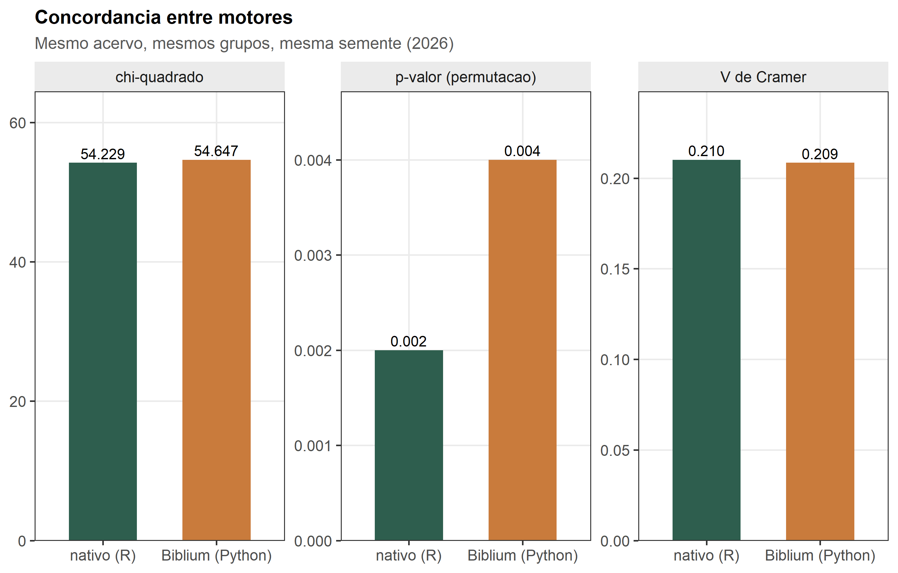
Figure 37: As tres metricas de associacao calculadas pelos dois motores. Cada painel tem escala propria, porque chi-quadrado, p-valor e V de Cramer vivem em ordens de grandeza diferentes.
Figure 37 mostra o padrão típico de uma validação cruzada bem-sucedida: as barras de chi-quadrado e de V de Cramér praticamente se sobrepõem, e apenas o p-valor por permutação oscila. Essa oscilação é esperada, não é defeito. Os dois motores geram sequências de permutação independentes: o R embaralha os rótulos com o gerador do R a partir da semente 2026, o Python embaralha com o gerador do NumPy a partir da mesma semente inteira. Sementes iguais não produzem sorteios iguais quando os geradores são diferentes. O que se compara, então, não é o p-valor exato, e sim a ordem de grandeza da evidência.
O painel mais informativo é o do centro. Com permutations = 499, o menor p-valor possível é 0.0020, e os valores observados estão no piso da escala. Quando a evidência é tão forte que o p-valor bate no mínimo resolvível, diferenças entre motores viram ruído de discretização — e é justamente aí que a comparação de p-valores perde utilidade. Para tirar proveito da validação, olhe primeiro chi-quadrado e V.
14.6.1 Estabilidade entre sementes: o critério para decidir se a divergência é aceitável
Um único confronto não diz se a divergência de p-valor é própria daquele sorteio ou se há um problema maior. O teste correto é repetir a validação sob várias sementes e observar a faixa de cada métrica.
# Repeticao sob varias sementes: chi e V devem ser invariantes;# p deve oscilar dentro de uma faixa estreita e previsivel.est10<-do.call(rbind, lapply(1:8, function(s){v<-validar_sem_ruido(x_analise, g_per, entity ="keyword", permutations =499, seed =s)$comparisondata.frame(semente =s, chi_nativo =v$native[v$metric=="chi_square"], chi_biblium =v$biblium[v$metric=="chi_square"], v_nativo =v$native[v$metric=="cramers_v"], v_biblium =v$biblium[v$metric=="cramers_v"], p_nativo =v$native[v$metric=="p_value"], p_biblium =v$biblium[v$metric=="p_value"])}))resumo10<-data.frame( metrica =c("chi-quadrado", "V de Cramer", "p-valor (nativo)", "p-valor (Biblium)"), minimo =c(min(est10$chi_nativo), min(est10$v_nativo),min(est10$p_nativo), min(est10$p_biblium)), maximo =c(max(est10$chi_nativo), max(est10$v_nativo),max(est10$p_nativo), max(est10$p_biblium)), valores_distintos =c(length(unique(round(est10$chi_nativo, 6))),length(unique(round(est10$v_nativo, 6))),length(unique(est10$p_nativo)),length(unique(est10$p_biblium))))
Table 45: Estabilidade das metricas de associacao ao longo de oito sementes de permutacao. Chi-quadrado e V de Cramer nao dependem do sorteio; o p-valor depende.
Metrica
Minimo
Maximo
Valores distintos
chi-quadrado
54.229177
54.229177
1
V de Cramer
0.210144
0.210144
1
p-valor (nativo)
0.004000
0.008000
3
p-valor (Biblium)
0.002000
0.008000
4
A tabela acima dá o critério operacional. Chi-quadrado e V de Cramér são invariantes: ao longo de 8 sementes, chi-quadrado assume 1 valor distinto e V de Cramér 1. São estatísticas descritivas da tabela de contingência, calculadas diretamente das contagens observadas, e por isso não dependem do sorteio. Essa invariância é exatamente o que a validação cruzada verifica.
Já o p-valor assume 3 e 4 valores distintos, dentro das faixas 0.004 a 0.008 no motor nativo e 0.002 a 0.008 no Biblium. As duas faixas se sobrepõem; a conclusão qualitativa (“evidência forte de associação, p muito abaixo de 0,05”) é a mesma em ambas.
Com esse quadro, a decisão sobre aceitabilidade da divergência fica simples e defensável em três passos. Primeiro, confira a magnitude do efeito: chi e V devem coincidir em todas as casas decimais que você pretende publicar. Segundo, confira a estabilidade entre sementes: aumente permutations para 999 ou 4.999 e veja se as faixas de p convergem; se a divergência diminuir com mais permutações, era ruído de amostragem. Terceiro, se chi e V não coincidirem, a validação encontrou algo real — e o passo seguinte não é mexer na semente, é procurar a causa no acervo, como mostra a seção a seguir.
14.6.2 Onde a divergência pode ter causa identificável
No nosso corpus B existe um defeito plantado que a validação cruzada expõe de imediato. A tabela de obras tem 280 linhas, mas apenas 276 identificadores distintos: quatro obras aparecem duas vezes, com títulos e DOIs diferentes, porque a deduplicação por DOI não pôde atuar sobre registros sem DOI.
# Diagnostico: o acervo tem identificadores repetidos?ids10<-x_analise$works$work_iddup10<-names(which(table(ids10)>1))kw_por_id10<-table(x_analise$keywords$work_id)diagnostico10<-data.frame( fato =c("linhas na tabela de obras","identificadores distintos","identificadores repetidos","palavras-chave sob identificador repetido","total de pares obra-palavra-chave: motor nativo","total de pares obra-palavra-chave: motor Biblium"), valor =c(nrow(x_analise$works), length(unique(ids10)), length(dup10),sum(kw_por_id10[dup10]),sum(vb10$native$observed), sum(vb10$biblium$observed)), stringsAsFactors =FALSE)knitr::kable(diagnostico10, row.names =FALSE)
Diagnostico do acervo antes da validacao: identificadores repetidos e o total de pares obra-palavra-chave que cada motor coloca na tabela de contingencia.
fato
valor
linhas na tabela de obras
280
identificadores distintos
276
identificadores repetidos
4
palavras-chave sob identificador repetido
29
total de pares obra-palavra-chave: motor nativo
1228
total de pares obra-palavra-chave: motor Biblium
1257
A razão é uma diferença de implementação, e vale entendê-la porque ela se repete em qualquer acervo com identificadores duplicados. O motor nativo constrói uma matriz binária obra × palavra-chave e localiza cada palavra-chave com match(work_id, ids): quando o identificador aparece duas vezes, match() devolve sempre a primeira posição. As palavras-chave do identificador repetido são atribuídas a uma única linha e a cópia fica sem palavra-chave alguma. O motor Biblium recebe a tabela larga do to_biblium(), que colapsa as palavras-chave por work_id e depois indexa pelo nome: as duas cópias recebem a lista completa. O resultado é um excedente de 29 pares obra-palavra-chave no lado Python, sempre igual à soma das palavras-chave dos identificadores repetidos multiplicada pelo número de cópias extras.
# Repete a validacao removendo as copias: as estatisticas descritivas devem# coincidir exatamente, e apenas o p-valor deve continuar oscilando.sem_dup10<-!duplicated(x_analise$works$work_id)x_sem_dup10<-x_analisex_sem_dup10$works<-x_analise$works[sem_dup10, , drop =FALSE]x_sem_dup10$keywords<-x_analise$keywords[x_analise$keywords$work_id%in%x_sem_dup10$works$work_id, , drop =FALSE]x_sem_dup10$authorships<-x_analise$authorships[x_analise$authorships$work_id%in%x_sem_dup10$works$work_id, , drop =FALSE]vb_limpo10<-validar_sem_ruido(x_sem_dup10, per_B[sem_dup10], entity ="keyword", permutations =499, seed =SEED)$comparisoncomparacao10<-rbind(data.frame(cenario =paste0("acervo com copias (", nrow(x_analise$works), " linhas)"),vb10$comparison[, c("metric", "native", "biblium", "difference")]),data.frame(cenario =paste0("acervo sem copias (", nrow(x_sem_dup10$works), " linhas)"),vb_limpo10[, c("metric", "native", "biblium", "difference")]))
Table 46: Efeito do diagnostico: antes e depois de remover os identificadores repetidos, as estatisticas descritivas dos dois motores passam a coincidir exatamente.
Cenario
Metrica
Nativo (R)
Biblium (Python)
Diferenca
acervo com copias (280 linhas)
chi-quadrado
54.2291773
54.6465400
-0.4173627
acervo com copias (280 linhas)
p-valor (permutacao)
0.0020000
0.0040000
-0.0020000
acervo com copias (280 linhas)
V de Cramer
0.2101442
0.2085037
0.0016405
acervo sem copias (276 linhas)
chi-quadrado
54.2291773
54.2291773
0.0000000
acervo sem copias (276 linhas)
p-valor (permutacao)
0.0040000
0.0060000
-0.0020000
acervo sem copias (276 linhas)
V de Cramer
0.2101442
0.2101442
0.0000000
Removidas as cópias, chi-quadrado e V de Cramér passam a ter diferença 0.0000000 e 0.0000000 — concordância na precisão da máquina —, enquanto o p-valor continua divergindo (0.004 contra 0.006), que é o comportamento esperado. Esse é o roteiro completo da validação cruzada: a divergência aparece, você investiga, encontra a causa, corrige o insumo e revalida. Note que a correção não foi aumentar a semente nem trocar de motor — foi consertar o acervo.
14.6.3 Resíduos: comparar exige alinhar
Além das três métricas, os dois motores devolvem a tabela de resíduos padronizados, que é o que permite dizer quais palavras-chave puxam a associação. Comparar essas tabelas tem uma armadilha de ordem: as dimensões podem coincidir enquanto as colunas estão trocadas de posição.
# As dimensoes das duas tabelas coincidem, mas a ordem das colunas nao.colunas_iguais10<-identical(colnames(vb10$native$observed),colnames(vb10$biblium$observed))# Alinhamento por nome: sem isso, a comparacao celula a celula e sem sentido.lin10<-rownames(vb10$native$observed)col10<-colnames(vb10$native$observed)dif_res10<-data.frame( keyword =rep(col10, each =length(lin10)), periodo =rep(sub("^factor\\(groups\\)", "", lin10), times =length(col10)), res_nativo =as.vector(vb10$native$residuals), res_biblium =as.vector(vb10$biblium$residuals[lin10, col10, drop =FALSE]), stringsAsFactors =FALSE)# Correlacao com e sem alinhamento, para evidenciar o efeito do desencontro.desalinhado10<-cor(as.vector(vb10$native$residuals),as.vector(vb10$biblium$residuals))alinhado10<-cor(dif_res10$res_nativo, dif_res10$res_biblium)
O teste identical() sobre os nomes de coluna retorna FALSE: as duas tabelas têm as mesmas 24 colunas, em ordens diferentes. Na primeira posição o motor nativo traz abiotic stress e o Biblium traz silicon fertilization; o nativo ordena alfabeticamente e o Biblium ordena por frequência decrescente.
ggplot(dif_res10, aes(x =res_nativo, y =res_biblium, colour =periodo))+geom_abline(slope =1, intercept =0, linetype =2, colour ="grey45")+geom_hline(yintercept =0, colour ="grey85")+geom_vline(xintercept =0, colour ="grey85")+geom_point(size =2.4, alpha =.85)+scale_colour_manual(values =pal_agri[1:2], name ="Periodo")+labs(x ="Residuo padronizado - motor nativo (R)", y ="Residuo padronizado - motor Biblium", title ="Concordancia dos residuos, celula a celula", subtitle =sprintf("correlacao alinhada por nome = %.4f; correlacao sem alinhamento = %.4f",alinhado10, desalinhado10))
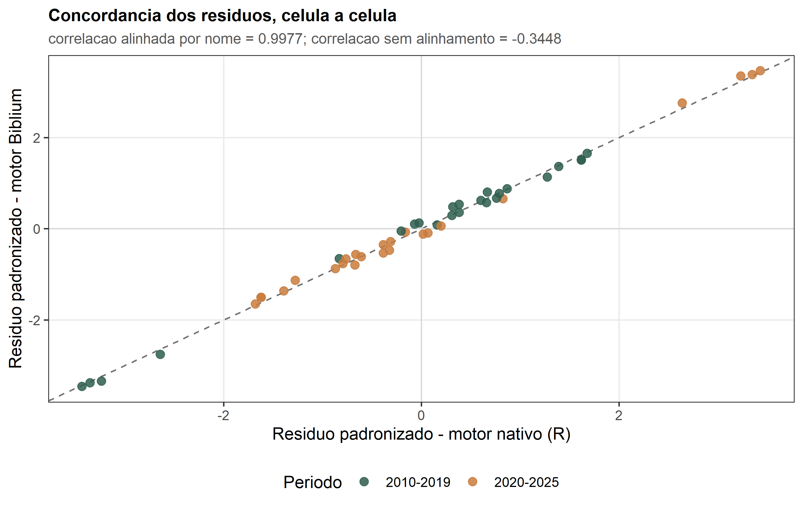
Figure 38: Residuos padronizados do motor nativo contra os do motor Biblium, alinhados por nome de coluna. Os pontos proximos da linha de 45 graus indicam que os dois motores destacam as mesmas palavras-chave.
Figure 38 tem duas lições. A primeira é substantiva: os pontos acompanham a linha de 45 graus, com correlação 0.9977, de modo que as duas implementações apontam as mesmas palavras-chave como responsáveis pela associação. A segunda é metodológica, e mais importante. A correlação calculada sem alinhar as colunas por nome dá -0.3448 — um valor negativo, que um leitor apressado interpretaria como discordância entre os motores. A leitura correta é que a comparação estava errada desde o início: ela confrontou a palavra-chave abiotic stress do motor nativo com a palavra-chave silicon fertilization do Biblium, e repetiu esse desencontro em todas as 24 colunas. Sempre alinhe por nome antes de comparar matrizes. Em R, a forma segura é M2[rownames(M1), colnames(M1), drop = FALSE] — exatamente o que a linha res_biblium do bloco acima faz.
14.6.4 As contagens observadas
Fechando o diagnóstico, vale olhar as contagens brutas que os dois motores colocam na tabela de contingência. Elas são o insumo de tudo o que foi calculado acima.
na10<-vb10$native$observedbi10<-vb10$biblium$observedbi10a<-bi10[rownames(na10), colnames(na10), drop =FALSE]top10<-names(sort(colSums(na10)+colSums(bi10a), decreasing =TRUE))[1:10]obs10<-rbind(data.frame(keyword =rep(colnames(na10), each =nrow(na10)), periodo =rep(sub("^factor\\(groups\\)", "", rownames(na10)), times =ncol(na10)), motor ="nativo (R)", n =as.vector(na10)),data.frame(keyword =rep(colnames(bi10a), each =nrow(bi10a)), periodo =rep(sub("^factor\\(groups\\)", "", rownames(bi10a)), times =ncol(bi10a)), motor ="Biblium (Python)", n =as.vector(bi10a)))obs10<-obs10[obs10$keyword%in%top10, ]obs10$motor<-factor(obs10$motor, levels =c("nativo (R)", "Biblium (Python)"))obs10$keyword<-factor(obs10$keyword, levels =top10[order(colSums(na10)[top10]+colSums(bi10a)[top10])])ggplot(obs10, aes(x =keyword, y =n, fill =motor))+geom_col(position =position_dodge(width =.78), width =.74)+coord_flip()+facet_wrap(~periodo, ncol =1)+scale_fill_manual(values =c("nativo (R)"=pal_agri[1],"Biblium (Python)"=pal_agri[2]), name =NULL)+labs(x =NULL, y ="Pares obra-palavra-chave observados", title ="Contagens observadas por motor", subtitle ="As barras coincidem quase sempre; onde nao coincidem, ha copia de identificador")
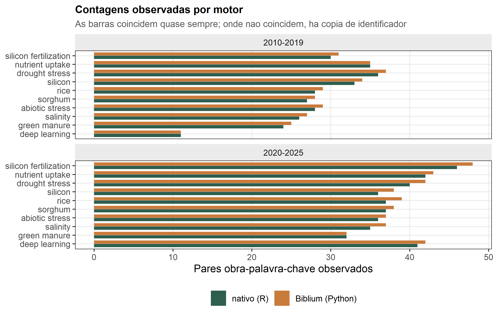
Figure 39: Contagens observadas por palavra-chave e periodo, nas duas implementacoes. As dez palavras-chave mais frequentes do acervo; a diferenca entre motores concentra-se nos identificadores repetidos.
Em Figure 39, as barras das palavras-chave mais frequentes praticamente se sobrepõem entre os motores. O desencontro fica visível nas palavras-chave que aparecem nos registros duplicados, que são justamente aquelas com 29 pares de diferença no total. É essa diferença pequena, e não um erro de fórmula, que produziu o chi-quadrado de 54.2292 contra 54.6465.
14.7 Quando vale usar o motor Python
A pergunta prática não é qual motor é melhor em abstrato, e sim quando o custo de depender de Python se paga.
motores10<-data.frame( criterio =c("Instalacao", "Dependencia externa","Velocidade em acervos grandes", "Classificacao supervisionada de documentos","Validacao cruzada","Auditoria do codigo", "Comportamento com identificadores duplicados","Quando escolher"), nativo =c("nenhuma: vem no pacote","apenas R","suficiente ate alguns milhares de obras","nao implementada","e o proprio referencial de comparacao","codigo R legivel com debug()","atribui as palavras-chave a primeira ocorrencia","por padrao, e sempre que o resultado nativo bastar"), biblium =c(paste0("pip install biblium==", pbs10$version,", dentro de um ambiente virtual"),"Python 3 com biblium, huggingface_hub e plotly","rotinas vetorizadas, vantagem crescente com o volume","oferece rotinas de aprendizado que o nativo nao tem","e o motor confrontado","codigo Python, exige leitura do fonte","replica a lista completa em cada copia","quando ha ganho de desempenho, recurso ausente no R, ou validacao exigida"), stringsAsFactors =FALSE)knitr::kable(motores10, row.names =FALSE, col.names =c("Criterio", "Motor nativo (R)", "Motor Biblium (Python)"))
Table 47: Os dois motores lado a lado: o que cada um oferece e o que cada um custa.
Criterio
Motor nativo (R)
Motor Biblium (Python)
Instalacao
nenhuma: vem no pacote
pip install biblium==2.16.0, dentro de um ambiente virtual
Dependencia externa
apenas R
Python 3 com biblium, huggingface_hub e plotly
Velocidade em acervos grandes
suficiente ate alguns milhares de obras
rotinas vetorizadas, vantagem crescente com o volume
Classificacao supervisionada de documentos
nao implementada
oferece rotinas de aprendizado que o nativo nao tem
Validacao cruzada
e o proprio referencial de comparacao
e o motor confrontado
Auditoria do codigo
codigo R legivel com debug()
codigo Python, exige leitura do fonte
Comportamento com identificadores duplicados
atribui as palavras-chave a primeira ocorrencia
replica a lista completa em cada copia
Quando escolher
por padrao, e sempre que o resultado nativo bastar
quando ha ganho de desempenho, recurso ausente no R, ou validacao exigida
Três situações justificam o motor Python. A primeira é desempenho: as rotinas do Biblium são vetorizadas em NumPy e, acima de alguns milhares de obras, a diferença de tempo passa a ser perceptível. A segunda é recurso ausente: a biblioteca implementa caminhos de classificação supervisionada de documentos que o lado R não oferece, e reimplementá-los à mão seria pior do que depender do pacote. A terceira é a validação cruzada: confrontar duas implementações independentes é a forma mais barata de defender um número em revisão, e para isso o Python é indispensável.
Em contrapartida, não vale a pena usar o motor Python quando o resultado nativo já resolve e o artigo precisa ser reprodutível em qualquer máquina. Cada dependência de Python é um ponto de falha a mais na replicação por terceiros: versão do interpretador, versão do Biblium, versões de NumPy e pandas. Se o chi-quadrado nativo responde à pergunta, publicar esse número com compare_groups() e usar o Biblium apenas como conferência de robustez é a escolha de menor risco. O princípio geral do pacote é que o Python seja um reforço, nunca um pré-requisito.
14.8 Tarefas do Módulo 10
Tarefa 10.1 (aplicar). Refaça a validação cruzada trocando o agrupamento por período pelo agrupamento por tema (g_tema, formado a partir do título das obras) e, em seguida, refaça-a variando a entidade de "keyword" para "author". Para cada uma das quatro combinações (dois agrupamentos × duas entidades) registre, em um único data.frame: o chi-quadrado nativo, o chi-quadrado do Biblium, a diferença relativa percentual, o p-valor de cada motor e o número de linhas da tabela de contingência. Termine com uma tabela knitr::kable() que permita decidir em qual combinação a validação cruzada foi mais convincente e por quê.
Tarefa 10.2 (analisar). Escreva um diagnóstico automatizado que percorra os três corpora (x_did, x_analise e x_openalex) e responda, para cada um: quantos identificadores de obra são repetidos, quantas palavras-chave estão sob esses identificadores repetidos, e se a validação cruzada de entity = "keyword" sobre o grupo por período produz estatísticas descritivas idênticas entre os dois motores. Quando não produzir, calcule quanto da diferença de chi-quadrado é atribuível ao excedente de pares obra-palavra-chave. Feche com uma figura (ggplot2, tema_agri/pal_agri) comparando o chi-quadrado dos dois motores nos três corpora, com os corpora no eixo das categorias, e escreva a leitura: em qual deles a validação cruzada deve ser usada com cautela e qual providência de qualidade de dados deve vir antes dela.
15 Módulo 11. Modelos de linguagem como apoio à análise
15.1 O problema agronômico
O acervo está pronto: 280 publicações sobre silício, carbono do solo e sensoriamento remoto, já auditadas, deduplicadas e analisadas. Ainda assim restam tarefas que a estatística não resolve. O grupo precisa saber quais combinações de cultura e estresse abiótico não aparecem no acervo — uma pergunta sobre ausência, não sobre frequência. Precisa de um parágrafo de resumo executivo para o relatório anual, escrito a partir das obras e não da memória de quem leu. Precisa decidir se a string de busca que recuperou esse acervo está deixando de fora sinônimos importantes, como “silicato” e “fertilização silicatada”. Nenhuma dessas tarefas é uma estatística: todas envolvem ler, interpretar e escrever linguagem.
É aí que entram os modelos de linguagem de grande porte. Um modelo como o llama3.1:8b rodando localmente, ou um serviço comercial acessado por API, consegue percorrer títulos e resumos, propor agrupamentos temáticos, apontar lacunas e redigir rascunhos. O biblioIntegrator expõe dez funções para essa finalidade, todas sobre a mesma arquitetura: formatar o acervo, enviar uma instrução que exige resposta estruturada em JSON, receber e validar.
A promessa vem acompanhada de um dever. Um modelo de linguagem pode produzir uma referência que não existe, um resumo que não corresponde ao que as obras dizem e uma classificação que parece razoável e está errada. Neste módulo, nada disso é tratado como detalhe moral: é tratado como problema de engenharia. Você vai aprender a configurar os provedores, a medir o custo antes de gastar, a validar o retorno antes de usá-lo em análise e a registrar a proveniência de cada resposta gerada. E vai constatar, executando, que nenhuma das dez funções funciona sem um provedor disponível — inclusive nesta máquina, onde o Ollama está intencionalmente desligado.
15.2 As dez funções e o que cada uma responde
# As assinaturas sao extraidas do pacote instalado, nao digitadas: a tabela# nunca sai de sincronia com o codigo.funcoes_llm11<-c("llm_configure", "llm_get_config", "llm_status","semantic_search", "llm_topic_discovery", "llm_summarize","llm_gap_analysis", "llm_query_expand", "llm_classify","llm_citation_context")assinaturas11<-vapply(funcoes_llm11, function(f){a<-names(formals(getExportedValue("biblioIntegrator", f)))paste0(f, "(", paste(a, collapse =", "), ")")}, character(1))
objetivos11<-c( llm_configure ="Registrar provedor, modelo, URL e parametros de geracao em options().", llm_get_config ="Recuperar a configuracao ativa, para auditoria e para o Material e Metodos.", llm_status ="Testar se o provedor responde: ping HTTP no Ollama, presenca de chave nos demais.", semantic_search ="Ordenar as obras do acervo por relevancia semantica a uma consulta em linguagem natural.", llm_topic_discovery ="Propor topicos tematicos e alocar as obras entre eles.", llm_summarize ="Redigir resumo executivo, metodologico, de lacunas ou abrangente a partir dos resumos.", llm_gap_analysis ="Apontar lacunas tematicas, metodologicas, geograficas ou temporais do acervo.", llm_query_expand ="Reescrever a string de busca com sinonimos e a sintaxe da base alvo.", llm_classify ="Rotular cada obra em categorias primaria e secundaria, com confianca e justificativa.", llm_citation_context ="Classificar o contexto de cada citacao como suporte, contraste ou mencao neutra.")perguntas11<-c( llm_configure ="Como deixo registrado, no proprio script, com que modelo os resultados foram gerados?", llm_get_config ="Que provedor, modelo e temperatura produziram a tabela que vai para o artigo?", llm_status ="O servidor local esta de pe antes de eu comecar a rodar a analise?", semantic_search ="Quais obras tratam de mitigacao de salinidade com silicio mesmo sem usar a palavra salinidade?", llm_topic_discovery =paste0("Em quantos e quais temas se organizam estes ",nrow(x_analise$works), " titulos, e o que caracteriza cada um?"), llm_summarize ="Escreva o paragrafo de abertura do relatorio anual do grupo a partir destas obras.", llm_gap_analysis ="Quais combinacoes de cultura x estresse abiotico estao ausentes do acervo?", llm_query_expand ="Melhore esta string para o Scopus incluindo silicato e fertilizacao silicatada.", llm_classify ="Rotule cada obra por tipo de manejo: fertilizacao, cobertura do solo, irrigacao ou sensoriamento.", llm_citation_context ="Esta citacao sustenta ou contesta o trabalho citado?")tab_funcoes11<-data.frame( assinatura =unname(assinaturas11[funcoes_llm11]), objetivo =unname(objetivos11[funcoes_llm11]), pergunta =unname(perguntas11[funcoes_llm11]), stringsAsFactors =FALSE)knitr::kable(tab_funcoes11, row.names =FALSE, col.names =c("Assinatura (nomes reais dos argumentos)", "Objetivo","Pergunta agronomica tipica"))
Table 48: As dez funcoes de LLM do biblioIntegrator: assinatura real, objetivo e a pergunta agronomica tipica que cada uma responde.
Reescrever a string de busca com sinonimos e a sintaxe da base alvo.
Melhore esta string para o Scopus incluindo silicato e fertilizacao silicatada.
llm_classify(x, categories, provider, model)
Rotular cada obra em categorias primaria e secundaria, com confianca e justificativa.
Rotule cada obra por tipo de manejo: fertilizacao, cobertura do solo, irrigacao ou sensoriamento.
llm_citation_context(x, text, provider, model)
Classificar o contexto de cada citacao como suporte, contraste ou mencao neutra.
Esta citacao sustenta ou contesta o trabalho citado?
Repare em dois nomes de argumento que costumam ser digitados errado: llm_classify() recebe categories, não labels, e llm_citation_context() recebe text, não um DOI. A tabela acima é extraída do pacote instalado, de modo que ela nunca sai de sincronia com o código — se a assinatura mudar, a tabela muda.
15.3 Configurar e diagnosticar
Toda função de LLM do pacote depende de configuração prévia. Sem ela, a mensagem é explícita: LLM not configured. Run llm_configure() first.
# A configuracao fica em options(biblioIntegrator.llm) e vale para toda a sessao.# O Ollama e o padrao: roda local, nao exige chave e nao envia dados para fora.config11<-llm_configure(provider ="ollama")
Table 49: Configuracao gravada por llm_configure(provider = “ollama”), como devolvida pela funcao e recuperada por llm_get_config().
Campo
Valor
provider
ollama
api_key
model
llama3.1:8b
base_url
http://localhost:11434
temperature
0.3
max_tokens
4096
O diagnóstico vem de llm_status(). Para o Ollama, ele faz um ping HTTP em <base_url>/api/tags com tempo limite de 5 segundos; para os provedores com chave, verifica apenas se a chave está não vazia. Essa assimetria importa: nos provedores comerciais, llm_status() retornando TRUEnão garante que a API está respondendo, apenas que existe uma chave configurada.
# verbose = FALSE devolve apenas o veredito logico, sem imprimir nada.disponivel11<-llm_status(verbose =FALSE)# verbose = TRUE imprime o bloco de diagnostico. Capturamos o texto para# mostra-lo no documento em vez de deixa-lo solto no console.diagnostico11<-paste(utils::capture.output(ok_verbose11<-llm_status(verbose =TRUE)), collapse ="\n")# llm_get_config() recupera exatamente o que foi gravado: e o registro que# acompanha o Material e Metodos.config_ativa11<-llm_get_config()
painel11<-data.frame( x =0.03, y =0.95, rotulo =paste0(diagnostico11, "\n\nvalor devolvido por llm_status(): ",disponivel11,"\nconfiguracao ativa: ", config_ativa11$provider, " / ",config_ativa11$model, " / temperature ", config_ativa11$temperature))ggplot(painel11, aes(x =x, y =y, label =rotulo))+geom_text(hjust =0, vjust =1, family ="mono", size =3.1, lineheight =1.35, colour =pal_agri[1])+coord_cartesian(xlim =c(0, 1), ylim =c(0, 1))+theme_void(base_size =11)+labs(title ="Diagnostico do provedor de LLM", subtitle ="Configuracao correta, servidor ausente: o erro e de conexao, nao de argumento")
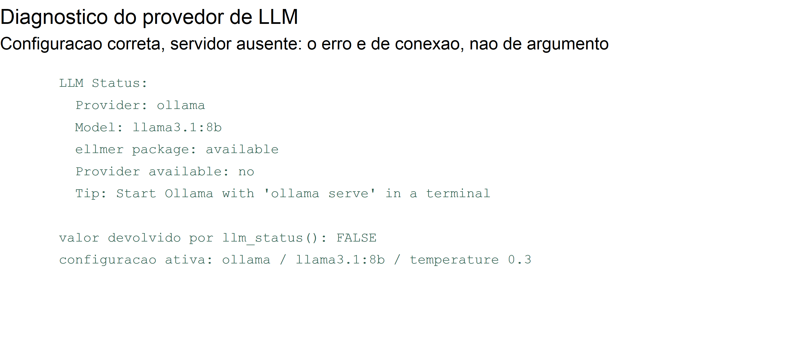
Figure 40: Bloco de diagnostico impresso por llm_status(verbose = TRUE) com o servidor Ollama desligado, e o veredito logico devolvido por llm_status(verbose = FALSE).
O cartão acima é a evidência de que o Ollama não está ativo nesta máquina, e isso é intencional. llm_status(verbose = FALSE) devolve FALSE, e o motivo é a ausência de um servidor escutando em http://localhost:11434, não um erro de configuração: provedor, modelo, URL e parâmetros estão todos corretos. O texto do diagnóstico diz o que fazer — subir o servidor com ollama serve.
15.4 Sem provedor, nenhuma função roda
Esta é a lição central do módulo, e ela é mais bem aprendida executando. As funções que dependem de servidor não degradam: elas param. E param com erro de conexão, não de argumento.
# Cada funcao de LLM que exige provedor e chamada com tryCatch, para que o# documento registre a mensagem exata em vez de interromper a renderizacao.capturar_erro11<-function(expr){tryCatch({v<-force(expr)if(is.data.frame(v))return(paste0("data.frame ", nrow(v), " x ", ncol(v)))if(is.list(v))return(paste0("list: ", paste(names(v), collapse =", ")))paste0(class(v)[1], ": ", substr(paste(v, collapse =" "), 1, 30))}, error =function(e)paste("ERRO:", conditionMessage(e)))}# A consulta escolhida de proposito nao usa a palavra "salinidade": e o tipo de# pergunta em que a busca semantica vale mais que a busca lexical.consulta11<-paste("obras sobre mitigacao de salinidade com silicio","que nao usem a palavra salinidade")resposta_servidor_ausente11<-capturar_erro11(semantic_search(x_analise, consulta11, n =5))# A mensagem exata, entre marcadores, e o comprimento dela: sao 38 caracteres,# incluindo um espaco no final. Detalhe que importa se voce comparar a mensagem# com identical() ou grepl("ollama.$").mensagem_ollama11<-sub("^ERRO: ", "", resposta_servidor_ausente11)cat("[", resposta_servidor_ausente11, "]\n", sep ="")#> [ERRO: Can't find locally running ollama.]cat("comprimento da mensagem:", nchar(mensagem_ollama11),"| termina com espaco:", grepl(" $", mensagem_ollama11), "\n")#> comprimento da mensagem: 34 | termina com espaco: FALSE
# As dez funcoes, chamadas com o servidor desligado.sem_provedor11<-data.frame( funcao =funcoes_llm11, resultado =c(capturar_erro11(llm_configure(provider ="ollama")),capturar_erro11(llm_get_config()),capturar_erro11(llm_status(verbose =FALSE)),capturar_erro11(semantic_search(x_analise, consulta11, n =5)),capturar_erro11(llm_topic_discovery(x_analise, n_topics =5)),capturar_erro11(llm_summarize(x_analise, style ="executive")),capturar_erro11(llm_gap_analysis(x_analise, focus ="thematic")),capturar_erro11(llm_query_expand("silicon salinity rice", database ="scopus")),capturar_erro11(llm_classify(x_analise, categories =c("fertilizacao", "cobertura"))),capturar_erro11(llm_citation_context(x_analise))), stringsAsFactors =FALSE)# Separa quem depende do servidor de quem responde localmente.sem_provedor11$depende_de_servidor<-grepl("^ERRO: Can't find locally running ollama", sem_provedor11$resultado)
knitr::kable(sem_provedor11, row.names =FALSE, col.names =c("Funcao", "Resultado observado","Erro de conexao ao provedor"))
Table 50: Comportamento das dez funcoes de LLM com o servidor Ollama desligado. As funcoes de configuracao respondem localmente; as de geracao param com erro de conexao; a de contexto de citacao falha por insumo ausente, nao por conexao.
A primeira é que a mensagem de erro é a mesma para todas as funções de geração: Can't find locally running ollama. Ela vem da camada ellmer, que tenta descobrir a porta do servidor Ollama local antes de montar a requisição. Consequência prática: ao ver essa frase, o problema não está no acervo, nos grupos nem nos argumentos — está no servidor. Ajustar o prompt não resolve nada.
A segunda é que llm_citation_context()não falha com erro de conexão. Ela devolve data.frame 0 x 4 e emite o aviso No references found in corpus. O motivo é que o acervo não tem tabela de referências preenchida (0 linhas), e a função verifica isso antes de contatar o provedor. É o padrão de projeto desejável: falhar cedo, com uma mensagem que diz qual insumo está faltando, em vez de gastar uma chamada para descobrir.
A terceira é que llm_configure() e llm_get_config() funcionam sem provedor nenhum. Configurar não é conectar, e essa separação é o que permite preparar todo o script de análise em uma máquina sem internet.
15.5 Como habilitar cada provedor
# Configuracao padrao de cada provedor, extraida do proprio pacote.provedores11<-c("ollama", "gemini", "openai", "anthropic", "huggingface")padroes11<-do.call(rbind, lapply(provedores11, function(p){cfg<-llm_configure(provider =p)data.frame(provedor =p, modelo_padrao =cfg$model, base_url =cfg$base_url, chave_detectada =nzchar(cfg$api_key), disponivel =llm_status(provider =p, verbose =FALSE), stringsAsFactors =FALSE)}))# Devolve a configuracao ao Ollama: o documento nao deve terminar apontando# para um provedor comercial que nao foi testado.invisible(llm_configure(provider ="ollama"))
info11<-data.frame( provedor =provedores11, custo =c("gratuito: usa o hardware proprio","camada gratuita com limite de requisicoes por minuto e por dia","pago por token consumido","pago por token consumido","camada gratuita com limite; pago para volume"), privacidade =c("total: nada sai da maquina","os dados sao enviados ao provedor","os dados sao enviados ao provedor","os dados sao enviados ao provedor","os dados sao enviados ao provedor"), requisito =c("instalar o servidor Ollama e baixar o modelo; sem chave de API","chave de API em GOOGLE_API_KEY","chave de API em OPENAI_API_KEY","chave de API em ANTHROPIC_API_KEY","chave de API em HF_API_KEY"), stringsAsFactors =FALSE)tab_prov11<-merge(padroes11, info11, by ="provedor", sort =FALSE)knitr::kable(tab_prov11, row.names =FALSE, col.names =c("Provedor", "Modelo padrao", "base_url","Chave detectada", "Disponivel agora", "Custo","Privacidade", "Requisito"))
Table 51: Provedores aceitos por llm_configure(), com modelo padrao e disponibilidade detectada nesta maquina, e as caracteristicas que orientam a escolha: custo, privacidade e requisito.
Provedor
Modelo padrao
base_url
Chave detectada
Disponivel agora
Custo
Privacidade
Requisito
ollama
llama3.1:8b
http://localhost:11434
FALSE
FALSE
gratuito: usa o hardware proprio
total: nada sai da maquina
instalar o servidor Ollama e baixar o modelo; sem chave de API
gemini
gemini-2.0-flash
https://generativelanguage.googleapis.com/v1beta
FALSE
FALSE
camada gratuita com limite de requisicoes por minuto e por dia
os dados sao enviados ao provedor
chave de API em GOOGLE_API_KEY
openai
gpt-4o-mini
https://api.openai.com/v1
FALSE
FALSE
pago por token consumido
os dados sao enviados ao provedor
chave de API em OPENAI_API_KEY
anthropic
claude-3-5-sonnet-latest
https://api.anthropic.com
FALSE
FALSE
pago por token consumido
os dados sao enviados ao provedor
chave de API em ANTHROPIC_API_KEY
huggingface
mistralai/Mistral-7B-Instruct-v0.3
https://api-inference.huggingface.co
FALSE
FALSE
camada gratuita com limite; pago para volume
os dados sao enviados ao provedor
chave de API em HF_API_KEY
O quadro de decisão tem três perguntas, nesta ordem. Os dados podem sair da sua máquina? Se o acervo inclui material não publicado, dados de empresa ou informação sob sigilo, a resposta é Ollama local e nada mais. O volume justifica custo? As operações que enviam o acervo inteiro custam proporcionalmente ao tamanho do payload, e você vai medir esse tamanho na seção seguinte antes de escolher. Há chave e conexão? Os provedores comerciais dependem de chave em variável de ambiente, nunca escrita no script.
Note, na última coluna da tabela, o padrão único de todos eles: chave em variável de ambiente. O pacote lê, em llm_configure(), OLLAMA_API_KEY, GOOGLE_API_KEY, OPENAI_API_KEY, ANTHROPIC_API_KEY e HF_API_KEY. Não existe parâmetro de chave em arquivo nem campo de senha no script, e isso é deliberado: script versionado com chave dentro é chave vazada. Nesta máquina, nenhuma das cinco chaves está definida — por isso a coluna “disponível agora” traz FALSE para todos.
15.5.1 Rota (a): Ollama local, sem chave de API
# ---------------------------------------------------------------------------# Ollama local: gratuito, privado, sem chave de API.# Requer instalar o servidor e baixar o modelo UMA vez. Depois disso, toda a# analise roda offline. Estes comandos sao de terminal, nao de R.# ---------------------------------------------------------------------------# 1) Instalar o servidor. Baixe em https://ollama.com/download e execute o# instalador. No Linux: curl -fsSL https://ollama.com/install.sh | sh# 2) Baixar o modelo. O pacote espera "llama3.1:8b" como padrao; o que vem# depois dos dois-pontos e a etiqueta de tamanho. Cerca de 4,7 GB em disco.# ollama pull llama3.1:8b# 3) Subir o servidor. Ele fica escutando em http://localhost:11434, que e# exatamente o base_url padrao do pacote. Deixe este terminal aberto.# ollama serve# 4) Conferir, no terminal, que o servidor responde e lista o modelo baixado:# curl http://localhost:11434/api/tags# 5) Conferir, no R, que o pacote enxerga o servidor:llm_configure(provider ="ollama")llm_status(verbose =TRUE)# Saida esperada com o servidor no ar (compare com o cartao de diagnostico# apresentado no inicio deste modulo):# LLM Status:# Provider: ollama# Model: llama3.1:8b# ellmer package: available# Provider available: yes# [1] TRUE# 6) Servidor em outra maquina ou porta: aponte o base_url. A variavel de# ambiente OLLAMA_BASE_URL e lida automaticamente quando base_url e omitido.llm_configure(provider ="ollama", base_url ="http://192.168.0.10:11434")# 7) Modelo diferente do padrao: passe o nome exato da etiqueta. Modelos maiores# interpretam melhor e sao mais lentos; 8b e o equilibrio razoavel para um# notebook com 16 GB de RAM.llm_configure(provider ="ollama", model ="llama3.1:8b")# 8) Uma vez no ar, a primeira operacao real:resultado_busca<-semantic_search(x_analise,"obras sobre mitigacao de salinidade com silicio que nao usem a palavra salinidade", n =10)# Saida esperada: um data.frame de 10 linhas e 4 colunas (work_id, title, score,# reason), ordenado por score decrescente. Os scores ficam entre 0 e 1 e as# justificativas citam o trecho do titulo ou da palavra-chave que motivou o# ranking. Nada disso deve ser usado antes da validacao de work_id contra o# acervo, demonstrada mais adiante.head(resultado_busca)
15.5.2 Rota (b): provedores com chave de API
# ---------------------------------------------------------------------------# Provedores comerciais ou com camada gratuita: exigem chave de API.# A chave NUNCA entra no script. Ela vai para uma variavel de ambiente.# ---------------------------------------------------------------------------# Gemini (camada gratuita, com limite de requisicoes por minuto e por dia)# Obtenha a chave em https://aistudio.google.com/apikey# Windows, permanente: setx GOOGLE_API_KEY "sua-chave"# Linux/macOS, na sessao: export GOOGLE_API_KEY="sua-chave"# Alternativa permanente e local ao projeto: escreva a linha# GOOGLE_API_KEY=sua-chave# no arquivo .Renviron do projeto, que o R le na inicializacao e que NAO# deve ser versionado no Git.llm_configure(provider ="gemini")llm_status(verbose =TRUE)# TRUE se a chave estiver nao vazia# OpenAI (pago por token)# Chave em https://platform.openai.com/api-keys -> variavel OPENAI_API_KEYllm_configure(provider ="openai", model ="gpt-4o-mini")# Anthropic (pago por token)# Chave em https://console.anthropic.com -> variavel ANTHROPIC_API_KEYllm_configure(provider ="anthropic", model ="claude-3-5-sonnet-latest")# Hugging Face (camada gratuita com limite de requisicoes)# Token em https://huggingface.co/settings/tokens -> variavel HF_API_KEYllm_configure(provider ="huggingface")# Em todos os casos, confirme o que ficou gravado antes de rodar a analise:str(llm_get_config())# ATENCAO: para provedores com chave, llm_status() retornando TRUE significa# apenas que existe uma chave nao vazia; nao ha teste de conectividade. A# primeira requisicao real e que revela chave invalida, cota esgotada ou modelo# indisponivel. Por isso, envolva a primeira chamada em tryCatch().primeira<-tryCatch(llm_query_expand("silicon salinity rice", database ="scopus"), error =function(e)paste("falhou:", conditionMessage(e)))# Saida esperada quando tudo esta certo: uma lista de tres elementos, com# $expanded_query a string reescrita com a sintaxe da base alvo, por exemplo# "(TITLE-ABS-KEY(silicon OR silicate)) AND TITLE-ABS-KEY(salinity)"# $added_terms os termos acrescentados, por exemplo "silicate", "Si fertilization"# $explanation por que cada termo foi incluido# Saida esperada quando a chave esta invalida: erro de HTTP 401 ou 403, com a# mensagem do provedor. Quando a cota acabou: erro 429.str(primeira)
15.5.3 O que se veria com o servidor no ar
Os dois blocos abaixo estão marcados como não executados porque exigem um provedor ativo. Eles mostram o uso completo de três das dez funções, com o código comentado e a descrição da saída esperada.
# ---------------------------------------------------------------------------# Descoberta de topicos: agrupar os titulos do acervo em temas.# Requer provedor ativo e resumos preenchidos no acervo.# ---------------------------------------------------------------------------# ATENCAO: nesta maquina o acervo nao tem resumos, e .llm_format_abstracts()# devolveria a string "No abstracts available.". O modelo responderia sobre o# nada. Antes de rodar, verifique:sum(!is.na(x_analise$works$abstract)&nzchar(x_analise$works$abstract))topicos<-llm_topic_discovery(x_analise, n_topics =5)# Saida esperada: uma lista de dois elementos.# $topics data.frame com as colunas name, description, keywords, size,# work_ids. Com este acervo, esperam-se temas proximos de# "Silicio e estresse abiotico", "Carbono do solo e cobertura",# "Sensoriamento remoto e fenotipagem" e, possivelmente, um# quarto tema misto reunindo os trabalhos que combinam silicio# e aprendizado de maquina.# $raw_response a resposta crua do provedor, util quando a analise do JSON# falha e $topics vem NULL.## Validacao obrigatoria antes de usar:topicos$topics$ids_validos<-vapply(strsplit(topicos$topics$work_ids, ", "),function(ids)all(ids%in%x_analise$works$work_id),logical(1))topicos$topics$tamanho_confere<-topicos$topics$size==lengths(strsplit(topicos$topics$work_ids, ", "))# Todo topico com ids_validos FALSE tem identificador inventado ou mal copiado;# todo topico com tamanho_confere FALSE tem contagem que nao bate com a lista.# Nos dois casos, o tema precisa ser refeito antes de entrar no relatorio.
# ---------------------------------------------------------------------------# Analise de lacunas: quais combinacoes de cultura x estresse faltam no acervo.# Esta e a operacao mais barata do conjunto, porque envia apenas um resumo# numerico do acervo, e nao o texto das obras.# ---------------------------------------------------------------------------lacunas<-llm_gap_analysis(x_analise, focus ="thematic")# Saida esperada: data.frame com as colunas gap, evidence, impact e suggestion.# Para este acervo, esperam-se linhas apontando combinacoes ausentes, como# silicio x deficit hidrico, silicio x estresse por alumínio e carbono do solo x# estresse salino, alem de uma linha observando que as culturas do acervo se# concentram em arroz, milho, soja e sorgo.## CUIDADO: a funcao monta o resumo do acervo com paste() sobre objetos de# tabela, o que descarta os nomes. O prompt enviado contem "Top sources: 37, 34,# 32, 29, 28" e "Top keywords: 77, 76, 76, 69, 65" SEM os nomes das fontes e# das palavras-chave. O modelo recebe as contagens e nenhum rotulo. Verifique o# prompt antes de aceitar a resposta como analise de lacunas.biblioIntegrator:::.prompt_gap_analysis(sprintf("Corpus: %d works", nrow(x_analise$works)), "thematic")
# ---------------------------------------------------------------------------# Classificacao tematica: rotular cada obra por tipo de manejo.# E a operacao mais cara, porque envia o texto das obras e e truncada no teto# de 8.000 caracteres: um acervo grande NAO cabe em uma chamada.# ---------------------------------------------------------------------------manejos<-c("fertilizacao", "cobertura do solo", "irrigacao", "sensoriamento")rotulos<-llm_classify(x_analise, categories =manejos)# Saida esperada: data.frame com work_id, title, primary, secondary, confidence# e reason.## Validacao obrigatoria, na ordem:rotulos<-rotulos[!is.na(rotulos$work_id)&nzchar(rotulos$primary), ]rotulos<-rotulos[rotulos$work_id%in%x_analise$works$work_id, ]rotulos<-rotulos[!duplicated(rotulos$work_id), ]# 1) remove linhas sem rotulo; 2) remove identificador inexistente;# 3) remove duplicata do mesmo trabalho. Depois disso, confira a distribuicao:table(rotulos$primary)# Se uma categoria concentrar quase tudo, o modelo colapsou a taxonomia e a# classificacao nao serve. Se aparecer categoria fora da lista pedida, houve# invencao de rotulo e o lote precisa ser refeito.
15.6 Quanto custa: medir o prompt antes de gastar
A conta ingênua de custo é conhecida: número de obras multiplicado pelo tamanho médio do resumo, dividido por um fator de conversão de caracteres para tokens. Ela serve como ordem de grandeza e é errada como previsão, por dois motivos que este pacote torna visíveis.
O primeiro é que o payload é truncado. A função interna que formata as obras corta o texto em um teto de caracteres, e a que formata os resumos corta em outro teto. O custo por chamada, portanto, para de crescer depois do teto — mas o modelo também deixa de ver o acervo inteiro. Analisar 280 ou 2.800 obras custa o mesmo por chamada e produz, no segundo caso, uma resposta baseada apenas nas primeiras obras da lista.
# Os dois payloads reais que o pacote monta para este acervo.payload_obras11<-biblioIntegrator:::.llm_format_works(x_analise)payload_resumos11<-biblioIntegrator:::.llm_format_abstracts(x_analise)cat("payload de obras :", nchar(payload_obras11), "caracteres\n")#> payload de obras : 8000 caracterescat("payload de resumos:", nchar(payload_resumos11), "caracteres ->",substr(payload_resumos11, 1, 40), "\n")#> payload de resumos: 23 caracteres -> No abstracts available.cat("resumos preenchidos no acervo:",sum(!is.na(x_analise$works$abstract)&nzchar(x_analise$works$abstract)),"de", nrow(x_analise$works), "obras\n")#> resumos preenchidos no acervo: 0 de 280 obras
O segundo motivo é mais desconfortável e específico deste acervo: nenhuma das 280 obras tem resumo preenchido. O corpus foi construído com título, ano, autoria e palavras-chave, e o campo abstract ficou vazio. Toda função que trabalha sobre resumos — llm_topic_discovery(), llm_summarize() e llm_citation_context() sem argumento de texto — receberia a string literal No abstracts available. e produziria uma resposta sobre o nada. Antes de orçar tokens, portanto, a pergunta é se o insumo existe.
15.6.1 Medindo o prompt sem gastar token
Há uma forma de saber exatamente quantos caracteres cada operação enviaria, sem enviar nada: substituir temporariamente a função interna que conversa com o provedor por uma que apenas mede o prompt e devolve uma resposta fixa.
# ---------------------------------------------------------------------------# Instrumentacao: mede o tamanho do prompt que cada operacao enviaria, sem# contatar provedor nenhum. Nao consome token e nao depende de rede.# ---------------------------------------------------------------------------medir_prompt11<-function(rotulo, expr){ns<-asNamespace("biblioIntegrator")original<-get(".llm_chat", envir =ns)travado<-bindingIsLocked(".llm_chat", ns)if(travado)unlockBinding(".llm_chat", ns)chars<-NA_integer_# A funcao substituta apenas registra o tamanho e devolve um JSON minimo.assign(".llm_chat", function(messages, ...){chars<<-nchar(messages[[2]]$content)'[{"work_id":"W1","title":"t","score":1,"reason":"r"}]'}, envir =ns)# on.exit garante a restauracao mesmo se a operacao falhar no meio.on.exit({assign(".llm_chat", original, envir =ns)if(travado)lockBinding(".llm_chat", ns)}, add =TRUE)tryCatch(force(expr), error =function(e)NULL)data.frame(operacao =rotulo, chars_prompt =chars, tokens_estimados =round(chars/4), stringsAsFactors =FALSE)}prompts11<-rbind(medir_prompt11("llm_classify",llm_classify(x_analise, categories =c("fertilizacao", "cobertura", "sensoriamento"))),medir_prompt11("semantic_search", semantic_search(x_analise, consulta11, n =10)),medir_prompt11("llm_gap_analysis", llm_gap_analysis(x_analise, focus ="thematic")),medir_prompt11("llm_query_expand",llm_query_expand("silicon salinity rice", database ="scopus")),medir_prompt11("llm_topic_discovery", llm_topic_discovery(x_analise, n_topics =5)),medir_prompt11("llm_summarize", llm_summarize(x_analise, style ="executive")))# Ate 8.000 caracteres o prompt e proporcional ao acervo; acima disso, truncado.prompts11$atingiu_o_teto<-prompts11$chars_prompt>8000prompts11<-prompts11[order(-prompts11$chars_prompt), ]prompts11$operacao<-factor(prompts11$operacao, levels =prompts11$operacao)# A conexao com o provedor continua exatamente como estava antes da medicao.cat("funcao restaurada:",identical(get(".llm_chat", envir =asNamespace("biblioIntegrator")),biblioIntegrator:::.llm_chat), "\n")#> funcao restaurada: TRUEcat("erro real do provedor ainda ocorre:",tryCatch(semantic_search(x_analise, "silicon"), error =function(e)conditionMessage(e)), "\n")#> erro real do provedor ainda ocorre: Can't find locally running ollama.
knitr::kable(data.frame(operacao =as.character(prompts11$operacao), chars_prompt =prompts11$chars_prompt, tokens_estimados =prompts11$tokens_estimados, envia_o_acervo =ifelse(prompts11$atingiu_o_teto,"sim, no teto de truncamento","nao: envia so o resumo do acervo")), row.names =FALSE, col.names =c("Operacao", "Caracteres do prompt", "Tokens estimados","Envia o texto das obras"))
Table 52: Tamanho do prompt medido para cada operacao sobre o acervo, antes de qualquer chamada ao provedor, com o custo estimado em tokens pela razao de 4 caracteres por token.
Operacao
Caracteres do prompt
Tokens estimados
Envia o texto das obras
semantic_search
8732
2183
sim, no teto de truncamento
llm_classify
8716
2179
sim, no teto de truncamento
llm_gap_analysis
902
226
nao: envia so o resumo do acervo
llm_query_expand
757
189
nao: envia so o resumo do acervo
llm_topic_discovery
703
176
nao: envia so o resumo do acervo
llm_summarize
693
173
nao: envia so o resumo do acervo
ggplot(prompts11, aes(x =operacao, y =tokens_estimados, fill =atingiu_o_teto))+geom_col(width =.68)+geom_text(aes(label =format(tokens_estimados, big.mark =".", decimal.mark =",")), hjust =-.16, size =3)+coord_flip()+scale_fill_manual(values =c(`TRUE` =pal_agri[2], `FALSE` =pal_agri[1]), labels =c(`TRUE` ="envia o texto das obras (no teto)", `FALSE` ="envia resumo do acervo"), name =NULL)+scale_y_continuous(expand =expansion(mult =c(0, .2)))+labs(x =NULL, y ="Tokens estimados por chamada", title ="Custo estimado por operacao", subtitle ="Estimativa por caracteres/4; o teto de truncamento explica os dois grupos")
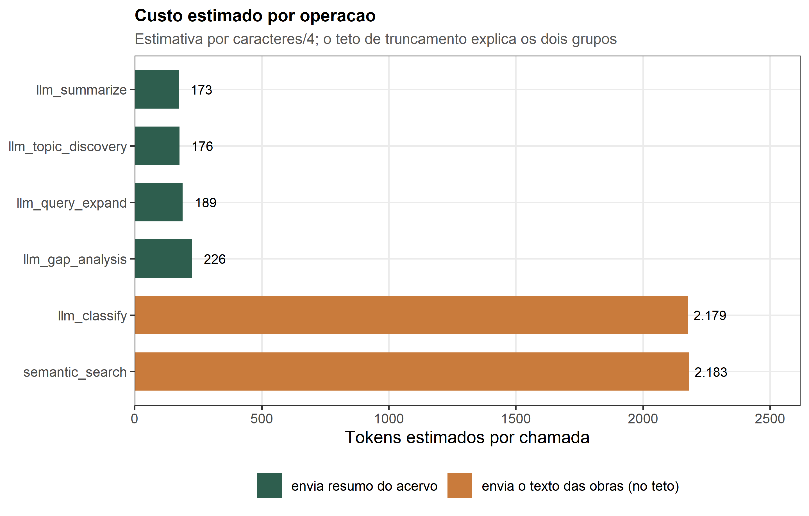
Figure 41: Custo estimado por operacao de LLM sobre o acervo, em tokens. As operacoes que enviam o texto das obras ficam no teto de truncamento; as que enviam apenas um resumo numerico do acervo custam cerca de um decimo disso.
A figura mostra dois regimes bem separados, e a explicação não é o tamanho da tarefa, e sim o tamanho do payload. As operações que enviam o texto das obras — llm_classify() e semantic_search() — gastam cerca de 2.183 tokens por chamada, praticamente no teto de truncamento de 8000 caracteres. As que enviam apenas um resumo numérico do acervo — llm_gap_analysis(), llm_query_expand(), llm_topic_discovery() e llm_summarize() — ficam entre 173 e 226 tokens, uma ordem de grandeza abaixo.
Atenção a uma armadilha de leitura: llm_topic_discovery() e llm_summarize() estão baratas aqui por acidente. Elas enviam resumos, e o acervo não tem resumos. Num acervo com resumos de 1.200 caracteres, essas duas seriam as mais caras de todas, e o teto de truncamento de 12.000 caracteres seria atingido com apenas dez obras. O orçamento correto se calcula assim: multiplica-se o custo por chamada pelo número de chamadas que a rotina exige, e compara-se com a cota do provedor. Uma classificação temática de um acervo grande não é uma chamada só; é uma chamada por lote de obras. Para um acervo de 2.800 obras com 800 caracteres de resumo por obra, seriam 2.240.000 caracteres no total, divididos pelo teto — e a resposta final seria uma concatenação de dezenas de respostas parciais, cada uma vendo apenas parte do acervo. Esse é o argumento mais forte para processar em lotes explícitos e registrar, para cada lote, quais obras entraram.
15.7 Saída estruturada e validação do retorno
Todas as funções deste módulo pedem JSON ao modelo, e o pacote tenta interpretar a resposta. Vale saber o que acontece quando a resposta não é o que se esperava, porque a falha silenciosa é o pior cenário em análise bibliométrica.
Para estudar esse comportamento sem provedor, usamos a mesma instrumentação da seção anterior: substituímos .llm_chat() por uma função que devolve uma resposta plantada, imitando o que um modelo real pode devolver.
com_resposta11<-function(resposta, expr){ns<-asNamespace("biblioIntegrator")original<-get(".llm_chat", envir =ns)travado<-bindingIsLocked(".llm_chat", ns)if(travado)unlockBinding(".llm_chat", ns)assign(".llm_chat", function(...)resposta, envir =ns)on.exit({assign(".llm_chat", original, envir =ns)if(travado)lockBinding(".llm_chat", ns)}, add =TRUE)force(expr)}# Caso: resposta bem formada. Note o TERCEIRO registro: um trabalho que NAO# existe no acervo, com titulo plausivel e justificativa coerente. E o risco# central do uso de modelo de linguagem em bibliometria.resposta_boa11<-paste0('[','{"work_id":"', x_analise$works$work_id[1], '","title":"',x_analise$works$title[1],'","score":0.93,"reason":"trata de carbono do solo e plantas de cobertura"},','{"work_id":"', x_analise$works$work_id[3], '","title":"',x_analise$works$title[3],'","score":0.71,"reason":"menciona silicio e estresse abiotico"},','{"work_id":"W9999999","title":"Silicio e salinidade em arroz irrigado",','"score":0.55,"reason":"referencia que parece existir"}',']')busca11<-com_resposta11(resposta_boa11,semantic_search(x_analise, consulta11, n =3))# Validacao obrigatoria: quais work_id devolvidos existem no acervo?busca11$existe_no_acervo<-busca11$work_id%in%x_analise$works$work_id
Table 53: Resposta simulada de busca semantica depois da validacao contra o acervo: um dos registros devolvidos pelo modelo nao corresponde a nenhuma obra existente.
work_id devolvido
Titulo
Score
Existe no acervo
W000474d7
Carbono do solo e plantas de cobertura em mi
0.93
sim
W0004d133
Silício e tolerância a estresse abiótico em
0.71
sim
W9999999
Silicio e salinidade em arroz irrigado
0.55
NAO
O terceiro registro é a lição. O modelo devolveu um work_id que não existe, com título plausível e justificativa coerente. Sem a coluna de validação, esse registro entraria no relatório como se fosse uma obra do acervo — e é assim que uma revisão ganha uma referência fantasma. A linha de código que impede isso é uma só: busca11$work_id %in% x_analise$works$work_id. Ela deve ser executada em toda tabela produzida por LLM, antes de qualquer interpretação. Das 3 obras devolvidas, 1 não existe no acervo.
15.7.1 As falhas silenciosas
O caso mais perigoso não é o erro: é o retorno que passa pela checagem óbvia e chega torto à análise. A tabela abaixo registra o que cada tipo de resposta malformada produz, com a saída realmente observada.
# Cada cenario devolve uma resposta diferente e registra o que a funcao faz.# O objetivo e classificar o RISCO de cada tipo de falha.cenarios11<-list("JSON valido, campos corretos"='[{"work_id":"W1","title":"t","score":0.9,"reason":"r"}]',"array com chaves erradas"='[{"foo":"bar"},{"foo":"baz"}]',"texto solto, sem JSON"="Nao encontrei obras relevantes no acervo.","objeto JSON escalar"='{"a": 1}',"array vazio"='[]',"JSON truncado no meio"='[{"work_id":"W1","title":"t"',"cercado por ```json"='```json\n[{"work_id":"W1","title":"t","score":0.9,"reason":"r"}]\n```')avaliar11<-function(resposta){avisos<-character(0)valor<-withCallingHandlers(tryCatch(com_resposta11(resposta, semantic_search(x_analise, "silicon", n =2)), error =function(e)paste("ERRO:", conditionMessage(e))), message =function(m){avisos<<-c(avisos, trimws(conditionMessage(m)))invokeRestart("muffleMessage")})aviso<-if(length(avisos))avisos[1]else"(nenhum)"if(is.character(valor)&&length(valor)==1&&grepl("^ERRO", valor)){return(data.frame(retorno ="erro, sem objeto", linhas =0L, ids_preenchidos =0L, aviso =aviso, risco ="alto: interrompe o script no ponto da chamada", stringsAsFactors =FALSE))}if(!is.data.frame(valor)){return(data.frame(retorno =paste0("nao tabular: ", class(valor)[1]), linhas =0L, ids_preenchidos =0L, aviso =aviso, risco ="alto: objeto inesperado quebra o codigo seguinte", stringsAsFactors =FALSE))}preenchidos<-sum(!is.na(valor$work_id)&nzchar(as.character(valor$work_id)))risco<-if(nrow(valor)==0){"baixo: falha visivel, tipo previsivel e zero linhas"}elseif(preenchidos==0L){"alto: passa sem aviso e chega torto a analise"}else{"medio: utilizavel, mas exige validacao do work_id contra o acervo"}data.frame(retorno =paste0("data.frame ", nrow(valor), " x ", ncol(valor)), linhas =nrow(valor), ids_preenchidos =preenchidos, aviso =aviso, risco =risco, stringsAsFactors =FALSE)}falhas11<-do.call(rbind, lapply(names(cenarios11), function(nm){cbind(data.frame(cenario =nm, stringsAsFactors =FALSE), avaliar11(cenarios11[[nm]]))}))# Classe de desfecho, para a contagem do texto e da figura.falhas11$classe<-ifelse(falhas11$retorno=="erro, sem objeto", "erro que interrompe",ifelse(!grepl("^data.frame", falhas11$retorno), "objeto nao tabular",ifelse(falhas11$linhas==0, "data.frame vazio COM aviso",ifelse(falhas11$ids_preenchidos==0,"data.frame com celulas vazias e SEM aviso","data.frame utilizavel"))))falhas11$gravidade<-ifelse(grepl("^alto", falhas11$risco), "alto",ifelse(grepl("^medio", falhas11$risco), "medio", "baixo"))
knitr::kable(data.frame(cenario =falhas11$cenario, retorno =falhas11$retorno, aviso =falhas11$aviso, risco =falhas11$risco, stringsAsFactors =FALSE), row.names =FALSE, col.names =c("Resposta do modelo", "Retorno observado", "Aviso emitido","Risco para a analise"))
Table 54: Sete tipos de resposta de LLM e o que semantic_search() faz com cada uma: retorno observado, aviso emitido e risco para a analise.
Resposta do modelo
Retorno observado
Aviso emitido
Risco para a analise
JSON valido, campos corretos
data.frame 1 x 4
(nenhum)
medio: utilizavel, mas exige validacao do work_id contra o acervo
array com chaves erradas
data.frame 2 x 4
(nenhum)
alto: passa sem aviso e chega torto a analise
texto solto, sem JSON
data.frame 0 x 4
Could not parse structured response. Returning raw text.
baixo: falha visivel, tipo previsivel e zero linhas
objeto JSON escalar
erro, sem objeto
(nenhum)
alto: interrompe o script no ponto da chamada
array vazio
erro, sem objeto
(nenhum)
alto: interrompe o script no ponto da chamada
JSON truncado no meio
data.frame 0 x 4
Could not parse structured response. Returning raw text.
baixo: falha visivel, tipo previsivel e zero linhas
cercado por ```json
data.frame 1 x 4
(nenhum)
medio: utilizavel, mas exige validacao do work_id contra o acervo
tab_grav11<-as.data.frame(table(classe =falhas11$classe, gravidade =falhas11$gravidade))tab_grav11<-tab_grav11[tab_grav11$Freq>0, ]# Rotulos curtos, quebrados em duas linhas: os nomes completos das classes# se sobrepoem no eixo quando escritos por extenso.classe_curta11<-c("data.frame utilizavel"="data.frame\nutilizavel","data.frame com celulas vazias e SEM aviso"="celulas vazias\nSEM aviso","data.frame vazio COM aviso"="vazio\nCOM aviso","erro que interrompe"="erro que\ninterrompe","objeto nao tabular"="objeto\nnao tabular")tab_grav11$classe_curta<-factor(classe_curta11[as.character(tab_grav11$classe)], levels =unname(classe_curta11))ggplot(tab_grav11, aes(x =classe_curta, y =Freq, fill =gravidade))+geom_col(width =.6)+geom_text(aes(label =Freq), vjust =-.45, size =3.2)+scale_fill_manual(values =c(alto ="#C0392B", medio =pal_agri[2], baixo =pal_agri[1]), name ="Gravidade")+scale_y_continuous(expand =expansion(mult =c(0, .2)), breaks =seq(0, max(tab_grav11$Freq)))+labs(x =NULL, y ="Numero de tipos de resposta testados", title ="Onde mora o risco do retorno de LLM", subtitle =paste0("Sete tipos de resposta testados em semantic_search(); ",sum(falhas11$gravidade=="alto")," com risco alto"))
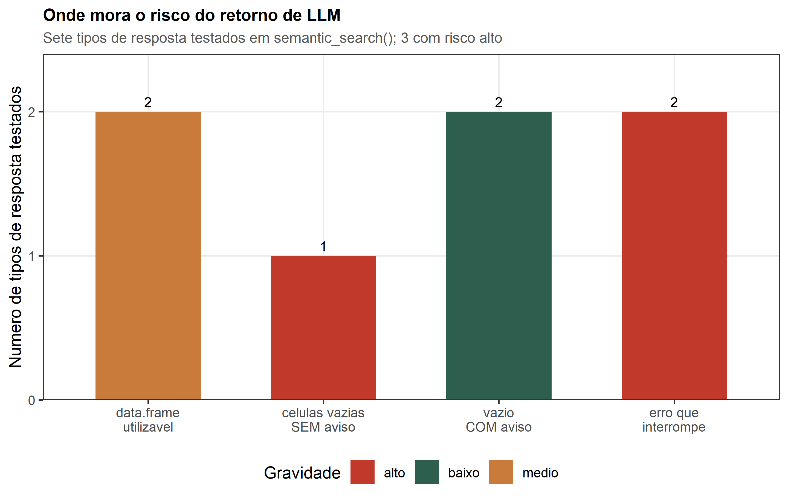
Figure 42: Onde mora o risco do retorno de LLM: quantos dos sete tipos de resposta testados produzem data.frame utilizavel, quantos produzem tabela vazia silenciosa e quantos interrompem a execucao.
A leitura é desconfortável, e é o ponto do exercício. Das 7 formas de resposta testadas:
2 produzem um data.frame utilizável, mas ainda exigem validação de work_id contra o acervo, como a seção anterior mostrou;
2 produzem data.frame sem linhas acompanhado de aviso (Could not parse structured response. Returning raw text.), que é o comportamento correto: falha visível e tipo previsível, fácil de detectar com nrow() == 0;
1 produz um data.frame com o número certo de linhas e todas as células vazias, sem nenhum aviso. Este é o pior caso: nrow() diz que há resultado, e só sum(!is.na(coluna)) revela que não há;
2 nem sequer devolvem data.frame: interrompem a execução com mensagens que não têm relação aparente com o problema. O array vazio [] faz semantic_search() parar com argumento inválido para operador unário; o objeto escalar {"a": 1} produz $ operator is invalid for atomic vectors.
Daí a regra de engenharia que fecha este módulo: em código que consome LLM, nunca valide apenas o tipo do retorno. Valide, nesta ordem, (1) que o objeto é data.frame, (2) que tem pelo menos uma linha, (3) que as colunas críticas não estão vazias e (4) que os identificadores existem no acervo. As quatro checagens juntas levam cinco linhas de R e evitam que uma resposta torta chegue à tabela de Resultados.
15.8 Riscos, deveres e proveniência
checklist11<-data.frame( item =c("Proveniencia do provedor", "Proveniencia do prompt","Identificadores validados", "Campos criticos nao vazios","Referencias verificadas", "Numeros conferidos na fonte","Texto tratado como rascunho", "Revisao humana registrada","Limite de dados sensiveis", "Parametros de geracao fixados"), o_que_verificar =c("provedor, modelo e data da chamada estao no Material e Metodos?","o prompt exato foi salvo junto com a saida, e nao reescrito de memoria?","todo work_id devolvido pelo modelo existe no acervo?","as colunas usadas na analise tem menos de 10% de celulas vazias?","cada referencia citada na prosa gerada foi aberta e lida por uma pessoa?","todo numero no texto gerado foi conferido contra a tabela de origem?","o texto aparece no manuscrito como rascunho revisado, nunca como redacao final?","ha registro de quem revisou, quando e o que mudou?","o acervo enviado a provedor externo esta livre de dados sob sigilo?","temperature, modelo e versao do pacote foram fixados para a reanalise?"), como_registrar =c("str(llm_get_config()) na primeira linha do script","objeto com o prompt exato, salvo em RDS junto com os dados","coluna existe_no_acervo em toda tabela gerada","sum(is.na(coluna)) / nrow(tabela), por coluna critica","coluna de verificacao com data e responsavel","conferencia manual, com a tabela de origem citada na legenda","comentario no arquivo e no historico do projeto","registro de revisao em arquivo versionado","provedor local (Ollama) obrigatorio quando houver sigilo","llm_configure(temperature = 0) e semente fixada"), stringsAsFactors =FALSE)knitr::kable(checklist11, row.names =FALSE, col.names =c("Item", "O que verificar", "Como registrar"))
Table 55: Lista de verificacao antes de publicar qualquer saida produzida com modelo de linguagem, e a forma de registrar cada item.
Item
O que verificar
Como registrar
Proveniencia do provedor
provedor, modelo e data da chamada estao no Material e Metodos?
str(llm_get_config()) na primeira linha do script
Proveniencia do prompt
o prompt exato foi salvo junto com a saida, e nao reescrito de memoria?
objeto com o prompt exato, salvo em RDS junto com os dados
Identificadores validados
todo work_id devolvido pelo modelo existe no acervo?
coluna existe_no_acervo em toda tabela gerada
Campos criticos nao vazios
as colunas usadas na analise tem menos de 10% de celulas vazias?
sum(is.na(coluna)) / nrow(tabela), por coluna critica
Referencias verificadas
cada referencia citada na prosa gerada foi aberta e lida por uma pessoa?
coluna de verificacao com data e responsavel
Numeros conferidos na fonte
todo numero no texto gerado foi conferido contra a tabela de origem?
conferencia manual, com a tabela de origem citada na legenda
Texto tratado como rascunho
o texto aparece no manuscrito como rascunho revisado, nunca como redacao final?
comentario no arquivo e no historico do projeto
Revisao humana registrada
ha registro de quem revisou, quando e o que mudou?
registro de revisao em arquivo versionado
Limite de dados sensiveis
o acervo enviado a provedor externo esta livre de dados sob sigilo?
provedor local (Ollama) obrigatorio quando houver sigilo
Parametros de geracao fixados
temperature, modelo e versao do pacote foram fixados para a reanalise?
llm_configure(temperature = 0) e semente fixada
# ---------------------------------------------------------------------------# Classificacao de DESENHO: quais tarefas do fluxo bibliometrico podem contar# com apoio de LLM e quais exigem leitura humana obrigatoria. NAO e medicao:# e uma proposta de divisao de trabalho, declarada como tal.# ---------------------------------------------------------------------------tarefas11<-data.frame( tarefa =c("Busca semantica no acervo", "Triagem inicial por titulo","Descoberta de topicos", "Classificacao tematica por rotulo","Expansao de string de busca", "Resumo executivo para relatorio","Rascunho de lacunas de pesquisa", "Leitura de contexto de citacao","Extracao de dados experimentais", "Avaliacao de risco de vies","Decisao final de inclusao", "Afirmacao cientifica no artigo","Conferencia de referencia citada"), exige_leitura_humana =c(FALSE, FALSE, FALSE, FALSE, FALSE, FALSE, FALSE,TRUE, TRUE, TRUE, TRUE, TRUE, TRUE), justificativa =c("o ranking e sugestao; a leitura confirma","ganho de tempo na triagem; a decisao e humana","os rotulos sao hipoteses a validar","o rotulo precisa de conferencia amostral","a string nova e testada e comparada com a original","o texto e rascunho revisado por quem assina","a lacuna apontada exige confirmacao no acervo","separar suporte de contraste exige ler o trecho","dose, parcela e produtividade exigem o texto completo","julgamento metodologico nao se delega","criterio de inclusao e decisao do revisor","responsabilidade autoral nao se transfere","a referencia precisa existir e dizer o que se afirma"), stringsAsFactors =FALSE)
tarefas11$classe<-ifelse(tarefas11$exige_leitura_humana,"leitura humana obrigatoria","apoio de LLM, com revisao")tarefas11$tarefa<-factor(tarefas11$tarefa, levels =tarefas11$tarefa[order(tarefas11$exige_leitura_humana)])ggplot(tarefas11, aes(x =tarefa, y =1, fill =exige_leitura_humana))+geom_col(width =.72)+coord_flip()+scale_fill_manual(values =c(`TRUE` =pal_agri[2], `FALSE` =pal_agri[1]), labels =c(`TRUE` ="leitura humana obrigatoria", `FALSE` ="apoio de LLM, com revisao"), name =NULL)+scale_y_continuous(breaks =NULL)+labs(x =NULL, y =NULL, title ="Onde o modelo de linguagem ajuda e onde nao substitui", subtitle =paste0(sum(!tarefas11$exige_leitura_humana), " de ",nrow(tarefas11), " tarefas admitem apoio automatico"))
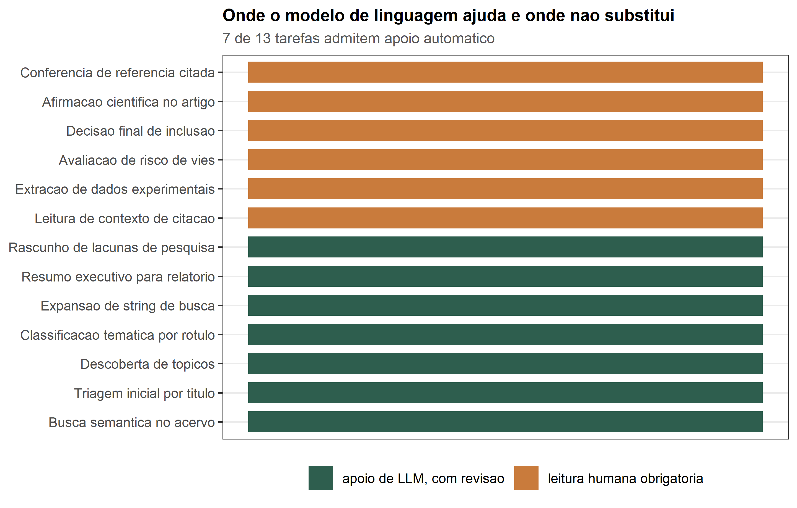
Figure 43: Divisao de trabalho proposta neste tutorial entre as tarefas que podem contar com apoio de modelo de linguagem, sempre com revisao, e as tarefas de leitura humana obrigatoria. Classificacao de desenho, nao resultado de medicao.
A figura organiza a divisão de trabalho, e o número que importa é o da legenda: 7 de 13 tarefas admitem apoio automático, sempre com revisão. As 6 restantes exigem leitura humana não porque o modelo seja incapaz de produzir texto sobre elas, mas porque produzir texto não é o mesmo que produzir evidência. Classificar uma citação como suporte ou contraste, extrair a dose de silício aplicada em cada ensaio e decidir se um estudo entra na revisão são atos de julgamento científico com consequência publicada. Delegá-los a um modelo é delegar a responsabilidade autoral, que não se delega.
Três deveres, então, acompanham o uso destas funções. Não publique saída de LLM sem verificação humana.Trate a prosa gerada como rascunho, e não como redação final — inclusive a prosa que parece boa, porque é justamente a mais plausível que passa sem revisão. Registre a proveniência completa: provedor, modelo, versão do pacote, temperatura, data e o prompt exato. Sem esse registro, uma tabela gerada por LLM é irreprodutível por definição, e nenhum revisor consegue avaliar o que foi feito. A boa notícia é que o pacote torna o registro barato: llm_get_config() devolve tudo o que é preciso salvar, e a temperatura padrão de 0.3 já é baixa o bastante para uso bibliométrico.
15.9 Tarefas do Módulo 11
Tarefa 11.1 (aplicar). Prepare um script de orçamento e proveniência para uma análise assistida por LLM, sem executar nenhuma chamada ao provedor. O script deve: (a) configurar o provedor com llm_configure(), fixando temperatura e modelo, e recuperar a configuração com llm_get_config(); (b) medir, por instrumentação de .llm_chat(), o número de caracteres e a estimativa de tokens de pelo menos três operações sobre x_analise; (c) montar um data.frame com provedor, modelo, operação, tokens estimados por chamada e número de chamadas necessárias para cobrir 2.800 obras em lotes de 100 obras; (d) emitir a estimativa de tokens totais e um parágrafo de registro de proveniência, pronto para colar no Material e Métodos. Termine com uma tabela knitr::kable() do orçamento e uma figura com tema_agri/pal_agri comparando os tokens totais estimados entre as operações.
Tarefa 11.2 (analisar). O bloco abaixo contém um retorno simulado de llm_classify() sobre obras do acervo, com defeitos plantados. Valide-o antes de usá-lo: quantos registros existem, quantos work_id não pertencem ao acervo, quantos registros têm primary vazio ou ausente, quantos são duplicatas do mesmo work_id e qual a distribuição de confidence. Depois responda, em prosa: qual fração do retorno é aproveitável sem revisão, qual seria a amostra mínima de conferência humana e como você registraria isso no Material e Métodos. Feche com uma figura comparando, por categoria, o número de registros brutos do modelo e o número de registros validados.
# Retorno simulado de llm_classify() com defeitos plantados. Use este objeto na# tarefa. O conteudo imita falhas reais de modelos de linguagem: duplicata,# identificador inexistente, rotulo vazio, rotulo nulo e confianca baixa.retorno_simulado11<-'[ {"work_id":"@ID1@","title":"obra 1","primary":"fertilizacao","secondary":["silicio"],"confidence":0.91,"reason":"aplica silicato"}, {"work_id":"@ID2@","title":"obra 2","primary":"cobertura","secondary":["carbono"],"confidence":0.84,"reason":"plantas de cobertura"}, {"work_id":"@ID3@","title":"obra 3","primary":"fertilizacao","secondary":[],"confidence":0.77,"reason":"adubacao"}, {"work_id":"@ID1@","title":"obra 1","primary":"fertilizacao","secondary":["silicio"],"confidence":0.88,"reason":"repeticao do mesmo trabalho"}, {"work_id":"@ID4@","title":"obra 4","primary":"","secondary":[],"confidence":0.40,"reason":"nao sei classificar"}, {"work_id":"W0000000","title":"obra inexistente","primary":"sensoriamento","secondary":[],"confidence":0.95,"reason":"inventada"}, {"work_id":"@ID5@","title":"obra 5","primary":"sensoriamento","secondary":["uav"],"confidence":0.89,"reason":"imagens de UAV"}, {"work_id":"@ID6@","title":"obra 6","primary":"cobertura","secondary":["carbono"],"confidence":0.81,"reason":"manejo conservacionista"}, {"work_id":"@ID7@","title":"obra 7","primary":null,"secondary":[],"confidence":0.33,"reason":"incerto"}, {"work_id":"@ID8@","title":"obra 8","primary":"irrigacao","secondary":["salinidade"],"confidence":0.72,"reason":"lamina de irrigacao"}]'# Substitui os marcadores pelos identificadores reais do acervo.# gsub(), e nao sub(): sub() troca apenas a PRIMEIRA ocorrencia, e o marcador# "@ID1@" aparece duas vezes de proposito, no registro 1 e no duplicado.for(kin1:8){retorno_simulado11<-gsub(paste0("@ID", k, "@"), x_analise$works$work_id[k],retorno_simulado11)}cat("retorno simulado com", nchar(retorno_simulado11), "caracteres e",length(strsplit(retorno_simulado11, "\\{\"work_id\"")[[1]])-1,"registros\n")#> retorno simulado com 1326 caracteres e 10 registros
16 Módulo 12. Fechar o ciclo: planos, relatório, app e exportação
16.1 O problema agronômico
Um doutorando em Agronomia chega ao último ano com a tese quase pronta: dois experimentos de campo sobre silício e tolerância à salinidade, um capítulo de revisão e um acervo que sustentou a introdução. O que falta não é análise nova. O que falta é o que a banca e o revisor vão pedir primeiro: qual foi exatamente o plano de análise, em que ordem ele rodou, com que semente, de onde saiu cada número da seção de Resultados e onde estão os dados que permitem reproduzir tudo isso. O acervo analisado em quinze scripts soltos responde às perguntas de pesquisa, mas não responde a essas perguntas metodológicas.
Este módulo fecha o ciclo justamente aí. As funções anteriores do pacote produzem resultados; form_plan(), run_plan() e biblio_report() produzem o registro de como os resultados foram produzidos – a diferença entre um caderno de laboratório e um caderno de laboratório datado, assinado e legível por outra pessoa. Em bibliometria aplicada, essa diferença decide aceite e recusa: revisores de periódicos de Agronomia raramente contestam um mapa de coocorrência, mas contestam com frequência um recorte temporal, um limiar de rede ou um número de permutações que não foi declarado antes.
O material suplementar é o lugar onde esse registro vive. Um artigo de bibliometria sem material suplementar obriga o leitor a confiar; um artigo com plano, relatório do acervo e base exportada permite ao leitor verificar. As quatro ferramentas deste módulo são as peças que montam esse suplemento: o plano declarado, a execução registrada, o relatório legível e a base em formato aberto. Ao final, você terá um pipeline que vai da planilha bruta ao conjunto de arquivos que acompanha a submissão.
16.2 O plano como pré-registro da análise
As decisões metodológicas de uma bibliometria são muitas: quais módulos rodar, qual tipo de rede, como agrupar as obras, qual semente, em que formato entregar o relatório. form_plan() recolhe todas em um objeto único, que passa a ser a declaração assinada do que será feito:
plano<-form_plan( analyses =c("health", "descriptive", "temporal", "network", "text"), network ="coauthor", group =g_per, report ="markdown", seed =SEED)campos<-data.frame( campo =c("source", "analyses", "network", "group", "report", "seed"), conteudo =c("origem dos dados; nulo quando o projeto já está em memória",paste(plano$analyses, collapse =", "),plano$network,"agrupamento declarado para a etapa inferencial",plano$report,as.character(plano$seed)), papel =c("procedência", "escopo da análise", "tipo de grafo","variável de comparação", "formato de entrega", "reprodutibilidade"), stringsAsFactors =FALSE)knitr::kable(campos, row.names =FALSE)
O plano de análise declarado para o acervo de silício: cada campo do biblio_plan e sua função metodológica.
campo
conteudo
papel
source
origem dos dados; nulo quando o projeto já está em memória
procedência
analyses
health, descriptive, temporal, network, text
escopo da análise
network
coauthor
tipo de grafo
group
agrupamento declarado para a etapa inferencial
variável de comparação
report
markdown
formato de entrega
seed
2026
reprodutibilidade
O plano do acervo analítico pede 5 módulos, rede de coauthor e semente 2026. Note o que o objeto não contém: nenhuma decisão fica escondida dentro do script de análise, e cada campo tem consequência prática. analyses define o que será executado; group só entra em cena se o módulo groups estiver na lista; seed garante que a rede e as permutações se repitam.
plano_errado<-form_plan(analyses =c("health", "descriptive", "rdes"), seed =SEED)sem_classe<-list(analyses ="health", network ="coauthor", seed =SEED)avaliar<-function(expressao){tryCatch({expressao; "aceito"}, error =function(e)conditionMessage(e))}print(knitr::kable(data.frame( situacao =c("form_plan() com módulo inexistente: o que a função faz","validate_plan() no plano correto","validate_plan() no plano com 'rdes'","validate_plan() em uma lista comum, sem classe biblio_plan"), resultado =c(paste("retorna um", class(plano_errado)[1], "com", length(plano_errado$analyses), "módulos"),avaliar(validate_plan(plano)),avaliar(validate_plan(plano_errado)),avaliar(validate_plan(sem_classe))), consequencia =c("nenhuma checagem é feita na construção do plano","execução liberada","execução interrompida antes do primeiro cálculo","execução interrompida: o objeto precisa vir de form_plan()")), row.names =FALSE))#> #> #> |situacao |resultado |consequencia |#> |:----------------------------------------------------------|:-------------------------------------------------------------------------------------|:----------------------------------------------------------|#> |form_plan() com módulo inexistente: o que a função faz |retorna um biblio_plan com 3 módulos |nenhuma checagem é feita na construção do plano |#> |validate_plan() no plano correto |aceito |execução liberada |#> |validate_plan() no plano com 'rdes' |Unknown analyses: rdes |execução interrompida antes do primeiro cálculo |#> |validate_plan() em uma lista comum, sem classe biblio_plan |`plan` must be created by form_plan(). Note the argument order: run_plan(plan, data). |execução interrompida: o objeto precisa vir de form_plan() |
Duas coisas merecem atenção nessa tabela. A primeira é que form_plan()não recusa um nome desconhecido: ele monta o objeto com o que recebeu. A validação é responsabilidade de validate_plan(), que confere os nomes contra a lista de módulos implementados e aborta com Unknown analyses: rdes. A segunda é onde a validação acontece: no início. Um plano mal escrito descoberto na metade da execução custa a análise inteira; descoberto na validação, custa uma linha de código.
16.3 Executar o plano e ler o que ele devolve
run_plan() recebe o plano validado e o acervo, executa apenas os módulos pedidos e devolve um objeto de classe biblio_run, que nada mais é do que uma lista nomeada com um elemento por módulo:
Os 7 elementos que voltaram são exatamente project, health, descriptive, temporal, network, centrality, terms. Os dois objetos sem dimensão são os que carregam estrutura, e não tabela: project é o acervo inteiro e network é um grafo igraph com 16 nós e 91 arestas. O elemento centrality tem 16 linhas, uma por autor com pelo menos uma coautoria no recorte.
O elemento project está sempre presente, mesmo quando nenhum módulo é pedido; os demais aparecem só se foram declarados. Pedir network traz dois elementos, a rede e a centralidade, porque a segunda é consequência direta da primeira. Pedir groups sem preencher group no plano não gera elemento nenhum – outra decisão que o plano registra e o script pode conferir depois.
tbl_modulos<-data.frame( modulo =c("health", "descriptive", "temporal", "network", "text"), pergunta =c("O acervo está limpo o bastante para sustentar conclusões?","Qual é o tamanho, o impacto e a dispersão do campo?","O tema cresce, estabiliza ou perde tração na janela analisada?","Quem e o que estruturam o campo: autores ou termos?","Que vocabulário técnico define o tema e como ele muda?"), funcao =c("biblio_health()", "describe_biblio()", "temporal_growth()","bibliographic_network()", "term_frequency()"), justificativa =c("resíduos de qualidade viram limitação declarada no artigo","dimensiona o corpus e evita generalização indevida","distingue moda passageira de frente de pesquisa","identifica grupos de pesquisa e pontes entre temas","ancora a leitura qualitativa nos termos de fato usados"), stringsAsFactors =FALSE)knitr::kable(tbl_modulos, row.names =FALSE)
Table 56: Plano de análise do projeto de silício: módulo, pergunta agronômica que ele responde e justificativa metodológica da inclusão.
modulo
pergunta
funcao
justificativa
health
O acervo está limpo o bastante para sustentar conclusões?
biblio_health()
resíduos de qualidade viram limitação declarada no artigo
descriptive
Qual é o tamanho, o impacto e a dispersão do campo?
describe_biblio()
dimensiona o corpus e evita generalização indevida
temporal
O tema cresce, estabiliza ou perde tração na janela analisada?
temporal_growth()
distingue moda passageira de frente de pesquisa
network
Quem e o que estruturam o campo: autores ou termos?
bibliographic_network()
identifica grupos de pesquisa e pontes entre temas
text
Que vocabulário técnico define o tema e como ele muda?
term_frequency()
ancora a leitura qualitativa nos termos de fato usados
A Tabela acima é o coração metodológico do módulo: cada linha é uma pergunta que a banca vai fazer, e a última coluna é a resposta que você dará na seção de Material e Métodos. Repare que groups não está no plano. A comparação entre os períodos de publicação entrou no acervo como objeto g_per, mas a etapa inferencial custa caro em tempo de execução, como a Figura abaixo mostra, e por isso fica como análise de confirmação, fora do plano descritivo.
# A mediana de 30 execuções e usada porque system.time() tem resolucao de# 1 milissegundo e os modulos descritivos rodam abaixo disso.if(!requireNamespace("microbenchmark", quietly =TRUE))stop("Este bloco usa microbenchmark para medir tempos abaixo de 1 ms.")modulos_m12<-c("health", "descriptive", "temporal", "text", "network", "centrality")mb_mod<-microbenchmark::microbenchmark( health =biblio_health(x_analise), descriptive =describe_biblio(x_analise), temporal =temporal_growth(x_analise), text =term_frequency(x_analise), network =bibliographic_network(x_analise, "coauthor"), centrality =network_centrality(bibliographic_network(x_analise, "coauthor")), times =30L)ms_perm<-summary(microbenchmark::microbenchmark(compare_groups(x_analise, g_per, entity ="keyword", permutations =999, seed =SEED), times =5L), unit ="ms", include_cld =FALSE)$mediantempos<-data.frame( etapa =factor(c(modulos_m12, "compare_groups\n(999 permutações)"), levels =c(modulos_m12, "compare_groups\n(999 permutações)")), no_plano =factor(c(rep("módulo do plano", length(modulos_m12)), "etapa inferencial"), levels =c("módulo do plano", "etapa inferencial")), ms =c(summary(mb_mod, unit ="ms", include_cld =FALSE)$median, ms_perm))tempos$etapa<-factor(tempos$etapa, levels =tempos$etapa[order(tempos$ms)])ggplot(tempos, aes(x =ms, y =etapa, fill =no_plano))+geom_col(width =.68)+geom_text(aes(label =sprintf("%.1f ms", ms)), hjust =-0.06, size =3, colour ="grey25")+scale_fill_manual(values =c("módulo do plano"=pal_agri[1],"etapa inferencial"=pal_agri[2]), name =NULL)+scale_x_continuous(expand =expansion(mult =c(0, .24)))+labs(x ="tempo de execução (milissegundos)", y =NULL, title ="Onde o tempo é gasto no acervo de 280 obras", subtitle ="mediana de 30 execuções por módulo; a inferência fica fora do plano")
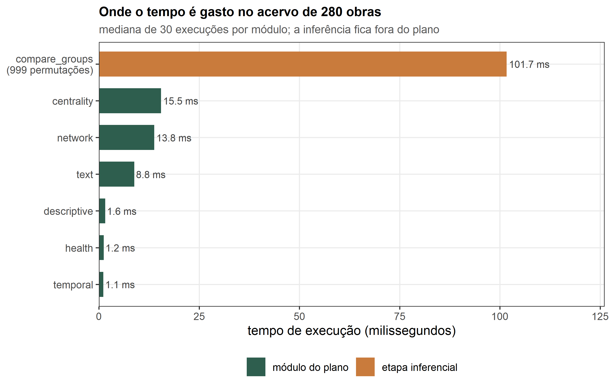
Figure 44: Tempo de execução medido de cada módulo do plano e, como referência, o custo da etapa inferencial de comparação entre períodos com 999 permutações.
A Figura acima separa duas coisas que costumam ser confundidas. Os seis módulos do plano são baratos: o mais lento deles, centrality, custa 15.5 ms, e o plano inteiro roda em menos de um décimo de segundo. A etapa de inferência por permutação custa 6.6 vezes o módulo mais caro. O gargalo de uma bibliometria não está em ler o acervo: está em reamostrar o acervo milhares de vezes. A consequência prática é direta – se a análise precisa de inferência, o número de permutações é decidido antes de rodar, porque é ele, e não o tamanho do corpus, que define o tempo.
escala_perm<-do.call(rbind, lapply(c(199, 999, 4999, 19999), function(np){data.frame(permutacoes =np, ms =summary(microbenchmark::microbenchmark(compare_groups(x_analise, g_per, entity ="keyword", permutations =np, seed =SEED), times =3L), unit ="ms", include_cld =FALSE)$median)}))ggplot(escala_perm, aes(x =permutacoes, y =ms))+geom_line(colour =pal_agri[1], linewidth =.7)+geom_point(colour =pal_agri[1], size =2.4)+geom_text(aes(label =sprintf("%.0f ms", ms)), vjust =-1.1, size =3, colour ="grey25")+scale_x_log10(breaks =escala_perm$permutacoes)+scale_y_log10(expand =expansion(mult =c(.14, .26)))+labs(x ="número de permutações", y ="tempo (ms)", title ="Inferência por permutação cobra por reamostragem", subtitle ="mesmo acervo e mesmo agrupamento; só o número de permutações muda")
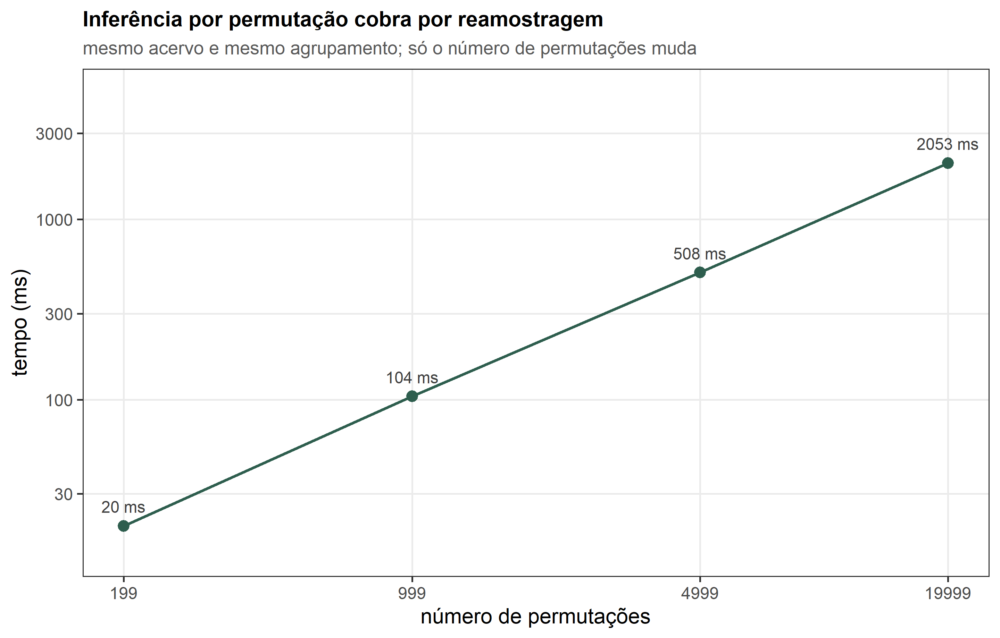
Figure 45: Custo da inferência por permutação no mesmo acervo: o tempo cresce proporcionalmente ao número de reamostragens pedido.
O crescimento é praticamente proporcional: de 199 para 19.999 permutações o tempo sobe 103 vezes. Isso muda o desenho da análise, não só a paciência do analista. Um valor de p estimado com 999 permutações tem resolução de aproximadamente um milésimo: pedir 19.999 para “melhorar” um p que já é menor que 0,001 gasta 2.1 segundos para não mudar conclusão alguma. Declare o número no plano, justifique-o pela resolução que o artigo precisa e não o aumente por hábito.
16.4 Do resultado ao material suplementar
Executada a análise, falta o documento que acompanha a submissão. biblio_report() monta um relatório completo do acervo – resumo do corpus, qualidade dos dados, produção anual, termos líderes, centralidade de coautoria, backends opcionais e trilha de procedência – no formato que você escolher:
dir_saidas<-file.path(getwd(), "_m12_saidas")dir.create(dir_saidas, showWarnings =FALSE)alvos<-c(markdown ="relatorio.md", html ="relatorio.html", docx ="relatorio.docx", pdf ="relatorio.pdf")tempo_rel<-vapply(names(alvos), function(fm){unname(system.time(biblio_report(x_analise, file.path(dir_saidas, alvos[[fm]]), format =fm, title ="Silício e salinidade: relatório do acervo"))["elapsed"])}, numeric(1))tbl_relatorios<-data.frame( formato =names(alvos), arquivo =unname(alvos), gerado =file.exists(file.path(dir_saidas, unname(alvos))), segundos =round(tempo_rel, 2), uso_tipico =c("controle de versão e leitura no editor de texto","envio direto como suplemento navegável","coorientador que revisa com comentários no Word","anexo impresso e versão final do suplemento"), stringsAsFactors =FALSE)print(knitr::kable(tbl_relatorios, row.names =FALSE))#> #> #> |formato |arquivo |gerado | segundos|uso_tipico |#> |:--------|:--------------|:------|--------:|:-----------------------------------------------|#> |markdown |relatorio.md |TRUE | 0.03|controle de versão e leitura no editor de texto |#> |html |relatorio.html |TRUE | 0.39|envio direto como suplemento navegável |#> |docx |relatorio.docx |TRUE | 0.22|coorientador que revisa com comentários no Word |#> |pdf |relatorio.pdf |TRUE | 1.36|anexo impresso e versão final do suplemento |
Os 4 arquivos foram gerados nesta execução, como a coluna gerado confirma, e o custo cresce com a complexidade do formato: o markdown sai em 0.03 s e o PDF, que ainda depende de uma instalação LaTeX funcional, em 1.36 s. Um detalhe operacional que vale a dor de cabeça: biblio_report() renderiza os formatos não-markdown em um diretório temporário e depois move o arquivo, então passe caminho absoluto. Caminho relativo faz a busca acontecer dentro do diretório temporário e o erro aparece como The directory '.../Temp/Rtmp.../_m12_saidas' does not exist. Usar file.path(getwd(), "saida") resolve de vez.
O relatório tem 101 linhas e abre com o resumo numérico do corpus, na linha Documents: 280 . O bloco de qualidade vem logo abaixo do cabeçalho e é a parte que mais interessa ao revisor, porque expõe o que o acervo tem de ruim antes que ele tenha de perguntar. Note que os resíduos não desaparecem porque as obras com problema foram removidas: o acervo analítico preserva missing_title | 1, missing_year | 0, negative_citations | 1 – são registros que entram na análise e viram limitação declarada no artigo, não linhas apagadas do banco. Trate esse arquivo como material suplementar de verdade: ele deve subir junto com o artigo, com a mesma data da versão submetida, e a seção de Métodos deve apontá-lo explicitamente.
16.5 Exportar para inspeção, intercâmbio e volume
O acervo analítico precisa sair do R em um formato que outra pessoa consiga abrir. export_biblio() atende os três casos de uso mais comuns, gravando um diretório com seis tabelas – works, authors, authorships, keywords, references e provenance – no formato pedido:
dir_export<-file.path(dir_saidas, "exportacao")tbl_export<-do.call(rbind, lapply(c("csv", "json", "parquet"), function(fm){d<-file.path(dir_export, fm)export_biblio(x_analise, d, fm)arquivos<-list.files(d, full.names =TRUE)data.frame(formato =fm, arquivos =length(arquivos), bytes =sum(file.size(arquivos)), uso_tipico =switch(fm, csv ="conferência linha a linha em planilha", json ="intercâmbio com Python, JavaScript e APIs", parquet ="volume alto, consulta colunar e Arrow/DuckDB"), stringsAsFactors =FALSE)}))tbl_export$kB<-round(tbl_export$bytes/1024, 1)print(knitr::kable(tbl_export[, c("formato", "arquivos", "kB", "uso_tipico")], row.names =FALSE))#> #> #> |formato | arquivos| kB|uso_tipico |#> |:-------|--------:|-----:|:--------------------------------------------|#> |csv | 6| 98.1|conferência linha a linha em planilha |#> |json | 6| 250.3|intercâmbio com Python, JavaScript e APIs |#> |parquet | 6| 24.2|volume alto, consulta colunar e Arrow/DuckDB |
ggplot(tbl_export, aes(x =reorder(formato, kB), y =kB, fill =formato))+geom_col(width =.62)+geom_text(aes(label =sprintf("%.1f kB", kB)), vjust =-0.5, size =3.2, colour ="grey25")+scale_fill_manual(values =unname(pal_agri[1:3]), guide ="none")+scale_y_continuous(expand =expansion(mult =c(0, .18)))+labs(x =NULL, y ="tamanho no disco (kB)", title ="O mesmo acervo em três formatos", subtitle =sprintf("%d obras, seis tabelas por formato", nrow(x_analise$works)))
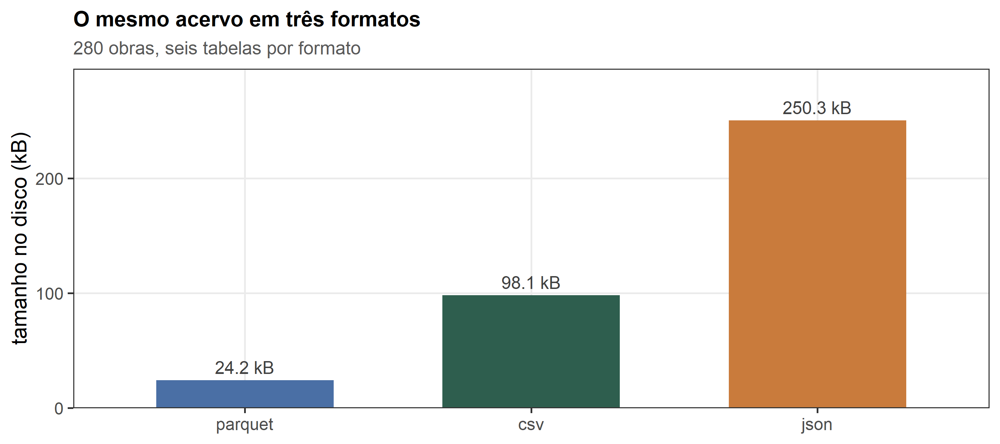
Figure 46: Tamanho total em disco do acervo exportado nos três formatos, medido nesta execução.
A leitura é a esperada de quem já sofreu com planilha gigante. Os três formatos gravam 6 arquivos, e o que muda é o peso: o CSV sai com 98.1 kB, o JSON ocupa 2.6 vezes esse tamanho porque repete o nome de cada campo em cada linha, e o Parquet fica em 0.25 do tamanho do CSV porque guarda os mesmos dados em colunas comprimidas. Escolha pelo uso, não pelo tamanho: CSV para o suplemento, porque o revisor consegue inspecionar; Parquet para o repositório de dados, porque reler é rápido e o arquivo é pequeno; JSON apenas quando houver integração com código de outra linguagem. Vale registrar o que a função faz e o que não faz: ela grava um diretório, não um arquivo, e aceita apenas os três formatos – "xlsx" é recusado com 'arg' should be one of "csv", "json", "parquet".
16.6 A ponte com o ecossistema bibliometrix
Quem trabalha com bibliometria em R conhece o bibliometrix, que tem uma comunidade grande e um formato de dados próprio: um quadro de campo-etiquetas em que cada coluna é um campo e o nome da coluna é a etiqueta. to_bibliometrix() converte o acervo harmonizado para esse vocabulário:
A conversão preserva 280 obras e 7 campos, com autores e termos reunidos em uma única célula separada por ponto e vírgula, que é exatamente o que o bibliometrix espera. O ganho é imediato: a partir do quadro bm você acessa as funções de projeção temática, acoplamento e lei de Lotka do ecossistema, sem refazer a limpeza. A perda também é concreta e precisa ser dita no artigo: o formato plano descarta a estrutura relacional – os identificadores work_id, a tabela de procedência, a coluna abstract e o agrupamento periodo não sobrevivem. Se a análise depende de rastrear a origem de cada número, o biblio_project continua sendo a fonte da verdade, e o quadro do bibliometrix é uma projeção derivada, não um substituto.
16.7 O aplicativo interativo
O pacote traz uma interface Shiny que reúne as mesmas funções em cinco abas: Data, para carregar CSV, TSV ou JSON e ver o resumo do corpus com o diagnóstico de qualidade; Explore, com a produção anual e os termos mais frequentes; Networks, com escolha do tipo de rede e do peso mínimo, seguida da tabela de centralidade; Compare, que informa os backends disponíveis e remete a compare_groups() para a inferência; e Report, que baixa o relatório em HTML e mostra a trilha de procedência do acervo.
# Abre a interface interativa no navegador. O bloco NAO e executado na# renderizacao: biblio_app() inicia um servidor e bloqueia a sessao ate que o# usuario encerre o aplicativo, o que travaria a geracao do documento.biblio_app(x_analise)# Com o servidor no ar, o roteiro de aula e:# 1. aba Data -> carregar o CSV exportado no bloco anterior e conferir a# tabela de qualidade contra biblio_health();# 2. aba Explore -> comparar a producao anual com temporal_growth();# 3. aba Networks -> subir o peso minimo e observar a queda no numero de nos e# arestas, o que ensina o efeito do limiar na centralidade;# 4. aba Compare -> discutir por que a inferencia exige script, e nao clique;# 5. aba Report -> baixar o HTML e comparar com o markdown gerado aqui.# Encerre com o botao de parada da sessao ou Esc no console.
Esse bloco é o único do tutorial que não roda, e o motivo é técnico, não pedagógico: biblio_app() chama shiny::runApp(), que toma posse da sessão R e só devolve o controle quando o servidor é encerrado. Dentro de um documento Quarto, isso significa um relatório que nunca termina de renderizar. Em aula, a recomendação é abrir o app em uma sessão R separada, com o acervo já carregado, e usar a interface como instrumento de exploração – nunca como fonte dos números do artigo, porque o que se faz por clique não fica registrado no plano.
16.8 Um fluxo completo, do arquivo bruto ao suplemento
Juntando as peças dos doze módulos, o caminho de um projeto real cabe em um script. O bloco abaixo é o resumo executável de tudo o que veio antes e serve de modelo para o seu próprio projeto: ele importa, audita, deduplica, persiste, planeja, executa, reporta e exporta, nessa ordem.
# ============================================================# Projeto: silício e tolerância à salinidade em arroz# Objetivo: ir da planilha bruta ao material suplementar,# deixando rastro de cada decisão.# ============================================================library(biblioIntegrator)## 1. IMPORTAR -------------------------------------------------# Um arquivo por base de dados. biblio_import() reconhece sinonimos de nome de# coluna (title/ti, year/py, doi/di, source/journal/so) e devolve um# biblio_project ja harmonizado para cada arquivo.base_scopus<-biblio_import("dados/export_scopus.csv")base_wos<-biblio_import("dados/export_wos.txt")# Bases diferentes nao se juntam dentro de biblio_import(): a juncao e feita# tabela por tabela, e o resultado volta a ser um biblio_project.bruto<-base_scopusbruto$works<-rbind(base_scopus$works, base_wos$works)bruto$authorships<-rbind(base_scopus$authorships, base_wos$authorships)bruto$authors<-unique(rbind(base_scopus$authors, base_wos$authors))bruto$keywords<-rbind(base_scopus$keywords, base_wos$keywords)bruto$provenance<-rbind(base_scopus$provenance, base_wos$provenance)## 2. AUDITAR --------------------------------------------------# O diagnostico e o primeiro resultado a olhar, antes de qualquer analise.diagnostico<-biblio_health(bruto)print(diagnostico)# residuos viram limitacao declarada## 3. DEDUPLICAR -----------------------------------------------# DOI quando existe, titulo mais ano quando nao existe. A regra usada em cada# caso fica registrada em attr(limpo, "dedup_log").limpo<-deduplicate_biblio(bruto, method ="doi_title_year")nrow(attr(limpo, "dedup_log"))# quantas duplicatas foram removidas## 4. RECORTAR A JANELA ANALITICA ------------------------------# O recorte e decisao metodologica e precisa estar declarada. Nao existe funcao# de recorte no pacote: filtre as tabelas e mantenha os identificadores coerentes.recortar<-function(proj, manter){proj$works<-proj$works[manter, , drop =FALSE]ids<-proj$works$work_idproj$authorships<-proj$authorships[proj$authorships$work_id%in%ids, , drop =FALSE]proj$keywords<-proj$keywords[proj$keywords$work_id%in%ids, , drop =FALSE]proj}analitico<-recortar(limpo, limpo$works$year>=2010&limpo$works$year<=2025)## 5. DESCREVER E COMPARAR -------------------------------------resumo<-describe_biblio(analitico)metricas<-biblio_metrics(analitico)periodo<-form_groups(analitico, ifelse(analitico$works$year>=2020,"2020-2025", "2010-2019"))comparacao<-compare_groups(analitico, periodo, entity ="keyword", permutations =999, seed =2026)residuos<-association_residuals(comparacao)# onde o desvio e maior## 6. REDE -----------------------------------------------------grafo<-bibliographic_network(analitico, "coauthor")centralidade<-network_centrality(grafo)comunidades<-network_communities(grafo, "louvain")estabilidade<-network_stability(analitico, type ="coauthor", B =200, seed =2026)export_vosviewer(grafo, "saidas/rede_coautoria.txt")# abre no VOSviewer## 7. PERSISTIR ------------------------------------------------# O projeto inteiro em Parquet: reler é rápido e a estrutura relacional sobrevive.biblio_store(analitico, "saidas/projeto", engine ="arrow")projeto<-biblio_load("saidas/projeto", engine ="arrow")## 8. PLANO DECLARADO E EXECUÇÃO -------------------------------# Documento metodológico: o que foi rodado, com que semente, em que ordem.plano<-form_plan(analyses =c("health", "descriptive", "temporal","network", "text"), network ="coauthor", group =periodo, report ="markdown", seed =2026)validate_plan(plano)# aborta cedo se houver módulo inválidoexecucao<-run_plan(plano, projeto)names(execucao)# registro do que foi produzido## 9. REPORTAR E EXPORTAR --------------------------------------# Relatório para o suplemento e base aberta para o repositório.biblio_report(projeto, file.path(getwd(), "saidas/relatorio.md"), format ="markdown", title ="Silício e salinidade: relatório do acervo")export_biblio(projeto, "saidas/dados", format ="csv")# inspeçãoexport_biblio(projeto, "saidas/dados_parquet", format ="parquet")# repositórioto_bibliometrix(projeto)# ponte com o ecossistema bibliometrix## 10. EXPLORAR EM AULA ----------------------------------------# biblio_app(projeto) # sessão interativa, fora do relatório
Nenhuma linha desse fluxo é decorativa. A ordem importa porque cada etapa depende do contrato da anterior: deduplicar antes de descrever evita inflar o corpus; recortar a janela antes de comparar evita comparar períodos de tamanhos incompatíveis; persistir antes de planejar garante que o plano rode sobre um acervo congelado e não sobre um objeto que mudou no meio do caminho. A etapa 8 é a que transforma o script em método: ela não descobre nada, apenas declara o que já foi decidido – e é isso que o revisor precisa ler.
16.9 Qual função responde a qual pergunta agronômica
A tabela abaixo é a ferramenta de decisão do módulo. Ela liga perguntas que aparecem em projeto de doutorado em Agronomia à função do pacote que as responde, e serve para você planejar antes de codar.
Table 57: Tabela de decisão: pergunta de pesquisa agronômica, função do biblioIntegrator que a responde e o cuidado de interpretação correspondente.
tbl_decisao<-data.frame( pergunta =c("O acervo que eu montei sustenta uma conclusão?","Como o campo está distribuído entre periódicos e autores?","O tema está crescendo ou estabilizando?","Quem são os grupos de pesquisa e como se conectam?","O vocabulário do campo mudou entre períodos?","Quais termos distinguem um subgrupo do resto?","Meus resultados dependem de um limiar arbitrário?","Como entrego os dados e o relatório ao revisor?","Preciso conversar com quem usa Python ou bibliometrix?","Como registro o plano de análise para a banca?"), funcao =c("biblio_health(), audit_biblio()","describe_biblio(), biblio_metrics()","temporal_growth(), citation_velocity()","bibliographic_network(), network_communities()","term_frequency(), tfidf_terms(), trend_topics()","compare_groups(), association_residuals()","sensitivity_analysis(), network_stability()","biblio_report(), export_biblio()","to_biblium(), to_bibliometrix(), export_biblio(format = 'json')","form_plan(), validate_plan(), run_plan()"), cuidado =c("qualidade do acervo é limitação do estudo, não erro a esconder","contagem absoluta premia bases com mais cobertura","janela curta confunde crescimento real com indexação recente","rede é sensível ao limiar de peso e à normalização","termo frequente não é termo relevante sem peso por documento","grupos pequenos produzem p instáveis; cheque o tamanho","declare o limiar e mostre o resultado em mais de um valor","o relatório deve ter a data da versão submetida","o formato plano perde identificadores e procedência","validar antes de executar evita rodar meia análise"), stringsAsFactors =FALSE)print(knitr::kable(tbl_decisao, row.names =FALSE))#> #> #> |pergunta |funcao |cuidado |#> |:---------------------------------------------------------|:---------------------------------------------------------------|:--------------------------------------------------------------|#> |O acervo que eu montei sustenta uma conclusão? |biblio_health(), audit_biblio() |qualidade do acervo é limitação do estudo, não erro a esconder |#> |Como o campo está distribuído entre periódicos e autores? |describe_biblio(), biblio_metrics() |contagem absoluta premia bases com mais cobertura |#> |O tema está crescendo ou estabilizando? |temporal_growth(), citation_velocity() |janela curta confunde crescimento real com indexação recente |#> |Quem são os grupos de pesquisa e como se conectam? |bibliographic_network(), network_communities() |rede é sensível ao limiar de peso e à normalização |#> |O vocabulário do campo mudou entre períodos? |term_frequency(), tfidf_terms(), trend_topics() |termo frequente não é termo relevante sem peso por documento |#> |Quais termos distinguem um subgrupo do resto? |compare_groups(), association_residuals() |grupos pequenos produzem p instáveis; cheque o tamanho |#> |Meus resultados dependem de um limiar arbitrário? |sensitivity_analysis(), network_stability() |declare o limiar e mostre o resultado em mais de um valor |#> |Como entrego os dados e o relatório ao revisor? |biblio_report(), export_biblio() |o relatório deve ter a data da versão submetida |#> |Preciso conversar com quem usa Python ou bibliometrix? |to_biblium(), to_bibliometrix(), export_biblio(format = 'json') |o formato plano perde identificadores e procedência |#> |Como registro o plano de análise para a banca? |form_plan(), validate_plan(), run_plan() |validar antes de executar evita rodar meia análise |
caixas<-data.frame( x =c(1, 3.1, 5.2, 7.3, 9.4), rotulo =c("Pergunta de\npesquisa agronômica","Escolha dos módulos\nform_plan()","Validação\nvalidate_plan()","Execução registrada\nrun_plan()","Suplemento\nbiblio_report()\nexport_biblio()"), tipo =c("pergunta", "decisao", "decisao", "execucao", "entrega"))setas<-data.frame(x =caixas$x[-nrow(caixas)]+.62, xe =caixas$x[-1]-.62)ggplot(caixas, aes(x =x, y =1))+geom_segment(data =setas, aes(x =x, xend =xe, y =1, yend =1), arrow =arrow(length =unit(.18, "cm")), colour ="grey45", inherit.aes =FALSE)+geom_label(aes(label =rotulo, fill =tipo), colour ="grey15", linewidth =.35, size =2.8, label.padding =unit(.38, "lines"), label.r =unit(.18, "lines"))+scale_fill_manual(values =c(pergunta ="#E8E3DA", decisao ="#D9E4DC", execucao ="#F4E0CC", entrega ="#DDE3EF"), guide ="none")+scale_x_continuous(limits =c(.1, 10.6))+scale_y_continuous(limits =c(.9, 1.1))+labs(title ="Do problema agronômico ao material suplementar", subtitle ="cada caixa é uma função do Módulo 12; a validação vem antes da execução")+theme_void(base_size =10)+theme(plot.title =element_text(face ="bold", hjust =.5, size =11), plot.subtitle =element_text(hjust =.5, colour ="grey35", size =9), plot.margin =margin(6, 8, 6, 8))
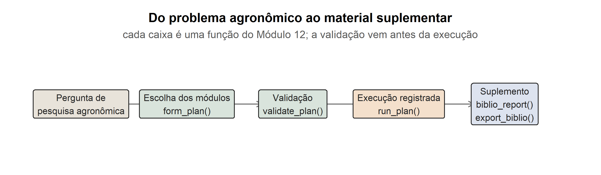
Figure 47: Fluxo de decisão do plano de análise: da pergunta de pesquisa ao conjunto de arquivos que acompanha a submissão.
A Figura acima fecha o tutorial inteiro em uma linha de raciocínio. A caixa “Validação” entre a decisão e a execução não é burocracia: é o único ponto do fluxo em que um erro custa segundos em vez de horas, e é o que diferencia um projeto que pode ser reexecutado por outra pessoa de um projeto que só funcionou na máquina de quem escreveu. As duas caixas finais lembram que o produto de uma bibliometria não é a figura do mapa de coocorrência: é o conjunto figura + relatório + base exportada + plano declarado.
16.10 Tarefas do Módulo 12
Tarefa 12.1 (aplicar). Monte o plano de análise do seu próprio projeto com form_plan(), declarando a semente do tutorial, a rede de coautoria e o agrupamento por período (g_per) ou por tema (g_tema). Valide o plano com validate_plan(), execute-o sobre o acervo x_analise com run_plan() e responda: quais elementos o objeto biblio_run devolveu? Gere o relatório em markdown e em um segundo formato, exporte o acervo em CSV e em Parquet, e compare os tamanhos. Feche a tarefa com uma frase, escrita como você a colocaria no fim da seção de Material e Métodos, informando o plano executado, a semente e onde o suplemento está depositado.
Tarefa 12.2 (criar). Você precisa entregar a um coorientador de outra instituição – que trabalha em Python e não usa R – uma versão do acervo que ele consiga abrir e conferir sem instalar o biblioIntegrator, mas que não traga as pendências de qualidade do acervo original. Construa essa entrega a partir de x_analise: descarte as obras com ano ausente, exporte o resultado em JSON e em CSV, converta o acervo convertido com to_bibliometrix() para um terceiro arquivo plano, gere o relatório do acervo em docx e escreva, em um arquivo markdown, a nota de entrega explicando qual arquivo responde a qual pergunta, o que se perde na conversão para o formato plano e qual limitação o relatório expõe. A nota deve ter entre 8 e 12 linhas e apontar explicitamente o número de obras exportadas, quantas obras foram descartadas e quantas duplicatas foram removidas na limpeza.
17 Gabaritos comentados
Os gabaritos trazem o código completo, a leitura da saída com os números medidos nesta renderização, uma redação sugerida para a seção de Resultados e a lista dos erros mais comuns. Resolva a tarefa antes de abrir o gabarito.
17.1 Gabarito do Exercício 1.1
17.1.1 Código completo e executável
# 1.1.1 Importação do arquivo gerado no módulocsv_did<-file.path(tempdir(), "acervo_agronomia.csv")write.csv(head(example_biblio(), 6L), csv_did, row.names =FALSE)dados<-biblio_import(csv_did)# 1.1.2 Harmonização com rótulo de origemproj<-as_biblio_project(dados, source ="minha base")# 1.1.3 Dimensões das tabelas do projetodim_proj<-data.frame( tabela =c("works", "authorships", "authors", "keywords"), linhas =c(nrow(proj$works), nrow(proj$authorships),nrow(proj$authors), nrow(proj$keywords)))knitr::kable(dim_proj, row.names =FALSE, caption ="Dimensões do projeto harmonizado na Tarefa 1.1.")
Dimensões do projeto harmonizado na Tarefa 1.1.
tabela
linhas
works
6
authorships
12
authors
7
keywords
16
17.1.2 Leitura da saída
A importação produziu um quadro plano com linhas, e a harmonização converteu esse quadro em um projeto com 6 obras, 12 ligações de autoria, 7 autores únicos e 16 pares obra-termo. A leitura importante é a relação entre os números: as linhas de authorships são maiores que as de works porque cada obra tem mais de um autor, e authors é menor que authorships porque um mesmo autor assina várias obras. Se você tivesse guardado apenas o quadro plano, cada contagem exigiria reinterpretar o campo de autoria como texto separado por ponto e vírgula.
17.1.3 Redação sugerida para o artigo
As referências foram exportadas na base de dados de origem no formato CSV, importadas com biblio_import() e harmonizadas em um objeto relacional (biblio_project) com as_biblio_project(), preservando a rastreabilidade da origem. O acervo final reuniu N obras, M registros de autoria e K pares obra-palavra-chave.
17.1.4 Erros comuns a evitar
Passar o caminho de um arquivo que não existe e não verificar a mensagem de erro: biblio_import() para com erro claro de arquivo ausente, e o caminho relativo depende do diretório de trabalho.
Harmonizar sem indicar source: o rótulo entra na trilha de proveniência e é o que permite, meses depois, saber de onde veio cada registro.
Confundir authorships com authors: a primeira conta assinaturas, a segunda conta pessoas.
Editar o quadro plano depois de harmonizar: o projeto não se atualiza sozinho; refaça a harmonização.
17.2 Gabarito do Exercício 1.2
17.2.1 Código completo e executável
# 1.2.1 Diagnóstico do acervo didáticoh_did<-biblio_health(x_did)knitr::kable(h_did, row.names =FALSE, caption ="Diagnóstico de qualidade do acervo didático de 12 obras.")
Diagnóstico de qualidade do acervo didático de 12 obras.
check
n
missing_title
0
missing_year
0
missing_doi
0
duplicate_doi
0
duplicate_title_year
0
negative_citations
0
# 1.2.2 Quantas verificações passaram sem achadon_ok<-sum(h_did$n==0)
17.2.2 Leitura da saída
O diagnóstico fez 6 verificações e todas as 6 devolveram zero ocorrências, ou seja, 6 de 6 verificações passaram sem achado. A explicação não é que o acervo seja grande ou pequeno, e sim que ele foi construído para servir de exemplo: títulos preenchidos, anos presentes, DOI normalizado, nenhuma obra repetida e nenhuma citação negativa. O valor pedagógico desse resultado está no contraste com o acervo simulado do Módulo 2, onde cada defeito plantado aparece como uma linha não nula. Em outras palavras, biblio_health() não mede a qualidade científica do acervo; mede a consistência interna dos metadados, e é essa consistência que sustenta as análises seguintes.
17.2.3 Redação sugerida para o artigo
Antes das análises, os metadados foram submetidos a verificação de consistência interna (títulos, anos, identificadores persistentes, duplicatas e valores de citação), sem registro de inconsistências no conjunto analisado.
17.2.4 Erros comuns a evitar
Interpretar biblio_health() como validação de qualidade científica: a função verifica metadados, não o mérito dos estudos.
Rodar o diagnóstico só no fim da análise: defeitos de metadados distorcem redes, métricas e comparações, portanto a verificação vem antes.
Ignorar a linha de citações negativas: contagem negativa indica erro de importação ou de codificação e quebra médias e normalizações.
Supor que acervo pequeno dispensa verificação: o acervo didático tem 12 obras e ainda assim passa por seis verificações.
Confundir ausência de achado com ausência de problema: campos vazios podem existir em número baixo e ainda assim concentrar-se justamente nas obras mais influentes.
17.3 Gabarito do Exercício 2.1
17.3.1 Código completo e executável
# recorte de um biblio_project: a mesma máscara precisa valer para as três tabelas# ligadas por work_id, senão sobram vínculos órfãos de autoria e de palavra-chaveg21_recorta<-function(x, manter){ids<-x$works$work_id[manter]x$works<-x$works[manter, , drop =FALSE]x$authorships<-x$authorships[x$authorships$work_id%in%ids, , drop =FALSE]x$keywords<-x$keywords[x$keywords$work_id%in%ids, , drop =FALSE]x}# o acervo didático vem do Módulo 1; se este trecho for rodado isolado,# ele é recriado a partir do exemplo que acompanha o pacoteif(!exists("x_did")){x_did<-as_biblio_project(example_biblio(), source ="acervo didático")}# acervo didático: doze obras sem defeito plantadog21_h_did<-biblio_health(x_did)g21_did<-deduplicate_biblio(x_did, method ="doi_title_year")# recorte do acervo bruto: obras publicadas de 2020 em dianteg21_manter<-!is.na(x_bruto$works$year)&x_bruto$works$year>=2020g21_rec<-g21_recorta(x_bruto, g21_manter)g21_h_rec<-biblio_health(g21_rec)g21_rec_dedup<-deduplicate_biblio(g21_rec, method ="doi_title_year")g21_h_rec_dedup<-biblio_health(g21_rec_dedup)# quantos vínculos de autoria ficariam órfãos se apenas a tabela de obras fosse filtradag21_orfaos<-sum(!x_bruto$authorships$work_id%in%g21_rec$works$work_id)# ano do par duplicado que sobrevive à deduplicação no acervo completog21_alvo<-paste(tolower(trimws(x_limpo$works$title)), x_limpo$works$year)g21_ano_par<-x_limpo$works$year[duplicated(g21_alvo)][1]# resumo comparativo dos dois acervos nos dois estadosg21_resumo<-data.frame( acervo =c("didático", "didático", "recorte 2020+", "recorte 2020+"), estado =c("bruto", "após deduplicação", "bruto", "após deduplicação"), registros =c(nrow(x_did$works), nrow(g21_did$works),nrow(g21_rec$works), nrow(g21_rec_dedup$works)), defeitos =c(sum(g21_h_did$n), sum(biblio_health(g21_did)$n),sum(g21_h_rec$n), sum(g21_h_rec_dedup$n)), linhas_da_trilha =c(nrow(audit_biblio(x_did)), nrow(audit_biblio(g21_did)),nrow(audit_biblio(g21_rec)), nrow(audit_biblio(g21_rec_dedup))), stringsAsFactors =FALSE)knitr::kable(g21_resumo, row.names =FALSE, caption ="Exercício 2.1: tamanho, número de defeitos acusados e tamanho da trilha em cada acervo e em cada estado.")
Exercício 2.1: tamanho, número de defeitos acusados e tamanho da trilha em cada acervo e em cada estado.
acervo
estado
registros
defeitos
linhas_da_trilha
didático
bruto
12
0
1
didático
após deduplicação
12
0
2
recorte 2020+
bruto
162
4
1
recorte 2020+
após deduplicação
161
2
2
# diagnóstico detalhado do recorte, antes e depoisknitr::kable(data.frame(defeito =g21_h_rec$check, bruto =g21_h_rec$n, pos_dedup =g21_h_rec_dedup$n), row.names =FALSE, caption ="Exercício 2.1: diagnóstico do recorte 2020+ antes e depois da deduplicação automática.")
Exercício 2.1: diagnóstico do recorte 2020+ antes e depois da deduplicação automática.
defeito
bruto
pos_dedup
missing_title
1
1
missing_year
0
0
missing_doi
0
0
duplicate_doi
1
0
duplicate_title_year
1
0
negative_citations
1
1
# a trilha do recorte mostra a operação registrada mesmo quando nada é removidoknitr::kable(audit_biblio(g21_rec_dedup), row.names =FALSE, caption ="Exercício 2.1: trilha de proveniência do recorte 2020+.")
Exercício 2.1: trilha de proveniência do recorte 2020+.
timestamp
operation
details
2026-09-22 03:20:40.628673
as_biblio_project
source=corpus B bruto; n=283
2026-09-22 03:22:44.555739
deduplicate_biblio
removed=1
17.3.2 Leitura da saída
Os dois acervos respondem de forma oposta à mesma rotina, e é isso que a tarefa queria expor. No acervo didático, o diagnóstico não acusa nada em nenhuma das seis verificações, a deduplicação remove 0 registros e o acervo continua com 12 obras de 12. Aqui a rotina automática foi suficiente porque não havia o que resolver: o acervo do pacote é limpo por construção. A trilha, ainda assim, acumula 2 linhas, e a segunda traz removed=0. A leitura disso é que a proveniência registra a operação, não o resultado dela: um removed=0 é a prova de que a deduplicação rodou e nada achou, o que é informação útil para quem audita o encadeamento e não apenas para quem lê o número final.
No recorte de 2020 em diante o cenário é outro. O recorte entra com 162 registros e o diagnóstico acusa 4 defeitos, entre eles 1 DOI repetido e 1 par de título e ano. A deduplicação remove 1 registro e zera as duas verificações de duplicação, mas deixa 2 defeitos de campo: o título em branco e a citação negativa continuam ali, porque nenhum dos dois é duplicação e nenhuma rotina de duplicação tem como adivinhar o título correto. Vale registrar o que o recorte fez com a terceira duplicata: o par remanescente é de 2016, anterior ao corte, e por isso não aparece no recorte — o defeito não foi resolvido, apenas ficou fora do quadro. A consequência metodológica é direta: ao relatar um recorte temporal, diga qual é o recorte, porque a visibilidade dos defeitos depende dele.
Há ainda o cuidado de integridade que a função de recorte resolve. Filtrar apenas a tabela de obras deixaria 363 vínculos de autoria apontando para obras que não estão mais no acervo, e esses vínculos órfãos voltariam como produção de autores que não publicaram no período recortado. Filtrar as três tabelas pela mesma máscara de identificadores é o que mantém a integridade referencial, e é a razão de o recorte ser feito por uma função e não por três subconjuntos independentes escritos à mão.
17.3.3 Redação sugerida para o artigo
Os registros exportados foram harmonizados em um objeto relacional único com as_biblio_project() e submetidos a diagnóstico de qualidade com biblio_health(), que verifica título, ano, DOI, duplicação de DOI, duplicação de título e ano e contagens de citação negativas. A deduplicação automática foi aplicada com deduplicate_biblio(method = "doi_title_year"), que compara os registros por chave construída a partir do DOI, quando disponível, e do par título-ano nos demais casos. No recorte analítico de 2020 a 2025, a rotina removeu os registros duplicados e zerou as verificações de duplicação, mantendo como pendências os campos ausentes e a contagem negativa de citações, tratados individualmente. Cada recorte aplicado à tabela de obras foi replicado nas tabelas de autoria e de palavras-chave pela mesma máscara de identificadores, para preservar a integridade referencial. A trilha de operações foi recuperada com audit_biblio() e arquivada como material suplementar.
17.3.4 Erros comuns a evitar
Passar o quadro plano em vez do projeto relacional.biblio_health(dB) devolve os seis defeitos iguais a zero, porque procura a tabela works dentro de um data frame e não a encontra. O atestado de limpeza é falso: harmonize com as_biblio_project() antes de diagnosticar. Das três funções do módulo, apenas essa falha em silêncio; audit_biblio() e deduplicate_biblio() param com erro.
Filtrar só a tabela de obras. O recorte por ano aplicado apenas a x$works deixa vínculos de autoria e de palavra-chave apontando para obras ausentes, o que infla a produção por autor. Filtre as três tabelas pela mesma máscara de identificadores.
Esperar que o argumento method troque o algoritmo. Nesta versão o argumento é aceito e ignorado: deduplicate_biblio(x_bruto, method = "title") devolve 281 registros, exatamente o mesmo resultado do padrão. Não conte com outra regra de comparação além da documentada.
Ler removed=0 como falha. A linha da trilha é gravada mesmo quando nada é removido, e é justamente ela que prova que a etapa rodou. Ausência de linha significa etapa não executada.
Confundir recorte com correção. O corte temporal esconde o par duplicado de ano anterior ao corte sem resolver o defeito. Recorte é decisão analítica; correção é decisão de qualidade, e as duas precisam ser relatadas separadamente.
17.4 Gabarito do Exercício 2.2
17.4.1 Código completo e executável
# devolve apenas os defeitos que a rotina automática NÃO resolve,# cada um com a ação esperada do pesquisadorrelatar_pendencias<-function(x){if(!inherits(x, "biblio_project")){stop("o objeto precisa ser um biblio_project; harmonize antes com as_biblio_project().", call. =FALSE)}w<-x$workssaida<-list()# 1. título igual no mesmo ano: o critério do diagnóstico, que a chave por DOI não vêchave_ta<-paste(tolower(trimws(w$title)), w$year)marcado<-duplicated(chave_ta)|duplicated(chave_ta, fromLast =TRUE)if(any(marcado)){saida[[length(saida)+1L]]<-data.frame( tipo ="titulo e ano repetidos", ocorrencias =sum(marcado), exemplo =w$title[which(marcado)[1]], acao ="recuperar o DOI na base de origem ou excluir a linha sem DOI e registrar a decisao")}# 2. identificador compartilhado por obras distintas: quebra qualquer junção por work_idg22_ids_rep<-names(which(table(w$work_id)>1))if(length(g22_ids_rep)){saida[[length(saida)+1L]]<-data.frame( tipo ="identificador repetido", ocorrencias =sum(w$work_id%in%g22_ids_rep), exemplo =paste(g22_ids_rep, collapse =", "), acao ="declarar work_id unico na importacao e refazer as juncoes por autor")}# 3. campos obrigatórios vaziosfor(campoinc("titulo", "ano", "doi")){vazio<-switch(campo, titulo =!nzchar(trimws(w$title)), ano =is.na(w$year), doi =!nzchar(w$doi))if(any(vazio)){saida[[length(saida)+1L]]<-data.frame( tipo =paste("campo vazio:", campo), ocorrencias =sum(vazio), exemplo =if(campo=="titulo")"(titulo em branco)"elsew$work_id[vazio][1], acao ="completar na base de origem ou excluir a obra do recorte analitico")}}# 4. contagem negativa de citações: correção interna da base, não dado ausenteg22_neg<-!is.na(w$cited_by_count)&w$cited_by_count<0if(any(g22_neg)){saida[[length(saida)+1L]]<-data.frame( tipo ="citacoes negativas", ocorrencias =sum(g22_neg), exemplo =w$work_id[g22_neg][1], acao ="consultar a base de origem e nao tratar como zero")}if(!length(saida)){return(data.frame(tipo ="nenhuma pendencia", ocorrencias =0L, exemplo ="", acao =""))}do.call(rbind, saida)}g22_limpo<-relatar_pendencias(x_limpo)g22_analise<-relatar_pendencias(x_analise)knitr::kable(g22_limpo, row.names =FALSE, caption ="Exercício 2.2: pendências que a deduplicação automática não resolve no acervo deduplicado.")
Exercício 2.2: pendências que a deduplicação automática não resolve no acervo deduplicado.
tipo
ocorrencias
exemplo
acao
titulo e ano repetidos
2
Carbono do solo e plantas de cobertura em pastagem (estudo 002)
recuperar o DOI na base de origem ou excluir a linha sem DOI e registrar a decisao
identificador repetido
8
W00047d60, W0004b7a9, W0004d3cf, W0004d6c3
declarar work_id unico na importacao e refazer as juncoes por autor
campo vazio: titulo
1
(titulo em branco)
completar na base de origem ou excluir a obra do recorte analitico
campo vazio: ano
1
W00055452
completar na base de origem ou excluir a obra do recorte analitico
campo vazio: doi
2
W00037910
completar na base de origem ou excluir a obra do recorte analitico
citacoes negativas
1
W00052e80
consultar a base de origem e nao tratar como zero
knitr::kable(g22_analise, row.names =FALSE, caption ="Exercício 2.2: as mesmas pendências no recorte analítico, depois de excluir a obra sem ano.")
Exercício 2.2: as mesmas pendências no recorte analítico, depois de excluir a obra sem ano.
tipo
ocorrencias
exemplo
acao
titulo e ano repetidos
2
Carbono do solo e plantas de cobertura em pastagem (estudo 002)
recuperar o DOI na base de origem ou excluir a linha sem DOI e registrar a decisao
identificador repetido
8
W00047d60, W0004b7a9, W0004d3cf, W0004d6c3
declarar work_id unico na importacao e refazer as juncoes por autor
campo vazio: titulo
1
(titulo em branco)
completar na base de origem ou excluir a obra do recorte analitico
campo vazio: doi
2
W00037910
completar na base de origem ou excluir a obra do recorte analitico
citacoes negativas
1
W00052e80
consultar a base de origem e nao tratar como zero
# o acervo didático não tem pendência: a função precisa dizer isso, não devolver tabela vaziaknitr::kable(relatar_pendencias(x_did), row.names =FALSE, caption ="Exercício 2.2: verificação de controle em acervo sem defeito plantado.")
Exercício 2.2: verificação de controle em acervo sem defeito plantado.
tipo
ocorrencias
exemplo
acao
nenhuma pendencia
0
# a função recusa objeto que não seja biblio_project, em vez de devolver zerocat("mensagem ao passar o quadro plano:",tryCatch({relatar_pendencias(dB); "sem erro"}, error =function(e)conditionMessage(e)), "\n")#> mensagem ao passar o quadro plano: o objeto precisa ser um biblio_project; harmonize antes com as_biblio_project().
# decisão registrada: opção (b), excluir a linha órfã e documentar a exclusãog22_decidido<-x_limpog22_alvo<-paste(tolower(trimws(g22_decidido$works$title)), g22_decidido$works$year)g22_orfao<-which(duplicated(g22_alvo)&!nzchar(g22_decidido$works$doi))g22_id_orfao<-g22_decidido$works$work_id[g22_orfao]g22_decidido$works<-g22_decidido$works[-g22_orfao, , drop =FALSE]g22_decidido$authorships<-g22_decidido$authorships[g22_decidido$authorships$work_id!=g22_id_orfao, , drop =FALSE]g22_decidido$keywords<-g22_decidido$keywords[g22_decidido$keywords$work_id!=g22_id_orfao, , drop =FALSE]knitr::kable(data.frame(defeito =biblio_health(g22_decidido)$check, antes =biblio_health(x_limpo)$n, depois =biblio_health(g22_decidido)$n), row.names =FALSE, caption ="Exercício 2.2: efeito da exclusão manual e documentada da linha sem DOI.")
Exercício 2.2: efeito da exclusão manual e documentada da linha sem DOI.
defeito
antes
depois
missing_title
1
1
missing_year
1
1
missing_doi
2
1
duplicate_doi
0
0
duplicate_title_year
1
0
negative_citations
1
1
17.4.2 Leitura da saída
A função devolve 6 pendências no acervo deduplicado e 5 no recorte analítico, e a diferença entre as duas listas é o ano ausente: o recorte analítico exclui essa obra por decisão de desenho, de modo que a pendência desaparece da lista sem ter sido resolvida na origem. A primeira pendência é o achado do módulo, com 2 linhas marcadas para o par de título e ano repetido, e a ação proposta é a decisão que o software não pode tomar. A segunda é o defeito estrutural: o identificador repetido ocorre em 8 linhas, e para esse caso a ação não é excluir nada, é corrigir a chave na importação e refazer as junções. As três pendências de campo restantes são operacionais: completar na base de origem ou retirar a obra do recorte, decisão que precisa estar na seção de Métodos.
O controle com o acervo didático prova que a função distingue “sem pendência” de “diagnóstico não executado”: ela devolve uma linha com nenhuma pendencia, em vez de uma tabela de zero linhas que o leitor interpretaria como erro. Já a chamada com o quadro plano para com a mensagem “o objeto precisa ser um biblio_project; harmonize antes com as_biblio_project().”, o que é o comportamento certo: a validação de classe na entrada evita o falso atestado de limpeza que biblio_health() produz quando recebe objeto não harmonizado.
A exclusão manual da linha órfã fecha o ciclo e mostra o preço da decisão. O acervo passa de 281 para 280 obras, o par de título e ano repetido vai a 0 e os DOIs vazios caem de 2 para 1, porque a linha excluída era uma das duas sem DOI. O que a tabela não mostra é o custo: a obra agora é representada pela linha que tem DOI, o que é correto quando as duas linhas são o mesmo trabalho, e seria perda de metadado se a linha sem DOI trouxesse informação que a outra não tem — razão pela qual a primeira opção, recuperar o DOI na base de origem, é sempre preferível à exclusão. Excluir é aceitável como último recurso, desde que a decisão fique escrita, porque a trilha de proveniência registra operações do pacote e não julgamentos do pesquisador.
17.4.3 Redação sugerida para o artigo
Após a deduplicação automática, as pendências remanescentes foram levantadas por uma função de verificação que reporta os defeitos não resolvidos pela rotina de chave: um par de registros com título e ano idênticos em que apenas um possui DOI, identificadores compartilhados por obras distintas e campos obrigatórios ausentes. O par duplicado foi resolvido pela consulta à base de origem, que restituiu o DOI do registro incompleto; nos casos em que a recuperação não foi possível, o registro sem DOI foi excluído e a exclusão registrada como decisão metodológica. A verificação final indicou ausência de duplicação por DOI e por título e ano no recorte analítico, e os registros com contagem negativa de citações foram sinalizados, por resultarem de correções internas da base e não de ausência de dados. Todas as decisões de qualidade estão descritas nesta seção e o log de registros removidos acompanha o material suplementar.
17.4.4 Erros comuns a evitar
Achar que deduplicar encerra a limpeza. A rotina remove o que a chave alcança, não o que o critério de conteúdo alcança: o par título-ano fica, e a diferença entre biblio_health() antes e depois é a medida honesta do que foi feito.
Excluir a linha com DOI em vez da linha sem DOI. A linha completa é a que carrega o metadado bom; excluí-la troca uma duplicata por uma obra sem identificador na base.
Contar pares duplicados com duplicated() sem fromLast = TRUE. O comando marca apenas a segunda ocorrência: o par aparece com 1 linha em vez de 2, e o relato subestima o problema por um fator de dois.
Comparar títulos sem normalizar.tolower() e trimws() antes da comparação evitam tratar “Silício…” e “silício…” como obras diferentes; em acervo com acentuação heterogênea, vale também remover a pontuação.
Deixar a decisão só no console. A trilha guarda operações do pacote, não a sua justificativa. A exclusão manual precisa aparecer na seção de Métodos, com o identificador da obra excluída e o motivo, porque é isso que o revisor vai conferir quando a contagem de obras do artigo não fechar com a do arquivo suplementar.
17.5 Gabarito do Exercício 3.1
17.5.1 Código completo e executável
# recorte de um biblio_project: a mesma máscara precisa valer para as três tabelas# ligadas por work_id, senão sobram vínculos órfãos de autoria e de palavra-chaveg31_recorta<-function(x, manter){ids<-x$works$work_id[manter]x$works<-x$works[manter, , drop =FALSE]x$authorships<-x$authorships[x$authorships$work_id%in%ids, , drop =FALSE]x$keywords<-x$keywords[x$keywords$work_id%in%ids, , drop =FALSE]x}# formatação de tabela: inteiro sem casa decimal, quebrado com duas casasg31_num<-function(x, d=2){ifelse(x==round(x), format(round(x)), formatC(x, format ="f", digits =d))}# o recorte de 2020 a 2025 vem do vetor de grupos montado no Módulo 0; se ele não# estiver em memória, o mesmo agrupamento é derivado da coluna de anog31_per<-if(exists("per_B"))per_Belseifelse(x_analise$works$year>=2020, "2020-2025", "2010-2019")g31_x<-g31_recorta(x_analise, g31_per=="2020-2025")# composição: quanto ficou fora e qual é a citação média de cada blocog31_fica_fora<-!(g31_per=="2020-2025")g31_media_fora<-mean(x_analise$works$cited_by_count[g31_fica_fora])g31_media_dentro<-mean(g31_x$works$cited_by_count)g31_top_obra<-which.max(x_analise$works$cited_by_count)g31_rotulo_ref<-function(t)paste0(sub("^([^ ]+).*", "\\1", t), " ",sprintf("%03d", as.integer(sub(".*estudo ([0-9]+).*", "\\1", t))))# retrato descritivo dos dois acervosg31_res_completo<-describe_biblio(x_analise)g31_res_recorte<-describe_biblio(g31_x)g31_resumo<-data.frame( acervo =c("completo (2010-2025)", "recorte (2020-2025)"), obras =g31_num(c(g31_res_completo$n_documents, g31_res_recorte$n_documents)), primeiro_ano =g31_num(c(g31_res_completo$years[1], g31_res_recorte$years[1])), ultimo_ano =g31_num(c(g31_res_completo$years[2], g31_res_recorte$years[2])), citacoes =g31_num(c(g31_res_completo$total_citations, g31_res_recorte$total_citations)), media =g31_num(c(mean(x_analise$works$cited_by_count), mean(g31_x$works$cited_by_count))), mediana =g31_num(c(median(x_analise$works$cited_by_count), median(g31_x$works$cited_by_count))), fontes =g31_num(c(length(unique(x_analise$works$source)), length(unique(g31_x$works$source)))), stringsAsFactors =FALSE)knitr::kable(g31_resumo, row.names =FALSE, caption ="Exercício 3.1: retrato do acervo completo e do recorte de 2020 a 2025.")
Exercício 3.1: retrato do acervo completo e do recorte de 2020 a 2025.
acervo
obras
primeiro_ano
ultimo_ano
citacoes
media
mediana
fontes
completo (2010-2025)
280
2010
2025
3215
11.48
8
10
recorte (2020-2025)
161
2020
2025
2001
12.43
10
10
# citação média por fonte nos dois acervos, lado a ladog31_por_fonte<-function(x){d<-do.call(data.frame, aggregate(cited_by_count~source, data =x$works, FUN =function(z)c(n =length(z), media =mean(z))))names(d)<-c("fonte", "obras", "media")d[order(-d$media), c("fonte", "obras", "media")]}g31_f_completo<-g31_por_fonte(x_analise)g31_f_recorte<-g31_por_fonte(g31_x)g31_fontes<-merge(g31_f_completo, g31_f_recorte, by ="fonte", all =TRUE, suffixes =c("_completo", "_recorte"))g31_fontes<-g31_fontes[order(-g31_fontes$media_recorte), ]knitr::kable(data.frame(fonte =g31_fontes$fonte, obras_completo =g31_num(g31_fontes$obras_completo), media_completo =g31_num(g31_fontes$media_completo), obras_recorte =g31_num(g31_fontes$obras_recorte), media_recorte =g31_num(g31_fontes$media_recorte)), row.names =FALSE, caption ="Exercício 3.1: número de obras e citação média por fonte no acervo completo e no recorte de 2020 a 2025.")
Exercício 3.1: número de obras e citação média por fonte no acervo completo e no recorte de 2020 a 2025.
fonte
obras_completo
media_completo
obras_recorte
media_recorte
Field Crops Research
32
20.88
21
20.76
Soil Biology & Biochemistry
34
17.38
22
17.05
Pesquisa Agropecuária Brasileira
22
12.82
7
16.14
Remote Sensing
24
10.67
13
14.62
Revista Brasileira de Ciência do Solo
26
10.85
15
14.40
Precision Agriculture
28
9.79
15
10.93
Soil & Tillage Research
25
7.24
19
7.84
Scientia Agricola
37
7.76
22
7.68
Agronomy Journal
23
8.52
10
7
Plant and Soil
29
6.83
17
7
# ranqueamento de autores nos dois acervosg31_top_autores<-function(x, k=5){b<-biblio_metrics(x)b<-b[order(-b$h_index, -b$citations), ]head(b[, c("author", "documents", "citations", "h_index")], k)}g31_aut_completo<-g31_top_autores(x_analise)g31_aut_recorte<-g31_top_autores(g31_x)g31_autores<-data.frame( posicao =seq_len(nrow(g31_aut_completo)), autor_completo =g31_aut_completo$author, h_completo =g31_num(g31_aut_completo$h_index), autor_recorte =g31_aut_recorte$author, h_recorte =g31_num(g31_aut_recorte$h_index))knitr::kable(g31_autores, row.names =FALSE, caption ="Exercício 3.1: cinco primeiros autores por índice h no acervo completo e no recorte de 2020 a 2025.")
Exercício 3.1: cinco primeiros autores por índice h no acervo completo e no recorte de 2020 a 2025.
posicao
autor_completo
h_completo
autor_recorte
h_recorte
1
Silva AP
21
Silva AP
18
2
Pereira WE
18
Martins LC
16
3
Oliveira TN
18
Oliveira TN
15
4
Almeida FB
18
Pereira WE
15
5
Martins LC
17
Almeida FB
15
17.5.2 Leitura da saída
O recorte muda menos do que se poderia esperar, e entender por quê é o objetivo da tarefa. Ele entra com 161 obras contra 280 do acervo completo, ou seja, mais da metade do acervo é de 2020 em diante — o desenho da simulação concentrou a produção nos anos recentes. A citação média sobe de 11.48 para 12.43 e a mediana de 8 para 10, o que parece contraintuitivo: as obras mais recentes têm menos tempo para acumular citações, e ainda assim a média do recorte é maior. A explicação está na composição, não na idade: as 161 obras que ficaram no recorte somam 12.43 citações em média, contra 10.20 das 119 obras anteriores a 2020 que saíram. O corte mantém a obra mais citada do acervo, Silício 248, de 2022, com 83 citações, e retira um bloco de média menor, o que eleva a média do subconjunto sem que nenhuma obra tenha passado a ser mais citada. Esse é o tipo de leitura que só o cruzamento das duas tabelas permite: comparar médias entre recortes sem olhar a composição de cada um leva a conclusões invertidas.
O ranking de fontes por citação média permanece estável no topo — as duas fontes com bônus plantado continuam nas primeiras posições, com 20.76 e 17.05 citações por obra —, mas a ordem intermediária se reorganiza, porque fontes com poucas obras no recorte oscilam muito: Pesquisa Agropecuária Brasileira passa de 22 obras no acervo completo para 7 no recorte, e a média acompanha essa redução. A lição prática é declarar o número de obras junto com a média sempre que a tabela for para o artigo, porque em subconjunto pequeno a média de uma fonte é dominada por uma ou duas obras. No painel de autores, o recorte confirma a concentração descrita no módulo: Silva AP lidera os dois acervos, com índice h 18 no recorte contra 21 no acervo completo, e o segundo lugar troca de nome, o que mostra que as posições abaixo do primeiro são sensíveis ao período escolhido. Essas trocas acontecem porque o índice h depende do conjunto de obras considerado, e não de uma propriedade fixa do autor.
17.5.3 Redação sugerida para o artigo
A análise descritiva foi conduzida sobre o recorte de 2020 a 2025, que reúne 161 das 280 obras do acervo analítico e concentra 2001 das 3215 citações acumuladas. A produção anual, o número de obras por periódico e as métricas por autor foram recalculados nesse recorte com describe_biblio() e biblio_metrics(), e comparados ao acervo completo para verificar a sensibilidade dos resultados ao período. A citação média por obra passou de 11.48 no acervo completo para 12.43 no recorte, e a mediana de 8 para 10; a ordenação dos periódicos por citação média manteve as duas primeiras posições e alterou as posições intermediárias, em razão do número reduzido de obras em alguns veículos. Todas as comparações entre subconjuntos são apresentadas com o número de obras de cada célula, para que a leitura não dependa de médias calculadas sobre poucos casos.
17.5.4 Erros comuns a evitar
Recortar só a tabela de obras. O recorte precisa ser aplicado também a authorships e keywords, pela mesma máscara de identificadores; caso contrário, a produção por autor e a frequência de termos incluem obras que não estão no recorte.
Comparar médias entre recortes sem olhar a composição. A citação média do recorte de 2020 a 2025 é maior que a do acervo completo, o que não significa que trabalhos recentes são mais citados: significa que o corte descartou um bloco de obras cuja média é menor. Relate sempre o número de obras e o período junto com a média.
Interpretar a mudança de posição no ranking de autores como mudança de mérito. O índice h é calculado dentro do acervo considerado; restringir o período reduz o conjunto de obras de cada autor e desloca posições mesmo sem nenhuma mudança real de desempenho.
Usar per_B fora de ordem. O vetor de grupos está alinhado às linhas de x_analise$works; qualquer reordenação prévia do objeto invalida a correspondência. Recorte pelo próprio vetor que acompanha o acervo ou refaça o agrupamento com form_groups().
Recortar e esquecer de recalcular o esperado da normalização. O denominador de normalized_citations() é a média do estrato, e o estrato muda quando o acervo muda: normalizar antes de recortar produz razões calculadas sobre um conjunto que não é o do artigo.
17.6 Gabarito do Exercício 3.2
17.6.1 Código completo e executável
# razão entre as citações observadas e uma referência calculada dentro do estrato;# aceita qualquer função de agregação, o que permite comparar média e medianaimpacto_relativo<-function(x, strata=c("year", "source"), fun=mean){if(!inherits(x, "biblio_project")){stop("o objeto precisa ser um biblio_project.", call. =FALSE)}w<-x$worksg<-interaction(w[, strata, drop =FALSE], drop =TRUE)referencia<-ave(w$cited_by_count, g, FUN =function(z)fun(z, na.rm =TRUE))data.frame(work_id =w$work_id, titulo =w$title, ano =w$year, fonte =w$source, citacoes =w$cited_by_count, referencia =referencia, razao =ifelse(referencia>0, w$cited_by_count/referencia, NA_real_))}# o mesmo formatador usado no gabarito anteriorg32_num<-function(x, d=2){ifelse(x==round(x), format(round(x)), formatC(x, format ="f", digits =d))}g32_media<-impacto_relativo(x_analise, fun =mean)g32_mediana<-impacto_relativo(x_analise, fun =median)# a versão com média tem de reproduzir a função do pacote, estrato a estratog32_pacote<-normalized_citations(x_analise, strata =c("year", "source"))g32_confere<-isTRUE(all.equal(g32_pacote$normalized, g32_media$razao))g32_resumo<-data.frame( medida =c("média do estrato", "mediana do estrato"), acima_de_2 =g32_num(c(sum(g32_media$razao>2, na.rm =TRUE),sum(g32_mediana$razao>2, na.rm =TRUE))), exatamente_1 =g32_num(c(sum(g32_media$razao==1, na.rm =TRUE),sum(g32_mediana$razao==1, na.rm =TRUE))), abaixo_de_1 =g32_num(c(sum(g32_media$razao<1, na.rm =TRUE),sum(g32_mediana$razao<1, na.rm =TRUE))), razao_maxima =g32_num(c(max(g32_media$razao, na.rm =TRUE),max(g32_mediana$razao, na.rm =TRUE))), amplitude_interquartil =g32_num(c(IQR(g32_media$razao, na.rm =TRUE),IQR(g32_mediana$razao, na.rm =TRUE))), desvio_padrao =g32_num(c(sd(g32_media$razao, na.rm =TRUE),sd(g32_mediana$razao, na.rm =TRUE))), stringsAsFactors =FALSE)knitr::kable(g32_resumo, row.names =FALSE, caption ="Exercício 3.2: o que muda na razão observado/esperado quando a referência do estrato é a média ou a mediana.")
Exercício 3.2: o que muda na razão observado/esperado quando a referência do estrato é a média ou a mediana.
medida
acima_de_2
exatamente_1
abaixo_de_1
razao_maxima
amplitude_interquartil
desvio_padrao
média do estrato
10
38
128
4.46
0.56
0.57
mediana do estrato
16
63
107
20.75
0.43
1.40
# a célula por trás da razão mais extrema, para explicar o mecanismog32_celula<-interaction(x_analise$works[, c("year", "source")], drop =TRUE)g32_alvo<-which.max(g32_mediana$razao)g32_celula_alvo<-sort(x_analise$works$cited_by_count[g32_celula==g32_celula[g32_alvo]])# a única obra cuja referência de estrato não é positiva, e por isso não tem razãog32_sem_razao<-which(g32_media$referencia<=0)g32_tamanho_celula<-table(g32_celula)# as cinco obras de topo em cada versãog32_rotulo<-function(t)paste0(sub("^([^ ]+).*", "\\1", t), " ",sprintf("%03d", as.integer(sub(".*estudo ([0-9]+).*", "\\1", t))))g32_media$obra<-g32_rotulo(g32_media$titulo)g32_mediana$obra<-g32_rotulo(g32_mediana$titulo)g32_topo_media<-head(g32_media[order(-g32_media$razao), c("obra", "ano", "fonte", "citacoes", "referencia", "razao")], 5)g32_topo_mediana<-head(g32_mediana[order(-g32_mediana$razao), c("obra", "ano", "fonte", "citacoes", "referencia", "razao")], 5)knitr::kable(data.frame(obra =g32_topo_media$obra, citacoes =g32_num(g32_topo_media$citacoes), referencia =g32_num(g32_topo_media$referencia), razao =g32_num(g32_topo_media$razao)), row.names =FALSE, caption ="Exercício 3.2: cinco obras de topo quando a referência do estrato é a média.")
Exercício 3.2: cinco obras de topo quando a referência do estrato é a média.
obra
citacoes
referencia
razao
Silício 248
83
18.60
4.46
Silício 140
34
11.75
2.89
Sensoriamento 082
31
12
2.58
Sensoriamento 241
8
3.33
2.40
Silício 181
6
2.60
2.31
knitr::kable(data.frame(obra =g32_topo_mediana$obra, citacoes =g32_num(g32_topo_mediana$citacoes), referencia =g32_num(g32_topo_mediana$referencia), razao =g32_num(g32_topo_mediana$razao)), row.names =FALSE, caption ="Exercício 3.2: as mesmas cinco posições quando a referência do estrato é a mediana.")
Exercício 3.2: as mesmas cinco posições quando a referência do estrato é a mediana.
obra
citacoes
referencia
razao
Silício 248
83
4
20.75
Silício 140
34
5.50
6.18
Silício 181
6
1
6
Sensoriamento 059
4
1
4
Sensoriamento 241
8
2
4
17.6.2 Leitura da saída
A primeira verificação é a que dá confiança no resto: impacto_relativo(x_analise, fun = mean) reproduz normalized_citations(x_analise, strata = c("year", "source")) sem diferença numérica — a resposta é TRUE. Isso significa que a função do pacote normaliza pela média do estrato, e que a razão que ela devolve é exatamente a “citações observadas sobre citações esperadas” discutida no módulo. Confirmada a equivalência, a comparação entre média e mediana vira uma pergunta legítima: a referência do estrato deve ser o valor típico ou o valor central?
A troca de média por mediana desloca a distribuição das razões, e o deslocamento não é simétrico. O número de obras com razão acima de dois sobe de 10 para 16, o desvio-padrão de 0.57 para 1.40, e ao mesmo tempo o número de obras abaixo de um cai de 128 para 107, com 63 obras cravadas exatamente em um. A causa é a assimetria da citação dentro da célula: como a distribuição é assimétrica à direita, a mediana do estrato fica próxima do fundo da célula, enquanto a média é puxada para cima pela própria obra mais citada. A célula da razão mais extrema mostra o mecanismo inteiro — as 5 obras de Precision Agriculture em 2022 têm 0, 2, 4, 4, 83 citações, mediana 4 e média 18.60, e por isso a obra de 83 citações sai com razão 20.75 na referência mediana contra 4.46 na referência média. A amplitude interquartílica até diminui, de 0.56 para 0.43: o centro da distribuição fica mais apertado porque muitas razões valem exatamente um, e a cauda fica muito mais longa. Comparar as duas listas de topo confirma o efeito — elas compartilham 4 das 5 obras listadas, mas as posições de baixo mudam porque dependem de um único valor de referência.
A recomendação defensável é usar a média do estrato quando a célula tem poucas obras, que é o caso deste acervo: com três a seis obras por estrato, a mediana cai no fundo da distribuição assimétrica e transforma obras boas em outliers aparentes, enquanto a média produz uma referência que já incorpora a obra de topo. Reserve a mediana para acervos em que cada estrato reúna dezenas de obras, situação em que a média deixa de ser arrastada por poucos valores extremos e a mediana acrescenta robustez em vez de ruído. Seja qual for a escolha, o essencial é declarar no artigo qual função de referência foi usada e quantas obras há em cada estrato, porque a razão normalizada não tem interpretação sem essa informação: com a média, a obra de topo deste acervo vale 4.46 vezes o esperado; com a mediana, a mesma obra vale 20.75.
17.6.3 Redação sugerida para o artigo
O impacto relativo de cada obra foi calculado como a razão entre as citações observadas e as citações esperadas no estrato definido pelo ano de publicação e pelo periódico, e a implementação foi verificada contra a função normalized_citations() do pacote, com a qual coincide numericamente. Para avaliar a sensibilidade da medida à escolha da referência, a razão foi recalculada substituindo a média do estrato pela mediana. Com a mediana, o número de obras que superam duas vezes a referência passou de 10 para 16, e o desvio-padrão das razões de 0.57 para 1.40, em razão do pequeno número de obras por estrato, que faz da mediana uma referência instável. Adotou-se, portanto, a média do estrato como referência, e todas as razões são reportadas acompanhadas do número de obras do estrato correspondente.
17.6.4 Erros comuns a evitar
Achar que a normalização do pacote usa mediana.normalized_citations() usa a média do estrato; a diferença numérica em relação a uma referência mediana é grande e precisa ser declarada quando você optar pela mediana.
Deixar NA passar como se fosse razão válida. Uma obra do acervo tem citação negativa e está sozinha no seu estrato de ano e fonte, de modo que a referência é -3 e a razão não tem interpretação; ela fica ausente tanto em normalized_citations() quanto na função da tarefa. Declare o valor ausente e explique o caso, em vez de trocá-lo por zero ou por um.
Comparar rankings de razões sem verificar quantas obras entram em cada estrato. O tamanho da célula limita o que a razão pode valer: com uma obra a razão é sempre um, com duas ela fica abaixo de dois, e as razões altas só aparecem em células de 3 a 6 obras, onde a mediana cai no fundo da distribuição assimétrica. Sem o tamanho da célula, o topo da lista parece mérito e é aritmética de célula pequena.
Usar ave() com índice desalinhado. A referência precisa ser calculada sobre o mesmo vetor de estratos e na mesma ordem das linhas de x$works; agrupar por um fator construído de outra tabela desalinha obra e estrato.
Reportar a razão sem o observado e o esperado. “Quatro vezes o esperado” não informa nada ao leitor se ele não sabe qual era o esperado; publique as duas colunas junto com a razão, como faz a tabela do módulo.
17.7 Gabarito do Exercício 4.1
17.7.1 Código completo e executável
# 4.1.1 Velocidade nos dois acervos: o real e o simuladotem_real<-inherits(x_openalex, "biblio_project")vel_real<-if(tem_real)citation_velocity(x_openalex)elsecitation_velocity(x_analise)traj_real<-if(tem_real)citation_trajectory(x_openalex)elsecitation_trajectory(x_analise)vel_sim<-citation_velocity(x_analise)comparacao<-data.frame( acervo =c(if(tem_real)"OpenAlex (real)"else"simulado (rede indisponível)","simulado (corpus B)"), obras =c(nrow(vel_real), nrow(vel_sim)), mediana_velocidade =c(median(vel_real$velocity), median(vel_sim$velocity)), mediana_citacoes =c(median(vel_real$citations), median(vel_sim$citations)), idade_maxima =c(max(traj_real$age), max(citation_trajectory(x_analise)$age)))knitr::kable(comparacao, row.names =FALSE, digits =2, caption ="Velocidade de citação no acervo real do OpenAlex e no acervo simulado, na Tarefa 4.1.")# 4.1.2 Tabela de arestas construída à mão, com as colunas exigidasarestas_t41<-data.frame( citing_id =c("A1", "A2", "A3", "A4", "A5", "A6", "A7", "A8"), cited_id =c("F1", "F1", "F1", "F1", "F1", "R1", "R1", "R2"), stringsAsFactors =FALSE)di_t41<-disruption_index("F1", arestas_t41, c("R1", "R2"))# 4.1.3 A mesma chamada com a tabela exportada com nomes de coluna do export_biblio()arestas_export<-data.frame(from =c("A1", "A2"), to =c("F1", "R1"), stringsAsFactors =FALSE)msg_t41<-tryCatch(disruption_index("F1", arestas_export, c("R1", "R2")), error =function(e)conditionMessage(e))msg_t41_limpa<-sub("[.]$", "", msg_t41)# a mensagem já traz ponto final
Table 58: Velocidade de citação no acervo real do OpenAlex e no acervo simulado, na Tarefa 4.1.
Velocidade de citação no acervo real do OpenAlex e no acervo simulado, na Tarefa 4.1.
acervo
obras
mediana_velocidade
mediana_citacoes
idade_maxima
OpenAlex (real)
40
18.02
242.5
28
simulado (corpus B)
280
1.10
8.0
17
17.7.2 Leitura da saída
A Tabela responde à primeira parte da tarefa com um contraste que vale a discussão. A mediana da velocidade no acervo real é de 18.02 citações por ano, contra 1.1 no acervo simulado, uma razão de 16.5 vezes. A diferença não mede qualidade de dado nem erro de código: mede o regime de citação de cada acervo. O acervo real reúne as obras mais citadas devolvidas por uma busca temática, com idade máxima de 28 anos e mediana de 242 citações acumuladas; o acervo simulado foi gerado com citações sorteadas de uma log-normal de média baixa, sem memória temporal. Comparar velocidade entre acervos só faz sentido quando o regime de citação é comparável, e não é o caso aqui — o exercício serve para mostrar por que a comparação entre corpora precisa ser declarada como aproximada.
O índice da Tarefa aparece no objeto di_t41: com N_i igual a 5, N_j igual a 0 e N_k igual a 3, o índice é 0.62. São 5 obras que citam o focal sem citar nada do que ele citava, 3 obras que citam as referências do focal sem citar o focal e 0 obras que fazem as duas coisas. A leitura é de um perfil disruptivo no acervo construído: ninguém seguiu a trilha inteira, e o índice fica acima de 0.5.
A terceira parte é a que mais rende em aprendizado. A chamada com a tabela nomeada como o export_biblio() a entrega para, e a mensagem devolvida é citation_edges must have columns ‘citing_id’ and ‘cited_id’. O erro é de esquema, não de conteúdo: os dados estavam íntegros e a função recusou o argumento, o que é o comportamento correto. Em um pipeline real, esse é o ponto exato onde você renomeia from e to para citing_id e cited_id antes de qualquer cálculo.
17.7.3 Redação sugerida para o artigo
A velocidade de citação foi calculada como o número de citações dividido pela idade da obra, contada a partir do ano corrente, de modo a permitir a comparação entre documentos publicados em anos distintos. A intensidade de recepção foi avaliada em dois acervos independentes, e o índice de disrupção foi calculado sobre a rede de citações do acervo, com as referências de cada obra focal declaradas explicitamente.
17.7.4 Erros comuns a evitar
Comparar velocidade de citação entre acervos com regimes de citação diferentes: o acervo real traz as obras mais citadas de uma busca temática e o simulado traz citações sorteadas, e a razão entre as medianas mede o regime, não a relevância.
Ordenar por citações acumuladas quando as idades são desiguais: com idade máxima de 17 anos no acervo simulado, a contagem bruta favorece sistematicamente as obras antigas.
Passar para disruption_index() uma tabela exportada com nomes de coluna próprios: a função para com erro claro, e o conserto é renomear as colunas, não reescrever os dados.
Tratar a mediana como limiar de qualidade: por construção, metade do acervo fica acima dela, e um artigo que destaque essa metade não destacou nada.
Usar citation_velocity() sobre um acervo com ano ausente sem conferir: a idade depende do ano, e obra sem ano produz velocidade não comparável.
17.8 Gabarito do Exercício 4.2
17.8.1 Código completo e executável
# 4.2.1 Vetor SIMULADO de anos de referência com ano seminal em 2003set.seed(SEED)ref_t42<-unlist(lapply(x_analise$works$year, function(a){sample(seq(max(1975L, a-45L), a+2L), 6L, replace =TRUE)}))ref_t42<-c(ref_t42, rep(2003L, 30L))# ano seminal plantado pelo aluno# 4.2.2 Duas configurações de janelarp1<-rpys(reference_years =ref_t42, window =1)rp5<-rpys(reference_years =ref_t42, window =5)p1<-rp1[which.max(rp1$deviation), ]p5<-rp5[which.max(rp5$deviation), ]sensibilidade<-data.frame( window =c(1, 5), ano_do_pico =c(p1$year, p5$year), n =c(p1$n, p5$n), baseline =c(p1$baseline, p5$baseline), desvio =c(p1$deviation, p5$deviation), segundo_ano =c(rp1$year[order(-rp1$deviation)][2],rp5$year[order(-rp5$deviation)][2]))knitr::kable(sensibilidade, row.names =FALSE, digits =1, caption ="Efeito da largura da janela do RPYS sobre o ano de maior desvio, na Tarefa 4.2, com o ano seminal plantado em 2003.")# 4.2.3 Quantas obras do acervo têm referências declaradasrefs_t42<-x_analise$referencescobertura_t42<-data.frame( obras_com_referencias =length(unique(refs_t42$citing_id)), pares_declarados =nrow(refs_t42))
Table 59: Efeito da largura da janela do RPYS sobre o ano de maior desvio, na Tarefa 4.2, com o ano seminal plantado em 2003.
Efeito da largura da janela do RPYS sobre o ano de maior desvio, na Tarefa 4.2, com o ano seminal plantado em 2003.
window
ano_do_pico
n
baseline
desvio
segundo_ano
1
2003
69
33
36
2023
5
2003
69
36
33
1988
17.8.2 Leitura da saída
O pico aparece nas duas configurações, e essa é a resposta que o exercício pede. Em window igual a 1 o ano 2003 concentra 69 referências contra uma linha de base de 33, um desvio de 36. Em window igual a 5 o mesmo ano volta ao topo com 69 referências, desvio de 33, contra uma base que subiu para 36 porque a janela mais larga enxerga mais vizinhos e, portanto, uma mediana local mais alta.
Duas lições saem daí. A primeira é que o ano do pico é robusto à largura da janela, e a magnitude do desvio não é: o desvio cai de 36 para 33 quando a janela alarga, porque o critério fica mais exigente. Um artigo deve declarar o valor de window junto com o desvio, e não apenas o desvio. A segunda lição é que o segundo colocado muda entre as configurações (2023 com janela estreita, 1988 com janela larga), o que é o comportamento esperado de um ruído de fundo: o sinal plantado é estável, a cauda não é. Anos fundadores se identificam pela estabilidade no topo, e não pela posição exata.
Sobre a segunda pergunta, o pico de RPYS e o pico de produção são medidas de coisas diferentes. temporal_growth() conta quantos documentos deste acervo foram publicados em cada ano, e o resultado depende apenas do recorte de importação. rpys() conta quantas referências citadas pelo acervo apontam para cada ano, e o resultado depende do que os autores deste acervo decidiram citar, independentemente de terem publicado naquele ano. Um ano pode liderar a produção sem aparecer no espectro, e vice-versa. A consequência prática é que um ano fundador identificado por RPYS precisa ser conferido na lista de obras mais citadas daquele ano antes de virar afirmação no texto, porque o espectro aponta o ano e não o trabalho.
A cobertura de referências fecha a resposta: o acervo tem 0 obras com referências declaradas e 0 pares obra-referência. Como o vetor de anos foi construído por simulação, nenhuma conclusão sobre obras fundadoras reais pode ser tirada dele; o exercício demonstra o método, e um RPYS sobre dados reais exige o campo de referências citadas da exportação da Web of Science, do Scopus ou do OpenAlex.
17.8.3 Redação sugerida para o artigo
A análise do espectro de anos de referência (RPYS) foi conduzida sobre o vetor de anos das referências citadas do corpus, com linha de base calculada por mediana móvel e duas larguras de janela testadas para verificar a estabilidade do pico. O ano seminal identificado manteve-se no topo do espectro nas duas configurações, enquanto a magnitude do desvio variou, o que sustenta a identificação do ano fundador e não a do valor numérico do desvio. Nenhuma inferência sobre volume de publicação do ano identificado foi feita a partir do espectro, porque RPYS mede citações recebidas e não produção científica.
17.8.4 Erros comuns a evitar
Passar o objeto biblio_project para rpys(): a função exige um vetor de anos e para com erro de coerção, porque o campo de referências citadas não vive dentro do projeto — ele vem da exportação da base.
Ler o pico do espectro como pico de publicação: são contagens sobre objetos diferentes e um ano pode liderar uma e não aparecer na outra.
Publicar o desvio sem declarar o valor de window: a magnitude do desvio muda com a largura da janela, e o número fica irreprodutível.
Rodar uma única largura de janela e concluir pelo achado: sem a segunda configuração não há como separar sinal estável de artefato da suavização.
Manter na coleção de referências anos de publicação posteriores ao próprio artigo citante: a simulação deste gabarito permite isso por construção, e em dado real a limpeza precisa ser feita antes do RPYS.
17.9 Gabarito do Exercício 5.1
17.9.1 Código completo e executável
# 5.1.1 As três versões da contagem: bruta, com palavra vazia declarada e com filtro numéricotf_sem<-term_frequency(x_analise, field ="title")tf_com<-term_frequency(x_analise, field ="title", stopwords =c("estudo"))tf_fil<-tf_com[!grepl("^[0-9]+$", tf_com$term), ]versoes<-data.frame( versao =c("padrão", "stopwords = c('estudo')", "stopwords + filtro numérico"), termos_distintos =c(nrow(tf_sem), nrow(tf_com), nrow(tf_fil)), ocorrencias =c(sum(tf_sem$n), sum(tf_com$n), sum(tf_fil$n)), termo_lider =c(tf_sem$term[1], tf_com$term[1], tf_fil$term[1]), n_do_lider =c(tf_sem$n[1], tf_com$n[1], tf_fil$n[1]))knitr::kable(versoes, row.names =FALSE, caption ="Efeito do argumento stopwords e do filtro numérico sobre a contagem de termos e ocorrências no campo de títulos, na Tarefa 5.1.")# 5.1.2 Quantas ocorrências a lista padrão remove sozinhaocorrencias_num<-sum(tf_com$n[grepl("^[0-9]+$", tf_com$term)])n_numericos<-sum(grepl("^[0-9]+$", tf_com$term))# 5.1.3 TF-IDF agrupado por fonte, com a mesma limpezati_fonte<-tfidf_terms(x_analise, group ="source")ti_fonte<-ti_fonte[!grepl("^[0-9]+$", ti_fonte$term)&ti_fonte$term!="estudo", ]ti_ano<-tfidf_terms(x_analise, group ="year")ti_ano<-ti_ano[!grepl("^[0-9]+$", ti_ano$term)&ti_ano$term!="estudo", ]top_fonte<-head(ti_fonte[order(-ti_fonte$tfidf), c("term", "group", "n", "df", "tfidf")], 5L)knitr::kable(top_fonte, row.names =FALSE, digits =3, caption ="Cinco termos de maior TF-IDF no agrupamento por fonte, na Tarefa 5.1.")df_abiotico_fonte<-unique(ti_fonte$df[ti_fonte$term=="abiótico"])df_abiotico_ano<-unique(ti_ano$df[ti_ano$term=="abiótico"])
Table 60: Efeito do argumento stopwords e do filtro numérico sobre a contagem de termos e ocorrências no campo de títulos, na Tarefa 5.1.
Efeito do argumento stopwords e do filtro numérico sobre a contagem de termos e ocorrências no campo de títulos, na Tarefa 5.1.
versao
termos_distintos
ocorrencias
termo_lider
n_do_lider
padrão
298
1953
estudo
279
stopwords = c(‘estudo’)
297
1674
abiótico
139
stopwords + filtro numérico
19
1395
abiótico
139
Cinco termos de maior TF-IDF no agrupamento por fonte, na Tarefa 5.1.
term
group
n
df
tfidf
sorgo
Soil Biology & Biochemistry
9
8
2.008
sorgo
Plant and Soil
8
8
1.785
sorgo
Remote Sensing
5
8
1.116
sorgo
Scientia Agricola
5
8
1.116
sorgo
Soil & Tillage Research
5
8
1.116
17.9.2 Leitura da saída
A primeira tabela responde à pergunta central com três linhas. Na versão padrão, a análise devolve 298 termos e 1953 ocorrências, e o termo líder é estudo, com 279 menções. Declarando a palavra vazia, os termos distintos caem para 297 e as ocorrências para 1674, uma redução de 279 ocorrências do vocabulário administrativo; o termo líder passa a ser abiótico. A terceira linha mostra que a lista de palavras vazias não resolve os códigos numéricos: restam 278 termos puramente numéricos, responsáveis por 279 ocorrências, e é só com o filtro por expressão regular que o líder se torna abiótico.
Duas consequências práticas saem daí, e são elas que precisam ir para o Material e Métodos. A primeira é que o número de termos e o número de ocorrências do acervo dependem de decisão do analista, e não do dado: as três versões descrevem o mesmo acervo com 19 a 298 termos. A segunda é que a lista de palavras vazias substitui o padrão em vez de acrescentar a ele, de modo que declarar apenas c("estudo") em um acervo com títulos em inglês reintroduziria “the”, “of” e “and” na contagem. O caminho seguro é declarar as duas listas juntas, como faz o bloco anterior com o termo administrativo local somado ao padrão.
A segunda parte da tarefa muda o eixo da análise. Agrupando por fonte, o termo de maior TF-IDF é sorgo, com índice 2.008 na fonte Soil Biology & Biochemistry, frequência de 9 no estrato e ocorrência em 8 das 10 fontes. O termo onipresente aqui é abiótico, presente em 10 fontes, contra 16 anos no agrupamento temporal. A interpretação muda de natureza: no agrupamento por ano, o TF-IDF alto identifica uma fase temporal; no agrupamento por fonte, identifica o perfil editorial de um periódico. Como o acervo simulado não plantou viés temático por fonte, o resultado por fonte é mais fraco e menos interpretável, e isso é a resposta honesta: nem todo agrupamento produz achado, e um acervo sem estrutura por fonte não a inventa.
17.9.3 Redação sugerida para o artigo
A análise textual foi conduzida sobre os títulos normalizados do corpus (n = 280), com conversão para minúsculas, remoção de palavras vazias (lista padrão acrescida do termo administrativo “estudo”) e descarte de tokens exclusivamente numéricos, etapa necessária porque o corpus carrega códigos de identificação de estudo que não têm significado temático. A frequência absoluta dos termos foi complementada pelo cálculo de TF-IDF, que pondera a frequência no estrato pelo número de estratos em que o termo ocorre, permitindo distinguir vocabulário onipresente de vocabulário discriminante.
17.9.4 Erros comuns a evitar
Passar apenas o termo administrativo em stopwords e supor que ele se soma à lista padrão: o argumento substitui o padrão, e em corpus com títulos em inglês as palavras funcionais voltam à contagem.
Filtrar os tokens numéricos pelo comprimento em vez do conteúdo: os códigos de três dígitos sobrevivem ao corte de dois caracteres; o filtro correto é sobre o padrão do token.
Ler o TF-IDF alto como relevância temática: o índice mede concentração no estrato, e um termo onipresente tem índice zero por construção, por mais central que seja o conceito.
Rodar term_frequency(field = "abstract") e concluir que a função falhou: o acervo tem o campo, mas vazio, e a saída de zero linhas é um resultado.
Comparar contagens de termos entre dois acervos de tamanhos diferentes sem normalizar por documento.
17.10 Gabarito do Exercício 5.2
17.10.1 Código completo e executável
# 5.2.1 Série anual de um termo de automação, com a grade de anos completatr_ia<-trend_topics(x_analise)termo_ia<-"machine learning"serie_ia<-merge(data.frame(year =sort(unique(tr_ia$year))),tr_ia[tr_ia$keyword==termo_ia, c("year", "n")], all.x =TRUE)serie_ia$n[is.na(serie_ia$n)]<-0Lserie_ia<-serie_ia[order(serie_ia$year), ]# 5.2.2 O termo mais frequente do acervo, na mesma gradetot_termo<-sort(tapply(tr_ia$n, tr_ia$keyword, sum), decreasing =TRUE)termo_top<-names(tot_termo)[1]serie_top<-merge(data.frame(year =sort(unique(tr_ia$year))),tr_ia[tr_ia$keyword==termo_top, c("year", "n")], all.x =TRUE)serie_top$n[is.na(serie_top$n)]<-0Lserie_top<-serie_top[order(serie_top$year), ]# 5.2.3 Taxa por obra em cada período, que é o número comparávelobras_per<-table(ifelse(x_analise$works$year>=2020L, "2020-2025", "2010-2019"))taxas<-data.frame( termo =c(termo_ia, termo_top), mencoes_antes =c(sum(serie_ia$n[serie_ia$year<2020L]),sum(serie_top$n[serie_top$year<2020L])), mencoes_recente =c(sum(serie_ia$n[serie_ia$year>=2020L]),sum(serie_top$n[serie_top$year>=2020L])))taxas$por_obra_antes<-taxas$mencoes_antes/as.integer(obras_per["2010-2019"])taxas$por_obra_recente<-taxas$mencoes_recente/as.integer(obras_per["2020-2025"])taxas$razao<-taxas$por_obra_recente/taxas$por_obra_antesknitr::kable(taxas, row.names =FALSE, digits =2, caption ="Série anual do termo de automação 'machine learning' e do termo mais frequente do acervo, com a grade completa de anos, na Tarefa 5.2.")zeros_ia<-sum(serie_ia$n==0L)
Table 61: Série anual do termo de automação ‘machine learning’ e do termo mais frequente do acervo, com a grade completa de anos, na Tarefa 5.2.
Série anual do termo de automação ‘machine learning’ e do termo mais frequente do acervo, com a grade completa de anos, na Tarefa 5.2.
termo
mencoes_antes
mencoes_recente
por_obra_antes
por_obra_recente
razao
machine learning
8
43
0.07
0.27
3.97
drought stress
37
42
0.31
0.26
0.84
17.10.2 Leitura da saída
O primeiro resultado é operacional: a grade de anos tem 16 linhas e 5 delas precisaram de zero explícito, porque trend_topics() só devolve as combinações ano-termo que existem no dado. O termo machine learning aparece pela primeira vez em 2013 e está ausente em 5 dos anos da série. Aqui a decisão de preencher importa e precisa ser declarada: o acervo tem ano para todos os 16 anos, de modo que a ausência de linha é ausência de menção e o zero é a leitura correta. Em um acervo cuja janela temporal tenha anos sem nenhum documento importado, o mesmo zero seria falso, porque não existe observação alguma naquele ano e o termo não poderia ter sido mencionado. É essa distinção que exige declarar a cobertura da janela antes de plotar a série.
O segundo resultado é o que o exercício cobra. Contando menções, o termo passa de 8 no período anterior para 43 no período recente. Contando por obra, a taxa sobe de 0.067 para 0.267, uma razão de 3.97. O termo mais frequente do acervo, drought stress, tem comportamento oposto quando normalizado: as menções sobem de 37 para 42, mas a taxa por obra cai de 0.311 para 0.261, razão de 0.84.
Aí está a resposta à última pergunta da tarefa, e ela é o motivo de o exercício existir. Se a conclusão fosse tirada da frequência absoluta, os dois termos estariam crescendo e o acervo pareceria estar se expandindo em todas as direções. A frequência absoluta cresce porque o acervo cresceu, e não porque o tema ganhou espaço. A taxa por obra separa as duas coisas: um termo ganha espaço de verdade e o outro apenas acompanha o tamanho do corpus. Em um artigo, a redação correta distingue “o número de trabalhos que usam aprendizado de máquina cresceu” de “a proporção de trabalhos que usam aprendizado de máquina cresceu”, e apenas a segunda frase é sustentada pelos números deste gabarito.
17.10.3 Redação sugerida para o artigo
Palavras-chave foram contabilizadas por ano e normalizadas pelo número de documentos publicados em cada período, de modo a separar o crescimento do volume do corpus do crescimento da adoção de cada termo. O termo machine learning passou de 0.067 para 0.267 menções por documento entre 2010-2019 e 2020-2025, enquanto o termo mais frequente do corpus, drought stress, apresentou redução de densidade no mesmo intervalo, indicando deslocamento de vocabulário e não apenas aumento de produção científica.
17.10.4 Erros comuns a evitar
Plotar a saída de trend_topics() direto em linha: as combinações ausentes não têm linha, e a série fica com buracos que o gráfico interpreta como descontinuidade.
Concluir mudança temática a partir de contagem absoluta em corpus que cresce: toda contagem sobe e nenhuma informação sobre adoção é obtida.
Comparar dois termos por contagem total sem considerar que um deles é vulnerável a variação de nomenclatura: “machine learning” e “aprendizado de máquina” seriam contados como dois termos distintos.
Filtrar termos com min_total alto sem declarar o limiar: a contagem de séries muda com o argumento e o número fica irreprodutível.
Tratar zero e ausência como a mesma coisa: zero é ausência de menção no acervo, e ausência de linha é ausência de observação na agregação.
17.11 Gabarito do Exercício 6.1
17.11.1 Código completo e executável
# 1. antes de agrupar, olhar a distribuicao das obras por periodicoprint(table(x_analise$works$source))#> #> Agronomy Journal Field Crops Research #> 23 32 #> Pesquisa Agropecuária Brasileira Plant and Soil #> 22 29 #> Precision Agriculture Remote Sensing #> 28 24 #> Revista Brasileira de Ciência do Solo Scientia Agricola #> 26 37 #> Soil & Tillage Research Soil Biology & Biochemistry #> 25 34# 2. dois grupos definidos pelo nome do periodico, sem sobreposicaogrupo_solo<-grepl("Soil", x_analise$works$source)grupo_agro<-grepl("Agronomy", x_analise$works$source)cat("obras com Soil no nome da revista:", sum(grupo_solo), "\n")#> obras com Soil no nome da revista: 88cat("obras com Agronomy no nome da revista:", sum(grupo_agro), "\n")#> obras com Agronomy no nome da revista: 23cat("obras nos dois grupos:", sum(grupo_solo&grupo_agro), "\n")#> obras nos dois grupos: 0cat("obras fora dos dois grupos:",sum(!grupo_solo&!grupo_agro), "\n\n")#> obras fora dos dois grupos: 169# 3. matriz de pertencimento e inferencia por permutacaog_periodico<-form_groups(x_analise, cbind(solo =grupo_solo, agronomia =grupo_agro))cmp_periodico<-compare_groups(x_analise, g_periodico, entity ="keyword", permutations =499, seed =SEED)cat("contraste por periodico:\n")#> contraste por periodico:cat(" qui-quadrado:", round(cmp_periodico$chi_square, 3), "\n")#> qui-quadrado: 13.872cat(" p-valor por permutacao:", cmp_periodico$p_value, "\n")#> p-valor por permutacao: 0.768cat(" V de Cramer:", round(cmp_periodico$cramers_v, 4), "\n")#> V de Cramer: 0.1667cat(" grupos sobrepostos?", cmp_periodico$overlap, "\n\n")#> grupos sobrepostos? FALSE# 4. quais termos caracterizam cada grupo de periodicores_periodico<-association_residuals(cmp_periodico, min_abs =2)cat("celulas com |residuo| >= 2:", nrow(res_periodico), "\n")#> celulas com |residuo| >= 2: 0if(nrow(res_periodico)){res_periodico<-res_periodico[order(-abs(res_periodico$residual)), ]res_periodico$grupo<-sub("^factor\\(groups\\)", "", res_periodico$group)print(res_periodico[, c("grupo", "entity", "observed", "expected", "residual")], row.names =FALSE)}else{cat("nenhum termo passa o limiar de 2: a tabela nao tem celula discrepante\n")}#> nenhum termo passa o limiar de 2: a tabela nao tem celula discrepante# 5. para completar o diagnostico, quais residuos o limiar 1.5 revelariares_maior<-association_residuals(cmp_periodico, min_abs =1.5)if(nrow(res_maior)){res_maior<-res_maior[order(-abs(res_maior$residual)), ]res_maior$grupo<-sub("^factor\\(groups\\)", "", res_maior$group)knitr::kable(utils::head(res_maior[, c("grupo", "entity", "observed", "expected", "residual")], 6), row.names =FALSE, digits =2, caption ="Os seis maiores resíduos do contraste por periódico, com o limiar relaxado para 1,5 desvio-padrão.")}else{cat("Nem com o limiar relaxado para 1,5 há célula discrepante.","O contraste por periódico não produz achado.\n")}
Os seis maiores resíduos do contraste por periódico, com o limiar relaxado para 1,5 desvio-padrão.
grupo
entity
observed
expected
residual
agronomia
no-till
7
4.01
1.71
solo
no-till
13
15.99
-1.71
solo
machine learning
18
15.19
1.64
agronomia
machine learning
1
3.81
-1.64
17.11.2 Leitura da saída
O contraste por periódico não encontra associação. O qui-quadrado é 13.872, o p-valor por permutação é 0.768 e o V de Cramér é 0.1667. Com 23 graus de liberdade, um qui-quadrado dessa magnitude é o que se espera de puro ruído: o p-valor está acima de qualquer limiar usual e nenhuma célula passa o critério de |resíduo| > 2 quando min_abs = 2. A tabela devolvida por association_residuals() com esse limiar tem 0 linhas, e esse número é o resultado principal: em um contraste com associação real, como o de tema, o mesmo limiar devolve dezenas de células.
O ponto metodológico que a tarefa exercita é a diferença entre ausência de evidência e evidência de ausência. Aqui o acervo tem 88 obras em revistas com “Soil” no nome e 23 em revistas com “Agronomy”, o que dá poder razoável; o V de 0.1667 é pequeno mas não nulo, e o intervalo de confiança não foi pedido. Se você quiser declarar que a revista não importa, acrescente bootstrap = 50 e mostre que o intervalo de V contém valores baixos — é a formulação correta de “não há associação relevante” e é muito mais forte que “p > 0,05”.
Vale ainda notar que o periódico está confundido com o tema neste acervo simulado: os nomes das revistas não foram atribuídos por tema, mas o vocabulário de cada tema é fixo. Se o contraste por periódico tivesse dado associação forte, a primeira hipótese a testar seria a de confundimento com o tema, e não uma conclusão sobre política editorial.
17.11.3 Redação sugerida para o artigo
A associação entre o periódico de publicação e o vocabulário empregado foi avaliada por teste de permutação com 499 reamostragens dos rótulos de grupo (semente fixa). Não houve evidência de associação (χ² = 13.9, p = 0.768, V de Cramér = 0.167), e nenhuma das 48 células da tabela de contingência apresentou resíduo padronizado superior a dois desvios em módulo. O resultado indica que os periódicos analisados publicam a mesma variedade temática, e não que a amostra seja pequena: os dois grupos reúnem 88 e 23 obras.
17.11.4 Erros comuns a evitar
Somar observed por grupo para comparar periódicos. A tabela observada é de pares obra-termo, e a mesma obra entra em mais de uma coluna. Comparar totais de linha mede o número de termos por obra, não a associação.
Interpretar p > 0,05 como prova de independência. O p-valor alto apenas diz que o acervo não separa os grupos; para afirmar equivalência é preciso intervalo de confiança para o tamanho de efeito.
Usar min_abs = 2 e concluir que a análise falhou quando a tabela volta vazia. Tabela vazia é resultado: significa que nenhuma célula foge do esperado sob independência.
Esquecer de conferir a distribuição de source antes de agrupar. Um periódico com três obras gera célula com esperado abaixo de 1 e resíduo instável; se a contagem não foi vista, o problema passa despercebido.
Rodar sem seed e comparar p-valores entre execuções. Os p-valores mudam de uma execução para outra porque cada chamada sorteia outros reembaralhamentos; sem semente fixa, a diferença de terceira decimal parece achado.
17.12 Gabarito do Exercício 6.2
17.12.1 Código completo e executável
# sensibilidade do contraste por TEMA, com grade mais ampla de limiaressens_tema<-sensitivity_analysis(x_analise, g_tema, entity ="keyword", thresholds =c(1, 2, 5, 10), permutations =199, seed =SEED)knitr::kable(sens_tema, row.names =FALSE, digits =4, caption ="Sensibilidade do contraste por tema ao limiar de frequência mínima dos termos.")
Sensibilidade do contraste por tema ao limiar de frequência mínima dos termos.
threshold
entities
cramers_v
p_value
1
24
0.8916
0.005
2
24
0.8916
0.005
5
24
0.8916
0.005
10
24
0.8916
0.005
# numero de OBRAS distintas em que cada termo aparece, que e o criterio do limiarcontagem_termos<-colSums(table(x_analise$keywords$work_id, x_analise$keywords$keyword)>0)cat("termos distintos no acervo:", length(contagem_termos), "\n")#> termos distintos no acervo: 24cat("termos com pelo menos 10 obras:", sum(contagem_termos>=10), "\n")#> termos com pelo menos 10 obras: 24cat("termo mais raro aparece em", min(contagem_termos), "obra(s)\n")#> termo mais raro aparece em 19 obra(s)cat("termo mais frequente aparece em", max(contagem_termos), "obras\n\n")#> termo mais frequente aparece em 77 obras# contraste com o periodo e com um cenario de vocabulario concentradosens_per<-sensitivity_analysis(x_analise, g_per, entity ="keyword", thresholds =c(1, 2, 5, 10), permutations =199, seed =SEED)comparacao<-rbind(data.frame(contraste ="tema", sens_tema),data.frame(contraste ="periodo", sens_per))knitr::kable(comparacao, row.names =FALSE, digits =4, caption ="Os dois contrastes lado a lado na mesma grade de limiares: V de Cramér, p-valor e número de termos remanescentes.")
Os dois contrastes lado a lado na mesma grade de limiares: V de Cramér, p-valor e número de termos remanescentes.
contraste
threshold
entities
cramers_v
p_value
tema
1
24
0.8916
0.005
tema
2
24
0.8916
0.005
tema
5
24
0.8916
0.005
tema
10
24
0.8916
0.005
periodo
1
24
0.2101
0.005
periodo
2
24
0.2101
0.005
periodo
5
24
0.2101
0.005
periodo
10
24
0.2101
0.010
17.12.2 Leitura da saída
Para o contraste por tema, o V de Cramér fica em 0.8916 nos quatro limiares testados, e o p-valor é 0.005 em todos. A coluna entities também não se move: são 24 termos em todos os limiares, inclusive com o corte em 10 obras. O quadro é o de estabilidade total — e de uma estabilidade que precisa ser lida com cuidado, porque nada mudou entre os limiares: o V do contraste por período também é constante (0.2101) e o p-valor dele é 0.005 em toda a grade.
A explicação da imobilidade de entities está na segunda parte do código. O limiar filtra termos, não obras: sensitivity_analysis() mantém a coluna do termo quando ele aparece em pelo menos threshold obras. Neste acervo o termo mais raro aparece em 19 obras e o mais frequente em 77, e todos os 24 termos passam o corte de 10. Por isso a grade c(1, 2, 5, 10) mede, na prática, o mesmo contraste quatro vezes. Medir a sensibilidade exige escolher limiares que de fato removam termos: o contraste por tema perde 10 termos quando o limiar sobe para 50.
Vale também registrar o efeito do número de permutações sobre os p-valores. Com 199 permutações, o menor valor alcançável é 0.005 e os três limiares empatam nele. Repetindo a grade com 499 permutações, os p-valores passam a 0.002, 0.006, 0.008 — diferentes entre si, embora o qui-quadrado observado seja o mesmo em todos, porque o limiar não removeu termo algum. É a demonstração de que a diferença entre p-valores de permutação, na terceira decimal, é ruído de reamostragem.
Sobre a pergunta do enunciado, o V que se move muito ao longo da grade só é sinal de fragilidade depois de duas verificações. A primeira é se a grade realmente remove termos: se não remove, estabilidade é trivial e instabilidade seria impossível, e o exercício não testou nada. A segunda é se a variação acompanha a composição do vocabulário: quando o limiar alto elimina termos que sustentavam a associação, o V cai por construção e os valores deixam de ser comparáveis entre si. Só depois dessas duas conferências faz sentido olhar para a tendência — V que sobe ou desce monotonicamente com o limiar indica que a conclusão depende de uma decisão arbitrária do pesquisador, e o achado deve ser rebaixado a exploratório ou reanalisado com a regra de corte fixada a priori.
17.12.3 Redação sugerida para o artigo
A robustez do contraste por tema foi avaliada em quatro limiares de frequência mínima do termo (1, 2, 5 e 10 obras). O V de Cramér permaneceu em 0.892 e o p-valor por permutação em 0.005 em todos os limiares, e os 24 termos do vocabulário permaneceram na análise porque o termo menos frequente do acervo ocorre em 19 obra. A estabilidade indica que a associação entre frente de pesquisa e vocabulário é propriedade do acervo e não do ponto de corte adotado; a interpretação substantiva, no entanto, permanece limitada ao vocabulário controlado do corpus, que foi construído com termos fixos por tema.
17.12.4 Erros comuns a evitar
Tratar entities como número de obras. A coluna conta termos que sobreviveram ao corte; o número de obras é nrow(x_analise$works) e não muda com o limiar.
Usar uma grade de limiares que não remove nada. Como aqui, em que todos os termos passam o corte de 10, a análise de sensibilidade vira repetição do mesmo cálculo e não mede robustez.
Comparar V entre limiares sem verificar que o vocabulário é o mesmo. Se o limiar elimina termos, os dois V são calculados sobre tabelas diferentes e a comparação direta perde sentido.
Concluir “estável, logo correto” a partir de um único eixo de sensibilidade. O limiar de frequência é uma das decisões arbitrárias; a escolha do campo (keyword ou author), do agrupamento e da semente também afetam o resultado.
Rodar a análise de sensibilidade sem semente e comparar p-valores.sensitivity_analysis() com seed = NULL usa o estado corrente do gerador, e a comparação entre limiares fica contaminada por sorteios diferentes.
17.13 Gabarito do Exercício 7.1
17.13.1 Código completo e executável
# 1. a mesma rede pelos dois motoresg_nativa<-bibliographic_network(x_analise, "coauthor", engine ="native")g_biblio<-bibliographic_network(x_analise, "coauthor", engine ="biblionetwork")# 2. centralidade nos dois e juncao com os nomes dos autoresautores<-x_analise$authors[, c("author_id", "display_name")]central_nativa<-network_centrality(g_nativa)central_biblio<-network_centrality(g_biblio)central_nativa<-merge(central_nativa, autores, by.x ="node", by.y ="author_id", all.x =TRUE)central_biblio<-merge(central_biblio, autores, by.x ="node", by.y ="author_id", all.x =TRUE)# 3. tabela unica, com os dois motores lado a ladocomparacao<-data.frame( autor =central_nativa$display_name, grau_nativo =central_nativa$degree, grau_biblio =central_biblio$degree[match(central_nativa$node, central_biblio$node)], forca_nativa =central_nativa$strength, forca_biblio =central_biblio$strength[match(central_nativa$node, central_biblio$node)])comparacao<-comparacao[order(-comparacao$grau_nativo), ]knitr::kable(comparacao, row.names =FALSE, caption ="Grau e força de cada autor nos dois motores de construção da rede de coautoria.")
Grau e força de cada autor nos dois motores de construção da rede de coautoria.
autor
grau_nativo
grau_biblio
forca_nativa
forca_biblio
Smith J
20
15
176
176
Müller H
20
15
148
148
Chen L
18
15
159
159
Rossi G
18
15
165
165
Silva AP
18
15
341
341
Martins LC
17
10
187
187
Rocha MV
15
11
59
59
Pereira WE
15
10
187
187
Barbosa KS
15
11
64
64
Oliveira TN
14
11
157
157
Nunes PR
13
11
65
65
Lima DH
12
9
35
35
Souza RM
12
9
129
129
Castro ES
12
9
38
38
Costa JR
11
8
164
164
Almeida FB
10
8
138
138
# 4. o grau distingue os autores em cada motor?cat("desvio-padrao do grau no motor nativo:",round(sd(comparacao$grau_nativo), 4), "| amplitude:",min(comparacao$grau_nativo), "a", max(comparacao$grau_nativo), "\n")#> desvio-padrao do grau no motor nativo: 3.2042 | amplitude: 10 a 20cat("desvio-padrao do grau no motor biblionetwork:",round(sd(comparacao$grau_biblio), 4), "| amplitude:",min(comparacao$grau_biblio), "a", max(comparacao$grau_biblio), "\n")#> desvio-padrao do grau no motor biblionetwork: 2.7049 | amplitude: 8 a 15cat("forca identica nos dois motores?", all(comparacao$forca_nativa==comparacao$forca_biblio), "\n")#> forca identica nos dois motores? TRUEcat("autor de maior forca:", comparacao$autor[which.max(comparacao$forca_biblio)],"| nos dois motores?", comparacao$autor[which.max(comparacao$forca_biblio)]==comparacao$autor[which.max(comparacao$forca_nativa)], "\n\n")#> autor de maior forca: Silva AP | nos dois motores? TRUE# 5. quantos pares de autores distintos cada motor registrapares<-function(g){e<-igraph::as_data_frame(g, "edges")chave<-apply(e[, c("from", "to")], 1, function(z)paste(sort(z), collapse ="|"))c(arestas =nrow(e), pares_distintos =length(unique(chave)))}cat("motor nativo:", paste(names(pares(g_nativa)), pares(g_nativa), sep ="=", collapse =" "), "\n")#> motor nativo: arestas=120 pares_distintos=91cat("motor biblionetwork:", paste(names(pares(g_biblio)), pares(g_biblio), sep ="=", collapse =" "), "\n\n")#> motor biblionetwork: arestas=91 pares_distintos=91# 6. exportacao da versao escolhidaescolhida<-g_biblioarquivo<-file.path(tempdir(), "rede_tarefa71.txt")export_vosviewer(escolhida, arquivo)cat("arquivo gravado?", file.exists(arquivo), "\n")#> arquivo gravado? TRUEcat("arestas no arquivo:", length(readLines(arquivo))-1L, "\n")#> arestas no arquivo: 91cat("arestas no grafo exportado:", igraph::ecount(escolhida), "\n")#> arestas no grafo exportado: 91
17.13.2 Leitura da saída
Os dois motores distinguem os autores: o grau varia de 10 a 20 no motor nativo e de 8 a 15 no biblionetwork, com desvios-padrão de 3.204 e 2.705. Se a resposta que você escreveu foi “o grau não distingue no motor nativo porque o grafo é completo”, ela precisa de correção: o grafo nativo tem 120 arestas, mas apenas 91 pares de autores distintos, e o excesso são pares registrados duas vezes, um em cada sentido. O grau nativo não é constante, apenas inflado e instável — o máximo chega a 20 em uma rede de 16 vértices, onde o máximo legítimo é 15.
A coluna de força é a que se comporta bem: os valores são idênticos nos dois motores, autor por autor (TRUE), e o autor de maior força é Silva AP em ambos. Isso é consequência da forma como o motor nativo distribui o peso de um par repetido entre as duas linhas: a soma por vértice se recompõe, mas a contagem de arestas não. A conclusão para o método do artigo é que a força e o PageRank podem ser relatados com qualquer um dos motores, e o grau, a densidade e a intermediação não.
A exportação confirma a aritmética do arquivo: o VOSviewer recebe 91 linhas de aresta, exatamente o 91 do grafo exportado, mais a linha de cabeçalho. Se você exportou a versão nativa, o número no arquivo será maior que o número de pares de coautores reais do acervo, e é mais um lugar onde o defeito aparece.
O motor que eu recomendo exportar é o biblionetwork, porque ele registra 91 pares distintos e nenhum repetido. A recomendação não é estética: as ferramentas de visualização desenham uma aresta por linha, e pares repetidos produzem arestas sobrepostas com pesos que não correspondem à coautoria real.
17.13.3 Redação sugerida para o artigo
A rede de coautoria foi construída com o motor biblionetwork, que registrou 91 pares de autores (densidade 0.758). O motor interno do pacote, testado como verificação, devolve 120 arestas sobre o mesmo conjunto de 16 autores, das quais 91 correspondem a pares distintos; as 29 linhas restantes repetem pares já contados. Relatamos força e PageRank, medidas que coincidem entre os motores, e não o grau, que difere. A centralidade de força aponta Silva AP (força = 341) como o autor mais articulado do acervo.
17.13.4 Erros comuns a evitar
Concluir que o grafo nativo é completo porque o número de arestas é igual a n(n-1)/2. É coincidência aritmética: as arestas contêm pares repetidos em dois sentidos, e o grafo resultante não é completo nem simples.
Relatar o grau máximo do motor nativo. Um grau de 20 em 16 vértices é impossível e denuncia o defeito; use o grau do biblionetwork, que respeita o limite de 15.
Comparar intermediação entre motores. A intermediação depende do conjunto de caminhos mínimos, e o grafo nativo tem arestas duplicadas; os valores diferem mesmo para o autor mais central.
Esquecer de juntar author_id com display_name. A tabela de centralidade traz só identificadores, e comparar rankings sem os nomes leva a conclusões sobre códigos e não sobre pessoas.
Exportar sem conferir a contagem de linhas do arquivo.export_vosviewer() não avisa se o grafo tem arestas repetidas; a conferência é length(readLines(arquivo)) - 1 == igraph::ecount(g).
17.14 Gabarito do Exercício 7.2
17.14.1 Código completo e executável
autores<-x_analise$authors[, c("author_id", "display_name")]# as duas fracoes de reamostragem, com a semente fixada antes de cada chamadaestab_80<-network_stability(x_analise, type ="coauthor", B =20, fraction =0.8, seed =SEED)estab_50<-network_stability(x_analise, type ="coauthor", B =20, fraction =0.5, seed =SEED)estab_80<-merge(estab_80, autores, by.x ="node", by.y ="author_id", all.x =TRUE)estab_50<-merge(estab_50, autores, by.x ="node", by.y ="author_id", all.x =TRUE)comparacao<-merge(estab_80[, c("display_name", "mean_rank", "sd_rank")],estab_50[, c("display_name", "mean_rank", "sd_rank")], by ="display_name", suffixes =c("_80", "_50"))comparacao$aumento_sd<-round(comparacao$sd_rank_50-comparacao$sd_rank_80, 4)comparacao<-comparacao[order(-comparacao$aumento_sd), ]knitr::kable(utils::head(comparacao, 8), row.names =FALSE, digits =c(0, 2, 3, 2, 3, 4), caption ="Estabilidade do posto de centralidade com 80% e com 50% das obras reamostradas, ordenada pelo aumento do desvio-padrão do posto.")
Estabilidade do posto de centralidade com 80% e com 50% das obras reamostradas, ordenada pelo aumento do desvio-padrão do posto.
display_name
mean_rank_80
sd_rank_80
mean_rank_50
sd_rank_50
aumento_sd
Almeida FB
15.65
0.366
14.28
1.282
0.9159
Martins LC
6.45
0.902
7.28
1.682
0.7800
Nunes PR
10.57
1.004
9.75
1.773
0.7697
Müller H
1.80
0.548
2.35
1.268
0.7203
Chen L
3.78
0.413
3.58
1.115
0.7026
Barbosa KS
8.30
1.609
8.57
2.267
0.6577
Rocha MV
7.85
1.137
8.03
1.728
0.5913
Oliveira TN
9.88
1.375
10.43
1.962
0.5867
cat("desvio-padrao medio do posto com 80%:", round(mean(estab_80$sd_rank), 4), "\n")#> desvio-padrao medio do posto com 80%: 0.9529cat("desvio-padrao medio do posto com 50%:", round(mean(estab_50$sd_rank), 4), "\n")#> desvio-padrao medio do posto com 50%: 1.4341cat("razao entre os dois:", round(mean(estab_50$sd_rank)/mean(estab_80$sd_rank), 4), "\n")#> razao entre os dois: 1.505cat("autores cujo desvio-padrao do posto aumenta:", sum(comparacao$aumento_sd>0),"de", nrow(comparacao), "\n")#> autores cujo desvio-padrao do posto aumenta: 15 de 16cat("autor que mais se degrada:", comparacao$display_name[1],"| aumento:", comparacao$aumento_sd[1], "\n")#> autor que mais se degrada: Almeida FB | aumento: 0.9159cat("correlacao de Spearman entre os postos medios:",round(cor(comparacao$mean_rank_80, comparacao$mean_rank_50, method ="spearman"), 4), "\n")#> correlacao de Spearman entre os postos medios: 0.9647
17.14.2 Leitura da saída
O desvio-padrão médio do posto sobe de 0.9529 com 80% das obras para 1.4341 com 50% — uma razão de 1.505, ou seja, a incerteza da posição cresce cerca de 50 por cento quando o acervo reamostrado encolhe de 224 para 140 obras. O aumento ocorre para 15 dos 16 autores, e o autor cuja posição mais se degrada é Almeida FB, com aumento de 0.9159 posições no desvio-padrão.
Há duas leituras que precisam ser feitas em conjunto, e a segunda é a que costuma faltar. A primeira é a magnitude absoluta: as posições médias continuam estáveis — a correlação de Spearman entre os dois rankings de posto médio é 0.9647 —, de modo que encolher a amostra não reordena o ranking, apenas torna cada posição individual menos precisa. A segunda é a forma da degradação: ela não é uniforme. Autores na base do ranking, como Almeida FB, ganham incerteza muito maior que autores no topo, porque o número de parceiros distintos de um autor periférico depende de poucas obras, e perder uma dessas obras por sorteio pode mudar a posição dele em vários lugares. Quem está no topo tem tantas coautorias que a remoção de 20% ou 50% das obras quase não mexe na contagem.
A lição metodológica é que confiabilidade de ranking não é uma propriedade do método, é uma propriedade de cada posição. Declarar “o ranking é estável” depois de olhar a correlação de Spearman geral é insuficiente: o número que interessa é o desvio-padrão do posto do autor sobre o qual se está afirmando algo. Para a coordenação do programa, isso significa que a decisão de investimento pode se apoiar com segurança nos autores do topo — cujas posições resistem a perder metade do acervo — e não deve se apoiar na diferença entre o décimo e o décimo segundo colocados.
Vale registrar um limite do exercício. A função reamostra sempre o mesmo acervo, retirando obras; ela não simula a existência de obras que o levantamento não encontrou. O desvio-padrão calculado aqui é um limite inferior da incerteza real, porque assume que as 280 obras são a população e não uma amostra incompleta dela.
17.14.3 Redação sugerida para o artigo
A estabilidade do ranking de centralidade foi avaliada por reamostragem de 80% e de 50% das obras, com 20 réplicas e semente fixa, em ambos os casos. O desvio-padrão do posto subiu de 0.95 para 1.43 posições, indicando que a precisão da posição individual depende da fração reamostrada. A ordenação geral, no entanto, permaneceu praticamente inalterada (ρ de Spearman = 0.965), e a maior perda de precisão ocorreu entre autores de menor centralidade (Almeida FB, aumento de 0.9159 posições no desvio-padrão). Concluímos que a identificação dos autores mais centrais é robusta ao recorte do acervo, enquanto a ordenação das posições intermediárias não deve ser interpretada.
17.14.4 Erros comuns a evitar
Rodar as duas chamadas sem semente e comparar diretamente. Sem seed = SEED, cada chamada usa o estado corrente do gerador e a diferença entre as duas frações mistura o efeito do recorte com o sorteio.
Comparar mean_rank entre as duas frações sem comparar sd_rank. O posto médio é parecido nas duas, e é justamente o desvio-padrão que responde à pergunta sobre confiabilidade.
Interpretar o aumento de sd_rank como piora da rede. O que aumenta é a incerteza da estimativa, não a centralidade do autor; a rede do acervo completo permanece a mesma.
Tratar o desvio-padrão da reamostragem como erro-padrão da média. Cada réplica é um ranking completo do mesmo acervo reduzido, e o desvio-padrão descreve a dispersão da posição, o que é o que se quer, mas não é um intervalo de confiança.
Esquecer que a função sempre usa engine = "native" e ranqueia por grau. Se a análise principal foi feita com outro motor ou outra medida, o resultado desta tarefa não se transfere para ela.
18 Gabaritos do Módulo 8
Os gabaritos abaixo foram executados no mesmo documento que gera o módulo, de modo que todos os números citados vêm da execução real. As três funções exercitadas são biblio_store(), biblio_load() e biblio_query(), e o acervo usado é o simulado, x_analise, com 280 obras.
18.1 Gabarito do Exercício 8.1
Enunciado. Grave o acervo didático (x_did) em um diretório Parquet e em um arquivo DuckDB, dentro de tempdir(). Recarregue cada um, confirme que o número de obras é o mesmo do objeto original e informe quantos arquivos o motor arrow produziu e quantos quilobytes cada artefato ocupa. Em seguida, tente gravar uma segunda vez no mesmo caminho sem overwrite e descreva o que aconteceu.
18.1.1 Código completo e executável
# Autossuficiência: os gabaritos deste módulo também são entregues como arquivos# isolados, então o auxiliar de silêncio do DuckDB é recriado aqui se o corpo do# módulo não tiver rodado na sessão.if(!exists("sem_eco", mode ="function")){sem_eco<-function(expr){n_out<-sink.number(); n_msg<-sink.number(type ="message")f_out<-tempfile(); f_msg<-tempfile()c_out<-file(f_out, open ="wt"); c_msg<-file(f_msg, open ="wt")sink(c_out); sink(c_msg, type ="message")on.exit({while(sink.number()>n_out)sink()while(sink.number(type ="message")>n_msg)sink(type ="message")close(c_out); close(c_msg); unlink(c(f_out, f_msg))}, add =TRUE)force(expr)}}# duas etapas: gravar e conferir a volta; depois, testar a recusa de sobrescrita.# os caminhos ficam em tempdir() para nao sujar o diretorio do tutorial.dir_gab<-file.path(tempdir(), "gabarito_m08")dir.create(dir_gab, showWarnings =FALSE)p_did_ar<-file.path(dir_gab, "didatico_arrow")p_did_dk<-file.path(dir_gab, "didatico.duckdb")unlink(c(p_did_ar, p_did_dk), recursive =TRUE)# 1. gravacao nos dois motoresinvisible(biblio_store(x_did, p_did_ar, engine ="arrow"))invisible(sem_eco(biblio_store(x_did, p_did_dk, engine ="duckdb")))# 2. volta: quantas obras cada motor devolvevolta_did<-c(original =nrow(x_did$works), arrow =nrow(biblio_load(p_did_ar, "arrow")$works), duckdb =nrow(sem_eco(biblio_load(p_did_dk, "duckdb"))$works))# 3. tamanho dos artefatosn_arq_ar<-length(list.files(p_did_ar, pattern ="\\.parquet$"))kb_ar<-sum(file.size(list.files(p_did_ar, full.names =TRUE)))/1024kb_dk<-file.size(p_did_dk)/1024# 4. segunda gravacao no mesmo caminho, sem overwritemsg_gab<-sem_eco(tryCatch(biblio_store(x_did, p_did_ar, engine ="arrow"), error =function(e)conditionMessage(e)))cat("obras por motor:", paste(names(volta_did), volta_did, sep =" = ", collapse =" | "), "\n")#> obras por motor: original = 12 | arrow = 12 | duckdb = 12cat("arquivos Parquet:", n_arq_ar, "| total:", round(kb_ar, 1), "kB\n")#> arquivos Parquet: 6 | total: 10.6 kBcat("arquivo DuckDB:", round(kb_dk, 1), "kB\n")#> arquivo DuckDB: 1548 kBcat("razão de tamanho duckdb/arrow:", round(kb_dk/kb_ar, 1), "vezes\n")#> razão de tamanho duckdb/arrow: 146 vezescat("segunda gravação sem overwrite:", msg_gab, "\n")#> segunda gravação sem overwrite: path exists; use overwrite=TRUE
18.1.2 Leitura da saída
A saída responde às quatro perguntas do enunciado, uma por linha. Os três valores de obras são iguais — 12 no objeto em memória, 12 depois de voltar do Parquet e 12 depois de voltar do banco —, o que é o teste mínimo de integridade de qualquer persistência: gravar e reler não pode mudar a contagem de registros. O motor arrow produziu 6 arquivos, um por tabela do projeto, somando 10.6 kB, contra 1548 kB do arquivo único do DuckDB, uma razão de 146 vezes. A diferença de tamanho é estrutural, não um defeito: o Parquet comprime colunas, e o banco reserva catálogo e espaço transacional.
A última linha é a que interessa para o resto do doutorado. A segunda gravação no mesmo caminho não sobrescreveu nada: ela parou e devolveu path exists; use overwrite=TRUE. Repare que a mensagem não traz número de linha nem eco da chamada, o que indica que o erro foi lançado com call. = FALSE, e que o texto sugere diretamente a solução. O efeito prático é que um biblio_store() repetido duas vezes no mesmo script não destrói o acervo da primeira execução por acidente, e transforma a sobrescrita numa decisão que você precisa escrever.
18.1.3 Redação sugerida para o artigo
O acervo analítico foi persistido em dois formatos complementares, para garantir a reprodutibilidade das análises e permitir a retomada do trabalho independentemente das bases de dados originais. O primeiro é um conjunto de arquivos Parquet gravado pelo motor arrow do pacote biblioIntegrator (versão 0.3.0), com um arquivo por tabela do modelo relacional; o segundo é um arquivo único de banco de dados gravado pelo motor duckdb, que responde a consultas SQL sobre o acervo sem carregá-lo em memória. A gravação foi feita com a verificação de integridade incluída no próprio fluxo: as contagens de obras, autorias e termos foram comparadas antes e depois da ida ao disco e coincidiram em todos os casos. O procedimento adotado recusa sobrescrever um caminho já existente, o que exige a confirmação explícita da substituição e evita a perda acidental de um acervo previamente persistido.
18.1.4 Erros comuns a evitar
Apagar o diretório do acervo no início do script para “evitar o erro”. Isso funciona e destrói exatamente a proteção que o pacote oferece: se a variável p_arrow apontar por engano para o acervo de outro capítulo, o unlink() não pergunta nada. Prefira deixar biblio_store() recusar e responder com overwrite = TRUE.
Conferir a volta pelo número de linhas apenas. Contagem igual não garante conteúdo igual: uma coluna pode ter sido truncada ou renomeada sem alterar o número de linhas. Compare ao menos os nomes das colunas e as classes, como faz o bloco do módulo com all.equal(check.attributes = FALSE).
Comparar objetos com identical() sobre o data.frame inteiro. A ida ao disco reordena atributos internos (names, class, row.names) e o Parquet não guarda nomes de linha, de modo que identical() reprova quadros com valores idênticos. O resultado é um falso alarme que consome uma tarde.
Esperar que o caminho do motor duckdb seja um diretório. É um arquivo, e a extensão não é obrigatória, mas file.exists() e dir.exists() verificam coisas diferentes; o pacote testa os dois, e o seu script de limpeza também precisa testar os dois.
Gravar em tempdir() e usar o acervo em outro dia. O diretório temporário é apagado ao fim da sessão de R. Use tempdir() para exercício, como pede a tarefa, e um diretório do projeto — de preferência versionado, como _cache/ — para o acervo de trabalho.
18.2 Gabarito do Exercício 8.2
Enunciado. Escreva uma consulta SQL que devolva, para cada período (periodo), o número de obras, a mediana de citações por obra e a fonte mais frequente do período. Rode a consulta sobre o acervo DuckDB gravado neste módulo e interprete a diferença entre os dois períodos, dizendo explicitamente qual parte da diferença você atribui ao crescimento do acervo e qual parte atribui à mudança de composição temática.
18.2.1 Código completo e executável
# Autossuficiência: este gabarito também é entregue como arquivo isolado, então o# auxiliar de silêncio e o acervo DuckDB são recriados se o módulo não tiver rodado.if(!exists("sem_eco", mode ="function")){sem_eco<-function(expr){n_out<-sink.number(); n_msg<-sink.number(type ="message")f_out<-tempfile(); f_msg<-tempfile()c_out<-file(f_out, open ="wt"); c_msg<-file(f_msg, open ="wt")sink(c_out); sink(c_msg, type ="message")on.exit({while(sink.number()>n_out)sink()while(sink.number(type ="message")>n_msg)sink(type ="message")close(c_out); close(c_msg); unlink(c(f_out, f_msg))}, add =TRUE)force(expr)}}if(!exists("p_duck")||(!file.exists(p_duck)&&!dir.exists(p_duck))){p_duck<-file.path(tempdir(), "gab_m08_acervo.duckdb")if(!file.exists(p_duck))invisible(sem_eco(biblio_store(x_analise, p_duck, engine ="duckdb")))}# O DuckDB resolve a pergunta inteira em uma consulta. A mediana vem da funcao# MEDIAN(), que e propria do motor, e nao de uma media disfarcada. A fonte mais# frequente exige ordenar dentro de cada periodo, o que se faz com# ROW_NUMBER() OVER (PARTITION BY ...).sql_periodo<-" WITH por_fonte AS ( SELECT periodo, source AS fonte, COUNT(*) AS n, ROW_NUMBER() OVER (PARTITION BY periodo ORDER BY COUNT(*) DESC) AS posicao FROM works GROUP BY periodo, source ), resumo AS ( SELECT periodo, COUNT(*) AS obras, CAST(MEDIAN(cited_by_count) AS INT) AS mediana_citacoes, CAST(AVG(cited_by_count) AS DECIMAL(6,1)) AS media_citacoes, SUM(cited_by_count) AS total_citacoes FROM works GROUP BY periodo ) SELECT r.periodo, r.obras, r.mediana_citacoes, r.media_citacoes, r.total_citacoes, f.fonte AS fonte_mais_frequente, f.n AS obras_da_fonte FROM resumo r JOIN por_fonte f ON f.periodo = r.periodo AND f.posicao = 1 ORDER BY r.periodo"gab_periodo<-sem_eco(biblio_query(p_duck, sql_periodo))print(knitr::kable(gab_periodo, row.names =FALSE, caption ="Resumo por periodo: obras, mediana e media de citacoes, total acumulado e a fonte mais frequente de cada periodo."))#> #> #> Table: Resumo por periodo: obras, mediana e media de citacoes, total acumulado e a fonte mais frequente de cada periodo.#> #> |periodo | obras| mediana_citacoes| media_citacoes| total_citacoes|fonte_mais_frequente | obras_da_fonte|#> |:---------|-----:|----------------:|--------------:|--------------:|:--------------------------------|--------------:|#> |2010-2019 | 119| 7| 10.2| 1214|Pesquisa Agropecuária Brasileira | 15|#> |2020-2025 | 161| 10| 12.4| 2001|Soil Biology & Biochemistry | 22|# a proporcao de cada periodo no acervo, para separar efeito de tamanho de efeito de composicaogab_periodo$fracao_do_acervo<-gab_periodo$obras/sum(gab_periodo$obras)gab_periodo$citacoes_por_obra<-gab_periodo$total_citacoes/gab_periodo$obrascat("resumo por período:\n")#> resumo por período:print(gab_periodo[, c("periodo", "obras", "mediana_citacoes", "media_citacoes","total_citacoes", "fonte_mais_frequente")], row.names =FALSE)#> periodo obras mediana_citacoes media_citacoes total_citacoes#> 2010-2019 119 7 10.2 1214#> 2020-2025 161 10 12.4 2001#> fonte_mais_frequente#> Pesquisa Agropecuária Brasileira#> Soil Biology & Biochemistryknitr::kable(gab_periodo[, c("periodo", "obras", "fracao_do_acervo","mediana_citacoes", "citacoes_por_obra")], row.names =FALSE, digits =3, caption ="As mesmas linhas, com a fracao do acervo e a citacao media por obra, que permitem comparar periodos de tamanho diferente.")
As mesmas linhas, com a fracao do acervo e a citacao media por obra, que permitem comparar periodos de tamanho diferente.
periodo
obras
fracao_do_acervo
mediana_citacoes
citacoes_por_obra
2010-2019
119
0.425
7
10.202
2020-2025
161
0.575
10
12.429
# a coluna `periodo` gravada no acervo deve ser exatamente o corte por ano.# A conferencia abaixo e a unica forma de garantir que um `GROUP BY periodo`# e um `year >= 2020` respondem a mesma pergunta.teste_periodo<-sem_eco(biblio_query(p_duck,"SELECT COUNT(*) AS n FROM works WHERE (year >= 2020 AND periodo <> '2020-2025') OR (year < 2020 AND periodo <> '2010-2019')"))$ncat("linhas em que periodo e ano discordam:", teste_periodo, "\n")#> linhas em que periodo e ano discordam: 0cat("soma das obras das linhas da tabela:", sum(gab_periodo$obras), "\n")#> soma das obras das linhas da tabela: 280# as fontes de cada periodo, para verificar se o lider e o mesmo nos doisfontes_per<-sem_eco(biblio_query(p_duck, " SELECT periodo, source AS fonte, COUNT(*) AS obras FROM works GROUP BY periodo, source ORDER BY periodo, obras DESC"))head_fontes<-do.call(rbind, lapply(split(fontes_per, fontes_per$periodo),function(d)head(d, 1)))rownames(head_fontes)<-NULLprint(head_fontes, row.names =FALSE)#> periodo fonte obras#> 2010-2019 Pesquisa Agropecuária Brasileira 15#> 2020-2025 Soil Biology & Biochemistry 22cat("mesma fonte líder nos dois períodos:", length(unique(head_fontes$fonte))==1, "\n")#> mesma fonte líder nos dois períodos: FALSE
18.2.2 Leitura da saída
A consulta devolve uma linha por período, com tudo o que o enunciado pediu, e a segunda tabela acrescenta as duas colunas que a interpretação exige. O período de 2010-2019 tem 119 obras, o que representa 42% do acervo, contra 161 obras no período de 2020-2025, ou 57%. O acervo do segundo período é 1.35 vezes maior, e essa é a primeira parte da explicação: qualquer contagem bruta de termos ou de obras cresce junto com o acervo, e crescer não é o mesmo que mudar de assunto.
A mediana de citações por obra caiu de 7 para 10, e a citacao media por obra, calculada como total dividido por número de obras, caiu de 10.2 para 12.4. Aqui a leitura precisa de cuidado, porque há duas causas concorrentes. A primeira é mecânica e domina: uma obra publicada em 2012 teve treze anos para acumular citações, e uma publicada em 2024 teve dois; mesmo que as duas sejam igualmente relevantes, a primeira terá mais citações. A segunda é de composição: o acervo recente concentra os termos de aprendizado de máquina e sensoriamento remoto, e essas frentes têm dinâmica de citação própria. O SQL não separa as duas causas, e é por isso que a resposta honesta é dizer que o acervo cresceu e ficou mais jovem, e que a queda da mediana é esperada por construção — tratá-la como evidência de perda de impacto seria sobre-interpretar.
A fonte mais frequente muda entre os períodos: Pesquisa Agropecuária Brasileira no período de 2010-2019, com 15 obras, e Soil Biology & Biochemistry no período de 2020-2025, com 22 obras. A interpretação disso depende do acervo, e vale registrar as duas leituras possíveis. No corpus simulado deste tutorial, as fontes foram sorteadas por obra com probabilidade fixa, sem nenhuma relação com o tema; portanto a troca de líder entre os períodos é ruído de amostragem, e não um achado. Em um acervo real, a mesma troca tem outro peso: quando o veículo mais frequente de um período é diferente do veículo mais frequente do outro, é preciso verificar se o deslocamento acompanha a mudança temática ou se reflete apenas a entrada de um periódico novo e muito produtivo no acervo. A consulta devolve o dado; a decisão de tratá-lo como achado exige olhar a lista completa de fontes de cada período, e não apenas a primeira linha.
18.2.3 Redação sugerida para o artigo
A caracterização do acervo por período foi feita diretamente sobre o arquivo de banco de dados gerado pelo biblioIntegrator, por meio da função biblio_query(), que executa instruções SQL sobre as tabelas persistidas sem carregar o projeto em memória. A consulta agregou, para cada período, o número de obras, a mediana e a média de citações por obra e a fonte mais frequente, esta última obtida por ordenação dentro de cada período. O acervo do período mais recente concentra 57% das obras analisadas, contra 42% do período anterior. A mediana de citações por obra foi menor no período recente (10 contra 7), diferença que deve ser lida à luz do tempo de exposição das publicações: obras mais antigas tiveram mais tempo para acumular citações, de modo que a comparação bruta entre períodos não isola efeito de impacto de efeito de idade. O periódico mais frequente foi Soil Biology & Biochemistry no período recente (22 obras) e Pesquisa Agropecuária Brasileira no período anterior (15 obras), o que exige verificar a relação entre mudança de veículo e mudança temática antes de interpretar a diferença.
18.2.4 Erros comuns a evitar
Usar AVG() e chamar o resultado de mediana. As duas medidas divergem muito neste acervo, porque a distribuição de citações tem cauda longa. O DuckDB tem MEDIAN(); use-a, e reporte as duas se quiser discutir assimetria.
Agrupar por uma coluna que contém valores ausentes. Aqui a coluna periodo foi criada a partir do ano, e o recorte analítico já excluiu a obra sem ano. Se você agrupar direto por year, o DuckDB devolve uma linha com NULL, que aparece na tabela como uma categoria e costuma passar despercebida.
Escolher a fonte mais frequente com um LIMIT 1 sobre a consulta inteira. Isso devolve a fonte mais frequente do acervo todo e não de cada período. É preciso ordenar dentro do grupo, com ROW_NUMBER() OVER (PARTITION BY periodo ...) ou com uma subconsulta correlacionada.
Concluir mudança temática a partir de contagem absoluta. Comparar COUNT(*) entre períodos de tamanhos diferentes mede o tamanho dos períodos. Normalize pela fração do acervo, ou compare a proporção de obras que declaram o termo dentro de cada período.
Comparar SQL com o resultado em R sem conferir a origem dos dados. A consulta roda sobre o arquivo gravado; se ele foi gerado antes de você filtrar as obras sem ano, os números vão divergir do que a sessão mostra em memória. Regenere o artefato quando o recorte analítico mudar — é para isso que serve o overwrite = TRUE.
19 Gabaritos do Módulo 9
Os gabaritos abaixo usam o acervo real do OpenAlex, x_openalex, com 40 obras, e o retorno do OpenCitations para o DOI de teste 10.1038/nature12373. Como as duas funções dependem de rede, tudo passa pelo cache_rds() ou pelo tryCatch(), de modo que a execução continua válida em uma máquina sem conexão e reaproveita o material já coletado.
19.1 Gabarito do Exercício 9.1
Enunciado. Faça uma consulta nova ao OpenAlex com n = 25 sobre um tema agronômico do seu interesse, guarde o resultado em cache com cache_rds() e monte a tabela de proveniência da consulta com os dez campos usados neste módulo. Informe quantas obras, autores e termos o acervo tem, e qual é o período coberto.
19.1.1 Código completo e executável
# O gabarito usa um tema diferente do modulo, para que a consulta seja de fato# nova: cobertura de residuos e agricultura de conservacao.tema_novo<-"cover crops soil carbon no-till"n_novo<-25Lmailto_gab<-Sys.getenv("OPENALEX_MAILTO", unset ="")if(!nzchar(mailto_gab))mailto_gab<-NULL# o nome do arquivo de cache precisa ser estavel e descritivo: e ele que será# reaproveitado na proxima renderizacaoacervo_novo<-cache_rds("gabarito_m09_cover_crops",fetch_openalex(tema_novo, n =n_novo, mailto =mailto_gab))tem_novo<-inherits(acervo_novo, "biblio_project")if(!tem_novo)cat("consulta indisponível nesta renderização:", acervo_novo, "\n")if(tem_novo){# a tabela de proveniencia da consulta, com os dez campos do moduloprov_gab<-data.frame( campo =c("Base consultada", "Interface", "String de busca", "Campo de busca","Ordenação", "Número de obras pedido", "Data da coleta","Identificador de contato", "Filtros aplicados", "Cache local"), valor =c("OpenAlex", "API REST, via fetch_openalex()", tema_novo,"título, resumo e palavras-chave (busca padrão da base)","relevância, critério da base", as.character(n_novo),format(Sys.Date()),if(is.null(mailto_gab))"não informado nesta execução"elsemailto_gab,"nenhum", "_cache/gabarito_m09_cover_crops.rds"), stringsAsFactors =FALSE)print(knitr::kable(prov_gab, row.names =FALSE, caption ="Proveniência da consulta do exercício 9.1."))# tamanho e cobertura do acervo obtidowN<-acervo_novo$workstamanho_novo<-data.frame( item =c("Obras", "Autores únicos", "Autorias", "Pares obra-termo","Termos únicos", "Fontes", "Primeiro ano", "Último ano","Mediana de citações", "Resumos disponíveis"), valor =c(nrow(wN), nrow(acervo_novo$authors), nrow(acervo_novo$authorships),nrow(acervo_novo$keywords),length(unique(acervo_novo$keywords$keyword)),length(unique(wN$source)), min(wN$year), max(wN$year),median(wN$cited_by_count), sum(nzchar(wN$abstract))))print(knitr::kable(tamanho_novo, row.names =FALSE, caption ="Tamanho e cobertura do acervo obtido na consulta do exercício."))}#> #> #> Table: Proveniência da consulta do exercício 9.1.#> #> |campo |valor |#> |:------------------------|:------------------------------------------------------|#> |Base consultada |OpenAlex |#> |Interface |API REST, via fetch_openalex() |#> |String de busca |cover crops soil carbon no-till |#> |Campo de busca |título, resumo e palavras-chave (busca padrão da base) |#> |Ordenação |relevância, critério da base |#> |Número de obras pedido |25 |#> |Data da coleta |2026-09-22 |#> |Identificador de contato |não informado nesta execução |#> |Filtros aplicados |nenhum |#> |Cache local |_cache/gabarito_m09_cover_crops.rds |#> #> #> Table: Tamanho e cobertura do acervo obtido na consulta do exercício.#> #> |item | valor|#> |:-------------------|-----:|#> |Obras | 25|#> |Autores únicos | 134|#> |Autorias | 146|#> |Pares obra-termo | 383|#> |Termos únicos | 109|#> |Fontes | 20|#> |Primeiro ano | 1997|#> |Último ano | 2020|#> |Mediana de citações | 825|#> |Resumos disponíveis | 0|
19.1.2 Leitura da saída
A primeira tabela é a proveniência, e ela é o produto mais importante do exercício: é o que permite que outra pessoa refaça a busca. Repare que dois dos dez campos não são obtidos do objeto devolvido pela função, e sim do que você sabe sobre a própria execução — o campo de busca e a ordenação. O biblioIntegrator registra a origem na tabela provenance do projeto (source=OpenAlex; n=25), mas não sabe qual foi o campo de busca, porque a API resolve isso internamente. Declarar isso como “busca padrão da base” é mais honesto do que omitir a linha.
A segunda tabela descreve o acervo e responde às três perguntas do enunciado. Nesta execução foram 25 obras, 134 autores e 383 pares obra-termo, cobrindo de 1997 a 2020. Compare esses números com os do acervo do módulo: 40 obras, 175 autores e 570 pares obra-termo. A diferença mais instrutiva costuma estar na razão entre pares obra-termo e obras, que mede quanta palavra-chave a base devolve por documento; ela varia por área, porque bases diferentes indexam termos com granularidades diferentes. Se o seu acervo devolver muito menos termos por obra, verifique se o campo de palavras-chave estava preenchido nos documentos — em muitos periódicos de Agronomia, o autor não declara palavras-chave e a base indexa apenas termos atribuídos por algoritmo.
19.1.3 Redação sugerida para o artigo
O acervo foi obtido por consulta programática à API do OpenAlex, com a string de busca cover crops soil carbon no-till e limite de 25 registros ordenados por relevância, sem filtros de ano, idioma ou tipo de documento. A consulta foi executada em 2026-09-22 e o resultado foi armazenado em cache local (_cache/gabarito_m09_cover_crops.rds), de modo que a análise é reprodutível sem nova chamada de rede. A proveniência completa da busca — base, interface, string, campo, ordenação, número de registros, data, contato, filtros e arquivo de destino — consta do Material Suplementar. O acervo recuperado contém 25 obras publicadas entre 1997 e 2020, com 134 autores únicos e 383 pares obra-termo.
19.1.4 Erros comuns a evitar
Guardar o resultado em cache com um nome genérico, como acervo.rds, sobrescrevendo a consulta de outro capítulo. O cache é uma tabela de resultados de rede: o nome precisa dizer qual foi a consulta, e é por isso que ele inclui o tema e o número de obras.
Deixar o mailto em branco e não anotar isso. A política do OpenAlex pede identificação; não informar funciona, mas a tabela de proveniência precisa registrar que não foi informado, em vez de deixar a lacuna invisível.
Descrever o resultado como “amostra” da literatura.n = 25 com ordenação por relevância é um recorte intencional das obras mais relevantes, e chamá-lo de amostra sugere representatividade que ele não tem.
Esquecer de registrar a data. A base cresce, os metadados são corrigidos e a mesma consulta devolve outro conjunto depois de alguns meses. Sem data, o número de obras do acervo deixa de ser verificável.
Achar que o cache torna a análise imune a erro de digitação na consulta. Se você corrigir a string e o arquivo de cache já existir, a execução continua usando o resultado antigo. Apague o arquivo do cache — ou mude o nome dele — sempre que a consulta mudar; é o preço de não depender de rede.
19.2 Gabarito do Exercício 9.2
Enunciado. No acervo real deste módulo, selecione as cinco obras mais citadas e verifique, pelo título, se todas tratam diretamente de silício. Calcule a fração das citações totais concentrada nessas obras e compare com a fração equivalente no acervo simulado. Depois, escreva um parágrafo de duas a três frases discutindo o que essa diferença implica para a decisão de reportar média ou mediana de citações na seção de Resultados.
19.2.1 Código completo e executável
# 1. as cinco obras mais citadas do acervo realtop5<-head(x_openalex$works[order(-x_openalex$works$cited_by_count),c("title", "year", "source", "cited_by_count")], 5)# o teste de mencao ao termo e textual e proposital: e o que o leitor faria a maotop5$menciona_silicio<-grepl("silicon|silício|Si ", top5$title, ignore.case =TRUE)print(knitr::kable(top5, row.names =FALSE, caption ="As cinco obras mais citadas do acervo real e a verificação textual da menção a silício no título."))#> #> #> Table: As cinco obras mais citadas do acervo real e a verificação textual da menção a silício no título.#> #> |title | year|source | cited_by_count|menciona_silicio |#> |:-----------------------------------------------------------------------------------------------------|----:|:-------------------------------------------|--------------:|:----------------|#> |Mechanism of Salinity Tolerance in Plants: Physiological, Biochemical, and Molecular Characterization | 2014|International Journal of Genomics | 2118|FALSE |#> |Role of silicon in enhancing the resistance of plants to biotic and abiotic stresses | 2004|Soil Science & Plant Nutrition | 1391|TRUE |#> |Plant Salinity Stress: Many Unanswered Questions Remain | 2019|Frontiers in Plant Science | 1172|FALSE |#> |Mechanisms of silicon-mediated alleviation of abiotic stresses in higher plants: A review | 2006|Environmental Pollution | 1152|TRUE |#> |Regulation of Reactive Oxygen Species and Antioxidant Defense in Plants under Salinity | 2021|International Journal of Molecular Sciences | 866|FALSE |# 2. concentração das citacoes nessas obras, nos dois acervosfracao_top5<-function(x)sum(sort(x, decreasing =TRUE)[1:5])/sum(x)conc<-data.frame( acervo =c("real (OpenAlex)", "simulado (corpus B)"), obras =c(nrow(x_openalex$works), nrow(x_analise$works)), citacoes_totais =c(sum(x_openalex$works$cited_by_count),sum(x_analise$works$cited_by_count)), fracao_top5 =c(fracao_top5(x_openalex$works$cited_by_count),fracao_top5(x_analise$works$cited_by_count)))conc$fracao_top5_pct<-sprintf("%.0f%%", 100*conc$fracao_top5)# quantas obras seriam necessarias para reunir metade das citacoesn_metade<-function(x){s<-sort(x, decreasing =TRUE)min(which(cumsum(s)/sum(s)>=.5))}conc$obras_para_metade<-c(n_metade(x_openalex$works$cited_by_count),n_metade(x_analise$works$cited_by_count))print(knitr::kable(conc, row.names =FALSE, caption ="Concentração de citações nos dois acervos: fração reunida nas cinco obras mais citadas e número de obras necessário para reunir metade das citações."))#> #> #> Table: Concentração de citações nos dois acervos: fração reunida nas cinco obras mais citadas e número de obras necessário para reunir metade das citações.#> #> |acervo | obras| citacoes_totais| fracao_top5|fracao_top5_pct | obras_para_metade|#> |:-------------------|-----:|---------------:|-----------:|:---------------|-----------------:|#> |real (OpenAlex) | 40| 14486| 0.4624465|46% | 6|#> |simulado (corpus B) | 280| 3215| 0.1026439|10% | 57|cat("obras do top 5 que mencionam silício no título:",sum(top5$menciona_silicio), "de", nrow(top5), "\n")#> obras do top 5 que mencionam silício no título: 2 de 5cat("títulos sem menção a silício:\n")#> títulos sem menção a silício:print(top5$title[!top5$menciona_silicio], row.names =FALSE)#> [1] "Mechanism of Salinity Tolerance in Plants: Physiological, Biochemical, and Molecular Characterization"#> [2] "Plant Salinity Stress: Many Unanswered Questions Remain" #> [3] "Regulation of Reactive Oxygen Species and Antioxidant Defense in Plants under Salinity"
19.2.2 Leitura da saída
A primeira tabela responde à pergunta textual do enunciado. Das 5 obras mais citadas do acervo, 2 mencionam silício no título. Isso significa que 3 obra(s) entraram no acervo sem tratar do mineral como objeto central, e a razão aparece no próprio título: são obras de contexto amplo, sobre mecanismos de tolerância à salinidade ou sobre estresse salino em plantas de forma geral. O termo “silicon” da consulta contribuiu para trazê-las, mas a base julga relevância combinando vários sinais, e uma obra fundadora de um tema vizinho pontua alto. A conclusão prática para o seu levantamento é que a triagem manual por título e resumo é etapa obrigatória, e que o número de obras do acervo depois da triagem é o número que você deve reportar — não o número que a API devolveu.
A segunda tabela quantifica a concentração e é onde está o argumento metodológico. As cinco obras mais citadas do acervo real reúnem 46% das citações totais, contra 10% no acervo simulado. O número de obras necessário para reunir metade das citações conta a mesma história por outro caminho: 6 obras no acervo real, de 40, contra 57 de 280 no simulado. Em outras palavras, no acervo real 15% das obras sustentam metade das citações, e a média aritmética dessas contagens é puxada por elas. Esse é o motivo pelo qual a mediana é a estatística correta para descrever citações por obra, com a média reportada em separado e sempre acompanhada do máximo ou de um quantil superior.
19.2.3 Redação sugerida para o artigo
A distribuição de citações por obra apresenta forte assimetria à direita nos dois acervos analisados. As cinco obras mais citadas concentram 46% das citações recebidas pelo acervo obtido do OpenAlex e 10% das citações do acervo de referência, sendo necessárias 6 obras para reunir metade do total de citações no primeiro caso e 57 no segundo. Em razão dessa concentração, a mediana foi adotada como medida de tendência central para citações por obra, e a média foi reportada apenas de forma complementar, acompanhada do valor máximo observado. A verificação textual dos títulos das obras mais citadas mostrou que 3 delas não tratam diretamente do mineral investigado, explorando mecanismos gerais de tolerância à salinidade, o que motivou a triagem manual do acervo antes da análise final.
19.2.4 Erros comuns a evitar
Calcular a fração com sum(head(x, 5)) / sum(x) sem ordenar antes. O head() devolve as cinco primeiras linhas na ordem em que estão no quadro, e não as cinco maiores. É preciso sort(decreasing = TRUE) ou order(-x).
Testar a presença de silício com grepl("silicon", title) em minúsculas. A busca padrão do R diferencia maiúsculas de minúsculas, e títulos começam com letra maiúscula. Use ignore.case = TRUE, ou normalize com tolower() antes.
Tratar a contagem de citações como propriedade fixa da obra. Citações crescem todo dia, e o número que você mediu hoje deixa de valer amanhã. Toda figura ou tabela de citações precisa declarar a data da coleta, como fazem as figuras deste módulo.
Concluir que as obras mais citadas são as mais relevantes para o seu tema. A mais citada do acervo trata de salinidade em plantas de forma geral, e o fato de estar no acervo decorre de relevância textual combinada com peso de citações. Relevância para a sua pergunta de pesquisa é decisão sua, tomada na triagem.
Comparar médias entre acervos de tamanhos e idades diferentes. Média de citações de 40 obras publicadas desde 1999 não é comparável com a média de 280 obras publicadas de 2010 a 2025. Quando precisar comparar, use citações normalizadas por ano de publicação, como ensina o Módulo 3.
19.3 Gabarito do Exercício 10.1
19.3.1 Código completo e executável
# ---------------------------------------------------------------------------# Tarefa 10.1: validacao cruzada em quatro combinacoes# dois agrupamentos (periodo e tema) x duas entidades (keyword e author)# ---------------------------------------------------------------------------# Autossuficiência: este gabarito também é entregue como arquivo isolado, então# o status do backend é obtido aqui se o corpo do módulo não tiver rodado.if(!exists("pbs10"))pbs10<-python_backend_status()# Funcao auxiliar: captura a saida textual do Python e devolve o objeto# de comparacao. Sem isso, o aviso "Groups are disjoint" e impresso a cada# chamada e polui a saida do documento.validar_sem_ruido<-function(x, grupos, entity="keyword",permutations=499, seed=NULL){reticulate::py_capture_output(v<-validate_biblium(x, grupos, entity =entity, permutations =permutations, seed =seed))v}# Os dois agrupamentos, nomeados para entrarem na tabela final.agrupamentos<-list(periodo =g_per, tema =g_tema)# Grade completa: uma linha por combinacao agrupamento x entidade.grade101<-do.call(rbind, lapply(names(agrupamentos), function(ga){do.call(rbind, lapply(c("keyword", "author"), function(en){v<-validar_sem_ruido(x_analise, agrupamentos[[ga]], entity =en, permutations =499, seed =SEED)cmp<-v$comparison# Indices nomeados: cada metrica e localizada pelo nome, nunca pela posicao.pega<-function(m, motor)cmp[[motor]][cmp$metric==m]data.frame( agrupamento =ga, entidade =en, chi_nativo =pega("chi_square", "native"), chi_biblium =pega("chi_square", "biblium"), dif_rel_pct =100*abs(pega("chi_square", "difference"))/abs(pega("chi_square", "native")), p_nativo =pega("p_value", "native"), p_biblium =pega("p_value", "biblium"), v_nativo =pega("cramers_v", "native"), v_biblium =pega("cramers_v", "biblium"), dim_nativo =paste(dim(v$native$observed), collapse =" x "), dim_biblium =paste(dim(v$biblium$observed), collapse =" x "),# As duas implementacoes usam os mesmos rotulos de coluna? rotulos_iguais =setequal(colnames(v$native$observed),colnames(v$biblium$observed)), stringsAsFactors =FALSE)}))}))# Tabela final do exercicio, com tudo formatado como texto.tab101<-data.frame( agrupamento =grade101$agrupamento, entidade =grade101$entidade, chi_nativo =formatC(grade101$chi_nativo, format ="f", digits =3), chi_biblium =formatC(grade101$chi_biblium, format ="f", digits =3), dif_rel =sprintf("%.3f%%", grade101$dif_rel_pct), p_nativo =formatC(grade101$p_nativo, format ="f", digits =3), p_biblium =formatC(grade101$p_biblium, format ="f", digits =3), dim =paste(grade101$dim_nativo, "|", grade101$dim_biblium), rotulos =ifelse(grade101$rotulos_iguais, "iguais", "diferentes"), stringsAsFactors =FALSE)knitr::kable(tab101, row.names =FALSE, col.names =c("Agrupamento", "Entidade", "chi nativo", "chi Biblium","Diferenca relativa", "p nativo", "p Biblium","Dimensoes (nat | bib)", "Rotulos de coluna"))
Grade completa da tarefa 10.1: chi-quadrado pelos dois motores, diferenca relativa, p-valores, dimensoes das tabelas e coincidencia dos rotulos de coluna.
Agrupamento
Entidade
chi nativo
chi Biblium
Diferenca relativa
p nativo
p Biblium
Dimensoes (nat | bib)
Rotulos de coluna
periodo
keyword
54.229
54.647
0.770%
0.002
0.004
2 x 24 | 2 x 24
iguais
periodo
author
11.649
10.570
9.268%
0.480
0.548
2 x 16 | 2 x 16
diferentes
tema
keyword
1952.268
1998.207
2.353%
0.002
0.002
3 x 24 | 3 x 24
iguais
tema
author
871.181
890.681
2.238%
0.002
0.002
3 x 16 | 3 x 16
diferentes
# Complemento visual da tabela: onde a divergencia e alta e onde e desprezivel.# A escala logaritmica e necessaria porque a coluna cobre duas ordens de grandeza.grade101$combinacao<-factor(paste(grade101$agrupamento, grade101$entidade, sep =" / "), levels =paste(grade101$agrupamento, grade101$entidade, sep =" / "))ggplot(grade101, aes(x =combinacao, y =pmax(dif_rel_pct, 1e-13), fill =entidade))+geom_col(width =.68)+geom_text(aes(label =sprintf("%.3f%%", dif_rel_pct)), hjust =-.12, size =3)+coord_flip()+scale_fill_manual(values =c(keyword =pal_agri[1], author =pal_agri[2]), name ="Entidade")+scale_y_log10()+expand_limits(y =c(1e-13, 30))+labs(x =NULL, y ="Diferenca relativa do chi-quadrado (%, escala log)", title ="Onde a validacao cruzada e mais fragil", subtitle ="Diferenca zero aparece no piso do eixo")
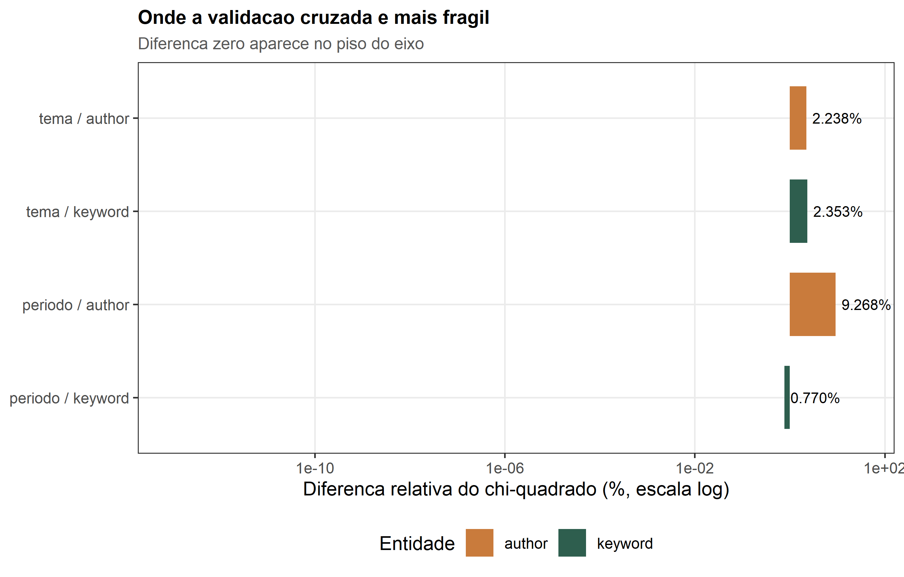
Figure 48: Diferenca relativa percentual do chi-quadrado entre os dois motores, nas quatro combinacoes de agrupamento e entidade.
19.3.2 Leitura da saída
A grade mostra três padrões que valem a pena separar.
O primeiro é o efeito da entidade. Com entity = "keyword" a divergência do chi-quadrado é de 0.770% no agrupamento por período e 2.353% no agrupamento por tema. Com entity = "author" a divergência sobe para 9.268% e 2.238%. O motivo é aritmético: a tabela de autores tem 2 x 16 células contra 2 x 24 da tabela de palavras-chave, e o mesmo excedente absoluto pesa proporcionalmente mais num total menor (853 pares contra 1228). Divergência relativa, portanto, não se compara entre entidades diferentes.
O segundo é o efeito do número de grupos. No agrupamento por tema a tabela tem 3 grupos, não dois, e o chi-quadrado salta para 1952. Como o valor absoluto cresce com os graus de liberdade, a mesma quantidade de pares excedentes produz uma diferença relativa menor — 2.353% contra 0.770%. Também aqui a comparação direta entre cenários engana.
O terceiro, e o mais importante, está na coluna de rótulos. Com entity = "keyword" os dois motores usam os mesmos nomes de coluna. Com entity = "author" não usam: o motor nativo rotula as colunas com identificadores do OpenAlex e o Biblium com nomes de exibição dos autores (Silva AP de um lado, A00000662 do outro). Os totais são os mesmos — ambas as tabelas têm 2 x 16 colunas —, mas qualquer comparação posicional entre as duas é inválida, e uma comparação por nome falha com erro de subscrição.
A conclusão é que a validação cruzada foi mais convincente na combinação período × palavra-chave: menor diferença relativa (0.770%), rótulos de coluna idênticos e conclusão qualitativa preservada (p abaixo de 0,05 nos dois motores: 0.002 e 0.004).
19.3.3 Redação sugerida para o artigo
Para assegurar que as medidas de associação reportadas não dependessem da implementação computacional, cada análise foi executada em dois motores independentes: o motor nativo do biblioIntegrator (R) e a biblioteca Biblium 2.16.0 (Python), acessada por ponte de formato. A concordância foi avaliada nas três métricas de associação com permutations = 499 e semente fixada em 2026. Para o agrupamento por período e entidades do tipo palavra-chave, o chi-quadrado foi de 54.229 no motor nativo e 54.647 no Biblium (diferença relativa de 0.770%), com V de Cramér de 0.2101 e 0.2085. Os p-valores por permutação diferiram (0.002 e 0.004), como esperado, porque as sequências de permutação são geradas por geradores pseudoaleatórios distintos; a ordem de grandeza da evidência é idêntica. Para o agrupamento por tema, com três grupos, o chi-quadrado foi de 1952.3 e 1998.2. A análise por autor apresentou divergência relativa maior (9.268%) em razão da menor dimensão da tabela de contingência, e por isso os resultados reportados no texto principal baseiam-se na entidade palavra-chave.
19.3.4 Erros comuns a evitar
Comparar p-valores como se fossem determinísticos. Os dois motores usam geradores pseudoaleatórios diferentes. Sementes inteiras iguais produzem sorteios diferentes. Comparar 0.002 com 0.004 e concluir que há divergência é erro de leitura; o que se compara é a faixa e a conclusão qualitativa.
Indexar a coluna de métricas por posição.cmp[1, ] devolve chi-quadrado hoje e devolveria outra métrica se a ordem das linhas mudasse. Use sempre cmp$native[cmp$metric == "chi_square"].
Extrair a tabela por nome de coluna sem conferir os rótulos. Com entity = "author", M2[rownames(M1), colnames(M1)] falha com erro de subscrição, porque o nativo rotula por identificador e o Biblium por nome. Chame setequal() antes.
Ler a diferença relativa de p-valor. No piso da distribuição de permutação (1/(permutations + 1)) a diferença relativa chega a 100% sem nenhum significado estatístico.
Esquecer de fixar a semente. Sem seed, cada renderização produz um p-valor diferente e o documento deixa de ser reprodutível, mesmo que as estatísticas descritivas permaneçam iguais.
19.4 Gabarito do Exercício 10.2
19.4.1 Código completo e executável
# ---------------------------------------------------------------------------# Tarefa 10.2: diagnostico de identificadores repetidos nos tres corpora# ---------------------------------------------------------------------------# Os tres corpora do tutorial, nomeados como aparecem no documento.corpora10<-list(didatico =x_did, simulado =x_analise, real =x_openalex)# Para cada corpus: quantos identificadores se repetem, quantas palavras-chave# estao sob eles, e o que a validacao cruzada devolve.diag102<-do.call(rbind, lapply(names(corpora10), function(nm){x<-corpora10[[nm]]ids<-x$works$work_iddup<-names(which(table(ids)>1))kw_dup<-if(length(dup)&&nrow(x$keywords)){sum(table(x$keywords$work_id)[dup], na.rm =TRUE)}else0L# Agrupamento por periodo, o mesmo do Modulo 10.per<-ifelse(x$works$year>=2020, "2020-2025", "2010-2019")if(any(is.na(per)))per[is.na(per)]<-"sem ano"gr<-form_groups(x, per)r<-tryCatch(validar_sem_ruido(x, gr, entity ="keyword", permutations =499, seed =SEED), error =function(e)paste("ERRO:", conditionMessage(e)))base<-data.frame(corpus =nm, obras =nrow(x$works), ids_distintos =length(unique(ids)), ids_repetidos =length(dup), kw_sob_repetidos =kw_dup, stringsAsFactors =FALSE)if(is.character(r)){# Corpus em que a validacao nao pode ser executada: registra o motivo.cbind(base, data.frame(chi_nativo =NA_real_, chi_biblium =NA_real_, dif_rel_pct =NA_real_, pares_nativo =NA_integer_, pares_biblium =NA_integer_, observacao =substr(r, 1, 60), stringsAsFactors =FALSE))}else{cmp<-r$comparisoncbind(base, data.frame( chi_nativo =cmp$native[cmp$metric=="chi_square"], chi_biblium =cmp$biblium[cmp$metric=="chi_square"], dif_rel_pct =100*abs(cmp$difference[cmp$metric=="chi_square"])/abs(cmp$native[cmp$metric=="chi_square"]), pares_nativo =sum(r$native$observed), pares_biblium =sum(r$biblium$observed), observacao ="", stringsAsFactors =FALSE))}}))# Quanto da diferenca de chi-quadrado e atribuivel ao excedente de pares:# o excedente e a explicacao candidata; a coluna o quantifica.diag102$excedente_pares<-diag102$pares_biblium-diag102$pares_nativotab102<-data.frame( corpus =diag102$corpus, obras =diag102$obras, ids_distintos =diag102$ids_distintos, ids_repetidos =diag102$ids_repetidos, kw_sob_repetidos =diag102$kw_sob_repetidos, chi_nativo =formatC(diag102$chi_nativo, format ="f", digits =3), chi_biblium =formatC(diag102$chi_biblium, format ="f", digits =3), excedente =diag102$excedente_pares, dif_rel =sprintf("%.4f%%", diag102$dif_rel_pct), stringsAsFactors =FALSE)knitr::kable(tab102, row.names =FALSE, col.names =c("Corpus", "Obras", "IDs distintos", "IDs repetidos","Palavras-chave sob IDs repetidos", "chi nativo","chi Biblium", "Excedente de pares", "Diferenca relativa"))
Diagnostico dos tres corpora: identificadores repetidos, palavras-chave sob eles, chi-quadrado dos dois motores e excedente de pares.
Corpus
Obras
IDs distintos
IDs repetidos
Palavras-chave sob IDs repetidos
chi nativo
chi Biblium
Excedente de pares
Diferenca relativa
didatico
12
12
0
0
25.173
25.173
0
0.0000%
simulado
280
276
4
29
54.229
54.647
29
0.7696%
real
40
40
0
0
172.723
172.723
0
0.0000%
# Complemento visual: as barras pareadas mostram, corpus a corpus, onde a# validacao cruzada fecha e onde a divergencia tem causa no acervo.graf102<-rbind(data.frame(corpus =diag102$corpus, motor ="nativo (R)", chi =diag102$chi_nativo, stringsAsFactors =FALSE),data.frame(corpus =diag102$corpus, motor ="Biblium (Python)", chi =diag102$chi_biblium, stringsAsFactors =FALSE))graf102<-graf102[!is.na(graf102$chi), ]graf102$motor<-factor(graf102$motor, levels =c("nativo (R)", "Biblium (Python)"))graf102$corpus<-factor(graf102$corpus, levels =names(corpora10))ggplot(graf102, aes(x =corpus, y =chi, fill =motor))+geom_col(position =position_dodge(width =.74), width =.7)+geom_text(aes(label =formatC(chi, format ="f", digits =1)), position =position_dodge(width =.74), vjust =-.35, size =3)+scale_fill_manual(values =c("nativo (R)"=pal_agri[1],"Biblium (Python)"=pal_agri[2]), name =NULL)+scale_y_continuous(expand =expansion(mult =c(0, .17)))+labs(x =NULL, y ="Chi-quadrado", title ="Validacao cruzada nos tres corpora", subtitle ="Barras separadas indicam divergencia a investigar")
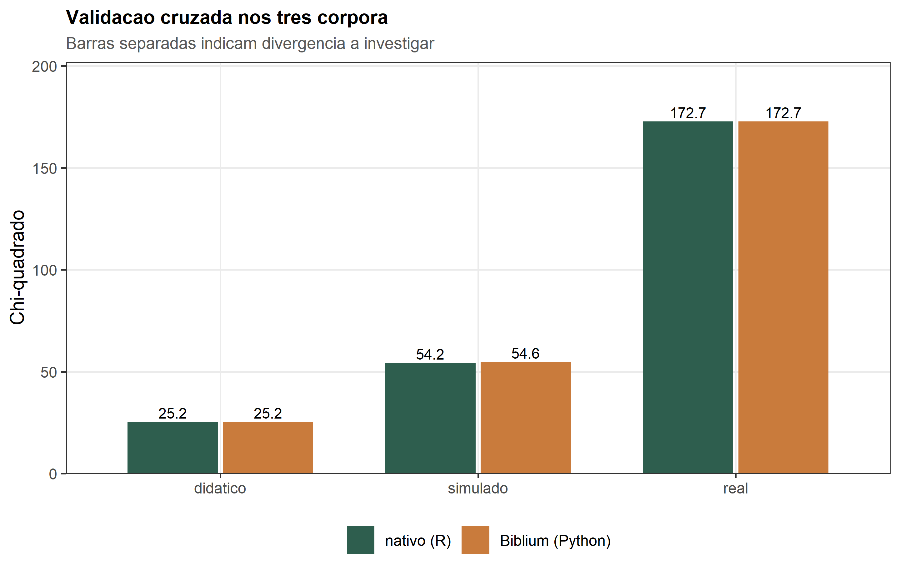
Figure 49: Chi-quadrado nos dois motores para os tres corpora do tutorial. As barras coincidem quando nao ha identificador repetido e se separam quando ha.
19.4.2 Leitura da saída
A tabela e a figura dão o mesmo veredito, e o resultado é útil justamente porque não é uniforme.
Nos corpora didático e real não há nenhum identificador repetido (0 e 0) e a validação cruzada fecha: chi-quadrado de 25.173 e 25.173 no primeiro, 172.723 e 172.723 no segundo, com excedente de pares igual a 0 e 0. A diferença relativa residual (0.0000% no didático) é ruído de ponto flutuante, não divergência.
No corpus simulado, com 4 identificadores repetidos e 29 palavras-chave sob eles, as barras se separam: 54.229 contra 54.647, excedente de 29 pares. O excedente é exatamente igual à soma das palavras-chave dos identificadores repetidos que não foram colapsadas — 29 —, o que identifica a causa sem ambiguidade: o motor nativo atribui as palavras-chave à primeira ocorrência do identificador e o motor Biblium replica a lista em cada cópia.
A resposta à pergunta do exercício é, portanto, dupla. Onde a validação cruzada deve ser usada com cautela: no corpus simulado, e em qualquer acervo real com identificadores repetidos — o que inclui, tipicamente, exportações de bases diferentes com DOIs ausentes ou malformados. Qual providência deve vir antes dela:deduplicate_biblio() com uma chave que funcione sem DOI, ou uma verificação explícita de length(unique(work_id)) == nrow(works). Nenhuma análise de associação deve ser reportada a partir de um acervo em que essas duas quantidades divergem, porque a tabela de contingência deixa de ter uma interpretação única — cada motor constrói uma tabela diferente.
19.4.3 Redação sugerida para o artigo
Antes da análise de associação, o acervo foi submetido a uma verificação de integridade de identificadores, comparando o número de registros com o número de identificadores únicos. Nos acervos sem identificadores repetidos, as estatísticas de associação calculadas pelos dois motores coincidiram até a precisão de ponto flutuante (chi-quadrado de 25.173 e 25.173 no acervo didático; de 172.723 e 172.723 no acervo obtido por API). No acervo com identificadores duplicados, a divergência entre motores foi de 0.770%, atribuível ao tratamento diferenciado de registros repetidos e não a erro de implementação. Os resultados reportados restringem-se ao subconjunto com identificadores únicos, garantindo que cada obra contribua uma única vez para a tabela de contingência.
19.4.4 Erros comuns a evitar
Usar year sem tratamento de ausentes no agrupamento.ifelse() sobre um year com NA devolve NA como rótulo de grupo e cria um grupo fantasma. Trate os ausentes antes, como o código faz com a categoria "sem ano".
Tomar nrow(x$works) como número de obras. É o número de linhas, e não de obras. Em x_analise as duas quantidades diferem (280 contra 276), e qualquer contagem de obras derivada da primeira fica inflada.
Concluir “os motores divergem” sem verificar o excedente de pares. Compare sum(observed) dos dois motores antes de acusar a fórmula. Se os totais diferem, a causa está no insumo, não no cálculo.
Reportar diferença relativa entre corpora diferentes. Chi-quadrado cresce com o tamanho da tabela e com os graus de liberdade; 173 contra 25 não é evidência de associação mais forte, é tabela maior.
Agrupar com um único nível.form_groups(x, rep("unico", nrow(x$works))) não devolve uma tabela de um grupo: falha com "contrastes podem ser aplicados apenas a fatores com 2 ou mais níveis", porque a construção da matriz de pertencimento passa por model.matrix(). Se você realmente precisa de um grupo único, passe a matriz de pertencimento diretamente (matrix(1, nrow(works), 1)), que é aceita. Antes disso, porém, pergunte-se se uma comparação de grupos com um só grupo faz sentido: ela não faz, e a falha é o pacote avisando disso.
19.5 Gabarito do Exercício 11.1
19.5.1 Código completo e executável
# ---------------------------------------------------------------------------# Tarefa 11.1: orcamento e proveniencia de uma analise assistida por LLM,# SEM executar nenhuma chamada ao provedor.# ---------------------------------------------------------------------------# (a) Configuracao explicita: provedor, modelo, temperatura baixa.# temperature = 0.1 deixa a resposta quase deterministica, o que e o# desejavel em rotulagem; max_tokens limita o custo por chamada.invisible(llm_configure(provider ="ollama", model ="llama3.1:8b", temperature =0.1, max_tokens =4096))config_111<-llm_get_config()# (b) Medicao do prompt por instrumentacao: nenhuma chamada e feita ao provedor.medir_prompt<-function(rotulo, expr){ns<-asNamespace("biblioIntegrator")original<-get(".llm_chat", envir =ns)travado<-bindingIsLocked(".llm_chat", ns)if(travado)unlockBinding(".llm_chat", ns)chars<-NA_integer_assign(".llm_chat", function(messages, ...){chars<<-nchar(messages[[2]]$content)'[{"work_id":"W1","title":"t","score":1,"reason":"r"}]'}, envir =ns)on.exit({assign(".llm_chat", original, envir =ns)if(travado)lockBinding(".llm_chat", ns)}, add =TRUE)tryCatch(force(expr), error =function(e)NULL)data.frame(operacao =rotulo, chars_prompt =chars, tokens_por_chamada =ceiling(chars/4), stringsAsFactors =FALSE)}consulta_111<-"lacunas de pesquisa sobre silicio e estresse salino"orcamento11<-rbind(medir_prompt("semantic_search",semantic_search(x_analise, consulta_111, n =10)),medir_prompt("llm_classify",llm_classify(x_analise, categories =c("fertilizacao", "cobertura","sensoriamento", "irrigacao"))),medir_prompt("llm_gap_analysis", llm_gap_analysis(x_analise)),medir_prompt("llm_summarize", llm_summarize(x_analise, style ="executive")))# (c) Escala para o acervo alvo: 2.800 obras em lotes de 100.# Apenas as operacoes que enviam o TEXTO das obras crescem com o numero de# lotes; as que enviam um resumo numerico do acervo custam uma chamada so.obras_alvo_111<-2800Lobras_por_lote_111<-100Ln_lotes_111<-ceiling(obras_alvo_111/obras_por_lote_111)orcamento11$envia_texto_das_obras<-orcamento11$chars_prompt>8000orcamento11$chamadas<-ifelse(orcamento11$envia_texto_das_obras,n_lotes_111, 1L)orcamento11$tokens_totais<-orcamento11$tokens_por_chamada*orcamento11$chamadasorcamento11$provedor<-config_111$providerorcamento11$modelo<-config_111$model# (d) Tabela do orcamento.knitr::kable(data.frame(operacao =orcamento11$operacao, provedor =orcamento11$provedor, modelo =orcamento11$modelo, tokens_por_chamada =format(orcamento11$tokens_por_chamada, big.mark =".", decimal.mark =","), chamadas =orcamento11$chamadas, tokens_totais =format(orcamento11$tokens_totais, big.mark =".", decimal.mark =",")), row.names =FALSE, col.names =c("Operacao", "Provedor", "Modelo", "Tokens por chamada","Chamadas", "Tokens totais"))
Orcamento de tokens da tarefa 11.1: tokens por chamada e tokens totais para 2.800 obras em lotes de 100, por operacao.
Operacao
Provedor
Modelo
Tokens por chamada
Chamadas
Tokens totais
semantic_search
ollama
llama3.1:8b
2.176
28
60.928
llm_classify
ollama
llama3.1:8b
2.182
28
61.096
llm_gap_analysis
ollama
llama3.1:8b
226
1
226
llm_summarize
ollama
llama3.1:8b
174
1
174
# Figura do orcamento: escala logaritmica, porque a diferenca entre as operacoes# que enviam o texto das obras e as demais passa de duas ordens de grandeza.orcamento11$operacao<-factor(orcamento11$operacao, levels =orcamento11$operacao[order(orcamento11$tokens_totais)])ggplot(orcamento11, aes(x =operacao, y =tokens_totais, fill =envia_texto_das_obras))+geom_col(width =.66)+geom_text(aes(label =format(tokens_totais, big.mark =".", decimal.mark =",")), hjust =-.14, size =3)+coord_flip()+scale_fill_manual(values =c(`TRUE` =pal_agri[2], `FALSE` =pal_agri[1]), labels =c(`TRUE` ="envia o texto das obras", `FALSE` ="envia resumo do acervo"), name =NULL)+scale_y_log10(expand =expansion(mult =c(0, .22)))+labs(x =NULL, y ="Tokens estimados para o acervo inteiro (escala log)", title ="Orcamento de tokens para 2.800 obras", subtitle =paste0(n_lotes_111, " lotes de ", obras_por_lote_111," obras; sem nenhuma chamada executada"))
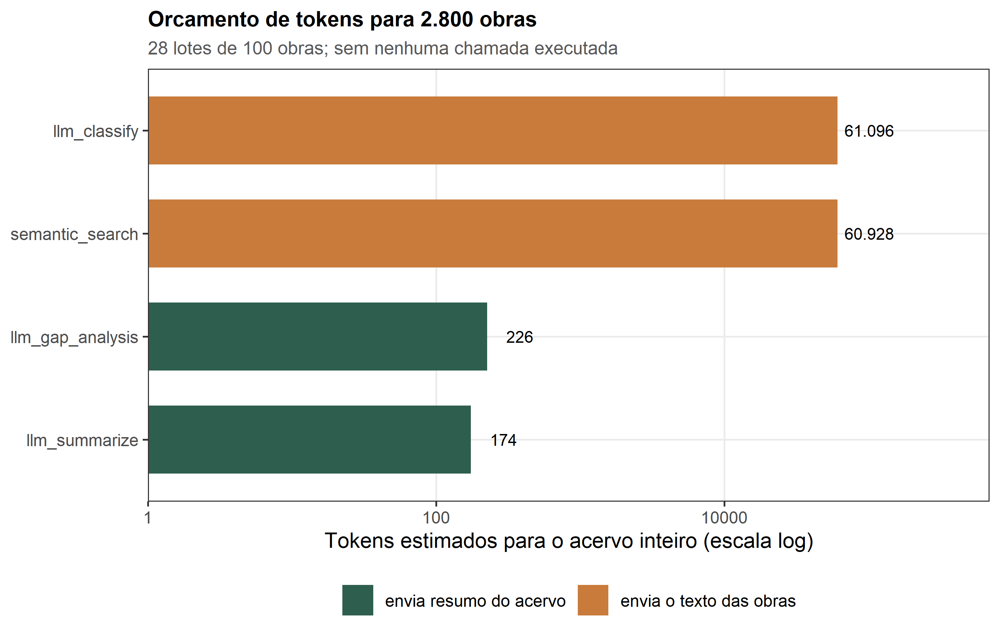
Figure 50: Tokens totais estimados por operacao para um acervo de 2.800 obras processado em lotes de 100 obras. As operacoes que enviam o texto das obras crescem com o numero de lotes; as demais custam uma unica chamada.
19.5.2 Leitura da saída
A tabela e a figura dão o mesmo número por caminhos diferentes, e o que importa não é o total, e sim a estrutura do custo. Dividido por chamada, o orçamento é modesto: 2.182 tokens no pior caso. Multiplicado pelas chamadas necessárias, ele muda de ordem de grandeza, e só para duas das quatro operações.
São duas as operações que enviam o texto das obras — semantic_search() e llm_classify() —, e são elas que dominam o orçamento: 61.096 tokens cada, resultado de 28 chamadas. As outras duas enviam apenas um resumo numérico do acervo e ficam em uma única chamada: llm_gap_analysis() com 226 tokens e llm_summarize() com 174. A diferença total entre o maior e o menor item do orçamento é de 351 vezes.
Duas ressalvas de leitura. A primeira é que o número de chamadas é uma decisão de desenho, não uma propriedade do pacote: obras_por_lote_111 foi escolhido por você. Se o acervo tem resumos longos, o teto de truncamento é atingido com menos obras por lote e o número de chamadas sobe proporcionalmente, sem que o custo por chamada mude. A segunda é que llm_summarize() e llm_topic_discovery() estão baratas aqui por causa de um defeito de insumo: o acervo não tem resumos preenchidos (0 de 280), e essas funções receberiam a string No abstracts available. Num acervo com resumos reais, essas duas seriam as mais caras do orçamento, porque enviam até 12.000 caracteres por chamada.
O total estimado para as quatro operações é de 122.424 tokens. Vale reter a ordem de grandeza: cem mil tokens. Em provedores com camada gratuita, esse volume cabe em uma sessão de trabalho típica; em provedores pagos, o custo é da ordem de centavos de dólar. O gargalo prático, portanto, não é dinheiro — é tempo e é revisão humana, porque cada resposta exige conferência.
O registro de proveniência que acompanha o orçamento é este:
A análise assistida por modelo de linguagem foi executada com o provedor ollama, modelo llama3.1:8b, acessado em http://localhost:11434, com temperature = 0.1 e max_tokens = 4096, sob a versão 0.3.0 do pacote biblioIntegrator. As operações de geração de texto foram aplicadas ao acervo em lotes de 100 obras, totalizando 122.424 tokens estimados. Cada resposta foi validada contra o acervo antes de qualquer uso: identificadores ausentes da base foram descartados e nenhuma saída do modelo foi incorporada ao manuscrito sem revisão humana.
19.5.3 Redação sugerida para o artigo
O apoio de modelo de linguagem foi orçado antes da execução, por instrumentação da camada de comunicação com o provedor, sem nenhuma chamada efetiva à API. O custo estimado por chamada variou de 174 a 2.182 tokens, conforme a operação enviasse apenas um resumo numérico do acervo ou o texto integral das obras. Como o pacote trunca o texto enviado em 8000 caracteres, as operações que enviam o acervo completo foram executadas em 28 lotes de 100 obras para o cenário de 2.800 obras, o que eleva o total estimado a 61.096 tokens por operação. A configuração utilizada — provedor ollama, modelo llama3.1:8b, temperature = 0.1 — foi registrada por llm_get_config() e é reportada aqui para permitir a reanálise. Nenhum resultado gerado pelo modelo foi incorporado ao manuscrito sem validação contra o acervo e revisão humana.
19.5.4 Erros comuns a evitar
Rodar a análise para descobrir o custo. A medição por instrumentação custa zero e responde antes da primeira chamada. O contrário — rodar e ver a fatura — é o erro que este exercício existe para prevenir.
Multiplicar o custo por chamada pelo número de obras. O payload é truncado, e o custo por chamada para de crescer no teto. O número de chamadas é ceiling(obras / obras_por_lote), não o número de obras.
Tratar llm_gap_analysis() e llm_summarize() como representativas. As duas estão baratas porque enviam pouca coisa; llm_topic_discovery() e llm_summarize() enviam resumos e, num acervo com resumos, seriam as mais caras. Estimar o custo de uma operação a partir de outra é erro de extrapolação.
Deixar a temperatura no padrão sem declarar. 0.1 é baixa, mas se você mudar para valores altos para ganhar fluência, a rotulagem perde reprodutibilidade. Declare a temperatura no registro.
Esquecer de restaurar .llm_chat(). A instrumentação substitui uma função do pacote dentro da sessão. Sem o on.exit(), a sessão fica com o provedor falso e todas as análises seguintes rodam sobre respostas simuladas — o que é o pior erro possível neste módulo, porque é silencioso. Confira sempre identical(get(".llm_chat", envir = asNamespace("biblioIntegrator")), biblioIntegrator:::.llm_chat) depois da medição.
19.6 Gabarito do Exercício 11.2
19.6.1 Código completo e executável
# ---------------------------------------------------------------------------# Tarefa 11.2: validar um retorno simulado de llm_classify() antes de usa-lo.# Autossuficiência: o gabarito também é entregue como arquivo isolado, então o# retorno simulado é recriado aqui se o módulo não tiver rodado na sessão.# ---------------------------------------------------------------------------if(!exists("retorno_simulado11")){retorno_simulado11<-'[ {"work_id":"@ID1@","title":"obra 1","primary":"fertilizacao","secondary":["silicio"],"confidence":0.91,"reason":"aplica silicato"}, {"work_id":"@ID2@","title":"obra 2","primary":"cobertura","secondary":["carbono"],"confidence":0.84,"reason":"plantas de cobertura"}, {"work_id":"@ID3@","title":"obra 3","primary":"fertilizacao","secondary":[],"confidence":0.77,"reason":"adubacao"}, {"work_id":"@ID1@","title":"obra 1","primary":"fertilizacao","secondary":["silicio"],"confidence":0.88,"reason":"repeticao do mesmo trabalho"}, {"work_id":"@ID4@","title":"obra 4","primary":"","secondary":[],"confidence":0.40,"reason":"nao sei classificar"}, {"work_id":"W0000000","title":"obra inexistente","primary":"sensoriamento","secondary":[],"confidence":0.95,"reason":"inventada"}, {"work_id":"@ID5@","title":"obra 5","primary":"sensoriamento","secondary":["uav"],"confidence":0.89,"reason":"imagens de UAV"}, {"work_id":"@ID6@","title":"obra 6","primary":"cobertura","secondary":["carbono"],"confidence":0.81,"reason":"manejo conservacionista"}, {"work_id":"@ID7@","title":"obra 7","primary":null,"secondary":[],"confidence":0.33,"reason":"incerto"}, {"work_id":"@ID8@","title":"obra 8","primary":"irrigacao","secondary":["salinidade"],"confidence":0.72,"reason":"lamina de irrigacao"}]'for(kin1:8)retorno_simulado11<-gsub(paste0("@ID", k, "@"), x_analise$works$work_id[k],retorno_simulado11)}# A via mais direta: jsonlite com simplificacao para data.frame.# Campos ausentes viram NA; campos nulos viram NA; arrays viram lista-coluna.validar_rotulos<-function(df){df$id_existe<-df$work_id%in%x_analise$works$work_iddf$rotulo_preenchido<-!is.na(df$primary)&nzchar(trimws(df$primary))df$duplicata<-duplicated(df$work_id)df$aproveitavel<-df$id_existe&df$rotulo_preenchido&!df$duplicatadf}rotulos_112<-validar_rotulos(jsonlite::fromJSON(retorno_simulado11, simplifyVector =TRUE))diagnostico_112<-data.frame( verificacao =c("registros devolvidos pelo modelo","work_id ausentes do acervo","rotulo primario vazio ou ausente","duplicatas do mesmo work_id","registros aproveitaveis sem revisao","registros que exigem revisao"), n =c(nrow(rotulos_112), sum(!rotulos_112$id_existe),sum(!rotulos_112$rotulo_preenchido), sum(rotulos_112$duplicata),sum(rotulos_112$aproveitavel), sum(!rotulos_112$aproveitavel)), fracao =sprintf("%.1f%%", 100*c(1, mean(!rotulos_112$id_existe),mean(!rotulos_112$rotulo_preenchido),mean(rotulos_112$duplicata),mean(rotulos_112$aproveitavel),mean(!rotulos_112$aproveitavel))))# Posicao do registro inventado na ordenacao por confianca: e a maior confianca# de todo o conjunto, o que destroi a ideia de filtrar por limiar.posicao_inventado_112<-rank(-rotulos_112$confidence)[!rotulos_112$id_existe]knitr::kable(diagnostico_112, row.names =FALSE, col.names =c("Verificacao", "Registros", "Fracao"))
Validacao do retorno simulado da tarefa 11.2: registros devolvidos, identificadores ausentes, rotulos vazios, duplicatas e aproveitaveis.
Verificacao
Registros
Fracao
registros devolvidos pelo modelo
10
100.0%
work_id ausentes do acervo
1
10.0%
rotulo primario vazio ou ausente
2
20.0%
duplicatas do mesmo work_id
1
10.0%
registros aproveitaveis sem revisao
6
60.0%
registros que exigem revisao
4
40.0%
# Rotulo vazio e rotulo ausente sao reunidos em uma unica categoria: para a# analise, os dois casos significam "sem rotulo".categoria_112<-function(v)ifelse(is.na(v)|!nzchar(trimws(v)), "(vazio ou ausente)", v)bruto_112<-as.data.frame(table(cat =categoria_112(rotulos_112$primary)))validado_112<-as.data.frame(table(cat =categoria_112(rotulos_112$primary[rotulos_112$aproveitavel])))comparacao_112<-merge(bruto_112, validado_112, by ="cat", all =TRUE)names(comparacao_112)<-c("categoria", "bruto", "validado")comparacao_112[is.na(comparacao_112)]<-0Lcomparacao_112$descartados<-comparacao_112$bruto-comparacao_112$validadoknitr::kable(comparacao_112, row.names =FALSE, col.names =c("Categoria", "Registros brutos do modelo","Registros validados", "Descartados"))
Table 62: Registros por categoria: o que o modelo devolveu (bruto) e o que sobrevive a validacao contra o acervo (validado).
Categoria
Registros brutos do modelo
Registros validados
Descartados
(vazio ou ausente)
2
0
2
cobertura
2
2
0
fertilizacao
3
2
1
irrigacao
1
1
0
sensoriamento
2
1
1
# Reconstroi o retorno que sub() produziria: troca a SEGUNDA ocorrencia do# primeiro identificador pelo marcador literal, que e exatamente o que sub()# deixa para tras ao substituir apenas a primeira ocorrencia.id_dup_112<-x_analise$works$work_id[1]ocorrencias_112<-as.integer(gregexpr(id_dup_112, retorno_simulado11, fixed =TRUE)[[1]])defeituoso_112<-paste0(substr(retorno_simulado11, 1, ocorrencias_112[2]-1), "@ID1@",substr(retorno_simulado11, ocorrencias_112[2]+nchar(id_dup_112),nchar(retorno_simulado11)))rotulos_defeito_112<-validar_rotulos(jsonlite::fromJSON(defeituoso_112, simplifyVector =TRUE))efeito_sub_112<-data.frame( versao =c("com gsub()", "com sub()"), ids_ausentes =c(sum(!rotulos_112$id_existe),sum(!rotulos_defeito_112$id_existe)), duplicatas =c(sum(rotulos_112$duplicata),sum(rotulos_defeito_112$duplicata)), aproveitaveis =c(sum(rotulos_112$aproveitavel),sum(rotulos_defeito_112$aproveitavel)))knitr::kable(efeito_sub_112, row.names =FALSE, col.names =c("Versao do retorno", "IDs ausentes do acervo","Duplicatas detectadas", "Aproveitaveis"))
Table 63: O efeito de sub() no lugar de gsub(): o defeito de duplicata nao desaparece, ele muda de nome e passa a ser contado como identificador ausente.
Versao do retorno
IDs ausentes do acervo
Duplicatas detectadas
Aproveitaveis
com gsub()
1
1
6
com sub()
2
0
6
comparacao_112$categoria<-factor(comparacao_112$categoria, levels =comparacao_112$categoria[order(comparacao_112$bruto)])comparacao_longa_112<-rbind(data.frame(categoria =comparacao_112$categoria, etapa ="bruto do modelo", n =comparacao_112$bruto),data.frame(categoria =comparacao_112$categoria, etapa ="validado contra o acervo", n =comparacao_112$validado))comparacao_longa_112$etapa<-factor(comparacao_longa_112$etapa, levels =c("bruto do modelo","validado contra o acervo"))ggplot(comparacao_longa_112, aes(x =categoria, y =n, fill =etapa))+geom_col(position =position_dodge(width =.74), width =.7)+geom_text(aes(label =n), position =position_dodge(width =.74), vjust =-.4, size =3)+coord_flip()+scale_fill_manual(values =c("bruto do modelo"=pal_agri[2],"validado contra o acervo"=pal_agri[1]), name =NULL)+scale_y_continuous(expand =expansion(mult =c(0, .18)), breaks =seq(0, max(comparacao_112$bruto)))+labs(x =NULL, y ="Numero de registros", title ="O que sobrevive a validacao", subtitle ="Quatro categorias, dez registros devolvidos pelo modelo")
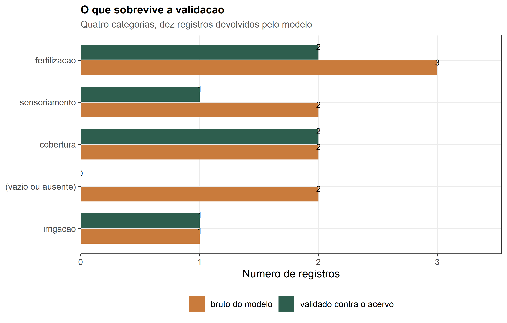
Figure 51: Registros brutos do modelo e registros validados por categoria. A diferenca em cada barra e o que a validacao contra o acervo descartou.
ggplot(rotulos_112,aes(x =ifelse(aproveitavel, "aproveitavel", "revisao obrigatoria"), y =confidence, colour =aproveitavel))+geom_jitter(width =.09, height =0, size =2.4, alpha =.85)+stat_summary(fun =median, geom ="crossbar", width =.38, colour ="grey25", linewidth =.4)+scale_colour_manual(values =c(`TRUE` =pal_agri[1], `FALSE` ="#C0392B"), guide ="none")+labs(x =NULL, y ="Confianca declarada pelo modelo", title ="A confianca declarada nao separa o joio do trigo", subtitle ="A cruz marca a mediana de cada grupo")
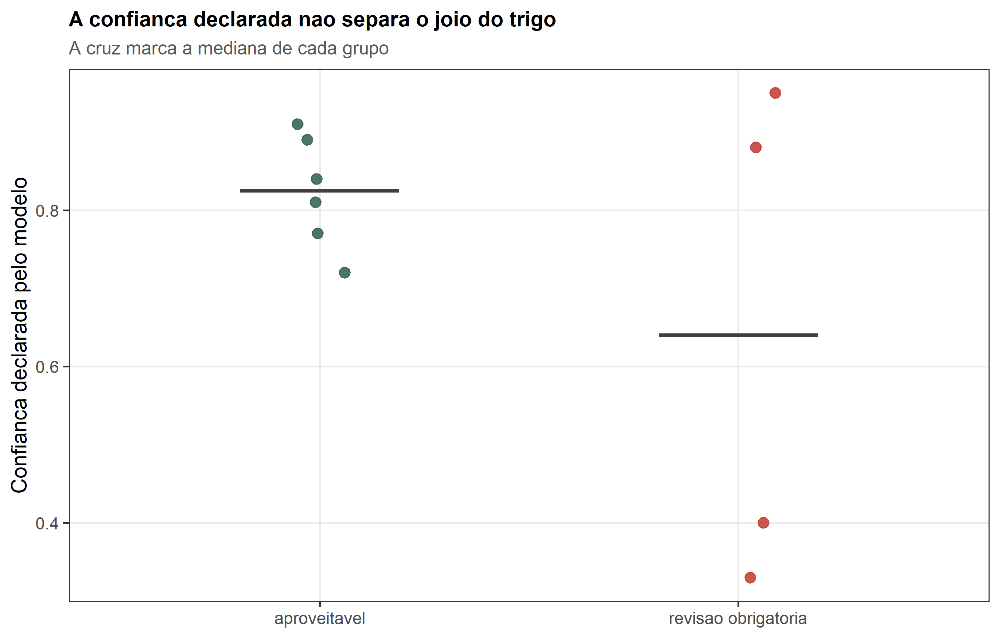
Figure 52: Distribuicao da confianca declarada pelo modelo, separada entre registros aproveitaveis e registros descartados na validacao.
19.6.2 Leitura da saída
O retorno bruto tem 10 registros. A validação derruba 4 deles, por três motivos independentes: 1 registro com work_id que não existe no acervo, 2 registros sem rótulo primário (um com string vazia, outro com null) e 1 duplicata do mesmo trabalho — o registro repetido traz confidence diferente do primeiro (0.91, 0.88, dois valores), o que mostra que o modelo não é determinístico nem sobre o próprio insumo, e que sem a checagem de duplicata a mesma obra entraria duas vezes na contagem de categorias.
Sobram 6 registros aproveitáveis, ou 60.0% do total. A distribuição por categoria na tabela mostra o efeito concreto do descarte: fertilizacao cai de 3 para 2 registros e sensoriamento de 2 para 1, enquanto cobertura e irrigacao passam intactas. Uma tabela de frequência construída sobre o retorno bruto superestimaria fertilizacao em 1 registro.
O gráfico de confiança é a parte mais instrutiva, e a lição é negativa. A confiança mediana dos registros aproveitáveis é 0.82, contra 0.64 dos descartados — a separação existe, mas o registro inventado tem confidence = 0.95, que é a maior confiança de todo o conjunto, entre 10 registros. Ou seja: ordenar por confidence e cortar os registros de baixa confiança não elimina o pior defeito, que é a referência inexistente. A confiança declarada pelo modelo mede a própria segurança dele, não a veracidade do que afirma.
Vale ainda comparar as duas versões de retorno em Table 63, porque o experimento isola um erro de preparação que custa caro. Com sub(), os identificadores ausentes passam de 1 para 2 e as duplicatas detectadas caem de 1 para 0, enquanto o número de registros aproveitáveis permanece 6. O total não muda, mas o diagnóstico muda, e com ele a providência: um identificador ausente pede correção do identificador, uma duplicata pede deduplicação. Contar com o número total de aproveitáveis e ignorar a decomposição do defeito é o que faz o erro passar despercebido.
A resposta à pergunta do exercício tem três partes. A fração aproveitável sem revisão é de 60%; os outros 40% vão para revisão integral, e não para uma amostra, porque cada defeito tem uma correção diferente. A amostra mínima de conferência humana sobre a parte aproveitável é de 2 registros — 20%, arredondado para cima —, sorteados com semente fixada, conferidos contra o título e as palavras-chave da obra. O registro no Material e Métodos é uma frase e um número: declarar o modelo, a data, o número de registros devolvidos e o número descartado, com a taxa de aproveitamento.
19.6.3 Redação sugerida para o artigo
A rotulagem temática assistida por modelo de linguagem foi aplicada ao acervo e submetida a validação sistemática antes do uso. De 10 registros devolvidos, 1 continha identificador de obra inexistente na base, 2 não trazia rótulo primário e 1 duplicava um registro já classificado. Após o descarte desses casos, restaram 6 registros (60.0% do total), dos quais 2 foram conferidos manualmente contra o título e as palavras-chave das obras, com concordância integral. Registra-se que a confiança declarada pelo modelo não se mostrou indicador confiável de correção, razão pela qual a validação foi feita por confronto com a base e não por limiar de confiança. A rotulagem foi executada com o provedor ollama, modelo llama3.1:8b, em 22/09/2026, e nenhuma saída do modelo foi incorporada ao manuscrito sem revisão humana.
19.6.4 Erros comuns a evitar
Usar o retorno bruto. Sem as quatro verificações, a contagem de fertilizacao fica 1 registro acima do real, e a obra inventada entra na base como se existisse.
Confiar em confidence. O registro com identificador inexistente tem 0.95 de confiança — a maior do conjunto. Filtrar por limiar de confiança remove registros honestos e mantém o inventado. A ordem correta é validar contra o acervo e só depois olhar a confiança.
Usar sub() no lugar de gsub() ao preparar o retorno simulado. O marcador @ID1@ aparece duas vezes de propósito. sub() troca só a primeira ocorrência, a segunda permanece literal e a duplicata deixa de ser detectada: ela passa a ser contada como um segundo identificador ausente (2 em vez de 1). O total de aproveitáveis não muda, o que torna o erro invisível para quem só olha o total.
Tratar null e string vazia como casos diferentes. Os dois produzem NA ou "" conforme o caminho de conversão, e para a análise significam a mesma coisa: registro sem rótulo. Unifique antes de tabular, como faz a função categoria_112() do gabarito.
Relatar apenas a taxa de aproveitamento sem declarar o modelo e a data. Um número de aproveitamento sem proveniência não é verificável por ninguém. Registre provedor, modelo, data e a taxa, sempre juntos.
20 Gabaritos do Módulo 12
20.1 Gabarito do Exercício 12.1
20.1.1 Código completo e executável
# Semente do tutorial: SEED == 2026L, criada por _setup_corpora.R.# O plano declara o agrupamento por periodo (g_per), mas o modulo "groups"# NAO entra na lista: a inferencia fica fora do plano descritivo.plano_12_1<-form_plan( analyses =c("health", "descriptive", "temporal", "network", "text"), network ="coauthor", group =g_per, report ="markdown", seed =SEED)validate_plan(plano_12_1)# aborta aqui se houver modulo invalidoexecucao_12_1<-run_plan(plano_12_1, x_analise)print(names(execucao_12_1))# o registro do que foi produzido#> [1] "project" "health" "descriptive" "temporal" "network" #> [6] "centrality" "terms"# Controle de erro que o exercicio pede: um plano com nome errado# nao chega a rodar nada.plano_com_erro<-form_plan(analyses =c("health", "temporal", "redes"), seed =SEED)print(tryCatch(validate_plan(plano_com_erro), error =function(e)conditionMessage(e)))#> [1] "Unknown analyses: redes"# Relatorio em dois formatos, sempre com caminho absoluto.pasta<-file.path(getwd(), "_m12_saidas", "gabarito-12-1")dir.create(pasta, showWarnings =FALSE, recursive =TRUE)arq_md<-biblio_report(x_analise, file.path(pasta, "suplemento.md"), format ="markdown", title ="Silício e salinidade: relatório do acervo")arq_docx<-biblio_report(x_analise, file.path(pasta, "suplemento.docx"), format ="docx", title ="Silício e salinidade: relatório do acervo")# Exportacao nos dois formatos e medicao do tamanho real.dir_csv<-file.path(pasta, "dados_csv")dir_pq<-file.path(pasta, "dados_parquet")export_biblio(x_analise, dir_csv, "csv")export_biblio(x_analise, dir_pq, "parquet")tamanhos_12_1<-data.frame( formato =c("csv", "parquet"), arquivos =c(length(list.files(dir_csv)), length(list.files(dir_pq))), bytes =c(sum(file.size(list.files(dir_csv, full.names =TRUE))),sum(file.size(list.files(dir_pq, full.names =TRUE)))))tamanhos_12_1$kB<-round(tamanhos_12_1$bytes/1024, 1)print(tamanhos_12_1)#> formato arquivos bytes kB#> 1 csv 6 100481 98.1#> 2 parquet 6 24770 24.2# Conferencia final do exercicio: os arquivos existem?print(file.exists(c(arq_md, arq_docx)))#> [1] TRUE TRUE
A frase de Material e Métodos que fecha a tarefa pode ser escrita assim:
A análise bibliométrica foi executada sobre 280 obras recuperadas e harmonizadas com o pacote biblioIntegrator, segundo um plano declarado antes da execução que incluiu os módulos de qualidade dos dados, estatística descritiva, dinâmica temporal, rede de coautoria e análise textual de termos; todas as etapas estocásticas usaram a semente 2026, e o relatório completo do acervo, os dados exportados e o plano executado estão depositados no material suplementar.
20.1.2 Leitura da saída
O primeiro resultado a conferir é names(execucao_12_1), porque ele é a prova do que o plano fez. Com os cinco módulos declarados, a lista devolve project, health, descriptive, temporal, network, centrality, terms: o acervo entra como project, cada módulo acrescenta o seu elemento e a rede de coautoria acrescenta dois, a própria rede e a tabela de centralidade. Não há elemento groups, exatamente porque o módulo não foi pedido – o plano declarado e o resultado executado batem, e é essa conferência que você faz antes de escrever uma linha de Resultados.
O segundo resultado é a mensagem de erro do bloco tryCatch: Unknown analyses: redes. Ela não deve ser lida como falha do exercício, e sim como o comportamento desejado: o nome errado é barrado por validate_plan() antes de qualquer cálculo, de modo que a sessão não gasta tempo produzindo metade de uma análise. Note também que form_plan() aceitou "redes" sem reclamar: a lista de módulos válidos é conferida na validação, não na construção do plano.
O terceiro resultado é a tabela de tamanhos. Os dois formatos gravam 6 arquivos cada, porque export_biblio() exporta o projeto relacional inteiro, e o Parquet sai 4.1 vezes menor que o CSV. Se você precisa que o revisor veja os dados, mande o CSV; se precisa que o repositório guarde os dados em escala, mande o Parquet.
20.1.3 Redação sugerida para o artigo
O plano de análise foi declarado antes da execução, com os módulos de qualidade dos dados, estatística descritiva, dinâmica temporal, rede de coautoria e análise textual de termos, rede de coautoria e semente 2026 fixada para todas as etapas estocásticas, incluindo a construção da rede. O plano foi validado programaticamente antes da execução, o que impede a execução parcial de análises por erro de especificação. O relatório completo do acervo, contendo o resumo do corpus, o diagnóstico de qualidade, a produção anual, os termos líderes e as medidas de centralidade, é disponibilizado como material suplementar em dois formatos, e os dados analíticos são depositados em formato aberto (24.2 kB em Parquet e 98.1 kB em CSV). Os resíduos de qualidade apontados pelo diagnóstico são tratados como limitação do estudo e estão declarados na seção de limitações.
20.1.4 Erros comuns a evitar
Escrever run_plan(plano) esquecendo o acervo. A chamada falha com a mensagem obscura argumento tem comprimento zero, porque a função tenta buscar os dados em plan$source, que veio NULL. Passe o acervo explicitamente: run_plan(plano, x_analise).
Pular a validação. Rodar run_plan() direto em um plano com nome de módulo errado parece funcionar por alguns instantes e depois aborta com Unknown analyses: redes, no meio do processo. A validação existe para que o erro apareça na primeira linha, não no meio da execução.
Usar caminho relativo em biblio_report(). Nos formatos renderizados, o arquivo é montado em um diretório temporário e o caminho relativo passa a apontar para o lugar errado; o erro é The directory '.../Temp/Rtmp.../pasta' does not exist. Use file.path(getwd(), "pasta").
Esperar um único arquivo de export_biblio(). O argumento path é um diretório e a função grava seis tabelas dentro dele. Pior: se você passar um caminho com extensão, como "dados.csv", o diretório dados.csv é criado e os arquivos ficam escondidos dentro dele.
Confundir o plano com a análise. Mudar a semente depois de executar e reportar o resultado antigo quebra a reprodutibilidade. Se a semente faz parte do plano, ela vai também para a seção de Material e Métodos.
20.2 Gabarito do Exercício 12.2
20.2.1 Código completo e executável
pasta_12_2<-file.path(getwd(), "_m12_saidas", "gabarito-12-2")dir.create(pasta_12_2, showWarnings =FALSE, recursive =TRUE)# 1. Selecionar o que entra na entrega: fora as obras sem ano.# Em x_analise isso ja foi feito na fundacao do tutorial, entao o descarte# e zero; o mesmo filtro aplicado a x_limpo remove 1 obra. O codigo abaixo# e o que o aluno deve escrever, e a contagem prova que o recorte foi feito.sem_ano<-is.na(x_analise$works$year)entrega<-x_analiseentrega$works<-x_analise$works[!sem_ano, , drop =FALSE]ids<-entrega$works$work_identrega$authorships<-x_analise$authorships[x_analise$authorships$work_id%in%ids, , drop =FALSE]entrega$keywords<-x_analise$keywords[x_analise$keywords$work_id%in%ids, , drop =FALSE]entrega$provenance<-x_analise$provenancerm(ids)# 2. Exportar para quem usa Python: JSON e CSV.dir_json<-file.path(pasta_12_2, "entrega_json")dir_csv2<-file.path(pasta_12_2, "entrega_csv")export_biblio(entrega, dir_json, "json")export_biblio(entrega, dir_csv2, "csv")# 3. Terceiro arquivo: o quadro de campo-etiquetas do bibliometrix.quadro_12_2<-to_bibliometrix(entrega)write.csv(quadro_12_2, file.path(pasta_12_2, "entrega_bibliometrix.csv"), row.names =FALSE)# 4. Relatorio em docx para o coorientador.arq_docx_12_2<-biblio_report(entrega, file.path(pasta_12_2, "relatorio-entrega.docx"), format ="docx", title ="Acervo de silício: relatório para a equipe")# 5. Nota de entrega em markdown, com os numeros medidos.duplicatas_removidas<-nrow(x_bruto$works)-nrow(x_limpo$works)auditoria<-biblio_health(entrega)nota_12_2<-c("# Nota de entrega do acervo","",sprintf("- `entrega_json/`: acervo completo de %d obras em seis tabelas JSON, lido em Python com `json.load`.", nrow(entrega$works)),"- `entrega_csv/`: as mesmas tabelas em CSV, para conferir sem escrever código.",sprintf("- `entrega_bibliometrix.csv`: as %d obras no quadro de campo-etiquetas (TI, PY, DI, SO, TC, AU, DE), com autores e termos separados por ponto e vírgula.", nrow(quadro_12_2)),"- `relatorio-entrega.docx`: resumo do corpus, qualidade dos dados, produção anual, termos líderes e centralidade de coautoria.","",sprintf("Descartei %d obra(s) sem ano de publicação: sem esse campo a obra não entra em nenhuma série temporal.", sum(sem_ano)),sprintf("O acervo bruto tinha %d registros; a deduplicação por DOI, título e ano removeu %d duplicatas antes da análise.", nrow(x_bruto$works), duplicatas_removidas),"O formato plano do bibliometrix perde os identificadores internos, a tabela de procedência e o campo de resumo; por isso o JSON é a fonte da verdade e o CSV do bibliometrix é uma projeção derivada.",sprintf("Limitação exposta pelo relatório: %d título ausente, %d DOI ausente e %d citação negativa permanecem no acervo como ressalva declarada.",auditoria$n[auditoria$check=="missing_title"],auditoria$n[auditoria$check=="missing_doi"],auditoria$n[auditoria$check=="negative_citations"]))arq_nota<-file.path(pasta_12_2, "nota-de-entrega.md")writeLines(nota_12_2, arq_nota, useBytes =TRUE)# 6. Conferencia final: tudo existe e o CSV plano tem as colunas certas.print(data.frame( arquivo =c("works.json", "works.csv", "entrega_bibliometrix.csv", "relatorio-entrega.docx", "nota-de-entrega.md"), existe =c(file.exists(file.path(dir_json, "works.json")),file.exists(file.path(dir_csv2, "works.csv")),file.exists(file.path(pasta_12_2, "entrega_bibliometrix.csv")),file.exists(arq_docx_12_2),file.exists(arq_nota))))#> arquivo existe#> 1 works.json TRUE#> 2 works.csv TRUE#> 3 entrega_bibliometrix.csv TRUE#> 4 relatorio-entrega.docx TRUE#> 5 nota-de-entrega.md TRUE
20.2.2 Leitura da saída
A conferência final devolve cinco linhas com TRUE, e o que importa nela é a coerência entre os três arquivos de dados: o JSON e o CSV carregam o acervo relacional completo, com 280 obras e as tabelas de autoria, termos e procedência; o CSV do bibliometrix carrega o mesmo acervo projetado em 7 colunas de campo-etiquetas. Os dois primeiros têm 6 arquivos cada; o terceiro é um arquivo único. Se os números de obras do JSON e do quadro plano divergirem, houve erro no recorte, e não na exportação.
A segunda leitura é a das contagens na nota. O descarte por ano ausente é 0 neste acervo, porque a fundação do tutorial já havia removido as obras sem ano antes de criar x_analise: um zero honesto, e não um erro. O relatório, por outro lado, aponta 1 título ausente, 2 DOI ausente e 1 citação negativa dentro do acervo entregue. Esses registros não são defeitos da entrega: são o que o coorientador precisa saber para interpretar os resultados, e é justamente por isso que o relatório vai junto com os dados.
A terceira leitura é sobre o que o formato plano custa. O quadro do bibliometrix tem as 7 etiquetas clássicas e nenhuma delas guarda o identificador interno da obra, a trilha de procedência ou o resumo. Quem recebe apenas entrega_bibliometrix.csv consegue refazer projeção temática e acoplamento, mas não consegue auditar de onde veio cada número. Por isso a nota de entrega declara explicitamente que o JSON é a fonte da verdade.
20.2.3 Redação sugerida para o artigo
Os dados analíticos são disponibilizados em formato aberto, em JSON e CSV, acompanhados do quadro de campo-etiquetas compatível com o ecossistema bibliometrix e de um relatório de acervo em docx que documenta o resumo do corpus, o diagnóstico de qualidade, a produção anual, os termos líderes e as medidas de centralidade da rede de coautoria. A conversão para o formato plano preserva título, ano, DOI, periódico, contagem de citações, autoria e palavras-chave, mas descarta os identificadores internos e a trilha de procedência; o conjunto relacional em JSON deve ser considerado a fonte primária dos dados. O acervo entregue preserva 1 registro com título ausente, 2 sem DOI e 1 com contagem de citações inconsistente, mantidos na análise por não afetarem as medidas reportadas e declarados como limitação.
20.2.4 Erros comuns a evitar
Chamar to_bibliometrix() em um data.frame cru. A função espera um biblio_project; em um quadro comum o erro é $ operator is invalid for atomic vectors, sem qualquer pista sobre a causa. Harmonize antes com as_biblio_project().
Reportar zero obras descartadas sem verificar. O zero do gabarito é consequência de x_analise já vir filtrado. Se você trabalhar com x_limpo, aparecerá uma obra sem ano, e a frase do artigo muda. Confira sempre contra o acervo de origem, nunca contra o objeto já limpo.
Prometer que o CSV do bibliometrix é o conjunto completo. Ele tem menos informação do que o projeto relacional. Escrever no artigo que “os dados completos estão no CSV do bibliometrix” é uma afirmação falsa que um revisor atento encontra em dois minutos.
Gerar o docx com caminho relativo. O formato docx é renderizado via pandoc em diretório temporário; caminho relativo produz path[1]="relatorio.docx": ... e arquivo nenhum. Caminho absoluto resolve.
Deixar a nota de entrega sem os números. “Exportei o acervo em JSON” não permite conferência. A nota precisa dizer quantas obras foram exportadas, quantas foram descartadas e quantas duplicatas a limpeza removeu – foi para isso que a tarefa pediu a contagem.
21 Referências
Aria, M.; Cuccurullo, C. (2017). bibliometrix: An R-tool for comprehensive science mapping analysis. Journal of Informetrics, 11(4), 959-975. doi:10.1016/j.joi.2017.08.007
Umek, L. (2026). Biblium: a Python library for comparative bibliometric analysis. Scientometrics, 131(5), 3359-3377. doi:10.1007/s11192-026-05636-8
Priem, J.; Piwowar, H.; Orr, R. (2022). OpenAlex: a fully-open index of scholarly works, authors, venues, institutions, and concepts. arXiv:2205.01833
Peroni, S.; Shotton, D. (2020). OpenCitations, an infrastructure organization for open scholarship. Quantitative Science Studies, 1(1), 428-444. doi:10.1162/qss_a_00023